AI × Science 文献日报 2026/06/18
聚焦 AI × 物理 / 化学 / 材料交叉方向，自动过滤明显偏题的医学、教育与社会科学内容，并按主题重新排版，便于快速深读。
AI | 物理 | 化学 | 材料 | 交叉学科 | arXiv | 预印本追踪
原始候选 199 篇中，已剔除 0 篇明显偏离主线的内容，并从剩余 199 篇主线相关文献中精选 60 篇进入日报页，优先保留 AI × 物理 / 化学 / 材料交叉与关键计算方法工作。
核心关注（ML × ferro / 凝聚态）
8 篇In2Se3 工作把机器学习从事后表征推进到 MBE 生长条件选相，直接处理层状铁电/极性材料的多晶型竞争问题。attention 量子态基础模型和 equivariant GNN 光谱代理分别覆盖多体波函数与光学响应，可对接 NbOI2、BaTiO3 极性半导体/铁电体以及 CrI3、CrSBr 层状磁体的 DFT+U 数据。仿真形貌反演、物理材料神经元和安全强化学习把参数识别、材料内计算与自动实验控制接到同一闭环，并可与 MACE、NEP 势能面用于畴壁、磁畴和相变路径采样。
-
01量子态的注意力基础模型Attention-Based Foundation Model for Quantum States
📄 摘要：提出注意力架构量子态基础模型，以基组构型和物理参数为输入，学习并预测不同哈密顿量参数、系统尺寸和物理体系中的量子态。
💡 亮点：用注意力模型跨参数和尺寸预测量子态。
📐 方法要点：attention 基础模型学习基组构型—参数到量子态映射
🔗 相关工作关联：呼应神经量子态、Transformer 波函数、变分蒙特卡洛、哈密顿量迁移
💡 对你方向的启示：可预训练多体先验，用于铁电软模、层状磁体自旋态和强关联相图建模
-
02机器学习指导 In2Se3 分子束外延选相Machine Learning Guided Polymorph Selection in Molecular Beam Epitaxy of In2Se3
📄 摘要：针对多晶型层状 In2Se3 薄膜，采用机器学习指导分子束外延生长条件选择，以缓解纯相制备受复杂生长空间限制的问题。
💡 亮点：机器学习用于 In2Se3 外延多晶型选择。
📐 方法要点：用机器学习在 MBE 生长参数空间中选择 In2Se3 晶型
🔗 相关工作关联：呼应主动学习合成、薄膜相图学习、层状铁电 In2Se3 多晶型控制
💡 对你方向的启示：把生长日志、RHEED、XRD 转为选相模型，可缩短纯相铁电薄膜工艺搜索
-
03等变图神经网络改进材料光谱预测Equivariant Graph Neural Networks Improve Optical Spectra Prediction for Materials Screening
📄 摘要：面向太阳能电池等光电筛选，构建等变图神经网络预测材料光学谱，目标是替代低理论层级谱或昂贵第一性原理计算的筛选瓶颈。
💡 亮点：等变 GNN 用于高通量光学谱代理预测。
📐 方法要点：等变图神经网络预测材料光学谱以替代昂贵计算
🔗 相关工作关联：呼应 E(3) 等变 GNN、CGCNN/MEGNet、DFT 光学介电函数筛选
💡 对你方向的启示：适合给 BaTiO3、NbOI2 等极性材料建立保对称的吸收谱快速筛选器
-
04湿敏复合材料的物理自适应运动神经元A physical adaptive material motor unit neural network: a hygromorph composite material machine
📄 摘要：提出物理自适应材料运动单元神经网络，利用湿敏复合材料机器把记忆与学习能力嵌入材料结构，实现材料本体的智能响应。
💡 亮点：湿敏复合体把学习功能写入材料本体。
📐 方法要点：湿敏复合材料构成物理自适应运动神经元网络
🔗 相关工作关联：呼应物理储备池、材料内计算、软体机器人、忆阻突触与形变记忆材料
💡 对你方向的启示：提示可用铁电畴壁、离子迁移或磁弹耦合材料实现传感—计算—驱动一体化
-
05由微结构形貌估计材料参数的仿真深度学习Simulation-informed deep learning for estimating material parameters from microstructural morphology
📄 摘要：在《计算材料科学》272 卷中，Khan 等采用仿真数据驱动深度学习，从微结构形貌反演材料参数，用于形貌-参数映射建模。
💡 亮点：用仿真深度学习从微结构反演材料参数。
📐 方法要点：仿真数据训练深度模型，由微结构形貌反演材料参数
🔗 相关工作关联：呼应相场模拟、微结构—性能 CNN、逆向材料设计、数字孪生表征
💡 对你方向的启示：可用合成畴图反演 Ginzburg-Landau、弹性、缺陷和界面能参数
-
06参数曲面上类测地曲线的神经网络计算A Neural Network Framework for Geodesic-Like Curve Computation on Parametric Surfaces
📄 摘要：针对 Chen 2010 年提出的参数曲面类测地曲线，建立神经网络数值框架，用于高效估计曲面最短路径并衔接已有收敛理论。
💡 亮点：神经网络加速参数曲面类测地线计算。
📐 方法要点：神经网络求解参数曲面上的类测地最短路径
🔗 相关工作关联：呼应物理约束神经网络、可微几何、最小能量路径、流形学习
💡 对你方向的启示：可迁移到序参量流形，计算铁电翻转、畴壁运动和磁构型演化路径
-
07TRIDENT 破解安全物理耦合的多智能体强化学习TRIDENT: Breaking the Hybrid-Safety-Physics Coupling for Provably Safe Multi-Agent Reinforcement Learning
📄 摘要：TRIDENT 面向网络化赛博物理系统，把混合离散-连续动作、训练期硬安全约束和物理动力学耦合拆解，服务可证明安全的多智能体强化学习。
💡 亮点：TRIDENT 解耦混合动作、安全约束与物理动力学。
📐 方法要点：TRIDENT 拆解混合动作、安全约束与物理动力学耦合
🔗 相关工作关联：呼应约束强化学习、控制屏障函数、MPC、多智能体实验室自动化
💡 对你方向的启示：适合自动 MBE、退火、原位表征等平台，在硬安全边界内优化凝聚态实验
-
08深度学习建模径向速度多普勒位移Modeling Doppler Shifts in Radial-Velocity Data with Deep Learning toward Earth-mass Exoplanet Detection
📄 摘要：面向地球质量系外行星探测，深度学习建模恒星径向速度中的微弱多普勒位移，重点应对恒星活动对真实数据应用的干扰。
💡 亮点：深度学习分离径向速度中的行星弱信号。
📐 方法要点：深度学习从径向速度时间序列中分离微弱多普勒信号
🔗 相关工作关联：呼应时间序列去噪、弱信号检测、高斯过程、物理约束信号分解
💡 对你方向的启示：可借鉴到铁电开关电流、磁输运和泵浦探测中弱响应与漂移噪声分离
今日摘要
总览：今日凝聚态与计算材料条目集中在两条主线：一是用量子态注意力基础模型、等变图神经网络、字典学习解析延拓、库普曼增强图卷积网络处理光谱、电子-声子耦合、偏微分方程和微结构反演；二是围绕交替磁性、手性自旋输运、拓扑超导和腔增强超导等量子材料现象展开。具体体系覆盖分子束外延铟硒化物相选择、α-Fe₂O₃交替磁性圆二色谱、Nd₃BWO₉螺旋反铁磁的伊辛超临界磁热效应、MoS₂可逆手性开关自旋流、V[TCNE]ₓ有机磁体自旋塞贝克效应、2H-NbSeS多带超导、石墨烯量子弹性网络和量子霍尔腔充电能调制。
热点：交替磁性与非相对论自旋劈裂 → 通过共振非弹性 X 射线散射、表面/薄膜对称性降低、多重态配体场结合万尼尔轨道、以及自旋点群分类来识别 d 波和高阶自旋劈裂 → 典型工作包括 d 波交替磁性、表面投影交替磁性、α-Fe₂O₃圆二色谱、交替磁性工程的非厄米高阶拓扑绝缘体和非共线磁结构的 l=5、7、9 自旋劈裂分类。自旋-晶格-拓扑耦合 → 竞争自旋矩驱动反铁磁斯格明子双向运动、磁振子-位错子杂化、手性导体非线性自旋输运、MoS₂手性翻转无磁体生流、超流控畴壁和手性拓扑超导中的斯格明子分辨拓扑 → 典型工作覆盖反铁磁斯格明子、磁绝缘体磁振子-位错子、MoS₂、磁异质结太赫兹发射与拓扑超导。机器学习材料物理 → 用等变图神经网络预测光学谱、机器学习指导铟硒化物分子束外延多晶型选择、广义形变势结合机器学习计算半导体电子-声子耦合与热电输运、仿真数据训练微结构参数反演、物理增强库普曼图卷积网络做时空超分辨 → 典型工作包括量子态基础模型、铟硒化物相选择、材料光谱筛选、电子-声子耦合热电输运和显微形貌反演。
今日文献
60 篇 · 20 含图深析-
01
💡 亮点：用注意力模型跨参数和尺寸预测量子态。
📖 展开分析 + 配图
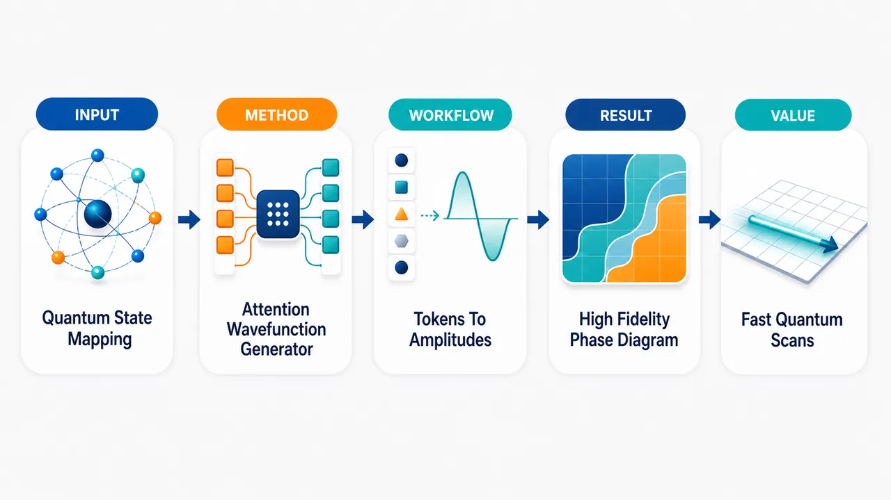
研究问题如何让一个神经网络不再只求解单个哈密顿量，而是像“量子态基础模型”一样，输入 Fock 基构型与哈密顿量参数，即可生成不同耦合强度、不同粒子数下的完整多体基态复波函数。创新方法提出 Q-stage：把每个 Fock basis configuration 视为格点占据 token，用 occupation embedding 与 positional embedding 描绘晶格构型；self-attention 捕捉全局空间关联；再用单个 Hamiltonian parameter token 通过 cross-attention 注入 ((V/t,N)) 条件；最后用高效 MLP pooling 压缩信息并输出复振幅。Aha 点是：同一个共享参数网络直接学习“参数空间 → 波函数空间”的连续映射，而不是为每个 Hamiltonian 重新训练一个 NQS。工作流程输入二进制 Fock 占据向量与参数 ((V/t,N))；每个格点被编码为“占据状态 + 位置”的 token；多层 self-attention 在所有格点间建立长程量子关联；cross-attention 将哈密顿量参数广播到每个构型流；MLP pooling 汇聚格点与参数信息；linear readout 输出每个基态构型的实部和虚部振幅；组装完整波函数，并用 ED overlap loss 或 VMC energy loss 训练。关键结果在 1D/2D spinless fermion (t)–(V) 模型、最多 16 sites 上，训练 overlap 超过 99.99%，未见参数点 overlap 超过 99.5%；能量相对误差在测试网格内低于 1.5%。二维 (4×4) 方格中，仅用 18 个 ((V/t,N)) 训练点生成 150+ 个基态，并重建 charge excitation 相图；但 mid-spectrum 激发态明显难学，loss 约 0.1，泛化较差。应用价值可把量子多体计算从逐点求解变成快速参数扫描：训练后几分钟内评估整片参数网格，并可计算能量、关联函数、charge excitation 等任意 equal-time observable。该框架适合探索二维强关联材料、moiré 半导体、Hubbard 或自旋模型，并可与 VMC 结合，用小系统 ED/DMRG 监督预训练，再扩展到更大系统。第一部分：核心概览
提出 Q-stage：一种以 attention 为核心、以 Fock basis configurations 与 Hamiltonian parameters 为输入的量子态基础模型，直接学习参数空间到多体基态波函数空间的映射。模型在 1D/2D (t)–(V) 自旋less费米子模型、最多 16 sites 上，仅用少量 ED 标注点即可实现 >99.5% 外推 overlap、能量误差 <1.5%，并用 18 个 ((V/t,N)) 训练点重建二维相图。其核心地位在于把 NQS 从“单哈密顿量求解器”推进到“参数条件化量子态生成器”。
---
第二部分：结构化快速回顾
《Attention-Based Foundation Model for Quantum States》（None，）
背景
传统材料基础模型多依赖 DFT，只能围绕基态密度建模，难以表达完整复波函数与高阶关联。已有 NQS 在格点模型、量子化学、连续电子体系中表现强，但多数针对单一 Hamiltonian，缺乏跨参数、跨粒子数、跨系统的统一表示。
方法
提出 Q-stage，以每个 Fock basis state 作为 token，通过 site occupation embedding + positional embedding 编码格点构型，经 self-attention 学习空间关联，再用 cross-attention 注入 Hamiltonian 参数 ((V/t,N))，最后经 MLP pooling + linear readout 输出复振幅 (ψ_θ(mathbf n;łambda))。
结果
在 (Nₛ₌₁₆) 的 1D/2D (t)–(V) 模型中，训练 overlap 达 >99.99%，未见参数点 overlap 达 >99.5%；能量相对误差全网格 <1.5%。二维 (4×4) 方格上，使用 18 个 ((V/t,N)) 训练点生成 150+ 个基态并恢复 charge excitation 相图。
讨论
模型泛化依赖 参数空间到波函数空间的光滑映射。简并、一级相变、激发态 level crossing 会破坏光滑性，从而削弱基础模型插值能力。通过小的 symmetry-selective perturbation 可选择唯一基态并稳定学习。
局限
当前主要受限于 ED supervision 的系统尺寸；激发态学习显著困难，mid-spectrum state 在训练 4 倍以上迭代 后 loss 仍约 0.1，而基态约 0.001，且几乎不能泛化。一级相变处波函数不连续，不能直接插值。
结论
Q-stage 证明了 attention-based NQS 可作为量子态基础模型，在同一参数共享网络中学习多 Hamiltonian 的完整复波函数，并可与 VMC 结合突破 ED 尺寸限制，形成“精确信息监督 + 可扩展变分优化”的路线。
---
第三部分：逐章节冷凝解析
Abstract
- Foundation model for quantum states
核心目标是建立跨 Hamiltonian parameters、system sizes、physical systems 的量子态学习架构，输入仅包含 basis configurations 与 physical parameters，输出高精度 ground state wavefunctions。摘要直接界定贡献：*"We present an attention-based foundation model architecture for learning and predicting quantum states across Hamiltonian parameters, system sizes, and physical systems."*
学术创新不只是求解单个波函数，而是学习参数条件化映射。
- Extreme data efficiency on the 2D square-lattice (t)–(V) model
二维方格 (t)–(V) 模型的相图仅由 18 个 parameter-space training points 构建，参数包括 ((V/t,N))。关键证据为：*"we build the phase diagram for the 2D square-lattice (t)–(V) model with (N) particles, from only 18 training points in parameter space ((V/t,N))."*
这表明网络不仅插值能量，还能在不同粒子数 Hilbert sectors 间共享表征。
- Universal foundation model ambition
架构被定位为量子物质通用基础模型的雏形，而非专用 ansatz。摘要结论为：*"our architecture provides a basis for building a universal foundation model for quantum matter."*
---
I Introduction
- DFT-based foundation models miss wavefunction-level information
物理科学中的基础模型已在化学与材料中发展，通常依赖 DFT pipelines。但 DFT 聚焦 ground-state density，无法保留完整复波函数与高阶关联。关键表述：*"DFT centers on the ground-state density and thus omits details accessible only through the ground-state wavefunction, including the full complex structure and higher-order correlations."*
因而，直接学习 ground-state wavefunctions 可提供比密度更统一、更具表达力的物质描述。
- NQS has high expressivity but remains mostly system-specific
Neural-network quantum states 已在 lattice models、quantum chemistry、continuum electron systems 中达到高精度，代表架构包括 restricted Boltzmann machines、convolutional networks、autoregressive flows、attention-based models。证据句：*"Neural-network quantum states (NQS) provide compact and expressive parameterizations of many-body wavefunctions and have achieved impressive accuracy in lattice models..., quantum chemistry..., and continuum electron systems..."*
主要缺口在于现有研究通常仍是 system specific，每个 Hamiltonian 都要重新做昂贵计算：*"most studies remain system specific, and require computationally demanding calculations for each Hamiltonian."*
- Core mathematical objective: learn (łambdamapsto |Ψ_θ(łambda)ångle)
研究目标明确为从 Hamiltonian 参数空间到多体波函数空间的映射：*"Our objective is to learn a mapping from Hamiltonian parameter space to many-body wavefunction space: (bmłambdamapstoketΨθ(bmłambda)), predicting the full wavefunction, such as that of the ground state."*
一旦映射学会，能量和 equal-time observables 可直接后处理获得：*"Once this map is learned, energies and equal-time observables follow directly..."*
- Q-stage architecture: quantum state generation through attention
架构名称 Q-stage 来自 Quantum state generation，输入为 Fock space configurations 与 Hamiltonian parameters (łambda)。原文定义：*"we introduce Q-stage, an attention-based neural network architecture for Quantum state generation."*
使用 second quantized basis，使 occupational basis 与 transformer 离散输入机制天然匹配。
- No hard-coded translational symmetry
架构不强制平移对称性，而是让空间关联由采样学习得到：*"Translational symmetry is not imposed by construction; rather, spatial correlations are learned directly from sampling."*
这一设计提升对 spatial inhomogeneities，如 onsite disorder 的适用性。
- Quantitative benchmark performance
在 1D and 2D (t)–(V) model up to 16 sites，训练点 overlap 超过 99.9%，未见参数点超过 99.5%，能量与 ED 匹配到 within 1.5%。原文为：*"the model attains more than (99.9%) overlap on training points and more than (99.5%) on unseen parameters, and matches ED energies within (1.5%)."*
- Smoothness is essential for foundation-model generalization
泛化成功依赖 smooth mapping from parameter space to wavefunction space。一级相变导致波函数不连续，激发态更难学习。关键句：*"the success of the foundation model relies on a smooth mapping from the parameter space to the wavefunction space."* 以及 *"the wavefunction is discontinuous across first order phase transitions and excited-state are more difficult to learn than ground states."*
---
II Theoretical Framework
- Family of Hamiltonians and parameter-indexed Hilbert spaces
设置为一族由耦合参数 (bmłambdainŁambda) 标记的多体 Hamiltonians：(hat Hbₘłₐₘbdₐ)。例子为 (bmłambda=(V/t,N))。Hilbert space (mathcal Hbₘłₐₘbdₐ) 使用正交 Fock basis (|mathbf nångle)。原文定义：*"Let (hatHbₘłₐₘbdₐ) denote a family of quantum many-body Hamiltonians indexed by couplings (bmłambdainŁambda)."*
- Single shared-parameter wavefunction map
架构寻找同一参数集 (θ) 共享的映射 (ψ_θ(mathbf n;bmłambda))，生成
[
|Ψ_θ(bmłambda)ångle=sumₘₐₜₕbf ₙψ_θ(mathbf n;bmłambda)|mathbf nångle .
]
关键语句：*"Our architecture aims to find single parameter-sharing map (ψθ(n;bmłambda))"*。
shared parameters (θ) 是基础模型性质的核心：一个网络覆盖多个 Hamiltonians。
- Fidelity loss across an ensemble of Hamiltonians
训练目标是聚合多个训练 Hamiltonian 的 fidelity loss：
[
mathcal L(θ)=1-sumbₘłₐₘbdₐᵢₙₘₐₜₕcₐₗ Swbₘłₐₘbdₐmathcal Oᵥ₍bmłambda),
quad sumbₘłₐₘbdₐᵢₙₘₐₜₕcₐₗ Swbₘłₐₘbdₐ=1.
]
原文：*"We realize this map by minimizing a fidelity loss aggregated over an ensemble of Hamiltonians, from a finite training set (mathcal SsubsetŁambda)."*
- Overlap definition and global phase invariance
overlap 定义为
[
mathcal Oᵥ₍bmłambda)=
frac{|łangleΨ_θ(bmłambda)|Ψₘ̊ ED(bmłambda)ångle|²}
sqrt|Ψ_θ(bmłambda)|²|Ψₘ̊ ED(bmłambda)|² .
]
loss 满足 (0łe mathcal L(θ)łe1)，当预测态与 ED 态仅差一个 (łambda)-dependent global phase 时为 0。证据：*" (mathcal L(θ)=0) if (ketΨθ(bmłambda)) matches (ketΨED(bmłambda)) up to a (bmłambda)-dependent global phase..."*
- Arbitrary number of Hamiltonians can be co-trained
因为 (θ) 共享且每个状态接收 (łambda) 条件，同一个模型可在一次训练中包含任意多 Hamiltonians。原文：*"the same model can be trained on arbitrarily many Hamiltonians in a single run by increasing the size of (mathcal S)."*
---
III Model Architecture
- Overall token-to-wavefunction pipeline
架构流程为：Fock state embedding → finite-depth self-attention → single cross-attention → pooling → complex basis-state output → wavefunction assembly → fidelity loss → AdamW training。图注概括：*"Our model first embeds an input Fock state, then passes the token through a self attention block of finite depth, followed by a single cross attention block..."*
- Input and complex amplitude output
每个 Fock basis state 为 binary vector (mathbf n=(n₁,dots,n_L)in0,1^L)，Hamiltonian 参数为 (bmłambda=(V/t,N)inmathbb R×mathbb N)。输出复振幅
[
ψ_θ(mathbf n;bmłambda)=c_θm̊ Re(mathbf n;bmłambda)+i c_θm̊ Im(mathbf n;bmłambda).
]
原文：*"The network produces a complex amplitude for each basis state..."*
- Positional encoding rather than patching or sequence processing
与部分 transformer NQS 或材料基础模型不同，该架构不使用 patching 或递归序列建模，而是通过 positional encoding of the sites 嵌入基态。关键句：*"we choose to embed using positional encoding of the sites in our basis states."*
- Four-part architectural skeleton
结构由四步组成：
- Fock basis state token 嵌入为 (mathbf X=(mathbf x₁,dots,mathbf xL× L))。
- self-attention 混合 site-level embeddings。
- cross-attention 注入 (bmłambda)。
- pooling 输出 wavefunction amplitude。
原文列举：*"Each input token representing a Fock basis state... is embedded..."*；*"passed through a self attention block..."*；*"passed through a cross attention block..."*；*"projected back to the wavefunction output dimension through pooling."*
- Occupation embedding plus learned positional vector
site occupation (nᵢ) 通过可学习映射 (e:0,1→mathbb R^f) 变为 (f)-维向量，再加上 Gaussian initialized learned positional vector (mathbf pᵢ)：
[
mathbf xᵢ₌ₑ₍ₙᵢ₎₊mathbf pᵢ .
]
原文强调：*" (xᵢ) encodes both the occupation and the position of each site on the lattice."*
- Token space and independent basis-state streams
full token space 为 (mathbb Rd× L× f)，其中 (d) 是总 basis-state 数，每个 basis state 被作为独立 stream 处理。证据：*"each basis state is processed as an independent single state stream."*
这避免了对 basis states ordering 的依赖。
- Self-attention block with residual MHA, MLP, and layer normalization
每个 self-attention block 包含 MHA + MLP，两者均有 residual connection；使用 LayerNorm 稳定学习并改善收敛。原文：*"each block undergoes multi-head attention (MHA) followed by a Multi-Layered Perceptron (MLP), both with residual connections"*；*"LN is layer normalization, which retains permutation equivariance, stabalizes learning, and improves convergence..."*
- Multi-head self-attention captures spatial correlations
对每个 head，计算
[
softmaxłeft(fracmathbf Qₕmathbf Kₕ^→psqrtwₕi̊ght)mathbf Vₕ,
quad wₕ₌f/H.
]
该机制使 site embeddings 之间全局交互，从而自然表达量子多体关联。原文给出标准公式：*"the explicit equation for multi-head self-attention is standard..."*
- Single parameter token for ((V/t,N))
参数 token 定义为 (mathbf p_łambda=W_łambdabmłambdainmathbb R^f)，(mathbf P_łambda=[mathbf p_łambda]inmathbb R¹× f)。cross-attention 中 basis-state token 作为 queries，parameter token 提供 keys/values。原文：*"the basis state token, (mathbf X) are queries and the parameter token supplies keys/values."*
- Cross-attention broadcasts Hamiltonian conditioning uniformly
单个 parameter token 将 ((V/t,N)) 的学习投影广播到每个 site，与 basis state 无关。关键语句：*"With a single parameter token, cross-attention broadcasts a learned projection of ((V/t,N)) to every site, independent of the basis state."*
- Cross-attention is injected only once to avoid redundancy
参数标签只需要给每个 state 标记一次，因此 cross-attention 只通过一次。原文：*"Crucially, cross-attention is only passed through once, as the parameter label need only to tag each state once."*
多次注入会带来冗余并占用显存：*"Multiple injections of cross-attention would introduce redundancy and occupy valuable memory."*
- MLP pooling is a key innovation
pooling 阶段将 (mathbf X,V/t,N) 通过 MLP 压缩到 (mathbf hinmathbb R^f)，再 LayerNorm，最后 linear readout 到 ((cm̊ Re,cm̊ Im)inmathbb R²)。原文强调：*"Here, we pool by way of MLP, which is far more efficient at compressing the information, revealing another key innovation of this work."*
- Ordering independence of basis states
网络独立处理每个 basis state token，因此不依赖 basis states 的排列顺序。关键句：*"since the network operates on each basis state token, (mathbf X), independently, the model does not depend on the ordering of the basis states."*
- Occupational basis is naturally compatible with transformers
transformers 适合离散输入，而 occupational basis 正是离散化的 Fock 表示。原文判断：*"As transformers are designed to take in a discrete input, the occupational basis used here is especially appropriate..."*
- Training behavior shown by Fig. 2 and generalization by Fig. 3
Fig. 2 对 2D square lattice (Nₛ₌₁₆,N=8) 显示 loss 逼近 0，total fidelity 逼近 100%；非相互作用基态最难学。图注为：*"Despite training on a wide range of Hamiltonian parameters the loss function asymptotically approaches 0..."*
Fig. 3 在 1D/2D (Nₛ₌₁₆,N=8) 上显示 generalization 超过 99.5% fidelity：*"Generalization exceeds (99.5%) fidelity for all cases tested."*
---
IV Physical Model
- Spinless fermion (t)–(V) Hamiltonian
物理模型为最近邻 hopping 与最近邻 repulsion：
[
hat H=-tsumłₐₙgₗₑ ᵣ,ᵣ'åₙgₗₑfᵣ^dagger fᵣ'
+Vsumłₐₙgₗₑ ᵣ,ᵣ'åₙgₗₑh̊oᵣₕ̊oᵣ',
quad h̊oᵣ₌fᵣ^dagger fᵣ .
]
原文：*"We consider spinless fermions on a lattice with nearest-neighbor hopping and repulsion: the (t)–(V) model."*
- Relevance to moiré semiconductors and competing phases
该 minimal model 捕捉某些 moiré semiconductors 的基本物理，并包含 charge order 与 superconductivity。证据：*"This minimal model captures the essence of certain moiré semiconductors, and exhibits a rich phase diagram phase including charge order and superconductivity."*
- 1D physics: XXZ mapping and KT transition
1D (t)–(V) 模型可映射到 XXZ spin chain，并可由 Bethe ansatz 与 bosonization 精确求解。弱耦合为 metallic Luttinger liquid，强耦合发展为 CDW insulating phase。半填充处 transition 为 Kosterlitz–Thouless type，发生在
[
V/(2t)=1 .
]
原文：*"At half filling, the transition between the Luttinger liquid and the CDW phase is of the Kosterlitz–Thouless type and occurs at (V/(2t)=1)."*
- 2D half filling: infinitesimal repulsion induces checkerboard CDW
二维方格半填充下，非相互作用 Fermi surface nesting 导致任意小 (V/t) 都向 checkerboard CDW insulator 不稳定。原文：*"at half-filling, Fermi-surface nesting in the non-interacting system produces a weak-coupling instability toward a checkerboard CDW insulator for arbitrarily small repulsion (V/t)."*
- Doping frustrates charge order and promotes superconductivity
远离半填充时，charge order 被 frustrate，superconductivity 被促进。原文：*"Doping away from half-filling frustrates charge order and promotes superconductivity."*
charge order 与 superconductivity 的平衡仍是数值挑战：*"Determining the balance between these two competing tendencies remains a nontrivial numerical challenge..."*
- Benchmark setup: periodic boundaries and even (Nₛ)
使用 periodic boundaries 和偶数 (Nₛ)，以支持 half filling。原文：*"We use periodic boundaries and even (Nₛ) so that half filling is supported."*
- Degeneracy resolution is required for smooth learning
方格 (t)–(V) 模型存在 exact degeneracies；为了获得唯一且 symmetry-consistent 的 ground state，需要加入小的 symmetry-selective perturbation。原文：*"we must resolve the exact degeneracies of the square–lattice (t−V) model with a small symmetry–selective perturbation."*
- Checkerboard perturbation with (δ=0.01)
ED 使用 augmented Hamiltonian
[
hat Hₘ̊ ED=hat H+hat Hₘ̊ ₛᵤb,
quad
hat Hₘ̊ ₛᵤb=δsumᵣηᵣₕ̊oᵣ,
quad
ηᵣ₌₍₋₁₎xᵣ₊yᵣ,
]
并设 (δ=0.01)。原文：*"a checkerboard potential that lifts the sublattice degeneracy (we set (δ=0.01))..."*
- Smoothness as a universal approximation prerequisite
简并若不处理，目标态可能随参数不连续或任意旋转，网络难以学习连续映射。原文强烈表述：*"Without a smooth map, the universal approximation theorem fails, and the network cannot generalize."*
一级相变也不能简单插值：*"a foundation model will not be able to interpolate across first order phase transitions..."*
---
V Results
- Exact training hyperparameters
使用 LeCun Initialization、AdamW optimizer、weight decay (3×10⁻³)、learning rate 从 (1×10⁻³) 线性衰减到 (1×10⁻⁴)，衰减触发点为 overlap 达 95%。网络为 2 layers、feature dimension 80、MLP width 80、1 hidden layer、8 attention heads。原文：*"network hyperparameters of 2 layers, feature dimension of 80, MLP width of 80 with 1 hidden layer, and 8 attention heads."*
- No tuning or extra tricks
未进行 hyperparameter tuning、gradient clipping、explicit regularization 或额外复杂化。原文：*"No hyperparameter tuning, gradient clipping, explicit regularization, or additional complexity was introduced."*
- Direct supervised wavefunction optimization without Monte Carlo sampling
训练单个 (|Ψ_θ(łambda)ångle)，不使用 Monte Carlo sampling，直接与 ED wavefunction 优化。原文：*"using no Monte Carlo sampling and optimizing the wavefunction directly against that of ED."*
- Evaluation metrics
报告三类指标：overlap、ground-state energy 与 relative error、ground state versus excited state learning。原文：*"We report (i) the overlap..., (ii) the ground-state energy (E_θ) and relative error..., and (iii) ground state versus excited state learning."*
- Fixed particle number generalization over (V/t)
对 2D (4×4) 方格，先在固定 (N=8) 下训练 4 个 distinct (V/t) 参数点，并平滑泛化到整个 (V/t) 轴。原文：*"we first train on four distinct (V/t) parameter points at fixed (N=8) and smoothly generalize across all (V/t)."*
- Full ((V/t,N)) plane from 18 training points
使用 18 个 ((V/t,N)) 点训练，并在整个 ((V/t,N)) 平面泛化，生成 more than 150 quantum ground states。原文：*"We then train on 18 ((V/t,N)) points and generalize across the entire ((V/t,N)) plane, generating more than 150 quantum ground states..."*
- First NQS to generalize over ((V/t,N)) with finite training set
该相图与前人研究一致，并被定位为第一个在有限训练集上泛化整个 ((V/t,N)) 参数空间的 NQS。关键句：*"is the first NQS model to generalize over the ((V/t,N)) parameter space with a finite training set."*
- Training overlap reaches >99.99%
Fig. 2 中平均训练 overlap 达 >99.99%，loss 平滑单调下降。原文：*"Figure 2 shows a smooth, monotonic loss decay with rapid convergence to near-perfect fidelity: the average training overlap reaches (>99.99%)."*
- Non-interacting state is hardest to learn
(V/t=0) 非相互作用基态最难学，收敛较慢，关联到非平凡 Fermi-surface structure。原文：*"The non-interacting ground state ((V/t=0)) is the hardest wavefunction to learn..."*
- High-convergence plateau boosts generalization
当 average overlap 接近 1 时，泛化能力不成比例地增加；因此需要训练到 >99.99%。原文：*"generalization grows disproportionately as the average overlap plateus to 1."*
- Held-out (V/t) overlap exceeds 99.5%
尽管只训练 five Hamiltonians，模型在 1D 与 2D 全 (V/t) 轴上未见点均达到
[
mathcal Oᵥ>99.5%.
]
原文：*"Figure 3 reports (Oᵥ>99.5%) on every held-out (V/t) value."*
- Energy prediction despite no energy loss
模型从未直接最小化能量，却能预测 ground-state energy。Fig. 4 显示 in-sample 与 out-of-sample 能量在测试网格上相对误差 within 1.5%。原文：*"Although the model never minimizes energy directly, it not only pinpoints the ground state energy, but also generalizes with high prediction accuracy."*；*"within (1.5%) of the exact value across the tested grid."*
- Full wavefunction enables arbitrary equal-time observables
学到完整复波函数后，任何 equal-time observable 都可后处理计算。原文：*"any equal-time observable for any set of Hamiltonian parameters can be straightforwardly calculated."*
这比仅拟合 local energies 更广泛：*"training on wavefunctions, rather than local energies, yields broad observable accuracy after a single supervised pass."*
- Charge excitation energy defines phase diagram
相图使用 charge excitation energy：
[
Δ E_c(N)=EN₊₁+EN₋₁-2E_N .
]
原文：*"We define this quantity as: (Δ E_c(N)=EN₊₁+EN₋₁-2E_N)."*
- Particle–hole symmetry about half filling
(Nₛ₌₁₆) 时半填充为 (N=8)，(Δ E_c(N)) 关于 (N=8) 对称，体现 Hamiltonian 的 particle–hole symmetry。原文：*"The energy (Δ E_c(N)) in Fig. 5 is symmetric about half filling ((N=8)), reflecting the particle–hole symmetry..."*
- Half filling evolves from metallic to CDW insulating behavior
半填充处，(Δ E_cge0)，在 (V/t=0) 外推到约 0，符合 compressible metallic state；随 (V/t) 增大，(Δ E_c) 单调增长，进入 checkerboard CDW insulator，并在大 (V) 接近 (4V)。原文：*"As (V/t) increases, (Δ E_c) grows monotonically... and approaches the asymptotic value (4V) at large (V)."*
- Doping creates effective attraction despite repulsive Hamiltonian
远离半填充时，在 (N=7,9) 与 (N=6,10) 处 (Δ E_c<0)，表示 effective attraction。原文：*"upon doping away from half filling, an effective attraction develops: the charge excitation energy becomes negative..."*
这说明加入两个电子能量低于两个单电子能量：*" (E₂ₑ<2E₁ₑ)"*，来源于 CDW electron–hole fluctuations：*"despite the purely repulsive nature of the Hamiltonian..."*
- Ground-state learning beats mid-spectrum excited-state learning
在 1D (Nₛ₌₁₂,N=6) 半填充链上，对 mid-spectrum excited state 做监督优化。即使训练迭代数超过基态 4 倍，激发态收敛 loss 约 0.1，基态约 0.001。原文：*"Despite training for over quadruple the number of iterations... about (L(θ)coⁿvergedₑₓc=0.1) compared to (L(θ)coⁿvergedgₛ=0.001)."*
- Excited states fail to generalize due to level crossings and small spacings
mid-spectrum states 有极小 level spacings、频繁 level crossings、对边界条件敏感，导致目标态随参数快速变化。原文：*"mid-spectrum states have extremely small level spacings, frequent level crossings, and higher sensitivity to boundary conditions..."*
比喻为移动靶：*"almost like trying to fit a moving target."*
- Excited-state improvement requires stronger inductive bias
可能改进包括 symmetry sector selection、tracking level crossings、orthogonality penalties。原文：*"additional inductive biases—such as employing symmetries to select excited states from a particular Hilbert space sector, tracking level crossings, and adding orthogonality penalties..."*
---
VI VMC comparison
- Unsupervised foundation-model training through VMC
除监督 overlap 训练外，还进行 variational Monte Carlo energy minimization，不使用 exact wavefunctions 或 exact energies 作为训练数据。原文：*"we perform unsupervised training of our foundation model... without using exact wave functions or exact energies as training data."*
- Ensemble variational energy objective
VMC loss 为
[
mathcal Lₘ̊ VMC(θ)=sumłₐₘbdₐᵢₙₘₐₜₕcₐₗ Sw_łambda E_θ(łambda),
quad
E_θ(łambda)=
frac{łangleΨ_θ(łambda)|hat H_łambda|Ψ_θ(łambda)ångle}
łangleΨ_θ(łambda)|Ψ_θ(łambda)ångle.
]
原文：*"we minimize the ensemble variational energy..."*
- Sampling distribution and local energy
配置按
[
p_θ(mathbf n|łambda)=
frac|ψ_θ(mathbf n;łambda)|²
sumₘₐₜₕbf ₙ'|ψ_θ(mathbf n';łambda)|²
]
采样，local energy 为
[
Eₘ̊ ₗₒc(mathbf n;łambda)=
sumₘₐₜₕbf ₙ'łanglemathbf n|hat H_łambda|mathbf n'ångle
fracψ_θ(mathbf n';łambda)ψ_θ(mathbf n;łambda) .
]
原文：*"This expectation value is estimated from configurations sampled according to..."*
- VMC retains parameter generalization
Fig. 7 证明，一个 VMC energy optimized Q-stage 模型在稀疏训练 Hamiltonians 上训练后，可在 (N=6)、2D (Nₛ₌₁₆) doped square lattice 上复现全 interaction range 的 ground-state energy，包括未训练 Hamiltonians。原文：*"Agreement persists at Hamiltonians not included in training, showing that VMC retains the parameter generalization established above through overlap supervision."*
- Architecture supports both supervised and unsupervised objectives
同一 Q-stage 框架可用 overlap loss 或 VMC energy loss。关键句：*"the Q-stage framework extends powerfully to VMC energy minimization..."*
- VMC improves scaling beyond ED
ED 的 Hilbert space 维数随系统大小组合爆炸；VMC 只在采样配置上评估 wavefunction，成本由 samples、Hamiltonian connectivity、network evaluation cost 决定。原文：*"Exact diagonalization requires a Hilbert space whose dimension grows combinatorially with system size. VMC instead evaluates the wave function only on sampled configurations..."*
- Hybrid route: overlap pretraining plus VMC scaling
当 exact wavefunctions 可得时，应优先用 overlap training，因为它约束完整 amplitude、phase、correlation structure。之后用 VMC 将表征扩展到更大系统。原文：*"Using the initialization of the overlap objective, VMC energy minimization can then extend the learned representation to larger systems where exact data no longer exist."*
---
VII Discussion
- Direct wavefunction foundation model without extra physical input
Q-stage 直接从 basis configurations 与 Hamiltonian parameters 学习 many-body wavefunctions，无需额外系统知识。原文：*"learns and predicts many-body wavefunctions directly from basis configurations and Hamiltonian parameters, with no additional input knowledge about the system."*
- Smooth mapping condition governs generalization
只要存在参数空间到波函数空间的 smooth mapping，模型就能在参数空间强泛化，并在未直接训练能量时仍给出准确 out-of-sample energies。原文：*"Provided a smooth mapping from parameter space to the wavefunction space exists, our model yields strong generalization..."*
- Fast inference over entire parameter grids
训练完成后，模型可在几分钟内评估整个 parameter grid，与 ED 的 exponential scaling 形成鲜明对比。原文：*"Inference is fast: once trained, the model evaluates an entire parameter grid in minutes, in sharp contrast to the exponential scaling of ED."*
- Scaling to larger systems via ED/DMRG and VMC
当前受 ED supervision 限制，但可在小系统用 ED 或 DMRG validation 训练，再在大格点上进行 VMC energy minimization。原文：*"train on smaller system sizes with ED or DMRG validation, and then perform VMC energy minimization on larger lattices."*
- Transfer to broader Hamiltonians and bosons
由于输入是 tokenized basis states 加 shared parameter token，架构可迁移到 Hubbard、(J₁)–(J₂) 等 lattice/spin models，也可通过调整 site-occupancy vocabulary 适配 bosons。原文：*"transfers to other lattice or spin models... and to bosons by adjusting the site-occupancy vocabulary without redesigning the network."*
- Possible continuum extension
框架可用于 real-space orbital basis，而非 occupational basis，粒子位置可从 continuum 采样。原文：*"applied to the orbital basis in real space rather than the occupational basis, where the positions of each particle are sampled from the continuum."*
- Excited states require orthogonality and symmetry structure
激发态可结合 Gram-Schmidt orthogonalization、orthogonality penalties、symmetry sectoring。原文：*"Orthogonality penalties (such as Graham-Schmidt orthogonalization) and symmetry sectoring can be applied to find excited states."*
---
VIII Acknowledgements
- Collaborative and funding context
致谢对象包括 Max Geier, Zoe Zhu, Filippo Gaggioli, David Lin, Matthew Burruss。资助来自 NSF Award No. PHY 2425180、MIT Dean of Science Graduate Student Fellowship、Simons Investigator Award。原文：*"This work was supported by the NSF through Award No. PHY 2425180."*
---
IX Data Availability
- Data available upon request
支撑结果的数据可向通讯方申请。原文：*"The data that support the findings of this study are available from the corresponding author upon request."*
---
X Code Availability
- Public architecture repository
架构代码公开于 https://www.deeppsi.ai/code-repository，并包含其他 AI tools for quantum many-body simulation。原文：*"The architecture built in this paper is publicly available https://www.deeppsi.ai/code-repository..."*
---
第四部分：深度理解与语言支持
1. 术语解析
- Foundation model
在机器学习中通常指能从广泛数据中学习通用表征、并迁移到多个任务或参数区域的大模型。这里的微妙点是：不是语言或图像基础模型，而是 quantum-state foundation model，即同一 (θ) 共享网络学习一族 Hamiltonians 的波函数映射。核心不是“大参数量”，而是 跨 Hamiltonian 泛化。
- Parameter-conditioned wavefunction
指波函数显式依赖 Hamiltonian 参数 (łambda)：(ψ_θ(mathbf n;łambda))。区别于普通 NQS (ψ_θ(mathbf n))，这里 (łambda) 作为输入条件，使同一网络可以输出不同物理系统或不同耦合下的态。
- Smooth mapping
指 (łambdamapsto|Ψ(łambda)ångle) 随参数连续、可被神经网络近似。它不只是数学连续性，还包含规范选择、简并态选择、相位一致性等问题。简并或一级相变会让目标态突然跳变，导致模型无法可靠插值。
- Overlap / Fidelity
overlap 衡量两个量子态的相似度，忽略整体相位。数值接近 1 表示完整复波函数非常接近，而不仅是能量接近。这里 >99.5% overlap 比能量误差小更强，因为不同波函数可能有近似相同能量。
- Cross-attention
在 transformer 中，queries 来自一个序列，keys/values 来自另一个条件源。这里 basis-state token 是 queries，Hamiltonian 参数 token 是 keys/values；物理含义是让每个构型振幅都被 ((V/t,N)) 条件化。
2. 疑难查证
- 为什么直接学习波函数比学习能量更强？
能量是一个标量，很多不同波函数可能给出相近能量；波函数包含每个 Fock basis configuration 的复振幅，决定密度、关联函数、结构因子、pairing correlation 等 equal-time observables。学到 (|Ψångle) 后，能量只是其中一个可计算量。
- 为什么简并会破坏泛化？
如果某个 Hamiltonian 有两个完全简并基态 (|Ψ₁ångle,|Ψ₂ångle)，ED 可能在不同参数点随机返回不同线性组合。物理能量连续，但数据标签的波函数可能突然旋转。例如 (łambda₁) 输出 (|Ψ₁ångle)，(łambda₂) 输出 ((|Ψ₁ångle+|Ψ₂ångle)/sqrt2)。神经网络看到的是不光滑标签，而不是不够强。加入 (δ=0.01) checkerboard perturbation 的作用就是人为选择一致分支。
- 为什么激发态比基态难学？
基态通常与相邻能级有较大 gap，随参数变化较平滑。mid-spectrum excited states 的 level spacing 极小，频繁发生 avoided crossing 或 true crossing；“第 (k) 个能级”的波函数成分可能在很小参数变化下彻底交换。模型要学的是一个快速重排的目标函数，因此训练 loss 高、泛化差。
- 为什么 (V/t=0) 非相互作用态反而难学？
非相互作用费米海的 Fock-space 振幅结构由动量填充和 Slater determinant 决定，在实空间 occupational basis 中呈现高度非局域的符号/相位结构。相比强相互作用 CDW 态更接近少数主导构型，费米面结构对网络更细粒度、更难拟合。
---
第五部分：创新评估与关联
1. 创新性判断
- 从单 Hamiltonian NQS 到 Hamiltonian-family NQS
过去 2–5 年 attention-based NQS 已能在单一模型、单一参数点上获得 state-of-the-art variational energy，但通常每个 Hamiltonian 重新训练。Q-stage 的新颖性在于学习
[
łambdamapsto|Ψ_θ(łambda)ångle
]
的共享映射，使同一网络覆盖多个 (V/t)、多个 (N)、多个 Hilbert sectors。
- 以完整复波函数作为基础模型输出
许多材料 foundation models 输出能量、力、带隙或结构性质；Q-stage 输出 complex wavefunction amplitudes。这解决了 DFT-style property prediction 无法恢复高阶关联与完整 quantum state 的问题。
- 极少参数点重建相图
使用 18 个 ((V/t,N)) 训练点生成 150+ 个 ground states，并恢复二维 (t)–(V) charge excitation phase diagram。相对于密集扫描 ED/DMRG/VMC，该策略显著降低参数扫描成本。
- Cross-attention Hamiltonian conditioning
将 ((V/t,N)) 作为 single parameter token 注入 basis-state stream，是面向量子态生成的简洁条件化机制。它避免把不同 Hamiltonians 训练成多个模型，也避免手工设计不同 ansatz。
- Smoothness principle made explicit
明确提出基础模型量子态泛化需要 smooth wavefunction manifold，并通过 degeneracy lifting、ground/excited 对比实验证明该原则。该点不仅是工程经验，也是未来 quantum foundation model 数据构造与训练集选择的理论约束。
- Supervised overlap + unsupervised VMC hybrid path
监督 ED overlap 提供完整振幅/相位信息，VMC energy minimization 提供大系统可扩展性。二者结合为突破 ED 与二维 DMRG 极限提供路线：小系统精确监督预训练，大系统变分微调。
-
02
💡 亮点：未约化持久图减少拓扑特征信息丢失。
📖 展开分析 + 配图
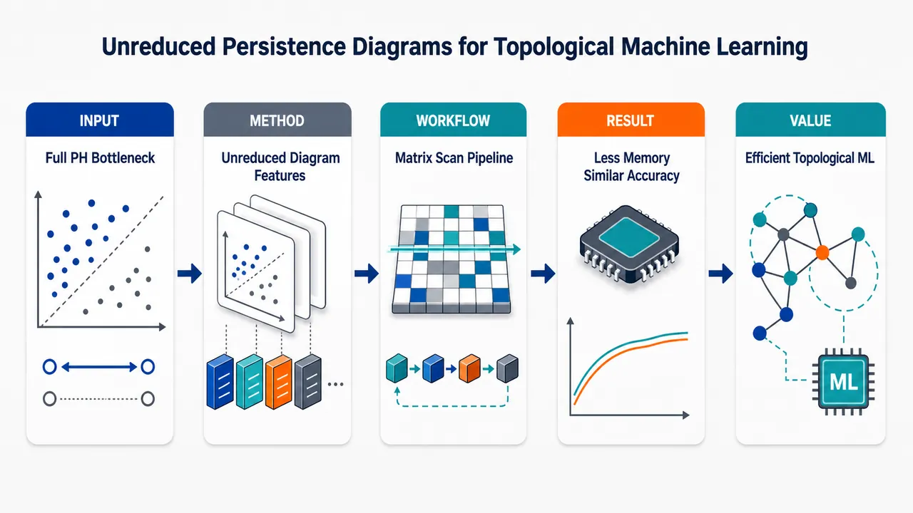
研究问题持久同调机器学习中，是否真的必须先完成昂贵的边界矩阵完全约化，才能得到有效的拓扑特征？核心矛盾是：标准 PH-ML 管线花大量内存和时间生成完整 persistence diagrams，但监督模型常只使用其中少量信息，造成“高成本计算—低比例利用”的资源浪费。创新方法提出从未约化或部分约化边界矩阵直接生成拓扑摘要的 unreduced persistence diagrams：AP、qAP↓、qAP↑、L1。Aha 点是把原本用于加速完整 PH 的 apparent-pair 局部矩阵结构，直接提升为机器学习特征来源；尤其 qAP↑ 利用 β(Mⱼ₎ 作为最终配对行的上界候选，无需列加约化即可提取近似持久性点，并可用 hash map 和 Ripser 风格 coboundary 搜索高效实现。工作流程输入点云、图像或脑扫描数据 → 构造 VR、alpha 或 lower-star filtered complex → 按滤波值生成边界矩阵或 coboundary 矩阵 → 不做完整标准约化，而是扫描列中的 low、β 与 apparent/quasi-apparent 结构 → 生成 AP、qAP↓、qAP↑ 或 L1 未约化图 → 删除 0-persistence ephemeral pairs → 将图向量化 → 输入分类或回归模型 → 与 fully reduced PD 特征进行性能和资源对比。关键结果理论上，L1 图对 bottleneck distance 具有全局 1-Lipschitz 稳定性；AP、qAP↓、qAP↑ 不具备全局稳定性，但在无 simplex 排序交换的泛型局部区域内 1-Lipschitz 稳定。实验上，大的不稳定事件很少，多数扰动下 AP/qAP↓ 的 bottleneck-Hausdorff 比值低于 fully reduced Rips 稳定常数 2。机器学习任务中，每个实验至少有一种未约化 PD 达到或超过 fully reduced PD；qAP↑ 的 Ripser 修改实现平均内存需求降低约一个数量级，并天然易并行。应用价值为拓扑机器学习提供一种“少算但够用”的前端特征提取方案，把完整 PH 计算后的信息丢弃，前移为计算阶段直接避免无用约化。适合大规模点云、图像、脑影像等 PH-ML 场景，可显著降低内存压力，提升可并行性，同时保持甚至提升下游分类和回归性能。第一部分：核心概览 (Overview)
Unreduced persistence diagrams 将持久同调机器学习中最昂贵的边界矩阵完全约化步骤替换为从未约化边界矩阵直接提取的 AP、qAP↓、qAP↑、L1 图。核心贡献在于：形式化定义这些近似拓扑摘要，证明其稳定性边界，展示 qAP↑ 可显著降低内存并易并行，并在多类 PH-ML 任务中达到或超过 fully reduced diagrams。该工作定位于计算拓扑数据分析与拓扑机器学习的资源效率优化，挑战“必须完整计算 PH 才能获得有效 ML 特征”的默认假设。
---
第二部分：结构化快速回顾
《Unreduced Persistence Diagrams for Topological Machine Learning》（None，）
背景
Persistent homology 已成为拓扑机器学习中的标准特征提取工具，但计算 persistence diagrams 通常是流水线中最昂贵的步骤。多个经验结果显示，监督学习模型常常只使用 PD 中很少一部分信息。
方法
提出四类 unreduced persistence diagrams：AP、qAP↓、qAP↑、L1，均从未约化或部分约化边界矩阵中直接构造，避免完整标准约化。qAP↑ 还被实现为修改版 Ripser，用于 Vietoris–Rips 复形。
结果
理论上，L1 对 bottleneck distance 全局稳定；AP/qAP↓/qAP↑ 一般不全局稳定，但在泛型情形下局部 Lipschitz 稳定。实验上，AP 和 qAP↓ 的大不稳定事件很罕见，多数扰动下比值低于 FR 的 Lipschitz 常数 2。
讨论
未约化 PD 可捕捉与持久性相关的部分信息，且在 ML 任务中可能不逊于 fully reduced PD。该策略把“训练后丢弃信息”前移为“计算时少算信息”。
局限
AP/qAP 类图对 simplex 排序变化敏感，可能因微小滤波扰动产生点数变化，从而出现 bottleneck instability。提供文本中 Section 5 的具体实验数值、任务性能表和完整计算 benchmark 结果不可见。
结论
未约化边界矩阵包含足够多的可用拓扑信号，可在降低计算成本的同时维持甚至提升下游机器学习性能，是 PH-ML 管线的一种有前景替代方案。
---
第三部分：逐章节冷凝解析 (Section-by-Section Condensing)
Abstract
Computational bottleneck in PH-ML pipelines
Persistent homology 特征在监督学习中常常存在信息冗余，而计算 persistence diagrams 又是最耗资源的环节。摘要明确指出，PH-ML 模型经常忽略 PD 中大量信息：*"Supervised machine learning pipelines trained on features derived from persistent homology have been experimentally observed to ignore much of the information contained in a persistence diagram."* 这种观察构成研究问题的直接动机。
Unreduced boundary matrices as feature sources
核心方法不是完整约化边界矩阵，而是从 unreduced boundary matrices 中生成拓扑特征向量：*"we introduce several methods to generate topological feature vectors from unreduced boundary matrices and investigate their theoretical and computational properties."* 这意味着拓扑特征提取从标准 PH 的终点——完全约化 PD——提前到边界矩阵约化前或部分约化阶段。
Comparable or superior ML performance
实验比较对象包括 vectorizations of unreduced PDs 与 vectorizations of fully-reduced PDs，覆盖多种数据和任务类型。摘要给出的结论是，未约化 PD 不仅可持平，有时可超越完全约化 PD：*"models trained on PDs built from unreduced diagrams can perform on par and even outperform those trained on fully-reduced diagrams on some tasks."*
Memory reduction and parallelization
qAP↑ 计算算法基于重度修改版 Ripser，具备并行潜力，并显著降低内存需求：*"These computations are parallelizable and required an order of magnitude less memory on average compared to computing full persistence diagrams."* “order of magnitude” 表示平均内存约降低一个数量级，而非小幅优化。
---
1 Introduction
PH-ML has broad empirical reach
拓扑特征提取后接机器学习已经成为实用 TDA 的标准路径之一，覆盖生物学、生物医学、神经科学、金融、宇宙学、材料科学等领域。原文概括为：*"Topological feature extraction followed by subsequent machine learning (ML) comprises one of the now standard approaches to practical topological data analysis."* 这表明研究对象不是纯理论 PH，而是面向实际 ML 管线的计算瓶颈。
Persistent homology remains expensive
尽管 PH 算法已有大量优化，仍然在许多实例中计算昂贵。原文写道：*"Despite substantial and ongoing improvements since its introduction ..., PH remains expensive to compute in many instances."* 计算成本尤其集中在从数据集中为所有样本计算 PD 的阶段。
Standard PH-ML pipeline is serial and waste-prone
标准流程为：先对每个数据条目计算 PH 得到 persistence diagrams，再将 PD 向量化到欧氏空间，最后训练下游监督模型。原文描述为：*"First, extract topological information from a data set by computing PH for all its entries. The resulting summaries, persistence diagrams (PDs), are then transformed into vectors lying in a Euclidean space."* 这种串行结构使前端 PH 计算的成本无法被后端模型选择性使用信息的事实抵消。
Empirical evidence shows PD information is often discarded
已有研究显示，机器学习性能可能只依赖 PD 的极少统计或单个排序特征。Bendich 等人的回归实验中，仅保留第 28 个最持久点的 persistence 即可接近最优相关：*"retaining the persistence of the 28th most persistent point in their diagrams yielded “near-optimal” correlation with their regression target."* Ali 等人的 benchmark 则发现，简单统计量表现最好：*"the best performance was obtained from a “rather naïve [vectorization] obtained by collecting basic statistical quantities” from a PD."*
Central hypothesis: full PH computation may be unnecessary
由于训练后常丢弃 PD 信息，完整计算 PH 可能浪费资源。关键问题转化为：能否少算拓扑信息而不显著损害 ML 性能。原文提出：*"an obvious hypothesis is that significant computation is wasted fully computing PH from inputs in these instances."* 这不是单纯压缩 PD，而是改变计算对象。
Unreduced persistence diagrams avoid boundary matrix reduction
解决方案是完全避免边界矩阵约化，直接从未约化矩阵中构造近似 PD：*"We propose and investigate here a solution which avoids boundary matrix reduction entirely."* 所谓 unreduced persistence diagrams 是从标准边界矩阵出发、不执行完整约化而得到的 pair multiset：*"unreduced persistence diagrams, which are multisets of pairs computed from unreduced boundary matrices."*
Apparent pairs motivate the construction
研究基础来自优化 PH 算法中的经验事实：边界矩阵大量列可通过廉价检查识别为真实 persistence pairs 或近似 pairs。原文指出：*"a substantial proportion of columns in PH boundary matrices can be identified with inexpensive computations as encoding persistence pairs or approximate persistence pairs without further reduction."* 这对应 Bauer 所谓 apparent pairs (APs)。
Matrix pattern of apparent pairs
若某非零 entry 左侧全为 0，则该 entry 在从左到右约化中不会被改变；若它还是该列最低非零 entry，则对应约化后的 persistence pair。原文给出逻辑：*"If a nonzero entry has only 0 entries to its left, it will not be changed during left-to-right matrix reduction. If, additionally, that entry is the lowest nonzero entry in its column, then it corresponds to a persistence pair after reduction."*
Five diagram variants and paper roadmap
研究定义并比较 fully reduced PD 与四类 unreduced PD。Section 2 形式化定义；Section 3 分析稳定性；Section 4 benchmark qAP↑ 计算；Section 5 比较 ML 性能。原文总结：*"In Section 2 we provide formal definitions for unreduced PDs and collect some of their basic properties. Section 3 investigates their stability both theoretically and experimentally."*
Stability is mixed
理论稳定性结论较细：多数未约化 PD 仅局部稳定，只有原始 low 1 构成的 naive 图全局稳定。原文明确写道：*"most unreduced PD transformations are only locally stable with respect to the bottleneck distance. Only a naive diagram construction consisting of unaltered low 1’s from an unaltered boundary matrix is globally stable."*
qAP↑ implementation is memory efficient
Section 4 的实现是修改版 Ripser，用于 VR 复形 qAP↑ 图。它可并行且内存显著低于完整 Ripser 约化：*"The algorithm easily parallelizes and generally demands substantially less memory than full reduction via Ripser."* GitHub 地址为：*"https://github.com/P-Edwards/quasi-apparent-rips"*。
Three ML tasks demonstrate breadth
实验覆盖三类任务：点云形状分类、Fashion-MNIST 图像分类、脑扫描回归。原文列出：*"The first is a relatively straightforward point cloud shape classification experiment, the second is the standard image classification problem on the Fashion-MNIST dataset, and the third is a regression problem using brain scan data processed by Bendich et al."*
At least one unreduced PD matches or beats FR in every experiment
核心实证结论为：*"In all experiments, at least one type of unreduced PD performed as well or better than fully reduced diagrams."* 这种结果还对向量化方法和 filtration 类型变化稳健：*"These results were robust to changes in vectorization method and filtration type."*
---
2 Background and Preliminaries
Filtered complexes are the geometric foundation
PH 可用代数或范畴语言表述，但几何动机最直观：从数据构造有限抽象复形 Σ，并赋予满足面关系的滤波函数 f: Σ → ℝ。原文定义：*"one constructs a finite abstract complex Σ, cubical or simplicial, from input data. This complex is equipped with a filtration function f : Σ → ℝ which respects face relations."*
Common filtrations include VR, alpha, and lower-star
点云常用 Vietoris–Rips filtration 与 alpha filtration，图像常用 lower-star filtration。原文列举：*"Common filtrations include the VR and alpha filtrations for simplicial complexes built on point-cloud data ... and the lower-star filtration built for cubical complexes constructed from image data."*
Boundary matrix construction requires filtration-consistent ordering
将 filtered complex 转为边界矩阵 M ∈ Z₂ⁿ×ⁿ，需要选取与 f 一致的 simplex 全序。原文定义一致性：*"Call a total ordering on a filtered complex Σ consistent with a filtration function f : Σ → ℝ if f is an order-preserving function with respect to the total order on Σ and the standard order on ℝ."*
Standard reduction uses low indices
列 j 的 low(Mⱼ₎ 是该列中最大行索引的 1；若零列则为 -1。原文给出：*"define low(Mⱼ₎₌ₘₐₓ₍i | Mᵢ,ⱼ=1) with low(Mⱼ₎₌₋₁ if Mⱼ is a zero column."* 标准算法从左到右进行 mod-2 列加，直到每个非零列 low 不与前列重复。
Reduced matrix encodes births and deaths
约化矩阵 R 的非零列为 negative columns，对应 homology class 的死亡；零列为 positive columns，对应出生。原文写道：*"columns consisting entirely of 0s ... are positive columns which correspond to the “birth” of a homology class. Negative columns contain 1s, and correspond to the “death” of a homology class."*
β(Mⱼ₎ captures a non-eliminable row candidate
β(Mⱼ₎ 定义为列 j 中最大行索引 z，且该行在所有前列 j′ < j 中为 0；若不存在则为 -1。该 row 的 1 无法通过前列 mod-2 加法消除。原文关键句：*"a 1 in row z of column Mⱼ cannot be eliminated by reduction if β(Mⱼ₎₌z."*
β gives bounds on final low after reduction
若 β(Mⱼ₎ ≠ -1，则约化后 Rⱼ 必然为 negative column，并且最终 low 位于 β 与原 low 之间：*"if β(Mⱼ₎≠−1, column Rⱼ is necessarily a negative column"*，以及 *"low(Rⱼ₎∈[β(Mⱼ₎,low(Mⱼ₎]."* 这为 qAP↑ 与 qAP↓ 的上下近似解释提供理论依据。
Upper and lower quasi-apparent pairs bracket the true reduced pairing
当 β(Mⱼ₎ ≠ -1 时，定义 upper quasi-apparent 为 (β(Mⱼ₎, j)，lower quasi-apparent 为 (low(Mⱼ₎, j)。原文解释：*"β(Mⱼ₎ is the highest possible and low(Mⱼ₎ the lowest possible row index for the row which pairs with the negative column Rⱼ."*
Apparent pairs are guaranteed true FR points
若 β(Mⱼ₎₌ₗₒw(Mⱼ₎，则该列无需加前列已经完全约化，对应 apparent pair 必然出现在 fully reduced PD 中。原文表述：*"In the special case where β(Mⱼ₎₌ₗₒw(Mⱼ₎, one has that Mⱼ₌Rⱼ without any column additions ... The corresponding AP ... is thus guaranteed to be a point in the fully reduced PD."*
Definition 2.1 formalizes five PDs
五类图包括 fully reduced diagram FR 与四类未约化图：AP、qAP↓、qAP↑、L1。原文明确：*"We study five variants here."* 并定义：*"The latter four PDs are unreduced persistence diagrams."*
FR includes finite and infinite pairs
FR(M) 由所有 reduced negative columns 的 (low(Rⱼ₎, j) 以及未被任何 death 配对的正列 (i,∞) 组成。原文定义为：*"The fully reduced persistence diagram (FR) of M is FR(M):=..."* 其中包含 *"(i,∞) ..."*，体现标准 PH 的 essential classes。
AP retains only β=low pairs
AP(M) 只收集满足 β(Mⱼ₎₌ₗₒw(Mⱼ₎≠−1 的列：*"The apparent pair PD of M is AP(M):=(low(Mⱼ₎,j) | β(Mⱼ₎₌ₗₒw(Mⱼ₎≠−1."* 这是最保守、最高置信的未约化构造。
qAP↓ uses original low for columns with β available
qAP↓(M) 收集 β(Mⱼ₎≠−1 的列，但 birth index 取原始 low(Mⱼ₎：*"qAP↓(M):=(low(Mⱼ₎,j) | β(Mⱼ₎≠−1."* 它使用最终 low 的下界候选，因此在 VR 高维中常会产生 ephemeral pairs。
qAP↑ uses β for columns with β available
qAP↑(M) 收集 β(Mⱼ₎≠−1 的列，birth index 取 β(Mⱼ₎：*"qAP↑(M):=(β(Mⱼ₎,j) | β(Mⱼ₎≠−1."* 它在后续 computational benchmarking 中成为重点，因为在 VR 复形高维不会像其他未约化图那样全部退化为 ephemeral。
L1 collects every original low one
L1(M) 收集所有非零列的原始 low：*"The low-ones (L1) PD of M is L1(M):=(low(Mⱼ₎,j) | low(Mⱼ₎≠−1."* 这是最朴素、信息最多但也最粗糙的未约化构造。
Index-based diagrams are mapped to filtration-value diagrams
索引对 (i,j) 通过 filtration function 映射为 (f(σᵢ₎, f(σⱼ₎₎；若 j=∞，则为 (f(σᵢ₎,∞)。原文说明：*"each of these PDs may be translated from indexed-based PDs to filtration-value PDs using filtration values for the columns."*
Ephemeral pairs are removed after filtration mapping
当 f(σᵢ₎₌f(σⱼ₎ 时，对应 0 persistence，通常不进入向量化。原文解释：*"we do not include the ephemeral pairs where f(σᵢ₎₌f(σⱼ₎ in any diagram. This is because ephemeral pairs correspond to 0-persistence ... PH classes."*
VR high-dimensional low-one diagrams become empty after ephemeral removal
在 VR 复形中，高维 simplex 的 filtration value 等于其 1-dimensional faces 的最大值：*"f(σ):=maxf(σ′) | σ′⊆σ, dim(σ′)=1."* 因此 dim>1 的列，其 low face 与 simplex 常同 filtration value，使 L1 在高于 0 维的 filtration-mapped 图为空：*"The filtration-mapped low-ones diagram for M is therefore empty in homology degrees greater than 0."*
Proposition 2.2 gives containment relations
对部分约化矩阵 M⁽k)，存在多重集包含关系：AP ⊆ qAP↓ ⊆ L1，AP ⊆ qAP↑，且 AP ⊆ FR(M)。原文列出：*"the following inclusions of multisets hold AP(M⁽k))⊆qAP↓(M⁽k))⊆L1(M⁽k))"*，以及 *"AP(M⁽k))⊆FR(M)."*
Partial reduction monotonically approaches reduced behavior
Remark 2.3 指出，对任何 unreduced PD transformation T，随着已约化列数 k 增加，T(M⁽k)) 与 T(R) 的 bottleneck distance 单调下降到 0：*"d_B(T(M⁽k)),T(R)) ... decreases to 0 monotonically as k increases."*
L1 of reduced matrix equals FR excluding infinite points
若排除带 ∞ 的点，则 L1(R)=FR(M)；其他未约化图一般不满足。原文写道：*"if one excludes points with ∞ as a coordinate that L1(R)=FR(M). This is not the case in general for any other unreduced PD transformation."*
Memory savings arise from avoiding stored reductions
标准算法内存主要来自三类对象：filtration boundary matrix、正在约化的当前列、已约化列或 low indices。原文指出：*"three primary objects which, when stored, drive memory usage ... the filtration boundary matrix, the current column being reduced ... and a set of already fully reduced columns or low 1 indices."*
Unreduced diagrams avoid working coboundaries
未约化图不需要列约化，因此可避免在约化期间存储 working boundaries/coboundaries。原文强调：*"As they do not require reduction, unreduced diagrams additionally avoid storing working (co)-boundaries throughout reduction for columns."*
---
3 Stability
Stability means Lipschitz continuity of diagram transformations
稳定性被严格定义为关于 bottleneck distance 的 Lipschitz 条件：存在 C>0，使得
d_B(T(M^f),T(M^g)) ≤ C||f−g||∞。原文写道：*"Stability is, more precisely, a statement about Lipschitz continuity of these transformations."*
Fully reduced diagrams are globally stable
标准 FR 图拥有 Lipschitz constant C=1 的经典稳定性：*"A celebrated and now foundational result in PH theory is that the fully reduced diagram transformation is stable with Lipschitz constant C=1."* 这构成未约化图稳定性判断的基准。
Unreduced stability is subtler
未约化图并非全部继承 FR 的稳定性。原文直接提示：*"We will see that the situation for unreduced diagrams is more subtle."* 主要难点来自 filtration perturbation 改变 simplex 排序后，β 与 apparent pair 结构可突变。
---
3.1 Theoretical results
Bottleneck distance allows partial matching and diagonal matching
bottleneck distance 通过两个有限多重集间的 partial matching 定义，未匹配点匹配到对角线。原文定义：*"First, a partial matching between two finite multisets of pairs D1,D2 is an injective map φ:S→D2 where S is a subset of D1."* 成本取匹配点距离、D1 未匹配点到对角线距离、D2 未匹配点到对角线距离的最大值。
Closest diagonal projection uses midpoint
任一点 (b,d) 到对角线的最近点为 ((b+d)/2,(b+d)/2)。原文定义：*"For any point (b,d)∈ℝ², Δ((b,d)):=(b+d/2,b+d/2) is the closest point to (b,d) on the diagonal."* 公式排版中应理解为标准 midpoint diagonal projection。
Multi-dimensional diagrams use max over homology degrees
若 PD 包含多个维度，则总 bottleneck distance 为各维度距离最大值。原文写道：*"When considering PDs D1,D2 with points of multiple dimensions ... define d_B(D1,D2):=max ... where D_*^k denotes the subset of the diagram consisting of points with dimension k."*
Non-injective filtrations create non-unique boundary matrices
当 filtration function 非单射时，同一 f 可对应多个一致边界矩阵。FR 不受影响，因为 reduced PD 唯一；未约化 PD 则通常依赖 ordering。原文说明：*"If a filtration function f:Σ→ℝ is not injective, then there is not a unique boundary matrix consistent with f."* 以及 *"A similar result does not hold for unreduced PDs generally."*
Proposition 3.1: L1 is globally 1-stable
对任意有限复形 Σ 与任意两个 filtration functions f,g，任意一致边界矩阵 M^f,M^g 的 L1 图满足
d_B(L1(M^f),L1(M^g)) ≤ ||f−g||∞。原文命题为：*"then d_B(L1(M^f),L1(M^g))≤||f−g||∞."* 这使 L1 成为唯一具备全局稳定性的未约化构造。
L1 stability relies on simplex-wise matching
证明通过同一 simplex σ 的列建立 L1 点之间的匹配。原文构造：*"Define τ_f=Σₗₒw(M^f_σ) and define τ_g=Σₗₒw(M^g_σ) similarly. Consider the partial matching ... (f(τ_f),f(σ))↦(g(τ_g),g(σ))."* 即使 low face 改变，滤波函数 sup-norm 仍控制坐标偏移。
AP/qAP global stability fails combinatorially
AP、qAP↓、qAP↑ 的不稳定源于小扰动改变边界矩阵行列排序，导致 apparent 或 quasi-apparent columns 消失或出现。原文总结：*"Small changes in the filtration function can reorder the rows and columns of an induced boundary matrix in a way that deletes apparent and quasi-apparent columns."*
Example 3.2 uses four points on the real line
反例点云为 P_γ=0,2,5+γ,8，|γ|≤3，顶点标记 A,B,C,D。原文给出：*"Consider the following set of points in ℝ P_γ=0,2,5+γ,8 where |γ|≤3."* 完整 1-dimensional simplicial complex 上定义边长度 filtration。
Small perturbation creates an extra AP/qAP point
对 f_γ，有 AP_γ=qAP↓_γ=qAP↑_γ=(0,2),(0,3−γ)；对 f−γ，多出一点 (0,3+γ)：*"AP−γ=qAP↓−γ=qAP↑−γ=(0,2),(0,3−γ),(0,3+γ)."* 额外点由 BC 与 CD 的列顺序交换造成。
Instability magnitude is independent of small γ
当 γ>0 足够小时，滤波函数距离 ||f_γ−f−γ||∞=2γ，但 bottleneck distance 大于 3/2：*"For all sufficiently small γ>0, we have that ||f_γ−f−γ||∞=2γ while d_B(D_γ,D−γ)=(3+γ)/2>3/2."* 因此不存在全局 Lipschitz 常数。
Proposition 3.3: AP/qAP are locally stable under no-reordering radius
若 f 单射，且 ε 为相邻 filtration values 最小间隔的一半，若 ||f−g||∞<ε，则 g 仍单射且边界矩阵排序不变，AP/qAP↑/qAP↓ 均满足 1-Lipschitz。原文命题为：*"If ||f−g||∞<ε, then g is also injective and d_B(T(M^f),T(M^g))≤||f−g||∞ where T∈qAP↑,qAP↓,AP."*
Local stability proof depends on identical boundary matrices
核心不是约化稳定性，而是排序完全不变，因此 M^f=M^g。原文写道：*"Notice that the total orderings on Σ induced by f and g are the same, so M^f=M^g."* 同一列中的点一一匹配即可得到 cost≤||f−g||∞。
Generic local Lipschitz stability holds almost everywhere
非单射 filtration functions 在 ℝ|Σ| 中构成 proper algebraic subset，测度为 0。因此 AP/qAP 在泛型 filtration 上局部 Lipschitz。原文表述：*"the set of non-injective functions is measure 0, and the quasi-apparent and apparent pair diagrams constructions are locally Lipschitz generically."*
---
3.2 Experimental results
Theoretical local radius is pessimistic
Proposition 3.3 的 ε 要求扰动不能改变任何 simplex 排序，因此很保守。原文评价：*"The local stability radius ε in Proposition 3.3 is pessimistic."* 实际中，行列交换不一定删除 AP/qAP pair，即使删除，也可能 persistence 太小而不影响 bottleneck distance。
Experiment estimates Lipschitz ratios for Rips diagrams
实验用比值 d_B(T(Rips(Pᵢ₎₎,T(Rips(Pⱼ₎₎₎/d_H(Pᵢ,Pⱼ₎ 估计 AP、qAP↓、L1 的稳定性。原文写道：*"We use the Hausdorff distance to estimate the Lipschitz constant of the Rips AP, qAP↓, and L1 PDs computationally with the ratio..."* 大比值或 spike 表示 transformation instability。
Hausdorff distance substitutes for Gromov–Hausdorff in common ambient space
FR Rips PD 对 Gromov–Hausdorff 距离以 C=2 稳定；点云同处欧氏空间，可用更可计算的 Hausdorff distance。原文说明：*"all point clouds lay in the same ambient Euclidean metric space, allowing us to use the more computable Hausdorff distance."*
Base samples are torus point clouds
实验先从 ℝ³ 中单位 torus 采样 200 点：*"We first computed a point cloud sample P of 200 points on a unit torus in ℝ³."* 每个噪声水平下生成 50 个扰动点云，每个点沿随机球面方向移动，幅度从 (0,μ) 均匀抽取：*"perturbing each point in P in a uniform random direction, drawn from the 2-sphere, with a uniform random magnitude drawn from (0,μ)."*
Sampling design yields 50 base clouds and 50 perturbations per noise level
整个过程对 50 个 base point cloud 重复，每个 base cloud 含 200 点。原文写道：*"We then repeated this entire process for 50 points cloud samples, Pᵢ, each consisting of 200 points on the unit torus in ℝ³."*
Six noise levels are tested
噪声水平为 μ₁=0.000001、μ₂=0.00001、μ₃=0.0001、μ₄=0.001、μ₅=0.01、μ₆=0.1。原文完整列出：*"For noise levels μ1=0.000001, μ2=0.00001, μ3=0.0001, μ4=0.001, μ5=0.01, and μ6=0.1..."*
Each noise level produces 2500 ratios
50 个 base samples × 每个噪声水平 50 个 perturbations = 每噪声水平 2500 个 bottleneck/Hausdorff ratios。原文写道：*"we obtained 2500 bottleneck/Hausdorff ratios per noise level."*
AP instabilities occur at moderate-to-large tested noise levels
AP PDs 的不稳定出现在 μ=0.0001、0.001、0.01、0.1。原文报告：*"show instabilities in the AP PDs for noise levels μ=0.0001,0.001,0.01, and 0.1."*
qAP↓ instabilities start at smaller noise levels
qAP↓ 不稳定出现在 μ=0.00001、0.0001、0.001、0.01。原文报告：*"instabilities in the qAP↓ PDs for noise levels μ=0.00001,0.0001,0.001, and 0.01."*
FR and L1 behave consistently with stability theory
经验结果支持 FR 和 L1 的稳定性：*"Empirical study confirms theoretical stability results for FR and L1 PDs."* 这与 FR 的经典稳定性和 Proposition 3.1 的 L1 全局稳定性一致。
Large AP/qAP↓ ratios are rare
尽管 AP 和 qAP↓ 可出现极大 bottleneck/Hausdorff 比值，但多数随机扰动比值低于 FR Lipschitz constant 2。原文指出：*"Very large ratios ... can be observed for the AP and qAP↓ diagrams, but these events appear exceedingly rare."* 例如 μ=0.0001 时，AP 与 qAP↓ boxplot 的 top whiskers 均低于 2：*"the top whiskers of the boxplots for both AP and qAP↓ diagrams at noise level μ=0.0001 ... are below 2."*
Large-ratio events coincide with changed diagram cardinality
额外实验反复采样直到观察到 ratio>3；所有首次大比值都来自扰动前后未约化 PD 点数不同。原文写道：*"In all cases, this first observed large ratio value was produced by a diagram which had a different number of points than the unreduced PD of the corresponding unperturbed point cloud."* 这与 Figure 1 中因列交换产生/删除点的机制一致。
---
4 Computational benchmarking
Resource saving is a primary motivation
计算 benchmark 的核心目标是验证未约化 PD 相比完整 PD 是否节省资源。原文开篇写道：*"A main motivation behind investigating unreduced PDs is the potential to save computational resources compared to full PDs."*
Implementation targets qAP↑ for Vietoris–Rips filtrations
实现基于 Bauer 的 Ripser，但进行了实质性修改，用于计算点云 VR filtration 的 qAP↑ diagrams。原文写道：*"we implemented and benchmarked a substantially modified version of Bauer’s software Ripser to compute qAP↑ diagrams for VR filtrations of point cloud data."*
qAP↑ is chosen because other unreduced VR diagrams are high-dimensional ephemeral
Section 2 已说明，在 VR 复形高于 0 维时，qAP↑ 之外的未约化图多为 ephemeral pairs。原文解释选择理由：*"We focus on qAP↑ diagrams since ... other unreduced PDs for VR complexes have only ephemeral pairs in homology dimensions greater than 0."*
Code is publicly available
实现地址为：*"https://github.com/P-Edwards/quasi-apparent-rips."* 这增强了 benchmark 的可复现性。
Coboundary matrix formulation matches Ripser-style computation
为便于与完整约化算法比较，算法以 filtration coboundary matrix 表述。若 M 是 degree d homology 的 boundary matrix，则 M* 是先转置再反转行列顺序的 anti-transpose。原文定义：*"the filtration coboundary matrix M* is the anti-transpose obtained by transposing M and then reversing the order of the rows and columns."*
qAP↑ computation becomes a column search in M*
计算 qAP↑ 可看作遍历 filtration coboundary matrix 的列。原文写道：*"Computing the qAP↑ diagram can be described as a search across the columns of M*."* 这避免了完整列约化中的反复列加。
Proposition 4.1 links β in boundary matrix to low in coboundary matrix
对 simplex-wise filtration，若 σ 是 (d+1)-simplex，τ 是 d-simplex，则 β(σ)=τ 当且仅当 low(τ,M*)=σ。原文命题：*"Then β(σ)=τ if and only if low(τ,M*)=σ."* 这是 qAP↑ coboundary 算法的数学基础。
Algorithm 1 uses a hash map from death simplices to best birth simplices
算法维护 currentₚₐᵢᵣₛ，将 (d+1)-simplices 映射到 d-simplices。原文伪代码：*"currentₚₐᵢᵣₛ = hash map from (d+1)-simplices to d-simplices."* 遍历每个 d-simplex τ 对应的 M* 列，取 σ=low(τ,M*)，若 σ 尚未出现或当前 τ 的 filtration value 更大，则更新 currentₚₐᵢᵣₛ[σ]=τ。
Returned qAP↑ pairs exclude ephemeral pairs
算法最终返回所有 currentₚₐᵢᵣₛ[σ]=τ 且 f(τ)≠f(σ) 的 filtration pairs。伪代码给出：*"Return {(f(τ),f(σ)) | currentₚₐᵢᵣₛ[σ]=τ and f(τ)≠f(σ)}."* 这与 Definition 2.1 后删除 ephemeral pairs 的约定一致。
Hash map suits independent column search
由于算法结构是跨 coboundary columns 搜索，hash map 可自然存储并更新 qAP↑ 表示。原文说明：*"We use a hash map data structure to store this representation. This is naturally suited to the algorithm’s structure, which is a search across the columns of a filtration coboundary matrix."*
Parallelization is straightforward
不同列的计算彼此不影响，除了可能更新 hash map 中相同 key。原文写道：*"This algorithm straightforwardly parallelizes, as computations from different columns do not affect one another except possibly by modifying entries which share keys in the hash map."* 所提供文本在此处截断，具体并行策略、硬件设置、运行时间与内存表格不可见。
---
第四部分：深度理解与语言支持 (Understanding & Nuance)
1. 术语解析
Unreduced persistence diagrams
不是标准 PH 中由完全约化矩阵得到的 PD，而是直接从未约化边界矩阵的局部结构生成的点集。语境中强调“少算但仍有用”：*"multisets of pairs computed from unreduced boundary matrices."* 关键微妙点在于：它们不是标准 PD 的无偏估计，也不保证拓扑不变量性质完全相同，而是面向 ML 特征的近似拓扑摘要。
Apparent pairs
AP 指无需列约化即可确认会出现在 fully reduced PD 中的 pair。其条件是 β(Mⱼ₎₌ₗₒw(Mⱼ₎≠−1。微妙之处在于 AP 是“高置信但稀疏”的子集：*"The corresponding AP ... is thus guaranteed to be a point in the fully reduced PD."* 因此 AP 更像 FR 的确定性部分，而非任意启发式近似。
Quasi-apparent pairs
qAP 是 AP 的放松版本，只要求 β(Mⱼ₎≠−1，并用 β 或 low 作为 pairing row。qAP↑ 使用 β，qAP↓ 使用 low。语义中的 “quasi” 表示近似 apparent：不保证是最终 FR pair，但有理论夹逼关系：*"β(Mⱼ₎ is the highest possible and low(Mⱼ₎ the lowest possible row index."*
Ephemeral pairs
ephemeral pair 指 birth value 与 death value 相同的 0-persistence pair。它们在索引层面可能存在，但映射到 filtration values 后不贡献常规 PD 向量化信号：*"ephemeral pairs correspond to 0-persistence ... PH classes, and so typically do not contribute information to a vectorization."* 在 VR 高维中，这一概念尤其关键，因为许多 low-based 未约化图会完全退化为 ephemeral。
Locally Lipschitz generically
“generically” 不是“总是”，而是除测度为 0 的退化情形外成立。这里非单射 filtration functions 形成 proper algebraic subset，因此几乎处处局部稳定：*"locally Lipschitz generically, i.e., for any filtration function outside of a set of measure 0."* 微妙点：泛型局部稳定不等于全局稳定，也不排除小概率大不稳定事件。
---
2. 疑难查证
为什么 L1 全局稳定，而 AP/qAP 不全局稳定？
L1 对每一列都取原始 low 1。即使 filtration perturbation 改变 simplex 排序，仍可按 simplex 本身建立匹配：同一个 σ 的列在 f 与 g 下都存在，death coordinate 是 f(σ) 与 g(σ)，birth coordinate 虽可能来自不同 face，但由 filtration 的 face-order property 和 sup-norm perturbation 控制。因此 L1 有全局 1-stability。
AP/qAP 则不同。它们依赖“某个 entry 左侧是否全为 0”或“β 是否存在”这类组合条件。微小扰动若交换两个 simplex 的 filtration 顺序，矩阵的左右关系改变，某列可能从 apparent 变成非-apparent，或反之。这样 diagram 的点数会突变，而多出的点若 persistence 不小，bottleneck distance 必须把它匹配到对角线，产生非小代价。Example 3.2 中 ||f_γ−f−γ||∞=2γ 可任意小，但 d_B>(3/2)，说明任何全局 Lipschitz 常数都会失败。
qAP↑ 和 qAP↓ 的“upper/lower”到底上、下在哪里？
这里的上、下不是 persistence value 大小，而是最终 reduced low row index 的可能范围。对列 Mⱼ，若 β(Mⱼ₎≠−1，则最终 low(Rⱼ₎ 必在 [β(Mⱼ₎, low(Mⱼ₎]。由于行索引越大通常 filtration order 越晚，β 是最终配对 row 的“最高可能”候选，low 是“最低可能”候选。qAP↑ 用 β，qAP↓ 用 low。二者都不是严格标准 PD，但从不同方向近似最终 reduced pairing。
为什么 qAP↑ 在 VR 高维中特别重要？
VR filtration 中，高维 simplex 的 filtration value 等于其边的最大 filtration value。对一个高维 simplex σⱼ，原始 low face σᵢ 往往与 σⱼ 有相同 filtration value，因此 (f(σᵢ₎,f(σⱼ₎₎ 是 ephemeral。L1、AP、qAP↓ 都高度依赖 low(Mⱼ₎，所以高维信息映射后容易消失。qAP↑ 使用 β(Mⱼ₎，该 row 不必是原始 low face，因而可能产生非零 persistence 的高维点，更适合 VR 高维拓扑特征。
为什么 ML 中未约化 PD 可能优于 fully reduced PD？
监督学习不一定需要拓扑不变量的完整精确性；它需要与标签相关且可泛化的特征。FR PD 是数学上规范的摘要，但其中大量点可能对任务无关甚至引入噪声。未约化 PD 从边界矩阵中截取局部、廉价、与 persistence 有关的结构；这些结构可能作为任务特征足够有效。若完整 PH 的“精确性”并未转化为下游预测增益，那么未约化特征可在计算成本更低的同时保持或提升性能。
---
第五部分：创新评估与关联 (Synthesis & Novelty)
1. 创新性判断
从“优化完整 PH”转向“避免完整 PH”
近年 PH 计算优化多集中于更快完成标准约化，例如 apparent pairs、clearing、compression、cohomology、Ripser/Ripser++ 等策略。该研究的创新不只是加速标准 PD，而是提出：在 PH-ML 中也许无需得到标准 PD。关键转向是把 apparent-pair 类结构从“加速完整约化的中间工具”提升为“直接用于机器学习的拓扑特征”。
未约化 PD 被形式化为一族可比较对象
AP、qAP↓、qAP↑、L1 被统一定义为 diagram transformations，并与 FR 建立包含、收敛、稳定性关系。尤其 qAP↑/qAP↓ 利用 β(Mⱼ₎ 与 low(Mⱼ₎ 对 reduced low 的上下界，这是从边界矩阵局部结构到近似 PD 的系统化构造，而不是简单随机截断 PD。
稳定性分析揭示可用边界
研究没有仅凭经验宣称近似有效，而是证明 L1 全局稳定、AP/qAP 非全局稳定但泛型局部稳定，并用明确反例展示不稳定机制。这一点使贡献更严谨：未约化 PD 的数学风险被定位在 filtration-induced ordering swaps，而非笼统的“近似误差”。
计算实现选择 qAP↑ 具有针对性
qAP↑ 被选为 VR 复形高维 benchmark 对象，是因为 low-based 未约化图在高维多为 ephemeral。该选择体现对 VR filtration 结构的细致理解，而不是机械测试所有定义。
解决的问题
过去 2–5 年相关工作主要解决“如何更快、更省内存地算出完整 PD”或“如何更好向量化 PD”。该研究解决的是更前端的问题：当下游 ML 本身会忽略大量 PD 信息时，是否可以从未约化边界矩阵直接提取足够有效的拓扑特征，从而避免完整 PH 的核心计算成本。其直接回应了 PH-ML 管线中的资源错配：最昂贵的步骤产生的信息，未必被模型使用。
-
03
📊 含图深析
💡 亮点：机器学习用于 In2Se3 外延多晶型选择。
📖 展开分析 + 配图
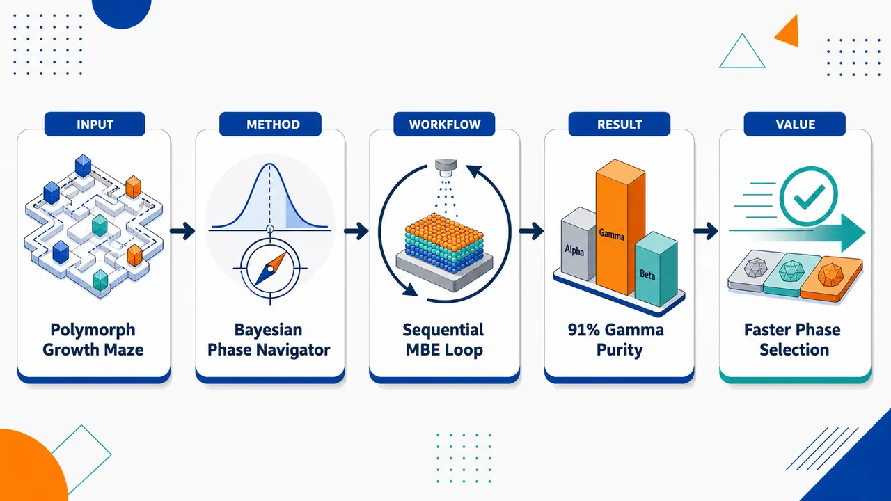
研究问题In₂Se₃ 在分子束外延中存在 α、γ 等多晶型竞争，衬底温度、In 通量、Se 通量和裂解器温度相互耦合，使高相纯单一晶相薄膜难以通过传统经验扫描快速获得。创新方法将贝叶斯优化嵌入真实 MBE 生长闭环，用高斯过程回归器在小样本下同时预测相纯度与不确定性，像“智能导航仪”一样逐轮推荐下一组生长参数，快速锁定 γ-In₂Se₃ 的有利相形成窗口。工作流程输入四维 MBE 参数：衬底温度、铟通量、硒通量、裂解器温度；进行一次 In₂Se₃/Al₂O₃ 外延生长并表征相纯度；高斯过程模型更新参数—相纯度地图；贝叶斯优化选择下一实验点；循环少量轮次后输出目标多晶型薄膜及其相纯度。关键结果少于 10 次 BO 运行样本即获得 91% 相纯度的 γ-In₂Se₃ 薄膜；α-In₂Se₃ 优化受低温非晶膜形成限制，表明在 Al₂O₃ 衬底上单步共沉积不适合制备晶态 α 相。应用价值显著减少高维 MBE 调参所需实验次数，为多晶型材料、层状硫族化物、铁电薄膜和光电子薄膜提供机器学习辅助相选择生长范式，同时帮助识别不可行工艺路线。第一部分：核心概览（Overview）
该研究将贝叶斯优化（Bayesian optimization, BO）引入 In₂Se₃ 分子束外延（MBE）多晶型选择，用高斯过程回归器在四维生长参数空间中顺序学习，实现少量实验内的相选择优化。核心成果是在少于 10 次 BO 运行样本中获得 91% 相纯度的 γ-In₂Se₃ 薄膜，同时揭示低温条件下 α-In₂Se₃ 易形成非晶膜，说明 Al₂O₃ 上单步共沉积不适合晶态 α-In₂Se₃ 生长。该工作位于机器学习辅助材料合成与相选择外延生长的交叉前沿。
---
第二部分：结构化快速回顾
《Machine Learning Guided Polymorph Selection in Molecular Beam Epitaxy of In2Se3》（None，）
背景
In₂Se₃ 是一种具有多个多晶型（polymorphs）的层状硫族化物，在光电子器件与铁电应用中具有潜力。核心难题在于其生长空间复杂，导致难以获得单一多晶型、高相纯度薄膜。
方法
采用贝叶斯优化（BO）指导 Al₂O₃ 衬底上 In₂Se₃ 的分子束外延生长。模型核心为高斯过程回归器（Gaussian process regressor），通过顺序学习（sequential learning）迭代探索四个实验变量：衬底温度、铟通量、硒通量、裂解器温度。
结果
在少于 10 个 BO 运行样本内实现 γ-In₂Se₃ 91% 相纯度。针对 α-In₂Se₃ 的分离尝试受到低温非晶膜形成限制，未能通过单步共沉积获得理想晶态 α 相。
讨论
结果显示，BO 能够显著减少复杂材料体系中成功合成所需的实验次数，并能在高维、非直观生长参数空间内快速定位有利于特定相形成的区域。
局限
α-In₂Se₃ 的晶态外延生长在 Al₂O₃ 衬底和单步共沉积路径下受到明显限制；摘要未提供更完整的表征细节、模型超参数、误差估计、重复性统计或泛化验证。
结论
贝叶斯优化可作为复杂外延材料体系中相选择生长的有效策略；对于 In₂Se₃，γ 相可通过 BO 快速优化获得较高相纯度，而 α 相可能需要替代生长路径、衬底工程或分步工艺。
---
第三部分：逐章节冷凝解析（Section-by-Section Condensing）
可用材料仅包含题录信息与摘要，未包含 PDF 正文中的完整章节标题、实验方法、图表、补充信息或参考文献细节。因此以下解析严格限于已提供的原始文本，不虚构 Introduction、Methods、Results、Discussion 等未出现章节。
---
Abstract
#### Material significance: In₂Se₃ is application-relevant because of polymorphism and functional promise
In₂Se₃ 被定位为一种具有多重结构相的层状硫族化物，其应用潜力集中在光电子与铁电方向。摘要明确表述为：*"Indium selenide (In2Se3), a layered chalcogenide with multiple polymorphs, is a promising material for optoelectronic and ferroelectric applications."*
关键科学背景是：多晶型材料的性能强烈依赖相结构；对于 In₂Se₃，不同相可能对应不同的晶体对称性、层间堆垛、极化性质和光电响应。因此，薄膜外延中能否选择性获得目标相，直接决定器件可用性。
#### Central challenge: polymorph-pure thin films remain difficult because the growth space is complex
主要瓶颈是相纯薄膜制备困难。摘要中的原始表述为：*"However, achieving polymorph-pure thin films remains a major challenge due to the complex growth space."*
这里的 complex growth space 指多变量耦合的 MBE 生长条件空间，包括温度、元素束流、化学势、Se 裂解状态、成核动力学、表面扩散、脱附行为等。由于不同 In₂Se₃ 多晶型的稳定窗口可能相互重叠或非常狭窄，传统逐变量扫描容易低效且遗漏最优区域。
#### Algorithmic strategy: Bayesian optimization guided MBE growth on Al₂O₃ substrates
核心方法是将贝叶斯优化用于指导 MBE 生长实验。摘要直接给出：*"In this work, Bayesian optimization (BO) is successfully leveraged to guide the molecular beam epitaxy growth of In2Se3 on Al2O3 substrates."*
这里的实验体系为 In₂Se₃ / Al₂O₃。BO 的作用不是单纯事后拟合，而是参与实验决策：根据已有生长结果预测未知参数区域，并选择下一组最有价值的实验条件，从而降低试错成本。
#### Model architecture: Gaussian process regression with sequential learning
预测模型为高斯过程回归器（Gaussian process regressor, GPR），学习方式为顺序学习。摘要原文为：*"By training a predictive Gaussian process regressor with sequential learning, we efficiently explored substrate temperature, indium flux, selenium flux, and cracker temperature, reducing experimental trials required for successful synthesis."*
高斯过程适合小样本实验优化，因为它不仅给出预测值，还给出预测不确定性。BO 通常通过采集函数在“开发已知优良区域”和“探索高不确定区域”之间平衡，因此特别适合 MBE 这类实验成本高、参数空间复杂、样本数有限的材料合成问题。
#### Experimental variables: four-dimensional MBE growth space was explored
优化变量明确为四个：衬底温度（substrate temperature）、铟通量（indium flux）、硒通量（selenium flux）、裂解器温度（cracker temperature）。原文列举为：*"substrate temperature, indium flux, selenium flux, and cracker temperature"*。
这四个变量覆盖了 MBE 中最关键的热力学与动力学控制维度：衬底温度影响表面扩散、成核和脱附；In 与 Se 通量决定化学计量与过饱和度；cracker temperature 影响 Se 物种形态和反应活性。
#### Primary result: γ-In₂Se₃ reached 91% phase purity in fewer than 10 BO samples
最明确的量化成果是 γ-In₂Se₃ 91% 相纯度，且实验次数少于 10 个 BO run samples。摘要原文为：*"A γ-In2Se3 film with 91% phase purity was achieved in fewer than 10 BO run samples."*
这说明 BO 在少样本条件下快速定位了有利于 γ 相形成的生长窗口。对于传统 MBE 参数扫描而言，四变量空间若采用网格搜索会迅速膨胀；例如每个变量仅取 5 个水平也需要 5⁴ = 625 次组合。少于 10 次样本达到 91% 相纯度，体现出显著实验效率优势。
#### Negative result: α-In₂Se₃ isolation was limited by amorphous film formation at low temperatures
针对 α-In₂Se₃ 的相选择并未成功，主要限制来自低温下形成非晶膜。摘要写明：*"Attempts to isolate α-In2Se3 were limited by amorphous film formation at low temperatures"*。
这一结果具有重要诊断价值：低温可能有利于某些亚稳相保存，却同时抑制表面扩散和晶体有序化，导致非晶沉积。也就是说，α 相目标窗口可能被“低温稳定化”与“晶化所需迁移率”之间的矛盾夹住。
#### Process implication: single-step codeposition is unsuitable for crystalline α-In₂Se₃ on Al₂O₃
关于工艺适用性的结论非常明确：Al₂O₃ 上单步共沉积不适合制备晶态 α-In₂Se₃。摘要原文为：*"indicating that single-step codeposition is unsuitable for crystalline α-In2Se3 on Al2O3."*
这里的 single-step codeposition 指 In 与 Se 在同一生长步骤中共同沉积。该负结果暗示可能需要其他路线，例如两步生长、后退火、种子层、不同衬底、缓冲层、迁移增强外延、调制通量、层状前驱体转化或 van der Waals 外延条件优化。
#### General conclusion: BO is validated for phase-selective growth in complex materials
总体结论是 BO 可用于复杂材料体系的相选择生长。摘要收束语为：*"Overall, this study validates BO as a powerful approach for phase-selective growth in complex material systems."*
该结论的外延意义不局限于 In₂Se₃。凡是具有多相竞争、实验成本高、参数空间维度高、缺乏完整相图的外延体系，都可能从 BO 的主动学习框架中受益。
---
Bibliographic metadata
#### Version history: arXiv v1 and v2 indicate active revision
稿件编号为 arXiv:2601.13156，学科分类为 cond-mat.mtrl-sci。提交记录显示：*"Submitted on 19 Jan 2026 ( v1 ), last revised 17 Jun 2026 (this version, v2)"*。
版本信息表明该研究至少经历一次公开修订：v1 于 2026 年 1 月 19 日提交，v2 于 2026 年 6 月 17 日更新。
#### Authorship and field placement: materials science focus
作者列表为 Ryan Trice, Mingyu Yu, Eric Welp, Morgan Applegate, Wesley Reinhart, Stephanie Law。题录将其归入：*"Subjects: Materials Science (cond-mat.mtrl-sci)"*。
研究定位属于材料科学，具体交叉于薄膜外延、机器学习辅助合成、多晶型控制、硫族化物功能材料。
#### Related DOI: likely connection to journal or associated resource
题录给出相关 DOI：*"Related DOI : https://doi.org/10.1116/6.0005500"*。
该 DOI 指向相关资源，可能对应期刊版本、会议版本或关联出版物；仅凭题录无法判断二者文本是否完全一致。
---
第四部分：深度理解与语言支持（Understanding & Nuance）
1. 术语解析
#### Polymorph / polymorph-pure
Polymorph 指同一化学组成下的不同晶体结构形式。对于 In₂Se₃，α、β、γ 等相可具有不同层间堆垛、晶体对称性和物理性质。
Polymorph-pure 不是简单的化学纯，而是强调结构相纯度；即薄膜中目标晶相占比高，其他多晶型或非晶组分少。摘要中的 *"polymorph-pure thin films"* 表明问题核心是结构相选择，而非仅仅元素比例控制。
#### Bayesian optimization
Bayesian optimization 是面向昂贵黑箱函数优化的主动学习方法。MBE 生长中，每一次实验都成本高、耗时长，且输入参数与输出相纯度之间关系复杂。BO 利用已有实验构建概率模型，再选择下一次最值得做的实验。
其微妙之处在于：BO 不只是“预测最佳条件”，还显式利用不确定性来决定是否探索未知区域。
#### Gaussian process regressor
Gaussian process regressor 是一种非参数贝叶斯模型，特别适合小数据集。它给出某一点的预测均值，也给出预测方差。
在该研究语境中，GPR 的价值在于实验样本数很少——摘要显示少于 10 个 BO 样本已获得高相纯 γ 相。神经网络通常需要大量数据，而 GPR 更适合小样本材料实验。
#### Sequential learning
Sequential learning 指模型不是一次性训练完毕，而是在每次实验后更新。流程通常为：初始实验 → 模型训练 → 选择下一参数 → 实验验证 → 更新模型 → 再选择。
其关键差别在于实验顺序由模型反馈驱动，而不是预先固定的网格扫描。
#### Single-step codeposition
Single-step codeposition 指 In 和 Se 在同一生长步骤中同时沉积。该工艺简洁，但对复杂多晶型材料可能不够灵活。
在 α-In₂Se₃ 语境下，摘要指出这种方式在 Al₂O₃ 上不适合获得晶态 α 相，说明 α 相可能需要更复杂的动力学路径，而不是简单调节共沉积参数即可实现。
---
2. 疑难查证
#### 为什么 γ-In₂Se₃ 可以优化成功，而 α-In₂Se₃ 失败？
γ 相和 α 相可能对应不同的热力学稳定性与动力学形成路径。BO 能够在实验空间中寻找最优窗口，但不能违反材料本身的成核与晶化约束。
对于 γ-In₂Se₃，四个变量中可能存在一个兼顾晶化和相选择的区域：温度足够高以促进表面扩散和晶体有序化，同时通量与 Se 化学势使 γ 相更容易形成。结果是 91% phase purity。
对于 α-In₂Se₃，目标窗口可能要求较低温度来避免转变为其他相；但低温又导致原子迁移不足，形成非晶膜。这是一种典型的“相稳定性—晶化动力学”冲突：
- 温度太高：可能形成非目标相；
- 温度太低：可能无法结晶；
- 中间窗口：可能很窄，甚至在 Al₂O₃ 与单步共沉积条件下不存在。
#### BO 的成功是否等于找到了真实全局最优？
不必然。少于 10 次实验获得 91% γ 相纯度，说明 BO 高效发现了一个优良区域，但不能证明四维空间中的全局最优已经被完全确定。
高斯过程模型依赖初始样本、核函数、噪声假设和采集函数。若参数空间存在多个孤立最优区域，少样本 BO 可能仍会漏掉某些区域。不过在实验材料科学中，目标往往不是数学意义上的全局最优，而是在可承受实验次数内找到可用且可验证的高性能条件。
#### 91% 相纯度意味着什么？
91% phase purity 表示薄膜中目标 γ 相占主导，但仍可能存在约 9% 非目标结构成分，例如其他 In₂Se₃ 相、非晶组分或缺陷相关信号。
摘要未说明相纯度如何测量。常见方法包括 XRD 峰面积分析、Raman 光谱特征峰分解、电子衍射、XPS/结构模型联合拟合等。不同测量方式对应不同物理含义，因此完整评价需要正文中的表征方法。
---
第五部分：创新评估与关联（Synthesis & Novelty）
1. 创新性判断
#### 从经验式 MBE 调参转向主动学习式相选择
过去数年中，机器学习在材料发现、性质预测和合成条件推荐中快速发展，但在真实 MBE 实验闭环中直接指导多晶型相选择仍具挑战。该研究的新颖性在于将 BO-GPR 顺序学习嵌入实际 In₂Se₃ 外延生长流程，而不是仅做离线数据挖掘。
核心突破是：目标不是优化单一连续性质，如厚度、粗糙度或迁移率，而是优化更复杂的相纯度 / 多晶型选择性。
#### 小样本条件下实现可量化高相纯 γ 相
材料合成实验数据通常稀缺，传统机器学习模型常因样本不足而难以应用。该工作用少于 10 个 BO run samples 获得 91% γ-In₂Se₃ phase purity，展示了 BO 在小样本、高成本实验中的实际价值。
这解决了传统参数扫描在四维空间中效率极低的问题。
#### 同时给出正结果与负结果，增强工艺判断价值
γ 相优化成功提供了可操作窗口；α 相失败则揭示了工艺边界。低温非晶化说明单步共沉积路径存在根本限制，而不是简单参数尚未调好。
这种负结果具有实际创新意义：它帮助后续研究避免在同一路径上继续无效搜索，并推动探索替代路线。
#### 把“相选择”作为机器学习辅助合成的中心任务
近年 ML-guided synthesis 常关注材料发现或工艺-性质关系，而该研究聚焦于多晶型选择这一晶体生长核心难题。对于层状硫族化物、铁电二维材料、拓扑材料和亚稳相薄膜，这一范式具有可迁移性。
#### 解决的前人未充分解决问题
前人面临的主要问题包括：
- In₂Se₃ 多相竞争导致相纯薄膜难以稳定获得；
- MBE 参数空间高维且实验代价高；
- 传统经验优化难以快速区分可行与不可行生长路径；
- α 与 γ 等多晶型的选择窗口缺乏高效搜索策略。
该研究通过 BO 将“实验次数最小化”和“目标相纯度最大化”结合起来，证明机器学习不仅能预测材料性质，也能直接参与复杂外延合成决策。
-
04
📊 含图深析
💡 亮点：等变 GNN 用于高通量光学谱代理预测。
📖 展开分析 + 配图
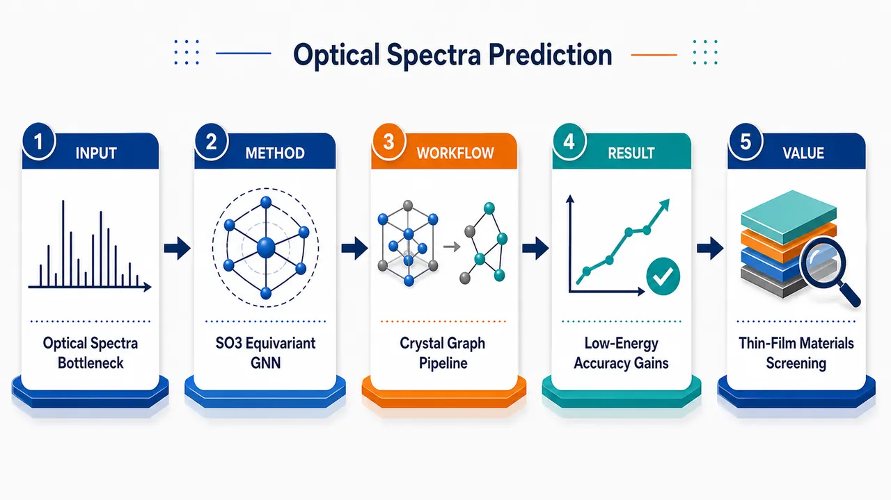
研究问题如何在高通量光电材料筛选中，快速且准确地预测材料的光学介电函数谱，尤其是昂贵的 RPA 级别 Re/Im 介电谱、0–8 eV 低能光学响应和静态实介电常数；核心瓶颈是传统模型只使用旋转不变标量几何特征，难以表达晶体中的方向、键角、局部配位和各向异性结构信息。创新方法提出 GotenNet_Opt：把 SO(3) 等变图神经网络引入光学谱预测，让原子图中的边方向、球谐张量和可转向节点特征在消息传递中随旋转一致变换；Aha 点是即使最终输出是各向同性标量谱，模型内部仍保留三维方向和角相关性，再汇聚成光谱。方法还加入共价半径门控，让原子尺寸调制元素嵌入，并采用 OptiMate3B 的注意力池化读出生成完整介电谱。工作流程输入周期晶体结构：晶格、原子种类、三维坐标与周期边界；构建 6 Å 距离截断原子图，节点编码周期表 group/period，边编码距离、方向向量和高阶球谐函数；通过共价半径门控初始化节点与边特征；多轮等变消息传递同时更新标量特征和 SO(3) 可转向张量特征，隐式捕捉方向、角度和局部几何；注意力全局池化得到晶体级表示；输出 0–20 eV 上 Re[Tr(ε)/3] 与 Im[Tr(ε)/3] 拼接光谱，或在小数据集上输出 251 点实部/虚部光谱。关键结果在 10,533 个 RPA 光谱结构数据集上全面优于 OptiMate3B：RPA 虚部 median MAE 从 0.115 降至 0.093，实部从 0.120 降至 0.099；RPA 静态实介电常数 Re(ε̄(0)) 的 MAE 从 0.121 降至 0.074，提升 38.5%，MSE 提升 62.1%；0–8 eV 低能区提升最明显，RPA MSE median 降幅约 31%–33%。在 944 个 IPA 光谱低数据集上也优于 GNNOpt，虚部 MSE 降低 22.3%，实部 MSE 降低 19.3%。应用价值为太阳能电池、透明导电材料、薄膜光学涂层等光电材料筛选提供更精确、更可扩展的光学谱代理模型，可在大规模候选材料中快速预测吸收、折射和静态介电响应，减少昂贵 DFT/MBPT/RPA 计算量；特别适合训练集中化学空间覆盖充分的材料筛选，但对 Kr 等低频元素或分布外化学空间需补充数据后谨慎使用。第一部分：核心概览 (Overview)
GotenNet_Opt 将 SO(3) 等变图神经网络 引入材料光学谱预测，针对 IPA/RPA 介电函数谱 建模，突破既有模型依赖旋转不变标量特征与线图角度构造的限制。在 10,533 个 RPA 光谱结构数据集与 944 个 IPA 光谱低数据集上，相比 OptiMate3B 与 GNNOpt 均取得稳定提升，尤其在 0–8 eV 低能区、静态实介电常数 Re(ε̄(0)) 上提升显著。该工作表明几何等变性是光学谱代理模型的有效归纳偏置，为高通量薄膜光学材料筛选提供更精确、可扩展的机器学习方案。
---
第二部分：结构化快速回顾
《Equivariant Graph Neural Networks Improve Optical Spectra Prediction for Materials Screening》（None，）
背景
高通量光电材料筛选需要快速预测 光学介电谱，但实验测量、DFT 与 MBPT/RPA 计算成本高。既有代理模型多基于低层级理论数据或旋转不变标量特征，几何表达能力受限。
方法
提出 GotenNet_Opt，基于 GotenNet 等变 GNN，引入 球谐张量边特征、可转向节点特征、covalent radius gating，并采用 OptiMate3B attention pooling readout。模型预测各向同性介电函数 Re[Tr(ε)/3] 与 Im[Tr(ε)/3]。
结果
在 OptiMate3B IPA/RPA 数据集上，GotenNet_Opt 全面优于 OptiMate3B。RPA 全谱中，Im 部分 median MAE 从 0.115 降至 0.093，Re 部分从 0.120 降至 0.099。静态实介电常数 RPA MAE 从 0.121 降至 0.074，提升 38.5%。
讨论
等变 GNN 对 0–8 eV 区间和 静态介电常数预测收益最大，说明方向信息与角相关性对薄膜光学材料筛选尤其关键。RPA 上提升大于 IPA，暗示更物理精确的光谱更依赖丰富几何表达。
局限
主要失败模式来自 训练分布覆盖不足。例如 Kr 只在训练集中出现 2 个样本，且无其他 18 族元素，导致 Kr 晶体成为显著异常点。预测准确率与元素训练频次呈对数相关。
结论
几何等变性显著提升材料光学谱预测，GotenNet_Opt 可作为已覆盖化学空间内的大规模筛选工具；对训练集中稀有元素或未覆盖化学空间，仍需扩充数据后谨慎使用。
---
第三部分：逐章节冷凝解析 (Section-by-Section Condensing)
Abstract
Scalable optical spectra prediction is positioned as a bottleneck for optoelectronic screening
高通量筛选太阳能电池等光电应用材料时，核心瓶颈是大规模预测 optical spectra。摘要明确将问题定位为材料筛选基础设施中的关键环节：*"Scalable prediction of optical spectra is a critical component of high-throughput materials screening for optoelectronic applications such as solar cells."* 这意味着模型目标不是单点性质预测，而是高维连续谱预测，用于快速区分候选材料优劣。
Existing surrogate models are limited by low-level theory data or invariant scalar geometry
已有代理模型存在两类限制：一是训练光谱来自 lower levels of theory，如 IPA 或 tight-binding；二是几何表示依赖 rotation-invariant scalar features，无法直接表达方向与角度相关信息。摘要概括为：*"Existing surrogate models are trained on spectra computed from lower levels of theory or rely on rotation-invariant scalar features, limiting their geometric expressiveness."*
GotenNet is adapted to optical spectra prediction and evaluated on RPA-scale data
核心方法是将 GotenNet 适配到光学谱预测任务，并在多个数据集上验证，尤其包括 10,533 structures 的 RPA 光谱数据集：*"We explore the use of equivariant graph neural networks for optical spectra prediction, adapting GotenNet to this task and evaluating it on multiple datasets including a recently published collection of 10,533 structures with spectra computed at the level of the random phase approximation (RPA)."*
Largest gains occur in low-energy optics and static real permittivity
最突出的性能收益集中在 0–8 eV 区间和 static real permittivity，二者均与薄膜光学筛选直接相关：*"The proposed model outperforms the current state of the art, with the largest gains in the 0–8 eV range and on predicting the static real permittivity, both of particular relevance for thin-film optics."*
---
1 Introduction
AI-driven materials discovery is framed as a multi-stage pipeline
材料发现被描述为贯穿 generative models → surrogate models → first-principles calculations → experimental characterization 的流程。候选材料由生成模型提出，代理模型筛选，第一性原理计算和实验表征验证高潜力对象。引言中明确指出：*"generative models propose candidate materials; surrogate models screen them for target properties; and first-principles calculations and experimental characterization evaluate the most promising candidates."*
Chemical and structural search spaces are combinatorially vast
光电材料空间具有组合爆炸特征，因此 AI 探索尤其有吸引力：*"The combinatorial vastness of chemical and structural space makes AI-driven exploration particularly compelling."* 该背景强调机器学习代理模型的价值来自筛选规模，而不是替代高精度物理本身。
DFT and MBPT are too expensive for large-scale optical screening
太阳能电池材料发现需要可扩展光学谱预测，但 DFT 与 MBPT 等从头算方法成本过高：*"Experimental measurement and ab initio methods such as density functional theory (DFT) ... and many-body perturbation theory (MBPT) ... are resource-intensive and computationally prohibitive for large-scale screening."*
Existing optical spectra models rely on lower theory levels
已有模型多训练于 IPA 或 TB 光谱，理论层级低于 RPA：*"Existing approaches ... are trained on limited data at lower levels of theory, such as the independent-particle approximation (IPA) or tight-binding (TB)."* 这构成了高物理精度光谱代理建模的动机。
OptiMate3B is state of the art but geometrically scalar and line-graph dependent
OptiMate3B 使用 IPA-pretrained model 并在 RPA 数据集上达到先前最优，但几何编码只通过旋转不变标量特征实现：*"Their architecture, OptiMate3B, encodes geometry only through rotation-invariant scalar features."* 同时，其角度信息通过边上的线图显式构造：*"it explicitly constructs a line-graph over edges to capture angular features, which necessitates a Voronoi graph construction to limit connectivity."*
Equivariant architectures address both geometric limitations
等变模型天然编码方向信息，不必显式手工构造角度线图，也允许更自然的距离截断图：*"Equivariant architectures avoid both limitations: they encode directional information by construction ... and capture angular correlations implicitly, allowing distance-based graph construction that more naturally reflects the physical interaction ranges of atoms."* 这里的创新逻辑是：方向信息与角相关性应作为结构归纳偏置，而不是由数据从零学习。
GotenNet_Opt is benchmarked on IPA, RPA, and low-data GNNOpt settings
模型被命名为 GotenNet_Opt，在 OptiMate3B IPA/RPA datasets 与 GNNOpt 944 IPA spectra dataset 上测试：*"we adapt GotenNet ... to optical spectra prediction, and evaluate it on both the IPA and RPA OptiMate3B datasets."* 低数据场景也被覆盖：*"We further benchmark against GNNOpt ... on their smaller dataset of 944 IPA-computed spectra, demonstrating improvements in a low-data setting."*
---
2 Background
2.1 The dielectric function
The target optical spectrum is a complex dielectric tensor
预测对象是固体对频率为 ω 的外加电场响应，即复介电函数。该函数本质是 second-rank tensor εij(ω)，描述不同笛卡尔方向间的线性极化响应：*"The dielectric function is actually a second-rank tensor, εij(ω), relating the electric polarization density along the Cartesian direction i induced by an electric field polarized along the direction j."*
Tensorial dielectric response captures crystallographic anisotropy
介电响应张量性来自晶体方向依赖，即不同晶向响应可不同：*"The tensorial nature reflects that the polarization response can differ along different crystallographic directions."* 对材料筛选而言，这解释了为什么几何方向信息可能影响光谱预测。
Electric displacement and electric field are linked by εij
介电张量通过公式
Di(ω)=ε0∑j εij(ω)Ej(ω)
连接电位移场与外电场，其中 ε0 是真空介电常数，张量无量纲。原文定义为：*"where ε0 is the permittivity of free space and the second-rank tensor is unitless."*
Susceptibility χij provides an equivalent formulation
电极化密度 P 与电场 E 的线性关系由 electric susceptibility χij 描述：*"the second-rank tensor can be formulated as the electric susceptibility, χij, describing the linear relationship between the polarization density P and the applied electric field."* 介电函数与极化率满足 εij(ω)=δij+χij(ω)。
Symmetry reduces the number of independent tensor elements
尽管理论上 εij 有 9 个 tensor elements，晶体对称性通常减少所需预测量。对于立方或各向同性结构，非对角元为零，三个对角元退化为标量：*"for materials with cubic symmetry or isotropic structure, the off-diagonal elements of the tensor vanish while the diagonal elements reduce to a scalar."*
The isotropic dielectric function is the trace average
模型预测的是各向同性部分 ε̄(ω)=Tr(ε(ω))/3，代表所有晶向平均线性响应：*"the isotropic part of the dielectric function tensor can be defined as ε̄(ω)=Tr(ε(ω))/3, which captures the mean linear response across all crystallographic directions."*
Real and imaginary dielectric parts determine optical constants
Re(ε̄) 与 Im(ε̄) 可换算为折射率 n(ω) 和消光系数 κ(ω)：*"It consists of a real and imaginary part which are related to the refractive index n(ω) and the extinction coefficient κ(ω), describing the amount of light attenuation."* 这使介电谱直接服务薄膜光学设计。
Causality imposes Kramers-Kronig relations
尽管实部和虚部可分别计算，因果性要求二者满足 Hilbert transformations，即 Kramers-Kronig relations：*"a consequence of causality is that they must satisfy the criterion that they are related to each other by Hilbert transformations."* 公式中 𝒫 表示 Cauchy principal value：*"where 𝒫 denotes that the singularity at ω′=ω is resolved as the Cauchy principal value."*
OptiMate3B target is a 4002-dimensional concatenated spectrum
在 OptiMate3B 数据集上，预测目标是 0–20 eV、10 meV 步长采样的 Re 与 Im 拼接向量：*"sampled from 0 to 20 eV in 10 meV steps"*，输出为 4002-dimensional output vector：*"which is a 4002-dimensional output vector."*
GNNOpt target uses separate 251-dimensional real and imaginary models
在 GNNOpt 数据集上，实部和虚部分别训练模型，每个模型输出 251 points，能量范围 0 ≤ ℏω ≤ 50 eV：*"a separate model is trained and evaluated for the real and imaginary components, with each predicting a single component interpolated onto a uniform grid of 251 points over 0≤ℏω≤50 eV."*
---
2.2 3D graph representation of crystal structures
Crystals are represented as periodic unit-cell graphs
晶体被描述为由晶格向量 a1,a2,a3∈R3 张成的平行六面体单胞，含有限原子位置集合 xi。原文定义：*"A crystal is an infinite periodic solid described by a unit cell: a parallelepiped spanned by lattice vectors a1,a2,a3∈R3 and a finite set of atoms at positions xi."*
Periodic boundary conditions create atomic images
在 PBC 下，每个原子有无限周期映像 xi+∑k nkak，其中 nk∈Z：*"Under periodic boundary conditions (PBC), each atom at xi has images at xi+∑k nkak for all nk∈Z."* 因而邻域搜索必须跨越单胞边界。
Graph nodes are unit-cell atoms and edges encode atomic interactions
晶体图表示为 G=(V,E)，节点是单胞内原子，边表示原子相互作用：*"We represent crystals as a graph G=(V,E), where nodes V are the unit cell atoms and edges E encode atomic interactions."*
Multiple periodic edges may connect the same atom pair
由于周期映像存在，同一对单胞原子之间可出现多条边，每条边具有不同的 edge vector rij：*"multiple edges may exist between the same pair of atoms, each with a distinct edge vector rij."*
Distance cutoff graph uses rc=6.0 Å
主模型采用距离截断图，截断半径 rc=6.0 Å：*"We use a distance-based cutoff of rc=6.0 Å."* 同时比较 Voronoi-based construction，后者边更少，是 OptiMate3B 使用方式：*"which yields fewer edges and is the method used by OptiMate3B."*
Atomic features are 25-dimensional group-period one-hot encodings
每个原子的特征由周期表 group 18 classes 与 period 7 classes 的 one-hot 拼接而成，总维度 25：*"Each atom i is featurized by concatenating one-hot encodings of its periodic table group (18 classes) and period (7 classes), giving zi∈R25."*
Edge features contain direction and distance
每条边携带单位方向向量 r̂ij=rij/||rij|| 与原子间距离 ||rij||：*"Each edge carries the unit vector r̂ij=rij/||rij|| and the interatomic distance ||rij||."*
---
2.3 Equivariant graph neural networks
Atomic GNNs are formulated as message passing neural networks
原子系统 GNN 通常属于 MPNN 框架，节点嵌入通过邻居消息聚合迭代更新：*"GNN architectures for atomic systems are commonly formalized within the message passing neural network (MPNN) framework ... where atom embeddings are iteratively updated by aggregating information from neighbors."*
Message passing contains message, update, and readout functions
每轮 t∈1,…,T 中，模型计算消息 Mt、更新节点嵌入 Ut，最终由 readout R 输出预测。原文定义：*"where Mt, Ut, and R are the message, update, and readout functions, and ⨁ is a permutation-invariant aggregation."*
Early architectures rely on invariant scalar geometric features
早期模型使用基于距离、角度、扭转角的旋转不变标量特征：*"Early architectures relied on invariant scalar features derived from pairwise distances, angles, and torsions."* 这种设计保证旋转不变，但损失方向协变信息。
Equivariant architectures propagate vector or higher-order tensor features
等变模型传播随对称操作一致变换的向量或高阶张量特征：*"Equivariant architectures instead propagate vector or higher-order tensor features that transform consistently under symmetry operations."* 这是 GotenNet_Opt 的几何表达基础。
Equivariance is defined by f(g·x)=g·f(x)
等变函数满足群作用下输入变换与输出变换一致：*"a function f is equivariant to the action of a group G if f(g·x)=g·f(x) ∀g∈G."* 对三维晶体，关键群为 SO(3) 旋转。
Equivariance removes the need to learn geometric symmetries from data
等变性保证方向一致预测，减少数据需求：*"By design, this property guarantees orientation-consistent predictions, eliminating the need for the model to learn these geometric symmetries directly from the training data."* 对仅 10,533 RPA 结构的相对小型高精度数据集尤其重要。
---
3 Method
3.1 GotenNet_Opt Architecture
The architecture follows embedding, message passing, and readout stages
GotenNet_Opt 基于 GotenNet，整体遵循 MPNN：嵌入层从元素与三维坐标初始化原子和键特征，T 轮消息传递更新表示，readout 预测光谱。图注概括：*"an embedding layer initializes atomic and bond features from elemental information and 3D coordinates, T message-passing rounds update the representations, and a readout layer predicts the optical spectra."*
Specific modifications are explicitly separated from original GotenNet
方法部分强调在重述 GotenNet 的同时突出任务适配修改：*"we reformulate the model below and highlight our specific modifications."* 主要改动后文包括 covalent radius gating、去除 scalar node feature layer normalization、替换 readout。
---
3.1.1 Tensor Features
Edges are encoded by scalar distance, direction vector, and spherical harmonics
每条边具有多阶张量边特征 r̃ij(l)l=0^Lmax。其中 l=0 为距离，l=1 为单位方向，l>1 为实球谐函数：*"where r̃ij(0)=||rij|| is the scalar distance, r̃ij(1)=r̂ij is the normalized direction vector, and r̃ij(l)=Y(l)(r̂ij)∈R2l+1 for l>1 are degree-l real spherical harmonics."*
Spherical harmonics are normalized and expressed in Cartesian coordinates
高阶边几何使用 real spherical harmonics in Cartesian coordinates，并归一化为单位范数：*"real spherical harmonics in Cartesian coordinates, normalized to unit norm."* 这使边特征具备旋转群不可约表示结构。
Nodes carry steerable SO(3) tensor features
节点携带 steerable features X̃i(l)l=1^Lmax，每个 X̃i(l)∈R(2l+1)×F 作为 rank-l irreducible representation of SO(3) 变换：*"transforming as a rank-l irreducible representation of SO(3)."*
Higher degrees encode increasingly complex angular geometry
l=1 编码方向，l=2 可编码平面取向等复杂角模式：*"degree l=1 encodes directional information, while higher degrees encode more complex angular patterns such as planar orientations (l=2)."*
Edge tensor features are fixed; node tensor features are learned through message passing
边张量是固定几何输入，节点可转向特征初始化为零并迭代更新：*"The edge tensor features are fixed geometric inputs, while the steerable node features are initialized to zero and iteratively updated across message passing layers."*
---
3.1.2 Embedding Layer
Scalar node features aggregate neighbor species, radius, and distance embeddings
初始标量节点特征 hi∈RF 由邻居聚合得到，使用原子、共价半径和距离嵌入的逐元素乘积：*"Scalar node features hi∈RF are initialized by aggregating over neighbors j∈N(i) using element-wise products of atom, covalent radius, and distance embeddings."*
Covalent radius gating is introduced from GNNOpt motivation
GNNOpt 曾显示显式加入 covalent radius 有助于光学谱预测，因此 GotenNet_Opt 在原 GotenNet embedding 中加入半径门控：*"Inspired by GNNOpt ... which demonstrated that incorporating covalent radius as an explicit physical descriptor improves prediction of optical spectra, we augment the original GotenNet embedding with covalent radius gating."*
Covalent radius is encoded by Gaussian RBF
每个原子的共价半径 ci∈R 展开为固定宽度 Gaussian RBF basis ψ(ci)：*"Each atom’s covalent radius ci∈R is expanded into a fixed-width representation via a Gaussian RBF basis ψ(ci), providing a continuous encoding of atomic size."*
Neighbor messages gate species embeddings with neighbor covalent radius embeddings
邻居消息公式为
mi=∑j∈N(i)(σ(Wnbr zj)∘Wcbr ψ(cj))∘dij。该设计让元素身份受原子尺寸调制：*"Neighbor messages are then formed by gating the projected species embedding with the neighbor’s covalent radius embedding."*
Distance embedding uses exponential RBF and cosine cutoff
距离项
dij=fcut(||rij||)·Wndp φ(||rij||)
投影 exponential RBF expansion，并由 cosine-cutoff 衰减远邻：*"projects a exponential RBF expansion φ(||rij||), cosine-cutoff weighted to suppress distant neighbors."*
Source atom embedding is also radius-gated
源原子嵌入为
ai=σ(Wna zi)∘Wcna ψ(ci)，即自身元素身份也受自身共价半径门控：*"The source atom embedding is similarly gated by its own covalent radius."*
Multiplicative gating distinguishes atoms with same group or period but different radius
半径门控的物理意义是区分周期表编码相似但有效尺寸不同的元素：*"This multiplicative gating allows atomic size to modulate the contribution of species identity, encouraging the model to distinguish atoms that share a period or group but differ in effective radius."*
Node initialization uses a two-layer MLP with layer normalization and SiLU
初始节点特征通过拼接 [ai,mi] 后进入两层 MLP：
hi,init = Wnru σ(LN(Wnrd[ai,mi])) + bnru，其中 σ=SiLU，LN=layer normalization。原文说明：*"where σ denotes SiLU and LN denotes layer normalization."*
Scalar edge features combine endpoint node features and RBF edge distance
初始标量边特征为
tij,init=(hi,init+hj,init)∘(Werp φ(||rij||)+berp)，即端点节点信息与边距离嵌入逐元素相乘：*"The scalar edge features tij∈RF are initialized as the element-wise product of the summed initial node features and a linear projection of the RBF-expanded edge distances."*
---
3.1.3 Message Block
GATA is adopted with one modification
消息块使用 GotenNet 的 Geometry-Aware Tensor Attention (GATA)，唯一说明的改动是去除标量节点特征上的 layer normalization：*"adopted without modification except for removing the layer normalization on scalar node features."*
Queries, keys, and edge attention embeddings are computed from scalar features
模型先计算
qi=Wq hi+bq，kj=Wk hj+bk，tijᵃ=σ(Wre tij+bre)。原文写明：*"First, queries, keys, and a projected edge embedding are computed."*
Multi-head attention uses edge-gated key interaction
按 H heads 拆分，每头维度 Fhead=F/H。注意力分数
αij(h)=(qi(h))T(kj(h)∘tijᵃ,(h))，说明边特征直接调制 key：*"Splitting into H heads of dimension Fhead=F/H, the attention score for head h is computed and normalized."*
Attention normalization includes node degree and feature dimension scaling
归一化注意力含 softmax，并乘以 sqrt(|N(i)|)/sqrt(F)：*"where |N(i)| denotes the degree of node i."* 该缩放调节不同局部邻域大小下的消息幅度。
Value vector has S·F dimensions with S=2Lmax+1
邻居 value 由两层 MLP 得到：vj=γv(hj)∈RS·F，其中 S=2Lmax+1：*"with S=2Lmax+1."* 这对应一个标量通道、Lmax 个方向驱动通道、Lmax 个张量传递通道。
Scaled edge attention forms per-head value messages
每头 scaled edge attention 为
seaij(h)=αij(h)vj(h)∈RFch，其中 Fch=S·F/H：*"the scaled edge attention (SEA) for head h is..."*
Additional edge and node projections form coefficient vectors
为了得到系数向量，模型加入 tijc=Wrs tij+brs∈RS·F 与 hjc=γs(hj)∈RS·F，并形成
cij(h)=seaij(h)+fcut(||rij||)(tijc,(h)∘hjc,(h))。原文指出：*"To compute the per-head coefficient vectors, we additionally introduce a second edge projection..."*
Coefficients split into scalar, directional, and tensor-transfer components
拼接所有 heads 后，cij∈RS×F 被分解为
[cijˢ,cijᵈ,(l),cijᵗ,(l)]：*"which we decompose into S components of dimension F."*
Scalar node messages aggregate cˢ
标量节点更新量为
Δhi=⨁j∈N(i)cijˢ，即对邻居标量系数做 permutation-invariant aggregation。原文定义：*"These coefficients define the messages to the scalar and steerable node features."*
Steerable messages combine edge spherical harmonics and neighbor steerable features
高阶节点特征更新量为
ΔX̃i(l)=⨁j∈N(i)(cijᵈ,(l)∘r̃ij(l)+cijᵗ,(l)∘X̃j(l))。第一项注入边几何，第二项传播邻居张量状态。
Residual updates preserve accumulated scalar and steerable representations
更新采用残差形式：hi←hi+Δhi，X̃i(l)←X̃i(l)+ΔX̃i(l)：*"which are added to the respective features."*
First message block initializes steerable features purely from edge geometry
由于高阶节点特征初始为零，第一层中 cijᵗ,(l)∘X̃j(l) 为零，初始张量节点特征只来自边球谐方向：*"the high-degree steerable features are initialized as X(l)≡0, which makes the cij t,(l)∘X̃j(l) term equal zero in the first message block."*
---
3.1.4 Update Block
Update block combines HTR and EQFF modules
更新块用 Hierarchical Tensor Refinement (HTR) 更新标量边特征，并用 Equivariant Feed-Forward (EQFF) 更新节点标量与可转向特征：*"The update block updates the scalar edge features through the Hierarchical Tensor Refinement (HTR) module and the scalar and steerable node features through the Equivariant Feed-Forward (EQFF) network proposed in GotenNet."*
Steerable node features are projected into query and key tensors
对每个阶数 l=1,…,Lmax，计算
Qi(l)=X̃i(l)Wvq，Kj(l)=X̃j(l)Wvk(l)。其中 Wvq 跨阶共享，Wvk(l) 按阶特异：*"where Wvq is shared across degrees and Wvk(l) is degree-specific."*
Vector rejection removes information aligned with raw edge geometry
对 Qi(l) 关于 r̃ij(l) 做 vector rejection，对 Kj(l) 关于 −r̃ij(l) 做 rejection，从而保留模型学习到的超越边几何本身的信息：*"This ensures the outputs retain only what the network has learned beyond the edge geometry."*
Interaction vector sums element-wise products over all degrees and components
交互向量
wij=∑l=1^Lmax∑m=1⁽²l+1) Q̂i,m(l)∘K̂j,m(l)，用于捕获未由边几何解释的原子相互作用：*"capturing learned atomic interactions not explained by edge geometry alone."*
Scalar edge features receive an MLP-gated residual update
边更新为
Δtij=γw(wij)∘γt(tij)，然后 tij←tij+Δtij。其中 γw 与 γt 均为两层 MLP：*"where γw and γt are two-layer MLPs."*
Projected steerable features contribute an invariant channel-wise norm
节点更新先计算投影 X̂i(l)=X̃i(l)Wvu，再按通道计算范数：
ni=sqrt(∑l∑m (X̂i,m(l))²+ε)。该范数是旋转不变标量，可与 scalar node features 拼接。
Scalar and tensor updates are controlled by an MLP over norms and scalar states
将 (ni,hi) 输入两层 MLP γm，输出 [mi,1,mi,2]：*"the scalar node features and this norm are concatenated and passed through a two-layer MLP, which is split into two parts."*
Scalar features and steerable features are updated equivariantly
节点标量更新为 hi←m1,i+hi；高阶特征更新为 X̃i(l)←(mi,2∘X̂i(l))+X̃i(l)。由于 mi,2 是标量门控，乘以可转向张量仍保持等变结构。
---
3.1.5 Readout Layer
Readout uses the OptiMate3B design
GotenNet_Opt 的 readout 与 OptiMate3B 相同：*"For the readout layer, we use the same design as OptiMate3B."* 该选择减少 readout 差异对架构比较的干扰。
Graph-level embedding is produced by attention-weighted global pooling
readout 先计算每个节点的注意力向量 ai=σ(Wpool hi+bpool)∈RF，并在图内所有节点归一化：*"It consists of an attention-weighted global pooling to produce a graph-level embedding."*
Attention normalization is feature-wise across nodes
节点注意力
αi=exp(ai)/∑j∈V exp(aj)∈RF，指数和除法逐元素进行，归一化在同一图所有节点上：*"where exp and division are applied elementwise, and the normalisation is taken over all nodes j belonging to the same graph."*
Graph embedding is a feature-wise weighted node sum
图表示为
hG=∑i∈V αi∘hi∈RF，即不同特征通道可关注不同原子：*"The graph-level embedding is then the weighted sum."*
Output MLP replaces ReLU with SiLU
最终 MLP 有 D hidden layers、隐藏维度 Fs，每层后接 SiLU，替代 OptiMate3B 的 ReLU：*"each followed by a SiLU activation (replacing the ReLU used in OptiMate3B), and a plain linear output layer."*
OptiMate3B dataset output is 4002-dimensional
对 OptiMate3B 数据集，输出 ŷ=γout(hG)∈R4002，前 2001 个元素为虚部，其余为实部：*"the first 2001 elements correspond to the imaginary part and the remaining elements to the real part."*
GNNOpt dataset output is 251-dimensional for either real or imaginary part
对 GNNOpt 数据集，输出 ŷ∈R251，单独预测实部或虚部：*"For the GNNOpt dataset, the output is instead ŷ=γout(hG)∈R251, predicting either the real or imaginary part."*
---
4 Results
4.1 OptiMate3B Dataset
Training follows IPA pretraining followed by RPA finetuning
评估流程与 OptiMate3B 一致：先训练 IPA spectra，再微调 RPA dataset。原文说明：*"We follow the same procedure as OptiMate3B, training first on IPA spectra and finetuning on the RPA dataset."*
Reproducibility code is public
代码地址为 GitHub：*"Code to reproduce results is available at https://github.com/khelverskovp/GotenNetOpt."*
Evaluation uses SC, MSE, and MAE over [0,ωmax]
三项指标为 similarity coefficient (SC)、mean squared error (MSE)、mean absolute error (MAE)：*"We evaluate using three metrics over the frequency range [0,ωmax]: the similarity coefficient (SC), mean squared error (MSE), and mean absolute error (MAE)."*
SC measures normalized spectral similarity relative to target magnitude
SC 定义为
1−∫|X(ω)−Y(ω)|dω / ∫|Y(ω)|dω。其中 X(ω) 为目标光谱，Y(ω) 为预测光谱：*"where X(ω) is the target spectra and Y(ω) is the predicted spectra."*
GotenNet_Opt improves all IPA and RPA metrics over OptiMate3B
Table 1 中，GotenNet_Opt 在 IPA/RPA、Im/Re、MAE/MSE/SC 上均优于 OptiMate3B。表注指出：*"Best results are shown in bold."*
关键数值如下：
- IPA Im MAE：OptiMate3B 0.265，GotenNet_Opt 0.238；median 0.193 → 0.173。
- IPA Im MSE：0.744 → 0.643；median 0.108 → 0.089。
- IPA Im SC：0.883 → 0.894；median 0.903 → 0.913。
- IPA Re MAE：0.276 → 0.247；median 0.201 → 0.178。
- IPA Re MSE：0.677 → 0.601；median 0.108 → 0.089。
- IPA Re SC：0.882 → 0.894；median 0.904 → 0.914。
- RPA Im MAE：0.195 → 0.164；median 0.115 → 0.093。
- RPA Im MSE：0.539 → 0.453；median 0.035 → 0.024。
- RPA Im SC：0.906 → 0.919；median 0.930 → 0.942。
- RPA Re MAE：0.199 → 0.168；median 0.120 → 0.099。
- RPA Re MSE：0.393 → 0.318；median 0.035 → 0.024。
- RPA Re SC：0.910 → 0.923；median 0.933 → 0.946。
Means exceed medians because of outlier-heavy tails
各指标的 median 明显低于 mean，说明测试集中存在异常样本尾部：*"Median values are considerably lower than means reflecting a tail of outlier samples."*
RPA predictions are better than IPA predictions
两个模型在 RPA 上均明显优于 IPA，原因包括微调流程与 RPA 光谱更高物理准确性：*"RPA predictions are substantially better than IPA for both models due to the fine-tuning procedure and the greater physical accuracy of RPA spectra."*
Metric distributions show most pronounced gains in MAE and MSE
RPA 测试样本上，MSE 与 MAE 使用对数横轴以容纳重尾分布：*"MSE and MAE are shown on logarithmic x-axes to accommodate their heavy-tailed distributions."* 两模型分布差异在 MAE/MSE 尤其明显：*"The difference in distributions is most pronounced for MAE and MSE, particularly the latter."*
Relative gains are largest on RPA and 0–8 eV low-energy spectra
Table 2 显示，全谱 0–20 eV 与低能 0–8 eV 均有提升，低能区与 RPA 最突出：*"The relative performance improvements are largest on the RPA dataset and in the 0–8 eV sub-spectrum."*
Median error reductions reach above 30% for RPA MSE
Table 2 中 RPA Im MSE 降低 31.2%（0–20 eV）和 31.3%（0–8 eV）；RPA Re MSE 降低 31.6%（0–20 eV）和 33.2%（0–8 eV）。原表说明是：*"Percentage improvement of GotenNet_Opt over OptiMate3B in median MAE, MSE, and SC across the test set."*
Average MAE/MSE improvement is about 20%
Table 2 汇总平均显示，MAE/MSE 平均降低 19.6%（0–20 eV）与 20.0%（0–8 eV）；SC 提升 1.2% 与 1.4%。表中给出：*"Average MAE/MSE ↓ 19.6% ... 20.0%; SC ↑ 1.2% ... 1.4%."*
Static real permittivity prediction improves dramatically
Table 3 对 Re(ε̄(0)) 的 median MAE/MSE 评估显示：
- IPA MAE：OptiMate3B 0.131，GotenNet_Opt 0.080，提升 39.0%。
- IPA MSE：0.017 → 0.006，提升 62.8%。
- RPA MAE：0.121 → 0.074，提升 38.5%。
- RPA MSE：0.015 → 0.006，提升 62.1%。
表注为：*"Test set MAE and MSE (median) on the static real permittivity, and the percentage improvement of GotenNet_Opt."*
Representative spectra are shown at SC percentiles
Figure 3 展示 RPA 测试集中按 SC 排序的 10th, 40th, 60th, 90th percentiles 样本预测与目标光谱：*"Predicted (dashed, red) vs. target (solid, blue) dielectric spectra at the 10th, 40th, 60th, and 90th percentiles of the RPA test set ranked by SC."*
Real and imaginary parts have comparable accuracy
不同分位数中实部和虚部预测精度相近，与 Kramers-Kronig 关系一致：*"The imaginary and real parts are predicted with comparable accuracy across percentiles, consistent with the Kramers-Kronig relations."*
Kramers-Kronig consistency is empirically supported by SC correlation
Figure 4 检查每个样本的 Re 与 Im SC 相关性，显示强 per-sample correlation：*"Figure 4 confirms this explicitly, having a strong-per sample correlation between SC on Re(ε̄) and Im(ε̄)."*
Kr-only crystals dominate extreme outliers
五个异常点为仅含 Kr 的晶体：*"Five outliers are Kr-only crystals."* Kr 在训练集中只出现 2 个样本，且没有其他 18 族元素：*"Kr appears in only 2 training samples with no other group-18 elements."*
Covalent radius is physically meaningless for Kr under ordinary conditions
Kr 通常不形成共价键，因此 covalent radius feature 对 Kr 不具物理意义：*"Kr also forms no covalent bonds under ordinary conditions, meaning the covalent radius feature is physically meaningless."*
Accuracy correlates with per-element training count
Kr 异常是更一般分布问题的极端例子：预测准确度与元素训练出现频次呈对数线性关系：*"These outliers are an extreme case of a broader log-linear relationship between prediction accuracy and per-element training count."* 这与 OptiMate3B 报告一致：*"consistent with findings reported for OptiMate3B."*
---
4.2 GNNOpt Dataset
GotenNet_Opt is evaluated in a 944-spectrum low-data setting
GNNOpt 数据集较小，含 944 IPA-computed spectra，用于低数据验证。引言已说明：*"their smaller dataset of 944 IPA-computed spectra."*
Metrics follow GNNOpt: MSE and R²
按 Hung et al. 的设置报告 MSE 与 R²：*"Following Hung et al. (2024), we report MSE and R² on the test set."*
R² is computed on energy-weighted spectral means
R² 不是逐点光谱 R²，而是基于每个谱的能量加权平均
X̄i=∑kωkXi(ωk)/∑kωk：*"R² is evaluated on the energy-weighted mean X̄i=∑kωk Xi(ωk)/∑kωk of each predicted and target spectrum."*
MSE is computed over K=251 frequency points
MSE 覆盖所有 K=251 频率点，与 Equation 43 一致：*"MSE is computed over all K=251 frequency points, consistent with the definition in Equation 43."*
GotenNet_Opt substantially outperforms GNNOpt on imaginary spectra
Im(ε̄) 上，MSE 从 1.765 降至 1.371，改善 22.3%；R² 从 0.737 升至 0.864，改善 17.2%。Table 4 标注为：*"Test set results on the GNNOpt dataset measured by MSE and coefficient of determination (R²) along with percentage improvement compared to GNNOpt."*
GotenNet_Opt also improves real spectra prediction
Re(ε̄) 上，MSE 从 2.363 降至 1.907，改善 19.3%；R² 从 0.715 升至 0.806，改善 12.7%。
---
5 Discussion
Equivariant GNNs meaningfully improve optical spectra prediction
讨论的核心判断是 equivariant GNNs 对光学谱预测具有实质提升：*"This work suggests that equivariant GNNs can meaningfully improve optical spectra prediction."*
Largest gains appear in 0–8 eV and static real permittivity
收益最大处仍是 0–8 eV 与 static real permittivity：*"with the most pronounced gains in the 0–8 eV range and for prediction of the static real permittivity."* 这两个量对薄膜光学材料筛选具有直接实用意义。
RPA gains exceeding IPA gains suggest richer physics benefits from geometry
RPA 上比例提升更大，可能因为更物理准确的 RPA 谱含有更丰富 many-body interactions，更需要表达力强的几何表示：*"Gains are also proportionally larger on the RPA dataset than on the IPA dataset, which may reflect that physically accurate spectra encoding richer many-body interactions benefit more from expressive geometric representations."*
GotenNet adaptation has two main changes
GotenNet_Opt 的适配主要有两点：加入 covalent radius embeddings 到标量节点初始化；使用 OptiMate3B readout design：*"The adaptation of GotenNet involved two main changes: incorporating covalent radius embeddings into the scalar node feature initialization, and replacing the readout layer with the OptiMate3B readout design."*
Covalent radius is useful but not universally informative
共价半径有物理动机，但并不对所有元素或化学空间有效：*"Covalent radius is a physically motivated feature, though it is not universally informative."* Kr 异常即说明该特征在惰性气体场景可能失效。
Optimal atomic features may depend on screened chemical subspace
最有用的节点物理特征可能取决于目标筛选空间：*"the most useful atomic features may depend on the chemical subspace being screened."* 后续可探索针对应用选择其他物理属性：*"Future work could explore other physical properties as node features, tailored to the target application."*
Readout may not be optimal
采用 OptiMate3B readout 并不意味着最优：*"The readout architecture is similarly not necessarily optimal, and other designs remain to be explored."*
Other equivariant GNN architectures remain untested
该任务尚未系统比较其他等变 GNN：*"More broadly, other equivariant GNN architectures have not yet been tested on this task."* 因此性能提升不能等同于 GotenNet 系列的最终上限。
Dominant failure mode is distributional coverage
尽管性能提升明显，主要失败模式仍是分布外或低覆盖元素：*"Despite performance improvements, the dominant failure mode is still distributional: prediction accuracy correlates with per-element training frequency."*
Model is viable for well-represented elements but risky for underrepresented elements
对于训练集中覆盖良好的元素，SC 指标显示模型已接近高精度预测：*"Discarding these outliers, the similarity coefficient metric suggests the model is approaching highly accurate predictions on the current data."* 对低覆盖元素结构，预测需谨慎：*"for structures containing underrepresented elements, predictions should be treated with caution."*
Expanding training data is necessary for poorly covered chemical spaces
低覆盖化学空间需要扩充训练集后才能可靠使用：*"expanding the training set would be necessary before using the model on poorly covered chemical spaces."*
---
6 Conclusion
GotenNet_Opt adapts equivariant GotenNet to optical spectra prediction
结论明确给出模型贡献：*"We have presented GotenNet_Opt, an adaptation of the equivariant GNN GotenNet for optical spectra prediction."*
Geometric equivariance is validated as a beneficial inductive bias
结果表明等变架构带来稳定提升，说明 geometric equivariance 是该任务有效归纳偏置：*"using an equivariant architecture leads to consistent performance increases, indicating that geometric equivariance is a beneficial inductive bias for this task."*
Low-energy spectra and static permittivity gains matter for thin-film screening
低能区与静态实介电常数提升最明显，且直接服务薄膜光学材料高通量筛选：*"Gains are most pronounced in the low-energy range and in the static real permittivity, quantities of direct relevance for high-throughput screening of thin-film optical materials."*
Physical accuracy increases the value of geometric expressiveness
RPA 上提升比例更大，表明训练数据越物理准确，几何表达能力越重要：*"proportionally larger on the RPA dataset, suggesting that geometric expressiveness matters most when the training data is physically accurate."*
---
Impact Statement
The stated societal impact is generic rather than specifically highlighted
工作目标是推进机器学习领域，未突出特定社会后果：*"This paper presents work whose goal is to advance the field of Machine Learning."* 同时声明：*"There are many potential societal consequences of our work, none which we feel must be specifically highlighted here."*
---
第四部分：深度理解与语言支持 (Understanding & Nuance)
1. 术语解析
Equivariant / Invariant
Invariant 表示输入旋转后输出不变，适合预测标量性质；equivariant 表示输入旋转后中间特征或输出按同样规则旋转。文中等变性定义为 *"f(g·x)=g·f(x)"*。微妙差别在于：介电谱最终可预测各向同性标量谱，但中间结构表示若只保留 invariant scalar features，可能丢失方向与角相关信息；equivariant GNN 在内部保留方向结构，再通过 readout 汇总为标量谱。
Geometric inductive bias
归纳偏置指模型架构预先内置的假设。Geometric inductive bias 在这里指模型天然尊重三维旋转、方向、角度相关性，而不是依赖训练数据学习这些规律。原句 *"providing a geometric inductive bias that is especially valuable given limited training data"* 的含义是：当 RPA 高精度数据规模有限时，正确的几何先验能显著减少样本需求。
Static real permittivity
Static real permittivity 指 Re(ε̄(0))，即频率趋近零时的实部介电常数。它不是整个光谱的平均值，而是零频响应。对薄膜光学、电介质筛选、折射率估计非常关键。Table 3 专门评估该量，RPA MAE 从 0.121 降至 0.074。
Kramers-Kronig relations
Kramers-Kronig relations 是因果线性响应系统中实部与虚部之间的 Hilbert 变换约束。文中表述为 *"a consequence of causality"*。微妙点在于模型并未显式强制 Kramers-Kronig 关系，但 Re 与 Im 的 SC 强相关，说明数据学习中捕捉到一定物理一致性。
Distributional failure mode
Distributional failure mode 指错误主要来自训练分布覆盖不足，而非架构表达力不足。Kr 异常样本说明，如果某元素训练样本极少，元素 embedding 和半径特征都无法可靠学习。原句 *"the dominant failure mode is still distributional"* 强调继续提升需要数据覆盖，而不仅是换模型。
---
2. 疑难查证
为什么最终预测各向同性 ε̄，却仍需要等变 GNN？
最终输出 ε̄(ω)=Tr(ε)/3 是旋转不变标量谱，看似不需要方向信息。但晶体结构中的键角、局部配位、层状方向、各向异性环境会影响电子跃迁与光学响应。若模型只看到距离或手工角度标量，表达这些几何关系依赖复杂特征工程。等变 GNN 在消息传递中保留向量/张量方向信息，最后再汇聚为标量输出，因此可以更自然地表示“方向如何共同决定标量性质”。
为什么 RPA 上提升比 IPA 更大？
IPA 忽略或简化了多体相互作用，光谱可能较粗糙；RPA 包含更准确的屏蔽与集体响应，光谱与局部几何、长程相互作用之间的关系更丰富。等变模型表达力更强，因此在 RPA 上收益更大。讨论中的关键表述是 *"physically accurate spectra encoding richer many-body interactions benefit more from expressive geometric representations."*
为什么 Kr-only crystals 会成为极端异常点？
Kr 在训练集中只出现 2 次，且没有其他 18 族元素共同帮助学习 group-18 embedding。更严重的是，Kr 普通条件下不形成共价键，因此 covalent radius 作为物理特征对 Kr 没有稳定意义。模型既缺少统计样本，又得到不适配的物理描述，因此预测失败。这不是单纯“Kr 难预测”，而是“训练分布覆盖 + 特征物理有效性”双重问题。
为什么 0–8 eV 特别重要？
薄膜光学、太阳能电池、可见光-近紫外响应主要关注低能光子范围。0–8 eV 覆盖许多实际光吸收、折射、透明性设计相关区间。高能区谱峰虽有物理意义，但对多数薄膜筛选目标的直接工程价值较低。因此 Table 2 单独报告 0–8 eV sub-spectrum，并发现该区间提升最大。
---
第五部分：创新评估与关联 (Synthesis & Novelty)
1. 创新性判断
从旋转不变光学谱代理模型推进到等变光学谱代理模型
过去相关工作如 GNNOpt、OptiMate3B 已能预测介电谱，但主要依赖标量几何特征或显式角度构造。该研究的新颖点在于将 SO(3) 等变消息传递用于高维光学谱预测，使方向、角度和高阶几何模式在模型内部自然传播，而不是通过 Voronoi 图和线图显式编码。
首次在 RPA 级别大规模光谱数据上验证等变几何表达优势
关键数据集包含 10,533 RPA spectra structures。RPA 数据比 IPA/TB 更昂贵、更接近物理真实，也更适合检验架构是否能捕捉复杂几何-光学关系。GotenNet_Opt 在 RPA 上提升更大，尤其 RPA Re MSE median 降低 31.6%、0–8 eV 降低 33.2%，说明等变几何表达在高物理精度标签下更有价值。
解决 OptiMate3B 的两个结构性限制
OptiMate3B 的限制包括：
- 几何只通过 rotation-invariant scalar features 编码；
- 角度信息需显式构造 line-graph over edges，并依赖 Voronoi graph construction 限制连通性。
GotenNet_Opt 通过等变张量特征隐式捕捉角相关性，可使用 distance-based cutoff rc=6.0 Å，更贴近原子相互作用物理范围。
将物理节点特征与等变架构结合
模型不只是直接套用 GotenNet，还引入 covalent radius gating，让原子尺寸调制元素身份嵌入。这一设计吸收 GNNOpt 的物理特征经验，并整合进等变消息传递框架。创新点不是“使用共价半径”本身，而是将其作为门控机制嵌入节点初始化。
对薄膜筛选最相关指标取得最大收益
相比单纯报告全谱误差，该研究强调 0–8 eV 和 Re(ε̄(0))。静态实介电常数 RPA MAE 提升 38.5%、MSE 提升 62.1%，使创新价值直接连接到薄膜光学材料筛选，而不仅是机器学习基准提升。
低数据设置下仍优于专用模型 GNNOpt
在 944 IPA spectra 的 GNNOpt 数据集上，GotenNet_Opt 仍将 Im MSE 从 1.765 降至 1.371，Re MSE 从 2.363 降至 1.907。这说明等变归纳偏置在小数据条件下也有效，回应了高精度光谱数据昂贵、样本有限的现实问题。
未完全解决的问题
- 元素覆盖不足仍是主导失败模式，Kr-only crystals 是极端例子。
- 共价半径特征并非普适，惰性气体或非共价体系可能失效。
- readout 架构未系统优化。
- 其他等变 GNN尚未比较，因此不能确定 GotenNet_Opt 是该任务最优等变架构。
- Kramers-Kronig 关系未被显式强制，物理一致性主要来自数据学习和相关性观察。
-
05
📊 含图深析
💡 亮点：湿敏复合体把学习功能写入材料本体。
📖 展开分析 + 配图
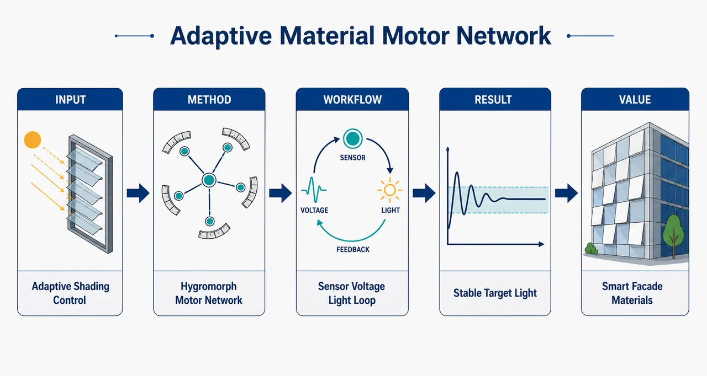
研究问题湿敏/热敏材料执行器能随环境弯曲，但在建筑遮阳等真实场景中面临尺度化困难、输出光照难精确控制、材料迟滞与不可逆、微气候组合过多等问题；核心问题是：如何把多个环境响应材料执行器组织成可学习的物理神经网络，使其在温度、湿度、入射光不断变化时，自动找到合适电压配置并稳定输出目标室内光照。创新方法提出 PAMMUNN：由四个木基/碳黑 PLA 湿敏复合材料执行器组成的“材料运动单元神经网络”。每个执行器像一个物理神经元，木纤维负责湿敏弯曲，碳黑 PLA 导电层通过电压加热干燥纤维来调节开合；Aha 点是用 Data-Aware Back-Propagation 直接从实验数据库学习“环境输入—电压组合—输出光照”的关系，不依赖显式物理模型，把难建模的材料迟滞和局部微气候差异转化为可优化的数据经验。工作流程输入为环境温度、相对湿度、入射光强和目标输出光照；四个垂直叠放的 QSDF 遮光孔径接收电压；碳黑 PLA 层发热，木纤维干燥收缩并带动执行器弯曲；四个孔径开合共同改变透光量；光传感器记录盒内输出光照；系统把新实验点加入数据库，神经网络用 Data-Aware Back-Propagation 预测并更新四个执行器电压，直到输出光照收敛到目标区间。关键结果系统能在目标光照改变时重新收敛：输出从 239.4 Lx 降至 88.8 Lx，150 分钟内关闭 150.6 Lx 差距并进入 80–100 Lx 目标区间；当入射光从 119.8 Lx 突增到 139.3 Lx 时，系统在 70 分钟内降低约 50 Lx 并恢复目标区间。增量学习中，数据库增至约 120 点后预测误差标准差稳定到约 10 Lx，相关系数接近 0.98，约 80% 预测落在 ±14.9 Lx 内。物理模式下，不同环境输入可通过不同电压组合实现相似遮光输出。应用价值为建筑自适应表皮和动态遮阳提供一种低硬件依赖、环境驱动的材料机器框架：遮阳构件不再只是被动叶片，而是由可感知、可致动、可通过数据积累改善控制的材料节点组成。该研究为未来无需复杂中央计算、依靠材料物理性质进行长期自适应和永久学习的物理神经网络奠定实验基础，也可扩展到智能通风、柔性机器人、环境响应外立面和低能耗室内光环境控制。第一部分：核心概览
该研究提出 PAMMUNN：由木基/碳黑 PLA 湿敏复合材料执行器组成的物理自适应“运动单元”神经网络，用于环境驱动遮光控制。核心贡献在于把 材料致动、建筑自遮阳、物理神经网络、数据感知反向传播结合起来，使四个湿热响应执行器在温度、湿度、入射光变化下学习并优化电压配置，实现目标透光输出。其地位在于推进物理神经网络从机械结构计算走向 材料级自适应机器，但学习仍主要依赖数字训练。
---
第二部分：结构化快速回顾
《A physical adaptive material motor unit neural network: a hygromorph composite material machine》（None，）
背景
湿敏、热敏、pH 响应材料可把环境刺激转化为机械运动，但存在 尺度化困难、输出控制不精确、部分不可逆 三大瓶颈。建筑遮阳等应用面临近乎无限的微气候组合，传统自上而下建模难以穷尽。
方法
构建四个相同的木基热塑性/碳黑 PLA 复合材料执行器，形成 QSDF aperture 遮光结构。输入包括温度、相对湿度、入射光，输出为盒内光照强度。通过超过 350 个实验数据点训练神经网络，并提出 Data-Aware Back-Propagation Training 优化四个执行器电压。
结果
系统能在目标光照区间变化时重新收敛；在输入光照突变时也能恢复到 80–100 Lx 目标区间。增量学习实验显示，数据库增至约 120 点后误差标准差稳定在约 10 Lx，相关系数趋近 0.98。物理模式下，两组不同输入可通过不同电压配置实现相似输出。
讨论
PAMMUNN 把每个材料执行器视为神经网络节点，电压类似控制神经元开合的权重/激励。系统展示了材料机器通过数据累积提升预测能力的路径，并为建筑自适应表皮提供低硬件依赖的控制框架。
局限
当前学习主要发生在数字神经网络和数据库层面，尚未完全实现 材料本体学习。湿度实验范围较窄，仅约 85%–95% RH，低于许多湿敏材料典型几十个百分点的致动范围。物理模式受可达设计空间、电压差约束、环境波动和执行器变异性限制。
结论
PAMMUNN 实现了由材料执行器组成的可训练遮光机器，可在目标变化、环境变化和数据库扩展中表现出自适应行为。该框架为未来无传统计算硬件、依赖材料物理性质进行永久学习的物理神经网络奠定实验基础。
---
第三部分：逐章节冷凝解析
Abstract
- Material intelligence is embedded into actuator structures
新型材料科学使结构不再只是被动承载体，而可通过内嵌 记忆与学习能力执行智能机器功能。摘要直接给出核心定位：*"Advances in novel materials science enable structures to function as intelligent machines by embedding memory and learning capabilities directly into materials."* 研究对象是一个 physical adaptive material motor unit neural network，依赖木基与碳黑基复合材料执行器，响应 temperature 与 relative humidity。
- Wood- and carbon black-based composites form controllable actuators
执行器由 wood-based composites 与 carbon black-based composites组成，兼具湿敏变形与电加热控制能力。摘要表述为：*"leveraging a new generation of controllable actuators composed of wood- and carbon black-based composites, sensitive to temperature and relative humidity."* 这意味着木纤维主导湿胀/干缩变形，碳黑 PLA 提供导电发热通道。
- Motor-unit inspiration links biological contraction and shading control
执行器组合成类似肌肉收缩触发机制的结构，用于动态遮阳。核心生物启发来自 motor unit：*"These material actuators are assembled into a motor unit-like structure inspired by muscle contraction trigger, forming an intelligent machine capable of dynamic shading control that can be used, for example, in buildings."*
- Training database contains over 350 experimental data points
控制模型由实验数据库驱动，覆盖不同环境条件，样本规模超过 350 experimental data points。摘要给出证据：*"The machine is governed by a neural network trained on over 350 experimental data points collected under diverse environmental conditions."*
- Data-aware backpropagation enables incremental prediction learning
研究提出 data-aware backpropagation training，用于预测遮光响应，并随数据库扩展实现增量学习：*"By establishing a new data-aware backpropagation training, we show that the machine predicts shading responses and learns to predict appropriate behaviour incrementally as the database expands."*
- Similar shading under distinct conditions is optimized
系统不只追踪单一目标，还能在两种不同条件下寻找不同配置以产生相似遮光输出：*"We also demonstrate the ability of the machine to optimise configurations to achieve similar shading outputs under two distinct conditions."*
---
Introduction
- Hygromorphs convert environmental humidity into mechanical energy
湿敏材料执行器利用环境能量产生运动；材料储能并把湿度变化转化为机械功。关键概念为 hygromorphs：*"The material within the actuator stores energy and turns environmental stimulus, such as humidity change, into mechanical energy."* 以及 *"Materials that are humidity-sensitive are called hygromorphs."*
- Stimulus-responsive actuators already support shading, clothing, implants, and sensors
环境响应材料已覆盖温度、湿度、pH 等触发机制，并进入多类应用场景。相关表述为：*"Other material actuators have been developed to achieve motion in response to environmental stimuli, such as change in temperature, humidity or pH."* 应用包括 *"shading structures that adapt to sun angles, smart clothes, smart biomedical implants or sensors that provide a kinetic response to environmental changes."*
- Three barriers limit practical adoption
温湿触发材料执行器面临三个关键障碍：输出幅值/承载能力难以尺度化、复杂环境下输出精确控制不足、部分不可逆导致控制困难。原文精确列出：*"The first challenge is the reduced scalability of the output of the actuation, such as amplitude and load carried."*；*"The second problem is the lack of precise control of the output"*；*"A third challenge is their partial irreversibility, which complicates precise actuation control."*
- Arrayed micro-actuators solve scale but introduce combinatorial environmental complexity
将小执行器组成阵列可提高整体输出，是自遮阳立面的基本策略，但真实建筑环境存在几乎无限的微气候组合。原文指出：*"One way of solving the limited size of actuators is to split them in small sub-units assembled in arrays, whose output is the cumulative effect of all individual actuators."* 复杂性来自 *"a virtually infinite number of micro-climatic environments"*，包括日照、高度湿度差、植被、建筑遮挡和执行器相互作用。
- Top-down programming is infeasible for adaptive facades
对所有局部条件组合进行预测的自上而下控制不可行，原因是计算成本过高。关键句为：*"A top-down approach to programming such system is practically not feasible, due to significant computational costs involved in predicting all possible combinations of conditions for each local situation."*
- Material actuators are proposed as neural-network-like nodes
解决复杂环境适应性的核心思路是让执行器自身存储和处理信息。原文给出神经网络类比：*"the material actuator itself should remember and process information to adapt to the local conditions and give the required output."* 因而 *"one layer of such actuators has the potential of behaving similar to a layer of a neural network, with each actuator being a node."*
- PAMMUNN combines material actuation, self-shading architecture, physical neural networks, and biological motor units
图 1 给出三大技术来源：材料致动、自遮阳建筑、物理神经网络；再引入运动单位神经肌肉启发。结构描述为：*"Three main types of technology are combined here to conceptualise PAMNN: A, Material Actuation... B, a self-shading Architectural Design... and C, a Physical Neural Network."* 生物来源为：*"the Central Nervous System (CNS) creates the inputs to control the force to generate movement."*
- PAMMUNN maps temperature, humidity, and input light to output light
图 1D 中，结构由四个湿度触发执行器组成，电加热调控变形，将三个输入映射为一个透光输出。原文为：*"the PAMNN-inspired structure of this study consists of four humidity-triggered actuators, whose deformation is controlled by heating a conductive composite."* 输入输出关系为 *"turns three inputs (T: Temperature, RH: Relative Humidity, Lx i : Input light) into an output (Lx o : Output light)."*
- Physical neural networks seek autonomy beyond conventional computing hardware
物理神经网络的远景是摆脱 GPU 等传统硬件，用物理结构执行计算与自适应。原文明确指出：*"The ultimate goal of the development of physical neural networks is to create a machine with no traditional computing hardware (e.g. GPUs)."*
- Three design principles define physical adaptive material neural networks
PAMMUNN 的设计原则包括：相同材料致动节点、给定输入下寻找目标输出最优致动配置、材料致动层面的学习以提升可逆性与适应性。原文列举：*"i) be made of identical material actuating neuronal nodes; ii) be able to find optimal actuating configurations to reach targeted outputs from given inputs; and iii) demonstrate learning at the material actuation level to boost reversibility and adaptability."*
- The actuator material architecture combines wood thermoplastic and carbon black/PLA filaments
研究定义新的湿敏复合结构：木/热塑性材料与碳黑/PLA 通过熔丝制造沉积。原文为：*"we define a new humidity responsive (hygromorph) composite architecture based on combinations of wood/thermoplastic and carbon black/PLA filaments deposited using filament fused fabrication."*
- Electrical heating controls wood-fibre-dominated actuation
木纤维主导湿响应变形，碳黑导电层通过电加热干燥纤维来调节致动。相关表述为：*"The wood fibre-dominated actuation of this adaptive material is controlled via electrical power heating."*
- Physical training is approximated through voltage-controlled iterative updates
类似生物运动单位调节动作电位发放率与同步性，PAMMUNN 通过电压控制机械致动，并使用物理训练思想。原文为：*"Physical training in biological motor units adapts the fire rate of the actuation potential and synchronisation of the motor units."* 以及 *"the PAMMUNN has its mechanical actuation controlled via electric voltage by a centralised neural network."*
- Physics-aware backpropagation is adapted into data-aware backpropagation
控制训练将温度、湿度、环境光与输出光联系起来，通过材料加热控制输出。关键句为：*"a physics-aware back-propagation-inspired training is developed by linking inputs (temperature, humidity, environmental light) to the output light by controlling the heating of the material actuators."*
---
Results
3.1 PAMMUNN using Data-Aware Back-Propagation Training
3.1.1 Database: acquisition
- QSDF prototype consists of four hygromorphic actuators
首个 PAMMUNN 原型由四个湿敏执行器并排形成小尺度遮阳结构，称为 Quadruple Stacked Down Facing QSDF aperture setup。原文为：*"The first PAMMUNN prototype was created by assembling four novel hygromorphic actuators side by side to form a small-scale shading structure."* 以及 *"This assembly of soft robotic actuator is called Quadruple Stacked Down Facing QSDF aperture setup."*
- Structure and machine are explicitly distinguished
structure 指执行器组合与 DC 电源，machine 指包含控制系统的完整系统。原文定义：*"structure refers to the assembly of hygromorphic actuators and the DC power supply connected with them to control their actuation and machine refers to the entire system with control."*
- Data-aware backpropagation is defined for physical neural networks without a digital model
该训练方法类似 physics-aware backpropagation，但不需要数字模型。原文为：*"data-aware back-propagation training as a new type of back propagation training method for physical neural network functioning in a similar manner to physics-aware back-propagation trainings without the need for a digital model."*
- Input light strongly correlates with output light
数据库中 LX1 与 LX2 与输出光强存在强相关；入射光越大，透过光通常越高。证据为：*"The input lights LX 1 and LX 2 show a strong correlation with the output light."* 以及 *"In general, the larger the light input, the higher the light output."*
- Temperature and humidity show weak visible correlation in the sampled range
图 2B 中温度和湿度与输出不呈清晰相关。原文为：*"The temperature and humidity do not show a clear correlation with the output of the structure in Fig. 2 B."* 原因之一是湿度范围较窄：*"Maximum range between [85%; 95%]"*，而典型湿敏材料致动范围常为几十个百分点，相比综述中的最小范围 *"40%"* 更宽。
- Voltage dominates humidity-induced actuation in this dataset
湿度会影响致动，但电压在实验范围内主导输出变化。原文直接指出：*"While humidity influences actuation, voltage dominates this effect."* 四个输入电压的散点趋势显示：*"the larger the voltage input, the lower the output light."*
3.1.2 PAMMUNN: Implementation
- Scenario 1 tests target change imposed by an operator
场景 1 中，用户改变目标透光区间，系统通过优化电压使输出从一个光照区间收敛到另一个区间。原文为：*"the light output is set to converge out of an interval of light into another one when the user decides to change the target desired light of the system."*
- Scenario 1 demonstrates dynamic self-shading adjustment
优化电压驱动系统进入目标光照区间，模拟自遮阳结构响应人为设定。证据为：*"The optimised voltage values obtained from the data-aware back-propagation training drive the system to the target light interval."*
- Scenario 1 achieves 150.6 Lx output reduction under 150 minutes
图 2C 中，平均输入光为 139.0 Lx，目标输出区间为 80–100 Lx。初始电压为 V1=3.2 V, V2=5.1 V, V3=4.6 V, V4=2.8 V，输出收敛到 239.4 Lx；优化后电压为 V1=8.2 V, V2=15.3 V, V3=29.3 V, V4=4.4 V，输出降至 88.8 Lx。原文给出完整量化：*"The converged output light values show a 150.6 Lx gap—from the initial 239.4 Lx to the final 88.8 Lx in the targeted interval."* 且 *"This 150.6 Lx gap closed in under 150 minutes."*
- Scenario 1 also supports multi-stage target changes
图 2D 展示系统能多次响应较小目标变化并反复收敛。原文为：*"the machine can adapt to smaller and multiple changes of targeted light outputs by the user."* 以及 *"reliably converges multiple times to the different target light output."*
- Scenario 2 tests autonomous recovery after input light alteration
场景 2 中，在系统已收敛到目标区间后改变入射光，系统重新回到 80–100 Lx。原文为：*"once convergence is achieved in the target light interval, the light input is altered—and the system re-converges to the original target interval between 80 Lx to 100 Lx."*
- Scenario 2 mimics sun-position changes relative to shading facade
场景 2 对应太阳位置变化引发入射光变化。原文为：*"This scenario demonstrates how the system adapts autonomously when the input light changes—such as shifts in the sun’s position relative to the shading structure."*
- Scenario 2 restores target output after input spike from 119.8 to 139.3 Lx
图 2E 中，平均输入光由 119.8 Lx 突升至 139.3 Lx；QSDF aperture 在 70 分钟内实现 50 Lx 降低并恢复目标区间。证据为：*"the input light suddenly spikes—from 119.8 Lx to 139.3 Lx"*；*"restores the output light to the target interval in under 70 minutes, achieving a 50 Lx reduction."*
3.1.3 PAMMUNN: Incremental Learning
- Incremental learning is implemented by adding new operating data to the database
图 3A 红色向下箭头表示新数据点加入数据库，机器运行过程中持续记录输入—输出关系。原文为：*"the downward red arrows indicate new data points added to the database"*，并指出 *"The database increase incrementally in size as the machine operates it collected data of the relation between input and outputs parameters."*
- The test evaluates whether larger databases improve prediction quality
增量学习实验目标是验证数据库扩展是否改善 data-aware backpropagation 的预测能力。原文为：*"This test aims to present how an incremental increase in database size improves the quality of the prediction by the data-aware back-propagation training."*
- Training uses 50 evaluation points
图 3B 的模型收敛曲线基于 50 evaluation points。原文为：*"50 evaluation points were used in the data-aware back-propagation training."*
- Performance metrics are R² and Gaussian error standard deviation σ
机器适应性通过两个指标评价：实际与预测输出的 correlation coefficient R²，以及误差高斯分布的 standard deviation σ。原文为：*"Two metrics were used to evaluate the machine’s adaptability, the correlation coefficient (R 2 ) and the standard deviation σ."*
- Prediction error standard deviation stabilizes near 10 Lx after about 120 database points
数据库增至 120 点时，预测误差标准差快速下降，随后稳定在约 10 Lx。原文为：*"the standard deviation of prediction errors drops sharply as the database grows to 120 points, then stabilises during the last validation to ≈ 10 Lx."*
- Correlation coefficient converges near 0.98
R² 随数据库规模先快速上升，在 120 点后逐渐收敛到约 0.98。原文为：*"the correlation coefficient rises steeply up to 120 database points, then gradually converges to ≈ 0.98."*
- Four in five predictions fall within ±14.9 Lx
最后迭代的误差分布显示，约 80%预测值落在目标附近 ±14.9 Lx 范围内。原文为：*"four in five predicted values falls within a ± 14.9 Lx range of the target."*
- Learning is evidenced by shrinking prediction–actual differences
随数据库增加，预测值与实际值差异减小，体现机器学习能力。原文为：*"As the database increases in size the differences between the predicted and the actual values obtained reduces leading a better prediction ability of the machine."*
3.2 PAMMUNN: Physical-Mode
- Physical-mode follows prior physical neural network tests
物理模式受到 Lee 等机械神经网络实验启发，用相同输入测试不同结构配置。原文为：*"Inspired by the neural network tests performed by Lee et al, Fig. 6 C and D present the same input under two different structural configurations."*
- Only some outputs are physically attainable because of structural constraints
物理结构并非能达到任意目标输出；优化输出可能偏离目标输出。图注给出：*"Due to the structure’s physical constraints, only certain output values are attainable."* 因而 *"the optimised output values differ from the targeted ones."*
- Optimized and physically obtained outputs differ by 5.5–13.3 Lx
图 4B 优化输出与图 4C 实测输出之间存在差异，四种情况分别为 5.5 Lx、11.1 Lx、13.3 Lx、7.5 Lx。原文为：*"These differences are 5.5 Lx, 11.1 Lx, 13.3 Lx and 7.5 Lx for the configuration 1 with conditions 1 and 2, and configuration 2 for condition 1 and 2, respectively."*
- Variability and environmental mismatch explain physical-mode errors
误差来源包括前述物理系统变异性，以及优化数据与实测数据在温度、光、湿度上的差异。原文为：*"Two main reasons for these differences are the variabilities observed in the physical systems"*，第二个原因为 *"the difference in terms of temperature, light and humidity observed between the two types of datasets, Optimised... and Obtained."*
- Lower input light restricts the physical-mode design space
低入射光限制可用电压组合，减少第二配置可达性。原文指出：*"Lower light input in one configuration limits the use of physical-mode, reducing viable options of sets of voltage to obtain the second configuration."*
- Increasing first-configuration input light expands achievable second configurations
图 4D 中，第一配置入射光越高，第二配置可实现比例越高。原文为：*"as the input light of the first configuration increase, proportion of second configuration achievable increases as well."*
- Low output requirements can saturate voltages and reduce adaptability
第一配置要求低输出时，需要较高电压，可能限制第二配置可调性。原文为：*"Low outputs required for the first configuration limits the possibility of using the physical configuration in physical-mode"*，并进一步解释 *"large voltages at all neurones limiting the adaptability of the soft robotic material for the second configuration."*
- A 5 V mandatory difference criterion tests whether two distinct physical configurations exist
为证明物理模式能力，两组配置至少 5 个电压值之间需有 5 V强制差异。原文为：*"we proposed a 5 V mandatory difference between at least 5 of the voltages of the two configurations to display the physical-mode possibility of the machine."*
- Adding more apertures can enlarge the design space
扩展执行器结构、增加开口数量可让更多输入—输出需求得到不同孔径变化。原文为：*"Expanding the actuating structure via addition of more opening enlarges the design space, enabling more aperture variations per input-output requirement."*
---
Conclusion
- PAMMUNN approximates neural-network behavior through adaptive biocomposite actuators
结论将系统定位为由自适应生物复合材料构成、近似神经网络行为的物理执行器架构。原文为：*"This study investigates a physical actuator architecture made of adaptive biocomposite materials that approximates neural network behaviour."*
- New actuator combines wood-based thermoplastic and carbon black-reinforced PLA
材料设计包括 wood-based thermoplastic 与 carbon black-reinforced PLA，同时定义了遮阳结构新几何。原文为：*"A new material actuator was designed using a wood-based thermoplastic and carbon black-reinforced PLA, and a novel geometry was defined for shading structures."*
- Heating dries fibres and activates fibre-dominated actuation
碳黑 PLA 导电层产生热量，干燥木纤维，从而引发湿敏变形。原文为：*"The biocomposite actuator, with its fibre-dominated actuation structure, is activated by drying the fibres through heating from the conductive carbon black-reinforced PLA."*
- Downward-oriented specimens outperform mixed upward/downward configurations for self-shading
初步比较显示，全部朝下配置优于上下混合配置。原文为：*"downward-oriented specimens are preferable for creating self-shading structures than configurations with both upward and downward actuators."*
- Final shading structure uses four identical parallel actuator apertures
最终结构由四个相同、平行的执行器开口组成。原文为：*"The structure designed for this study therefore includes four identical, parallel actuator apertures for shading."*
- Voltage-controlled carbon black PLA enables environmental-input-based light output control
输出由碳黑增强 PLA 部分施加电压控制，并结合温度、湿度、光照环境输入。原文为：*"The shading output was generated by controlling voltage through the carbon-black reinforced PLA section, using environmental inputs like temperature, humidity and light."*
- Data-aware backpropagation is claimed as the first self-learning control system for material actuators
结论强调 Data-Aware Back-Propagation Training 提供材料执行器的首个自学习控制系统。原文为：*"providing the first self-learning control system for material actuators, to the best of the authors’ knowledge."*
- Optimized voltages are generated by the trained neural network
新训练方法产生控制电压。原文为：*"A neural network trained with the new Data-Aware Back-Propagation provided the optimized control voltages."*
- Validation shows four of five optimized voltages keep output within ±14.90 Lx
结论再次给出关键精度指标：*"Neural network validation confirmed that four of five optimized voltages kept the light output within ± 14.90 Lx."*
- Two scenarios confirm control under target and input changes
机器在目标变化与输入变化两种场景下均可管理光输出。原文为：*"The hygromorph machine’s efficiency was tested in two scenarios, demonstrating the ability of the control technique to manage light output, whether the target changes or inputs vary."*
- Incremental learning is demonstrated by expanding the operating database
增量学习来自机器运行时数据库规模增加。原文为：*"We were able to display incremental learning by increasing the size of the database as the machine operates."*
- Learning is digital rather than fully material-level
结论明确承认当前机器学习发生在数字层面，而非材料本体层面。原文为：*"It optimizes configurations from inputs and demonstrates learning digitally, not at the material level."*
- Two optimal configurations for two inputs support neural-network-like function
PAMMUNN 能将两个不同输入转换为相似输出，体现神经网络式映射能力。原文为：*"achieves two optimal configurations that convert two different inputs into similar outputs, proving ability to function as a neural network."*
- Physical-mode may reduce future dependence on external electronics
物理模式降低外部数字/电子系统依赖，并指向基于材料物理性质的永久学习。原文为：*"In this mode, PAMMUNN reduces reliance on external digital and/or electronic systems, enabling future permanent learning based on the actuating material’s physical properties."*
---
Methods
5.1 Printing and Prototype
- Specimens are 3D-printed from Laywood and carbon black PLA
试样由 Laywood meta 5 与导电碳黑增强 PLA 制备。原文为：*"The specimens are produced with Laywood meta 5 conductive carbon black-reinforced PLA."*
- Seven-layer stack defines material architecture
第 1–2 层为单向 Laywood；第 3 层为 20% 填充的石墨增强 PLA 单向路径；第 4–7 层为碳黑 PLA 直线路径。原文为：*"Layers 1 and 2 are made of unidirectional printing laywood."*；*"Layer 3 has also an unidirectional printing path but with a filling of 20% and printed with Protopasta graphite reinforced PLA."*；*"Layers 4, 5, 6 and 7 are made with rectilinear printing paths of Protopasta carbon black PLA."*
- Specimen dimensions are explicitly defined
几何尺寸为 w1=9.5 mm, w2=9.5 mm, l1=5 mm, l2=22 mm, l3=30 mm。原文为：*"w 1 : 9.5 mm, w 2 : 9.5 mm, l 1 : 5 mm, l 2 : 22 mm and l 3 : 30 mm."*
- Printing parameters are 80°C bed and 220°C nozzle
设备为 Prusa MK4，打印床 80°C，喷嘴 220°C。原文为：*"The composites are printed using a Prusa MK4 at a printing bed temperature of 80 °C and a nozzle temperature of 220 °C."*
- Layer heights are chosen to improve intermaterial contact
Laywood 层间高度 0.4 mm，Laywood 与 PLA 层间高度 0.2 mm，目标是保证软机器人材料之间充分接触。原文为：*"The heights of the layers (0.4 mm between laywood layers and 0.2 mm between laywood and PLA layers) have been chosen to obtain a good contact between the two different soft robotic materials."*
- Interlayer contact is critical for actuation control and reversibility
层间结合影响致动控制并降低不可逆性。原文为：*"The contact between the different layers of an actuators is key to control actuation and limit irreversibility."*
- Three aperture architectures are compared
结构包括 SVM aperture、DSDF aperture、QSDF aperture。原文为：*"Fig. 5 B shows the different positioning of the specimens evaluated. SVM aperture... DSDF aperture... QSDF aperture."*
- SVM and DSDF use one 50 mm × 50 mm aperture; QSDF uses four 40 mm × 25 mm apertures
SVM/DSDF 中心孔为 50 mm wide and 50 mm high；QSDF 有四个 40 mm wide and 25 mm high孔。原文为：*"one hole 50 mm wide and 50 mm high"*；*"four holes of 40 mm wide and 25 mm high are cut."*
- QSDF reduces individual actuator count from five to four
用于最终结构的试样个体执行部分由五个减少为四个。原文为：*"the number of individual soft robotic material actuators was reduced from five... to four."*
5.2 Validation of the Conditioning Setup
- Opaque conditioning box isolates light and humidity conditions
试样置于 Perspex 盒中，除面对 LED 面板和相机的一面透明外，其余完全不透光。原文为：*"The specimens have been inserted into a box made of perspex and completely opaque, apart from the transparent perspex face in front of the bowens®LPD1 LED light panel and the Allied Vision Alvium 1800 U-234m camera."*
- Humidity is generated by deionized water in Petri dishes
高 55 mm盒内，地板位于 40 mm处，下方放置两个盛有去离子水的大培养皿，湿空气经方孔上升。原文为：*"In the 55 mm-high box, a floor is positioned at 40 mm, beneath which two large Petri dishes filled with deionized water are placed."*
- Recordings begin after at least 24 hours because humidity stabilizes then
初始试验证实盒内相对湿度 24 h后稳定，因此所有记录在闭盒至少 24 h后开始。原文为：*"These trials confirmed that relative humidity stabilised in the conditioning boxes after 24 hours."* 以及 *"all recordings began only after a minimum 24-hour waiting period following box closure."*
- Thermal validation uses Flir A70 with 50.0 V input
热成像使用 Flir A70 thermal camera，DC 电源输入设为 50.0 V，记录 10 s与 13 min加热状态。原文为：*"A Flir A70 thermal camera is used to record images while the specimen is being heated."* 以及 *"after 10 seconds and 13 minutes of heating with the DC power supply set up at 50.0 V."*
- Temperature stabilizes after five minutes and heat distribution is uniform
碳黑/PLA 表面最高温度约 5 min 后稳定，热图显示表面值恒定，无明显打印缺陷。原文为：*"The temperature reaches a stable value after five minutes."* 以及 *"show constant values along the surface of the carbon black/PLA composite, showing no large defects present in the printed material."*
5.3 Design of the Material Actuating Neurone
- Initial design optimization is required because this material combination had not been 3D printed before
Laywood/碳黑 PLA 组合首次用于 3D 打印，需要通过定量实验优化。原文为：*"Since this was the first time the combination of material was 3D printed, the initial design required optimisation based on quantitative experimental measurements."*
- SVM and DSDF are benchmarked experimentally
两类结构用于基准比较：SVM 上下方向相反，DSDF 两者均朝下。原文为：*"the performance of the two series of specimens in Fig 5 B (SVM aperture and DSDF aperture) has been compared for benchmark purposes."*
- Voltage cycling uses 0.0 V for at least 58 h and 50.0 V for 10 h
实验电压在 0.0 V 至少 58 小时和 50.0 V 10 小时之间交替。原文为：*"voltage inputs have been alternated between 0.0 V during at least 58 hours and 50.0 V for 10 hours."*
- Reversibility is defined through repeated light-output amplitude under actuation history
可逆性指在不同历史下能否获得相似光变化，且必须关联致动历史。原文为：*"reversibility is the capability of an actuation mechanism to obtain similar light changes between two actuator positions independently of the history of the actuator."* 以及 *"Every reversibility data for hygromorph must be associated with an actuation history."*
- Reversibility parameters are n1=50 V, n2=6, n3=10 h
由于触发量为电压而非直接湿度，n1 表示电压变化；本研究设定 n1=50 V, n2=6, n3=10 h。原文为：*"the parameters in the present study are n 1 = 50 V, n 2 =6 and n 3 = 10 hours."*
- Light sensor output quantifies effective reversibility
结构可逆性通过光传感器记录的输出光变化衡量。原文为：*"To measure the effective reversibility of the structure, the light recorded by the light sensor serves as output."*
- Actuation speed is characterized by convergence time and light derivative
致动速度由达到最终光输出 95%所需时间，以及电压开关后立即的光变化速率定义。原文为：*"The actuation speed of the material structure—here, the rate of light change—can be determined by two distinct properties: time to convergence, and time derivative of the output parameter."* 以及 *"the time taken to reach 95% of the final light output."*
- Image tracking uses OpenCV goodFeaturesToTrack with maxCorners=20000 and blockSize=7
图像分割为上下两部分，每个部分再分为五个执行器区域；使用 Python/OpenCV 追踪特征点。原文为：*"The image section of each actuator is assigned with tracking points using a Python script."* 具体参数为：*"goodFeaturesToTrack was used with maxCorners equal to 20000 and a blockSize of 7."*
- Actuation strain quantifies aperture closing
致动应变用初始宽度与当前宽度差的百分比表示：(ϵ=(w₀₋wᵢ₎/w₀ × 100)。原文为：*"The actuation strain is used to quantify the degree of closing of the specimens."* 以及 *"w i represents the width of the actuator... at a given time i."*
5.4 Individual Behaviour of Material Actuating Neurone
- Single-actuator voltage response is isolated by powering only the second actuator
为评估电压输入与结构响应关系，只改变从顶部数第二个执行器电压，其余试样不通电。原文为：*"a separate experiment varied the voltage in the second actuator (from the top... while keeping all other specimens unpowered."*
- Light and strain are measured for all four actuators in QSDF
该测试记录 QSDF 四个执行器的输出光与应变。原文为：*"the measured output light and strain for each of the four actuators of the specimen considered in the QSDF aperture for this test."*
- Equation 3 represents degree of opening
通过应变量化开合程度。原文为：*"Equation 3 is used to calculate the strain as a representation of the degree of opening."*
5.5 Control of the PAMMUNN via Data-Aware Back-Propagation Training
- The controlled structure contains four vertically stacked actuating specimens
控制对象为四个上下叠放的执行器，对应 QSDF aperture。原文为：*"The structure controlled is made of four actuating specimen placed one above the other."*
- Control links environmental inputs to interior light output
图 6A 建立温度、外部光、相对湿度与盒内光之间的映射。图注为：*"General schematic presenting the links between inputs (temperature, light outside, relative humidity) and the output (Light inside the box)."*
- Physical input heterogeneity is represented by weight coefficients
不同执行器接收到的温度、湿度、光照并不完全相同；如热空气上升导致上部更热。原文为：*"the physical nature of the inputs leads their quantities arriving on each specimen to be variable."* 以及 *"heated air tends to rise as a result of density."*
- Exact local measurements are avoided deliberately
精确测量每个执行器处的温度、湿度和光照很复杂，因此系统只测总体输入，再检验控制策略能否补偿局部差异。原文为：*"Measuring exact temperature, humidity and light going to each actuating specimen is complex."* 以及 *"measure a general value for each of the input parameter and observe the ability of the control strategy to account for these variations without precisely measuring them."*
---
第四部分：深度理解与语言支持
1. 术语解析
- Hygromorph
指对湿度变化产生形变的材料或结构，不只是“吸湿材料”，而是湿度变化能够被设计性地转换为机械运动。语境中对应 *"Materials that are humidity-sensitive are called hygromorphs."* 在该系统中，木纤维吸湿/干燥导致弯曲，碳黑 PLA 加热改变局部含水状态。
- Physical neural network
不是在硅芯片上运行的神经网络，而是由物理元件自身的力学、材料、能量耦合实现类神经网络映射。语境中，节点是材料执行器，电压控制节点开合，输出是光照强度。与常规 ANN 的差别在于，计算部分被嵌入物理结构。
- Data-aware back-propagation training
不是标准基于解析模型的反向传播，而是依赖实验数据库的输入—输出映射来优化电压。其“aware”强调训练过程显式利用物理系统采集的数据；区别于 physics-aware backpropagation 的关键在于“不需要数字物理模型”。
- Incremental learning
指机器运行中持续加入新数据点，模型预测性能随数据库扩展提升。这里不是在线端到端深度学习，而是数据库扩展后重新或持续改善优化器预测；证据是 R² 接近 0.98、误差标准差稳定到 ≈10 Lx。
- Physical-mode
指系统能在不同物理配置或不同输入条件下，通过不同电压组合实现相似输出，从而表现出物理神经网络式映射能力。该模式强调减少外部数字控制依赖，但并未完全消除数字优化。
2. 疑难查证
- 为什么“材料机器”还能称为神经网络？
经典神经网络中，节点接收输入、经过权重变换和非线性激活、产生输出。PAMMUNN 中，四个执行器相当于四个物理节点；环境温度、湿度、入射光是输入；电压是可调控制量；执行器弯曲导致遮光面积变化，相当于非线性激活；输出为盒内光照。它不是严格意义上的多层数字神经网络，而是“神经网络式物理映射机器”。
- 为什么需要 data-aware backpropagation，而不是简单 PID 控制？
湿敏复合材料存在迟滞、部分不可逆、环境耦合和慢时间常数。PID 控制通常需要相对稳定、可微或近似线性的动态响应，而这里入射光、湿度、温度、电压与形变之间关系复杂且历史依赖强。数据感知反向传播通过实验数据学习“什么电压组合在什么环境下会产生什么输出”，更适合多输入、多执行器、非线性遮光系统。
- “学习在数字层面，不在材料层面”意味着什么？
材料本身没有永久改变其响应规律，也没有类似突触权重的物理可塑性。当前系统的“学习”主要是数据库增加后，数字神经网络对输入—输出关系预测更准确；材料仍按其固定湿热力学行为响应电压和环境。真正材料层学习应表现为材料微结构、阻抗、吸湿性、形变路径或记忆状态因训练而可持续改变。
- 为什么湿度相关性不明显，但又称为 hygromorph？
材料机理上木纤维确实湿敏；但实验数据库中相对湿度范围仅约 85%–95%，跨度很窄，而湿敏材料通常需要几十个百分点 RH 变化才能显示强响应。另一方面，电压加热直接改变局部含水状态，成为主导变量。因此宏观数据库中看不到湿度强相关，并不否定材料的湿敏本质。
---
第五部分：创新评估与关联
1. 创新性判断
- 从单体材料执行器转向“材料节点网络”
过去 2–5 年内，湿敏/热敏 4D 打印材料多集中于单个执行器形变、可逆性、响应速度或建筑表皮原型。该研究把四个相同湿敏执行器组织成类似一层神经网络的结构，使每个执行器成为可控节点，输出由节点群体共同决定。
- 把物理神经网络概念引入湿敏建筑遮阳材料系统
物理神经网络相关工作多见于机械弹簧网络、可调刚度结构、光学/电子物理计算系统。该研究将 wood/PLA hygromorph composite actuator 与 self-shading facade 结合，推进到环境响应建筑机器场景。
- 提出不依赖显式数字物理模型的 Data-Aware Back-Propagation
复杂湿热致动系统难以建立完整解析模型，尤其存在湿度扩散、热传导、材料迟滞、重力姿态和局部微气候差异。Data-aware backpropagation 通过实验数据库直接优化电压配置，解决了前人常见的“材料能动但难控制”问题。
- 展示增量学习而非一次性标定
系统随数据库从较小规模增长到约 120 点后，预测误差标准差降至约 10 Lx，R² 接近 0.98。这超越了传统执行器标定表或固定控制曲线，显示材料机器可以在运行中积累经验改善控制。
- 实现不同输入条件下相似输出的物理模式
两种不同环境条件下，通过不同电压组合实现相近遮光输出，接近神经网络“不同输入映射到目标输出”的功能。该能力针对建筑环境中的核心难题：太阳角度、局部湿度、温度、遮挡关系不断变化，但室内光照舒适目标相对稳定。
- 明确暴露并界定当前瓶颈
最大创新边界也很清楚：系统仍依赖外部数字神经网络训练，学习尚未完全发生在材料层面。相对于完全自主材料智能，PAMMUNN 是过渡形态：材料负责物理致动与部分环境耦合，数字层负责经验积累与优化。未来关键突破应在材料本体可塑性、低功耗局部控制、无需外部计算的长期自适应上。
-
06
📊 含图深析
💡 亮点：神经网络加速参数曲面类测地线计算。
📖 展开分析 + 配图
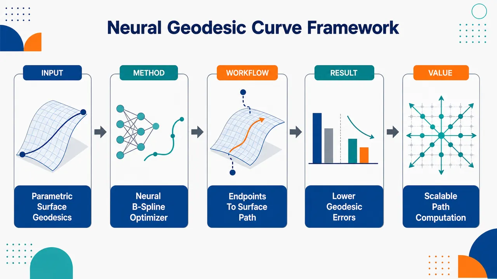
研究问题如何在任意参数曲面上高效、稳定地估计两点之间的最短测地路径；已有 geodesic-like curves 具备理论收敛性，但缺少可扩展的数值计算框架，传统 Runge-Kutta、有限差分、Newton 类方法容易受非线性、初始化和局部极小影响。创新方法将 Chen 2010 的测地类曲线理论转化为神经可训练框架：用均匀 B-spline 在参数域中表示候选路径，神经网络从端点坐标直接预测内部控制点，通过 Sigmoid 缩放把控制点锁定在矩形参数域内，再以曲面路径能量作为损失函数反向传播优化；Aha 点是把“求解测地微分方程”改成“端点到最优 B-spline 控制点的神经映射”。工作流程输入参数域中的两端点坐标 → 神经网络提取端点间非线性几何关系 → 输出内部 B-spline 控制点 → Sigmoid 映射保证控制点位于参数域 → 由端点和控制点生成参数平面 B-spline 曲线 → 通过曲面映射得到三维曲面路径 → 计算路径能量并反向传播训练 → 输出近似最短的 geodesic-like 曲线；改进模型还可输入多条扰动初始控制点路径，生成多个候选曲线并选择能量最小者。关键结果在两个三次 B-spline 曲面上测试 5,000 组随机端点对，网络采用两层隐藏层、32 与 64 个神经元、训练容差 1.0×10⁻⁴。随着控制点数增加，平均误差、截尾均值误差和中位误差整体下降；典型样本在 Surface 1 可达 10⁻⁵ 量级，Surface 2 可达 10⁻⁴–10⁻⁵ 量级。误差均值约在 10⁻³ 附近出现饱和；二次 B-spline 通常取得最佳精度—复杂度平衡。均值与截尾均值差距显示少量样本会因局部极小或边界约束产生长尾失败。应用价值为计算机辅助几何设计、机器人导航、计算机视觉和复杂介质波传播中的曲面最短路径计算提供一种可微、可训练、可扩展的神经几何工具；适用于单个参数曲面、复杂 B-spline 曲面、多曲面系统和旋转曲面，有望替代或辅助传统测地线边值求解器，尤其适合大量端点对的批量路径估计。第一部分：核心概览
提出一种将测地类曲线 geodesic-like curves、均匀 B-spline 表示与物理信息神经网络 / 深度学习优化结合的测地线近似框架，用于参数曲面上的两点最短路径估计。核心贡献在于把 Chen 2010 年已有收敛理论的 geodesic-like curves 转化为可训练、可扩展的数值框架，避免直接求解测地微分方程，并通过 5,000 组随机端点实验验证在复杂参数曲面上的有效性。该工作处于计算机辅助几何设计、科学机器学习与神经测地计算的交叉位置。
---
第二部分：结构化快速回顾
《A Neural Network Framework for Geodesic-Like Curve Computation on Parametric Surfaces》（None，）
背景
测地线计算是微分几何、CAGD、机器人学、计算机视觉中的基础问题。传统 Runge-Kutta、有限差分、离散网格算法和几何方法均可处理部分场景，但在任意参数曲面上仍面临非线性强、稳定性差、初始化敏感等问题。Chen 2010 年提出的测地类曲线具备理论收敛性，但缺乏高效数值框架。
方法
采用B-spline geodesic-like curves表示参数域中的候选曲线，将曲线能量
[
E(γ)=frac12intₐ^błeft|fracddtx(γ(t))i̊ght|²dt
]
作为优化目标。神经网络输入端点参数坐标，输出内部 B-spline 控制点，并通过 Sigmoid 变换确保控制点位于参数域内。训练过程通过反向传播最小化能量函数。
结果
在两个三次 B-spline 曲面上，对 5,000 组随机端点对进行测试。网络结构为两层隐藏层，32 与 64 个神经元，训练容差为 (1.0×10⁻⁴)。随着控制点数增加，平均、截尾平均和中位相对误差总体下降；二次 B-spline 通常达到较优精度—复杂度平衡。
讨论
误差存在约 (10⁻³) 量级的饱和现象，主要受模型容量与训练容差限制。高于二次的多项式次数收益有限，因为曲线在参数平面中近似，平面曲线挠率恒为零。均值与截尾均值差异揭示局部极小和边界约束是主要困难。
局限
无法保证全局最优；提出方法与基线方法均可能陷入局部极小。若真实最短路径贴近或沿参数域边界，控制点被限制在内部会阻碍逼近全局最优。给出的论文内容在扰动策略部分发生截断，后续完整实验与结论不可见。
结论
神经网络可作为 geodesic-like curve 计算的高效优化器，将已有收敛理论与现代 SciML 优化能力结合。该框架在单一参数曲面、复杂参数曲面、多曲面系统和旋转曲面上具有潜在适用性，并通过多路径搜索策略进一步缓解局部极小问题。
---
第三部分：逐章节冷凝解析
Abstract
Core problem: Convergence theory existed but computation was missing
测地类曲线最初由 Chen 于 2010 年提出，用于近似参数曲面上的最短路径，并已有理论收敛保证；关键缺口在于缺少高效数值实现框架。摘要明确指出：*"The concept of geodesic-like curves was introduced by Chen in 2010 as a method for estimating shortest paths (geodesics) on parametric surfaces, with its convergence established theoretically."* 但同时强调：*"However, an efficient numerical computational framework has not yet been developed."*
Main contribution: Deep learning and PINNs for geodesic-like curve computation
核心方法是用深度学习与Physics-Informed Neural Networks, PINNs计算 geodesic-like curves，而不是沿用传统非线性方程求解器。摘要中的关键表述为：*"we propose an elegant and efficient approach for computing geodesic-like curves by leveraging deep learning and Physics-Informed Neural Networks (PINNs)."* 这里的“elegant and efficient”对应方法层面的简洁性与计算效率。
Scope: Single surfaces, multi-surface systems, and surfaces of revolution
适用对象并不限于单个参数曲面，还包括具有 (C⁰) 或更高连续性的多曲面系统以及旋转曲面。摘要明确给出范围：*"not only can single parametric surfaces be handled efficiently, but a broad class of complex parametric surfaces including multi-surface systems with (C⁰) or higher continuity and surfaces of revolution can also be robustly addressed."* 这表明框架目标是面向 CAGD 中常见的复杂曲面场景，而非仅验证简单解析曲面。
---
1 Introduction
Geodesic computation is a foundational geometric problem
测地线 geodesics是光滑流形上的基础对象，在 CAGD、机器人学、计算机视觉中具有广泛应用。引言开篇给出定位：*"The computation of geodesics on smooth manifolds is a fundamental problem in differential geometry, with important applications in Computer-Aided Geometric Design, robotics, and computer vision, among other fields."* 数学定义上，测地线被描述为曲面两点间最短路径：*"A geodesic is mathematically defined as the shortest path between two points on a surface."*
Applications include trajectory optimization and wave propagation
测地线不仅是几何概念，还与物理和工程问题关联密切。引言指出：*"Such curves play a crucial role in trajectory optimization for autonomous navigation and in modeling wave propagation in complex physical environments."* 因此，计算测地线直接服务于自主导航轨迹优化与复杂介质波传播建模。
Efficient computation on arbitrary parametric surfaces remains difficult
尽管应用广泛，任意参数曲面上的高效测地线计算仍是难题。核心判断为：*"Despite their broad applicability, the efficient computation of geodesics on arbitrary parametric surfaces remains a challenging problem."* 难点来自参数曲面几何非线性、边值问题敏感性、可能存在多个局部极小路径以及数值优化不稳定。
Classical numerical methods cover Runge-Kutta, finite differences, and geometric schemes
既有数值路线包括 Runge-Kutta、有限差分、相流和几何方法。引言列举 Beck 等使用四阶 Runge-Kutta：*"Beck et al. computed geodesics on spline surfaces using a fourth-order Runge-Kutta method"*；Sneyd 和 Reskin 使用二阶 Runge-Kutta 改进：*"Sneyd and Reskin improved this approach through a second-order Runge-Kutta scheme."* Kasap 等提出有限差分法：*"In 2005, Kasap et al. presented a finite difference method for computing geodesics between two points on a surface."*
Discrete methods are well developed but differ from parametric-surface geodesic-like formulation
离散曲面、三角网格和多边形曲面上的测地计算已有大量算法，但这些方法与参数曲面上的连续曲线优化不同。引言列出：*"numerous accurate discrete algorithms for geodesic computation on surfaces, polygonal surfaces, and triangular meshes have been developed."* 这说明该工作面向的是参数曲面连续几何，而非单纯网格最短路。
Scientific machine learning provides a new numerical paradigm
Scientific Machine Learning, SciML被定位为求解非线性几何问题的新范式。引言写道：*"Recently, Scientific Machine Learning (SciML) has emerged as a promising paradigm for solving nonlinear geometric problems."* 神经网络的优势在于通用函数逼近能力和无需传统网格离散：*"Neural networks, as powerful universal function approximators, enable the solution of partial differential equations without relying on traditional grid-based discretization."*
PINNs, Deep Ritz, and NeuroGF form the recent neural-geodesic context
近期相关工作包括 PINNs、Deep Ritz 和 Neural Geodesic Field。引言指出：*"Physics-Informed Neural Networks (PINNs) and the Deep Ritz method have been employed to minimize energy functionals for geodesic computation."* 同时，Zhang 的 NeuroGF 被描述为：*"Zhang proposed the Neural Geodesic Field (NeuroGF), a neural-network-based framework for computing geodesics on three-dimensional mesh models."* 区别在于 NeuroGF 面向三维网格模型，而该框架聚焦参数曲面上的 geodesic-like curves。
Main strategy: Optimize geodesic-like curve parameters rather than solve geodesic equations
核心技术路线不是直接求解测地线微分方程，而是用神经网络优化 geodesic-like curve 的参数。引言明确写道：*"Instead of directly solving the geodesic differential equations, the proposed framework employs an artificial neural network to optimize the parameters of geodesic-like curves."* 该策略把测地边值问题转化为有限维曲线参数的能量最小化。
Theoretical convergence and neural optimization are combined
该工作的重要结构性创新是将 Chen 的 geodesic-like curve 收敛理论与神经网络优化能力结合。引言中的总结为：*"By combining the theoretical convergence properties of geodesic-like curves with the optimization capability of neural networks, the proposed approach enables accurate and efficient estimation of two-point geodesics on parametric surfaces."* 这里的理论基础来自 geodesic-like curves，计算能力来自神经网络。
---
2 Geodesics and Geodesic-like Curves on Regular Surfaces
Geodesics on Regular Surfaces
Regular surface and parameter-domain curve define the geometric setting
设规则曲面 (Σ) 由参数化
[
x:UsubsetR²ⁱ̊ghtarrowΣ
]
给出，曲线 (γ:[a,b]→ U) 在参数域中表示，曲面上的实际曲线为 (xi̧rcγ)。原文定义为：*"Let (Σ) be a regular surface with a parametrization (x:UsubsetR²i̊ghtarrowΣ) where (U) is an open subset of (R²)."*
Arc length and energy are the central variational functionals
曲线长度与能量分别定义为
[
L(γ)=intₐ^b|(xi̧rcγ)'(t)|dt
]
和
[
E(γ)=frac12intₐ^b|(xi̧rcγ)'(t)|²dt.
]
原文给出：*"Then the arc length of (γ) and the energy of (γ) are given by"* 后接公式 (1)、(2)。能量泛函是后续神经网络训练直接最小化的目标。
Proper variation fixes endpoints and perturbs the curve
Proper variation要求变分曲线保持端点不变，并在 (s=0) 时回到原曲线。条件为
[
φ₀₍ₜ₎₌γ(t),quad φₛ₍ₐ₎₌γ(a),quad φₛ₍b)=γ(b).
]
原文描述为：*"A proper variation of (γ) is a differentiable map (φ:[-ϵ,ϵ]×[a,b]i̊ghtarrow U)"*，并要求每个 (φₛ) 都是从 (γ(a)) 到 (γ(b)) 的光滑曲线。
First variation connects energy criticality to geodesic equation
能量一阶变分给出
[
E'(0)=-intₐ^błeftłangle fracDdtłeft(fracddt(xi̧rcγ)i̊ght),V(t)i̊ghtångle dt.
]
原文公式 (6) 表明：*"The first variation formula of (E(s)) is given by"* 后接上述表达式。若协变加速度为零，即
[
fracDdtfracddt(xi̧rcγ)=0,
]
则为测地线。原文定义为：*"If the curve (γ) satisfies the equation (fracDdtfracddt(xi̧rcγ)=0) for all (tin[a,b]), then (xi̧rcγ) is called a geodesic on (Σ)."*
Geodesic, energy critical point, and length critical point are equivalent
Theorem 2.1 给出三者等价：测地线、能量泛函临界点、长度泛函临界点。原文写道：*"The following statements are equivalent:"*，三条分别为：*" (xi̧rcγ) is a geodesic on (Σ)"*、*" (γ) is a critical point of the energy functional"*、*" (γ) is a critical point of the arc length functional."* 该等价关系支撑后续用能量最小化近似测地线。
Shortest path is formulated as a length minimization problem
两点 (p,qinΣ) 间最短路径定义为
[
min{L(γ):γ is a smooth curve on Σ,γ(a)=p,γ(b)=q}.
]
原文公式 (7) 后说明：*"It is also a critical point of the energy functional defined in Equation (5), and hence a geodesic on (Σ)."* 因此最短路径一定是测地线，但测地线未必全局最短。
---
Geodesic-like Curves on Regular Surfaces
Geodesic-like curves restrict the search space to practical curve families
真实最短路径在全体连续曲线空间 (C([a,b],U)) 中搜索，但实际计算通常限制在 Bézier、B-spline、NURBS 或 Fourier 多项式曲线族。原文指出：*"In practice, one typically restricts attention to curves with favorable geometric properties, such as Bézier curves, B-spline curves, NURBS curves, and Fourier polynomial representations, rather than considering all smooth (or continuous) curves."* 这一步把无限维问题变成有限参数曲线族中的优化问题。
Minimal geodesic-like curve is an energy minimizer within a chosen family
Definition 2.2 定义相对于曲线族 (V) 的 minimal geodesic-like curve：在满足端点约束的 (αinV) 中最小化能量
[
E(γ)=minE(α):αinV,x(α(a))=p,x(α(b))=q.
]
原文定义为：*"A minimal geodesic-like curve between (p) and (q) on (Σ) with respect to (V) is a curve (γinV)"* 并满足公式 (8)。
Theorem 2.3 gives convergence under nested dense curve spaces
若曲线族 (Vₙ) 嵌套增长，且并集在 (C([a,b],U)) 中关于一致拓扑稠密，则 minimal geodesic-like curves 收敛到无共轭点的测地线。定理条件写作：*"(VₙsubsetVₙ₊₁)"*，以及 *"(V=bigcupₙ₌₁ⁱⁿftyVₙ) is dense in (C([a,b],U)) with respect to the uniform topology."* 结论为：*"there exists a sequence of minimal geodesic-like curves (γₙinVₙₙ₌₁ⁱⁿfty) converges to (γ) as (n→infty)."*
No conjugate points ensure local minimality and uniqueness of the local minimizer
收敛证明依赖无共轭点测地线是能量局部极小点。原文写道：*"because (γ) is a geodesic without conjugate points, it is a local minimizer of the energy functional."* 随后利用能量夹逼
[
E(γ)łeqłiminf E(γₙ₎łeqłimsup E(γₙ₎łeqłim E(αₙ₎₌E(γ)
]
得到能量收敛。证明最后依赖唯一性：*"By the uniqueness of the local minimizer in the absence of conjugate points, it follows that (γₙ→γ) as (n→infty)."*
Bézier, B-spline, and NURBS geodesic-like curves inherit density-based convergence
Remark 2.4 给出多种曲线族的逼近能力。Bézier 稠密性来自 Weierstrass 逼近定理：*"By the Weierstrass approximation theorem, the set of all Bézier curves on (U) is dense in (C([a,b],U))."* B-spline 与 NURBS 继承这一性质：*"Since every Bézier curve can be regarded as a special case of a B-spline (respectively, NURBS) curve, any geodesic (x(U)) can also be approximated by a sequence of minimal B-spline (respectively, NURBS) geodesic-like curves."*
Degree-1 B-spline connects geodesic-like curves to discrete shortest paths
Remark 2.4 还说明离散点序列可解释为一次 B-spline geodesic-like curve。原文写道：*"a discrete set of points representing a numerical shortest path may be interpreted as a degree-1 minimal B-spline geodesic-like curve, where the points serve as control points."* 这为连续曲线框架与离散数值路径之间建立了桥梁。
Uniform B-spline geodesic-like curves become the focus
该研究后续聚焦均匀 B-spline geodesic-like curves。原文明确写道：*"In this paper, we focus on the uniform B-spline geodesic-like curves on a regular surface (Σ), using them to approximate the shortest path between two points on (Σ)."* 曲线表示为
[
γ(t)=sumᵢ₌₀ⁿNᵢ,d(t)bᵢ.
]
Clamped uniform knot vector enforces endpoint interpolation
使用 clamped uniform knot vector
[
K={n̆derbracea,dots,ad₊₁,td₊₁,dots,tₙ,n̆derbraceb,dots,bd₊₁}
]
确保 B-spline 曲线经过首尾控制点。原文说明：*"To ensure that the curve interpolates the endpoints (b₀) and (bₙ), the knot vector is constructed such that the first and last (d+1) knots coincide at (a) and (b), respectively."* 内部节点均匀间隔，步长为
[
Δ t=fracb-an-d.
]
Admissible B-spline variations vary only control points
Definition 2.5 定义 (V)-admissible variation：每个变分曲线仍属于同一 B-spline 曲线族。等价形式为
[
φ(s,t)=sumᵢ₌₀ⁿbᵢ₍ₛ₎Nᵢ,d(t),
]
其中控制点随 (s) 光滑变化。原文写道：*"where the control points (bᵢ(s)) depend smoothly on the variation parameter (s)."* 这使能量成为控制点变量的函数。
Energy becomes a finite-dimensional function of control points
由于 B-spline 曲线完全由控制点决定，能量泛函可写为
[
E(u₀,dots,uₙ,v₀,dots,vₙ₎₌frac12intₐ^błeft|fracddtxłeft(sumᵢ₌₀ⁿbᵢNᵢ,d(t)i̊ght)i̊ght|²dt.
]
原文强调：*"Since B-spline curves are completely determined by their control points, the energy of the (V)-admissible variation (φ(s,t)) in Equation (17) can be expressed in terms of the control points."*
B-spline geodesic-like curve satisfies finite-dimensional optimality condition
Definition 2.6 将端点固定为 (p,qin U)，自由变量为内部控制点
[
b=(u₁,dots,uₙ₋₁,v₁,dots,vₙ₋₁).
]
B-spline geodesic-like curve 满足
[
nabla E(b)=0.
]
原文定义为：*"a curve (tildeγ(t)subset U) is called a B-spline geodesic-like curve of degree (d) on (Σ) connecting (p) and (q)"*，并要求 *"satisfies the optimality condition (nabla E(b)=0)."*
Derivative of a B-spline curve is again a B-spline curve
B-spline 导数具有闭式表达，可写为低一阶 B-spline：
[
γ'(t)=sumᵢ₌₀ⁿ⁻¹Nᵢ,d₋₁(t)Δbᵢ.
]
原文写道：*"Since the derivative of the B-spline curve (γ(t)) is itself a B-spline curve of degree (d-1)"*，并给出
[
Δbᵢ₌fracdtᵢ₊d₊₁-tᵢ₊₁(bᵢ₊₁-bᵢ₎.
]
这为能量、梯度和 Hessian 的显式计算提供基础。
Gradient formulas require first and second surface derivatives
能量写为
[
E=frac12intₐ^błangle xᵤ u'+xᵥ v',xᵤ u'+xᵥ v'ångle dt.
]
利用链式法则得到
[
fracpartial x'partial uᵢ
=(xᵤᵤu'+xᵤᵥv')Nᵢ,d(t)+xᵤN'ᵢ,d(t),
]
[
fracpartial x'partial vᵢ
=(xᵤᵥu'+xᵥᵥv')Nᵢ,d(t)+xᵥN'ᵢ,d(t).
]
原文写道：*"it follows from the chain rule that"* 后接公式 (25)、(26)。因此梯度包含 (xᵤ,xᵥ,xᵤᵤ,xᵤᵥ,xᵥᵥ)。
Critical-point equations define the B-spline geodesic-like curve
梯度为
[
nabla E=(Eᵤ_₁,dots,Eᵤₙ₋₁,Eᵥ_₁,dots,Eᵥₙ₋₁).
]
原文指出：*"Therefore, a B-spline geodesic-like curve is obtained as a critical point of (E)"*，即每个内部控制点对应的 (Eᵤ_ᵢ=0,Eᵥ_ᵢ=0)。这形成一个高维非线性方程组。
Hessian has a block matrix structure
Hessian 条目由
[
Eᵤ_ᵢ ᵤ_ⱼ,Eᵤ_ᵢ ᵥ_ⱼ,Eᵥ_ᵢ ᵥ_ⱼ
]
组成，整体写为
[
beginpmatrix
Eᵤᵤ&Eᵤᵥ
Eᵥᵤ&Eᵥᵥ
endpmatrix.
]
原文说明：*"Consequently, the Hessian of (E) can be written in block matrix form"*，并定义 (Eᵤᵤ,Eᵤᵥ=Eᵥᵤ,Eᵥᵥ)。这为 Newton 型方法提供二阶信息。
Classical optimization is possible but computationally unstable
尽管能量、梯度和 Hessian 都是控制点变量的光滑函数，可使用 Newton 或 quasi-Newton 方法求解，但实际存在成本和稳定性问题。原文先指出：*"the geodesic computation reduces to a finite-dimensional nonlinear optimization problem that can be efficiently solved using Newton-type or quasi-Newton methods."* 随后给出限制：*"these methods are often computationally expensive and may suffer from numerical instability in practice."* 这直接引出神经网络框架。
---
3 Neural Network Frameworks for Minimal B-spline Geodesic-like Curves
Neural networks address instability and initialization dependence
神经网络被作为替代优化框架，以缓解传统方法的数值不稳定与初始化依赖。章节开头写道：*"Since deep learning provides a robust alternative that alleviates issues related to computational instability and initialization dependence, we develop a neural network-based framework for computing minimal B-spline geodesic-like curves on parametric surfaces."*
Parameter domain is assumed rectangular
曲面参数化为
[
x(u,v):U→R³,
]
其中参数域假设为矩形
[
U=(a,b)×(c,d)subseteqR².
]
原文写道：*"where the parameter domain is assumed to be a rectangular region (U=(a,b)×(c,d)subseteqR²)."* 这一假设对后续 Sigmoid 域约束非常重要。
Network predicts interior B-spline control points
目标是预测内部控制点
[
c=[u₁,dots,uₙ₋₁,v₁,dots,vₙ₋₁]^T
]
并最小化能量。原文写道：*"The objective is to predict a set of interior control points (c=[u₁,dots,uₙ₋₁,v₁,dots,vₙ₋₁]T) such that the energy functional (E) of the corresponding B-spline curve is minimized."*
Basic Model input consists only of endpoint coordinates
基础模型输入向量维度为 4：
[
X=[u₀,v₀,uₙ,vₙ]^T.
]
原文定义：*"The input vector (XinR⁴) consists of the coordinates of the two endpoints in the parameter domain (U)."* 这意味着基础模型试图从端点直接生成整条 B-spline 曲线的内部控制点。
Hidden layers extract nonlinear geometric features
网络包含 (k) 个隐藏层，第 1 层有 (m₁) 个神经元，可使用 ReLU 或 tanh 激活；第 2 层有 (m₂) 个神经元；第 (k) 层为最终特征提取层。原文写道：*"The network comprises (k) hidden layers to extract high-dimensional non-linear geometric features."* 具体激活函数描述为：*"Contains (m₁) neurons with ReLU or tanh activation functions."*
Raw output dimension matches free control point dimension
网络原始输出为
[
zinR²⁽ⁿ⁻¹⁾
]
即
[
[zᵤ,₁,dots,zᵤ,ₙ₋₁,zᵥ,₁,dots,zᵥ,ₙ₋₁]^T.
]
原文写道：*"The network generates raw predicted values (zinR²⁽ⁿ⁻¹⁾)."* 该维度精确对应 (n-1) 个内部控制点的二维坐标。
Sigmoid scaling enforces domain constraints
为保证控制点位于矩形域内，使用 Sigmoid 变换：
[
uᵢ₌ₐ₊₍b-a)σ(zᵤ,ᵢ),quad vᵢ₌c+(d-c)σ(zᵥ,ᵢ),
]
其中
[
σ(x)=frac11+e⁻x.
]
原文写道：*"To ensure the predicted control points strictly reside within the domain (U=(a,b)×(c,d)), a Sigmoid-based scaling ... is applied."* 该设计带来稳定性，也造成后文讨论的边界限制。
Training objective is the B-spline curve energy
网络训练直接最小化
[
E(θ)=frac12intₐ^błeft|fracpartialpartial tłeft(xi̧rcγ(t;θ)i̊ght)i̊ght|²dt.
]
原文写道：*"The entire network is optimized by minimizing the energy functional (E(θ))."* 通过反向传播优化 (θ)：*"By minimizing (E) via backpropagation, the network parameters (θ) are optimized to yield the optimal control points (c*=N_θ*(X))."*
Numerical experiments use two degree (3×3) B-spline surfaces and 5,000 random endpoint pairs
实验对象为两个三次 B-spline 曲面，Figure 3 标注为：*"Two Bspline surfaces of degree (3× 3)."* 数据规模为每个曲面上 5,000 组随机端点对：*"We compute the numerically minimal B-spline geodesic-like curves on two different surfaces ... with (5,000) random pairs of endpoints on the domains of these two surfaces."*
Experimental network has two hidden layers with 32 and 64 neurons
仿真使用的网络结构为两层隐藏层，神经元数分别为 32 和 64，训练容差为
[
1.0×10⁻⁴.
]
原文写道：*"we apply a specific neural network model which consists of two hidden layers with 32 and 64 neurons and set the training tolerance to (1.0×10⁻⁴)."* 该结构后来被认为导致误差饱和。
Ground-truth benchmark is synthesized from four numerical methods
由于一般曲面测地线没有解析解，基准长度取四种方法所得长度的最小值。原文写道：*"Since analytical solutions for general geodesics on arbitrary surfaces are typically unavailable, we establish a benchmark for performance evaluation by synthesizing four independent numerical approaches."* 四种方法包括：*"The numerical method proposed by Zhang"*、*"The fourth-order Runge-Kutta (RK4) method utilizing an extremely fine step size"*、*"the built-in shortest path computation provided by the Rhino3D 8 software"*、以及 *"the geodesic optimization tools available within the Grasshopper environment."*
Relative error is signed rather than absolute
相对误差定义为
[
relₑᵣᵣ₌fracLₐₚₚᵣₒₓ-LₑₓₐcₜLₑₓₐcₜ.
]
原文特别强调不取绝对值：*"Since the reference lengths obtained from existing methods may not coincide with the absolute shortest paths, we do not take the absolute value of the relative error."* 负误差表示提出方法找到比基线更短的路径：*"A negative relative error ((relₑᵣᵣ<0)) indicates that our approach achieves a shorter path length than the baseline methods."*
Surface 1 errors decrease with control points but mean errors saturate
Surface 1 的均值相对误差显示控制点增加后精度总体提升。Table 1 中，degree 1 从控制点数 4 的 2.60e-02 降至控制点数 30 的 2.32e-03；degree 2 从 2.00e-02 降至控制点数 18 的 1.72e-03，但到 30 时升至 2.20e-03；degree 3 在控制点数 14 和 18 时约 1.70e-03 / 1.71e-03。对应图表说明为：*"Figures 4-6 and Tables 1-3 present the mean, trimmed mean ... and median relative errors for the estimated results on surface 1."*
Surface 1 trimmed mean reaches (10⁻⁵) level for higher control counts
Surface 1 的截尾均值显著低于均值，说明少量异常点拉高均值。Table 2 中，degree 2 在控制点数 30 时为 3.20e-05；degree 3 在控制点数 22、26、30 时分别为 3.00e-05、3.10e-05、3.30e-05；degree 4 在控制点数 22、26、30 时为 3.00e-05、3.00e-05、3.20e-05。表题为：*"Trimmed mean relative errors on surface 1."*
Surface 1 median confirms typical-case accuracy is much better than mean
Table 3 中，degree 2 在控制点数 30 时中位误差为 2.50e-05；degree 3 在控制点数 22、26、30 时为 2.40e-05、2.40e-05、2.50e-05；degree 4 在控制点数 22、26、30 时为 2.20e-05、2.30e-05、2.40e-05。这表明典型样本已达到 (10⁻⁵) 量级，而均值仍在 (10⁻³) 附近，异常局部极小显著存在。
Surface 2 shows similar but slightly higher mean-error floor
Surface 2 的均值相对误差同样随控制点增加下降。Table 4 中，degree 1 从控制点数 4 的 1.17e-02 降至控制点数 26 的 2.25e-03；degree 2 从 9.58e-03 降至控制点数 26 的 1.49e-03；degree 5 在控制点数 22、26、30 时为 1.38e-03、1.44e-03、1.46e-03。对应描述为：*"Corresponding results for surface 2 are present in Figures 7-9 and Tables 4-6."*
Surface 2 trimmed and median errors improve to (10⁻⁴)–(10⁻⁵) range
Surface 2 的截尾均值和中位数随控制点数增加稳定下降。Table 5 中，degree 3 控制点数 30 的截尾均值为 7.70e-05，degree 5 为 7.20e-05。Table 6 中，degree 3 控制点数 30 的中位误差为 6.70e-05，degree 5 为 6.00e-05。这说明在排除异常样本后，普通案例精度可达 (10⁻⁴) 以下。
---
Observations on Numerical Performance
Convergence and saturation: error decreases then stalls near (10⁻³)
实验观察到控制点增加会降低相对误差，但超过某阈值后精度停止改善，约在
[
1.0×10⁻³
]
附近。原文写道：*"The relative error consistently decreases as the number of control points increases. However, a saturation effect is observed, whereby the accuracy ceases to improve beyond a certain threshold, approximately (1.0×10⁻³)."* 原因被归于模型容量和训练容差：*"the model employs two hidden layers with 32 and 64 neurons, respectively, and the training tolerance is set to (1.0×10⁻⁴)."*
Degree 2 offers the best accuracy-complexity balance
多项式次数超过 2 后收益有限。原文写道：*"Increasing the polynomial degree beyond 2 provides only marginal improvement."* 解释是曲线在参数平面中近似，平面曲线挠率恒为零：*"the approximation is performed in the parameter plane, where the torsion of plane curves is identically zero."* 因而二次 B-spline 已足够捕捉参数平面曲线几何：*"a quadratic B-spline representation is sufficient to capture the geometric properties of curves in the parameter plane."* 结论为：*"degree 2 provides the best balance between computational complexity and approximation accuracy."*
Mean vs trimmed mean reveals local-minimum failures
均值与截尾均值之间的显著差异表明存在少量严重异常。原文写道：*"The difference between the Mean and Trimmed Mean relative errors reveals two key challenges in the proposed geodesic computation approach."* 第一类问题是局部极小：*"The first challenge is the presence of local minima."* 当优化陷入局部极小时，可能出现相对误差大于 0.1：*"Significant deviations (relative errors (>0.1)) often occur when the optimization process becomes trapped in such minima."*
Both proposed and baseline methods can fail globally
Figure 10 给出两个代表性局部极小案例。左图中，提出方法路径长度 13.869，基线方法长度 12.389，基线更优；右图中，基线长度 19.532，提出方法长度 17.202，提出方法更优。原文写道：*"In the left subfigure, the proposed method converges to a local minimum with a path length of 13.869, whereas the baseline method identifies a superior solution with a length of 12.389."* 反向案例为：*"the baseline method becomes trapped in a local minimum, yielding a path length of 19.532, while the proposed approach identifies a more optimal path with a length of 17.202."* 结论是：*"neither consistently guarantees convergence to the global optimum."*
Boundary constraints create inherent geometric limitations
第二个挑战来自边界约束。若真实最短路径贴近参数域边界，控制点被限制在域内会阻止逼近全局最优。原文写道：*"When the true shortest path lies near the domain boundary, restricting control points within the domain prevents the model from approaching the global optimum."* Figure 11 描述为：*"A portion of the true shortest path (white dashed line) follows the domain boundary, while our neural-approximated curve (blue line) deviates from this boundary due to the domain constraint."* 该问题不是单纯优化失败，而是约束建模带来的几何限制：*"This reflects an inherent geometric limitation rather than an optimization failure."*
Non-convex energy landscapes and boundary constraints are persistent numerical challenges
局部极小对应非凸能量景观，边界问题对应域约束。原文总结为：*"These two difficulties (non-convex energy landscapes and boundary constraints) constitute persistent challenges for all numerical approaches."* 因此，神经网络策略不是完全消除这些问题，而是为复杂搜索提供更灵活的优化机制。
Revised Model introduces multi-path search to reduce local-minimum trapping
为缓解局部极小，输入从端点扩展为整条初始猜测曲线的全部控制点，维度从 4 扩展为
[
2(n+1).
]
原文写道：*"We modify the input of the basic model by incorporating all control points of an initial guess curve, thereby expanding the input dimension to (2(n+1)) values, rather than restricting it to the four endpoint coordinates."* 该配置称为 Revised Model：*"We refer to this configuration as the Revised Model."*
Initial paths are generated by straight interpolation plus perturbations
初始路径通过端点线性插值得到 (n-1) 个中间控制点，构成直线 B-spline 曲线。原文写道：*"we generate initial paths through linear interpolation between the endpoints to obtain (n-1) intermediate points, which serve as the control points of a straight B-spline curve."* 随后扰动内部控制点、固定端点，生成 (m) 条初始路径：*"By introducing controlled perturbations to the internal control points while keeping the endpoints fixed, we generate (m) distinct initial paths."*
Candidate selection chooses minimum-energy path among (m) outputs
每条初始控制点序列输入 Revised Model，得到 (m) 条候选 B-spline 曲线，然后选能量或路径长度最小者作为估计最短路径。原文写道：*"Each set of control points is subsequently fed into the Revised Model, yielding (m) candidate B-spline curves."* 选择机制为：*"a selection mechanism evaluates these candidates and identifies the one with the minimum energy (path length) as the estimated shortest path."*
Bell-shaped perturbation is introduced but the supplied content truncates before full formula
扰动策略是对初始 B-spline 曲线内部控制点施加 bell-shaped perturbation。原文写道：*"To generate diverse initial paths, we employ a bell-shaped perturbation strategy applied to the internal control points of the initial B-spline curve."* 初始控制点为
[
pᵢ₌₍ᵤᵢ,vᵢ₎,quad i=0,dots,n,
]
端点固定：*"The endpoints (p₀) and (pₙ) are kept fixed to satisfy the boundary conditions."* 给出的内容在 *"For the internal control points (pᵢ) where (i=1,dots,n-1), a displace"* 处截断，后续位移公式、实验结果和正式结论不可见。
---
第四部分：深度理解与语言支持
1. 术语解析
#### Geodesic-like curves
Geodesic-like curves不是严格测地线，而是在某个有限维曲线族 (V) 内通过能量最小化得到的测地线近似。关键区别在于：测地线满足微分几何中的协变加速度为零；geodesic-like curve 满足的是受限曲线空间中的最优性条件 (nabla E=0)。语境中，*"geodesic-like"* 表示“像测地线、可收敛到测地线、但不必严格满足测地方程”。
#### Minimal geodesic-like curve
Minimal geodesic-like curve强调在给定曲线族内达到能量最小，而不仅是临界点。它比 B-spline geodesic-like curve 更强：后者只需满足 (nabla E=0)，可能是局部极小、鞍点甚至不稳定临界点；minimal 版本要求能量最小。原文也说明：*"It is clear that a minimal B-spline geodesic-like curve is also a B-spline geodesic-like curve."*
#### Proper variation
Proper variation是变分法中的端点固定扰动。它不是任意扰动，而是每条变分曲线都连接同一对端点。因此一阶变分公式才可用于推导测地线临界条件。微妙之处在于，变分发生在参数域 (U) 中，但实际几何长度和能量发生在曲面 (Σ) 上。
#### Conjugate points
Conjugate points涉及测地线局部最短性的丧失。无共轭点时，测地线可作为能量泛函的局部极小点，并有局部唯一性；一旦存在共轭点，测地线可能仍满足测地方程，但不再是稳定的局部最短路径。Theorem 2.3 的收敛结论依赖 *"without conjugate points"*，不是无条件成立。
#### Saturation effect
Saturation effect指模型性能随自由度增加而不再改善。这里不是 B-spline 理论逼近能力不足，而是网络结构、训练容差、优化状态共同形成的精度天花板。语境中的约 (10⁻³) 饱和误差说明增加控制点数并不能自动带来更短路径，除非网络容量和优化精度同步提升。
---
2. 疑难查证
#### 为什么最短路径可以通过能量而不是长度来求？
长度泛函
[
L=int|dotx|dt
]
与能量泛函
[
E=frac12int|dotx|²dt
]
不完全相同。长度与参数化无关，能量依赖速度分布；但在端点固定且采用合适参数化时，最短路径同时是能量临界点。直观上，如果路径形状固定但走得忽快忽慢，长度不变而能量会增加；能量最小倾向于把速度分布均匀化。因此用能量优化不仅寻找短路径，也隐含鼓励较均匀的参数化。
#### 为什么 B-spline 控制点优化能近似测地线？
B-spline 曲线族具有逼近能力。随着控制点数增加，B-spline 曲线空间越来越丰富，能在一致拓扑下逼近任意连续曲线。Theorem 2.3 的逻辑是：若真实测地线无共轭点且曲线族稠密，那么每个曲线族内的最优近似会逐步接近真实测地线。神经网络并不创造这一理论收敛性；它负责更高效地寻找控制点。
#### 为什么二次 B-spline 常常足够？
曲线是在参数域 ((u,v)) 平面中表示的，而平面曲线没有空间挠率。真正复杂的三维形状由曲面映射 (x(u,v)) 产生，而不是参数平面曲线本身必须高阶扭转。二次 B-spline 已能表达弯曲和平滑过渡；更高次数增加自由度和优化难度，却未必显著降低曲面路径长度。
#### 为什么 Sigmoid 域约束会导致边界问题？
Sigmoid 输出严格位于开区间 ((a,b))、((c,d))，不能真正达到边界。若真实最短路径沿边界或贴边运行，内部控制点无法贴合边界，只能在内部绕开，路径会变长。这不是训练失败，而是模型可行域排除了真实最优路径或其极限形式。解决方向通常包括允许闭域投影、边界控制点专门参数化、分段路径包含边界段等。
#### 为什么均值误差和截尾均值误差差距很关键？
若所有样本表现稳定，均值、截尾均值和中位数应相近。实验中截尾均值和中位数达到 (10⁻⁵) 或 (10⁻⁴)，而均值仍在 (10⁻³) 附近，说明大多数案例很好，但少量失败案例误差很大。这类长尾失败通常来自局部极小、错误拓扑路径、边界约束或基准方法不一致。
---
第五部分：创新评估与关联
1. 创新性判断
#### From neural geodesic fields to parametric-surface geodesic-like curves
近年神经测地计算中，PINNs、Deep Ritz 和 NeuroGF 已用于测地线或网格模型上的测地场计算。该工作的新意在于不是直接学习三维网格上的距离场或 geodesic field，而是在参数曲面上结合 B-spline geodesic-like curve 的理论收敛框架。NeuroGF 面向 *"three-dimensional mesh models"*；这里面向 (x(u,v)) 给出的参数曲面。
#### Theoretical approximation family plus neural optimizer
以往 geodesic-like curves 已有理论，但计算依赖 Newton 型或 quasi-Newton 型非线性优化，容易不稳定。该工作把已有的收敛曲线族作为结构先验，再用神经网络输出控制点并最小化能量。新颖性不在单纯使用神经网络，而在将可证明收敛的几何曲线族与可微能量训练框架组合。
#### Endpoint-to-control-point mapping provides reusable optimization structure
Basic Model 从端点坐标
[
[u₀,v₀,uₙ,vₙ]
]
直接预测内部控制点，避免每个端点对完全从零进行传统迭代。该结构把“两点测地线求解”转化为“端点到最优控制点”的神经映射。相比每次求解一个边值问题，这种设计更接近 amortized optimization，即通过网络参数吸收一部分优化经验。
#### Domain-constrained neural output is geometrically explicit
Sigmoid 缩放将控制点严格限制在矩形参数域中，这比单纯惩罚越界更稳定、实现更直接。该设计同时暴露出边界路径无法被充分逼近的局限，因此创新点与局限紧密相连：它提升了可行性控制，却牺牲了贴边最优路径表达能力。
#### Multi-path Revised Model tackles non-convexity pragmatically
Revised Model 将输入扩展为所有初始控制点，并通过 (m) 条扰动路径生成多个候选解，再选最小能量路径。该策略针对非凸能量景观中的局部极小问题，比单路径优化更鲁棒。它没有从理论上保证全局最优，但在工程上提供了多初值、多候选、多能量筛选的机制。
#### Unsolved prior problem: Efficient numerical realization of Chen’s 2010 theory
Chen 2010 年 geodesic-like curves 的理论收敛已建立，但缺乏高效数值计算框架。该工作直接填补这一空白：把 minimal B-spline geodesic-like curves 的能量、梯度、Hessian 理论形式转化为神经网络可训练目标，并在大规模随机端点测试中验证。解决的问题不是“测地线理论是否存在”，而是“如何稳定、高效地计算理论曲线族中的近似最短路径”。
#### Remaining gap
全局最优仍未保证，局部极小和边界约束仍是核心障碍。实验中的路径长度案例 13.869 vs 12.389 和 19.532 vs 17.202 说明神经方法与基线方法各有失败场景。未来关键改进方向包括更强网络容量、自适应控制点数、边界感知参数化、多patch连续约束、全局搜索或拓扑路径分类机制。
-
07
📊 含图深析
💡 亮点：RIXS 直接揭示 d 波交错磁性特征。
📖 展开分析 + 配图
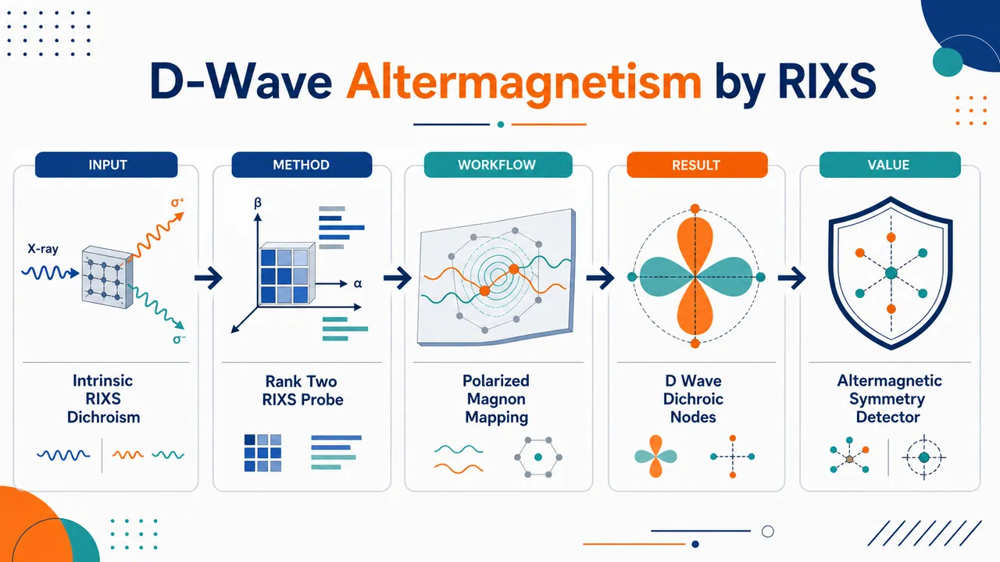
研究问题在净磁矩为零的补偿磁体 La₂O₃Mn₂Se₂ 中，圆偏振 RIXS 看到的 CL/CR 强度差究竟是 d-wave altermagnetism 的内禀对称性指纹，还是实验几何、双折射或未分辨手性磁振子劈裂造成的伪信号？核心画面可呈现为：Lieb 晶格上两个反平行 Mn 子晶格由 C₄z 旋转连接，磁振子沿 (H,0) 有强二色性、沿 (H,H) 出现节点。创新方法Aha 点是把圆偏振 RIXS 从“看手性磁振子能量劈裂”的工具，转变为“读出 altermagnetic 对称性”的探针：即使相反手性磁振子劈裂仅约 2.4 meV、远低于 27 meV 分辨率，仍可通过 RIXS 有效算符中的 rank-2 与更高阶自旋项，经由静态有序磁矩产生子晶格依赖的单磁振子截面，从而形成不抵消的 d-wave 圆二色性；再用方位角对称性、温度消失、单畴测量和 ED 精确对角化闭环验证。工作流程输入为 c 轴法线 La₂O₃Mn₂Se₂ 单晶和 Mn L₃ 边左/右圆偏振 X 射线；先用 REXS 揭示隐藏的 C₄z 相关各向异性，再在固定散射角 2Θ=154° 下测量 RIXS 能量损失谱；从低能谱中分离约 33 meV 单磁振子峰，计算 ΔI=I_CL−I_CR；沿 (H,0)、(H,H) 和不同方位角 ϕ 扫描，比较低温磁有序相与高温顺磁相；最后用 LSWT 拟合磁振子色散，用包含晶场、库仑作用、芯空穴势、交换场和真实偏振几何的 EDRIXS 精确对角化重现实验二色性。关键结果在 Tₙ≈160 K 以下，约 33 meV 单磁振子峰出现显著圆二色性；该信号沿 (H,0) 强、沿 (H,H) 几乎为零，方位角满足 90° 旋转反号和 45°/135° 节点的 d-wave 图案；升温进入顺磁相后二色性消失。实验还观察到相反二色性的两个 altermagnetic 畴，单畴尺度达数百微米。ED 计算证明：无磁序时无二色性，加入反平行 z 向交换场后即可复现实验，且不需要解析手性磁振子分支劈裂。应用价值该研究确立圆偏振 RIXS 可作为补偿磁体中 altermagnetic 对称性的直接光谱探针，尤其适合净磁矩为零、能量劈裂很小、传统中子或 ARPES 难以明确判定的材料；它为寻找和识别 d-wave/g-wave/i-wave altermagnets 提供可视化判据，也为无净磁化自旋流、反常霍尔/能斯特效应、抗扰动自旋电子器件以及手性声子等其他准粒子的 RIXS 二色性解释提供新框架。第一部分：核心概览 (Overview)
该研究在强关联 Lieb 晶格磁体 La₂O₃Mn₂Se₂ 中，以 圆偏振共振非弹性 X 射线散射（RIXS） 直接揭示 d-wave altermagnetism。核心贡献在于：观测到单磁振子激发的 d-wave 对称圆二色性，该信号在 Tₙ≈160 K 以下出现、在顺磁相消失，并沿 (H,0) 强、沿 (H,H) 近乎为零。结合 RIXS 算符对称性分析 与 精确对角化（ED），证明二色性源自 altermagnetic 对称约束，而非未分辨的手性磁振子能带劈裂。该工作为 RIXS 作为 altermagnetic 对称性探针提供了关键实验证据。
---
第二部分：结构化快速回顾
《d-wave altermagnetism revealed by resonant inelastic X-ray scattering》（None，）
背景
Altermagnetism 是区别于铁磁和传统反铁磁的第三类共线磁有序：总磁矩补偿、反平行自旋排列，但在无相对论自旋轨道耦合条件下仍可解除 Kramers 简并。过去利用 ARPES、中子散射、RIXS 探测 altermagnetism，但 RIXS 圆二色性 是否为内禀手性磁振子信号仍存在争议。
方法
选择强关联半导体 La₂O₃Mn₂Se₂，其准二维 Lieb 晶格、空间群 I4/mmm、两类 Mn 子晶格由 C₄z 相关。采用 Mn L₃ 边圆偏振 RIXS、Mn K 边 REXS、线性自旋波理论、RIXS 算符对称性分析和 EDRIXS 精确对角化。
结果
低温 RIXS 在 ≈33 meV 处观测到单磁振子峰，其 CL/CR 圆偏振强度差 显著；该二色性沿 (H,0) 明显，沿 (H,H) 基本消失，并随方位角呈 d-wave 对称性。升温至顺磁相后，该二色性消失。
讨论
尽管相反手性磁振子分支预计仅有 ≈2.4 meV 劈裂、低于实验能量分辨率 ≈27 meV，仍能观测到强二色性。根源在于 RIXS 算符中 rank-2 与更高阶项 可通过有序磁矩耦合到单磁振子，产生子晶格依赖的散射截面不补偿。
局限
磁振子分支劈裂低于当前 RIXS 能量分辨率，无法直接解析相反手性分支。多磁振子/声子特征因统计量有限、强度较低而未系统展开。自吸收未显式校正，但方位角旋转中几何效率保持不变。
结论
La₂O₃Mn₂Se₂ 是实验实现的 d-wave altermagnet；圆偏振 RIXS 可作为高对称性敏感的直接探针，尤其适合识别常规探测难以区分的补偿磁相。
---
第三部分：逐章节冷凝解析 (Section-by-Section Condensing)
d-wave altermagnetism revealed by resonant inelastic X-ray scattering
Altermagnetism is identified as a third class of collinear magnetism
Altermagnetism 被界定为继铁磁、传统反铁磁之后的第三类共线磁序：磁矩补偿、反平行自旋排列，但无需相对论 spin-orbit coupling 即可解除 Kramers degeneracy。核心定义直接表述为 *"Altermagnetism defines a third fundamental class of collinear magnetic order, featuring compensated magnetic moments with antiparallel spin alignment, yet lifted Kramers degeneracy without the need for relativistic spin-orbit coupling"*。这一点确立了研究对象不是普通反铁磁，而是具有非相对论自旋劈裂能力的补偿磁相。
The unresolved experimental problem concerns whether RIXS circular dichroism is intrinsic
圆偏振 RIXS 被提出可探测 chiral magnons，但其信号可能来自仪器或几何伪效应。争议焦点是二色性究竟反映 altermagnetic 本征对称性，还是由实验几何诱发。关键表述为 *"it remains controversial whether this effect is an intrinsic property of altermagnetism or an artifact of experimental geometry"*。此处的核心科学问题不是“是否有 RIXS 二色性”，而是“二色性是否可作为 altermagnetism 的定性判据”。
La₂O₃Mn₂Se₂ is used as a strongly correlated Lieb-lattice platform
研究对象 La₂O₃Mn₂Se₂ 被定位为强关联 Lieb 晶格磁体，并被用于解决 RIXS 二色性归因问题。核心陈述为 *"we resolve this debate and provide unambiguous experimental evidence of d-wave altermagnetism in the strongly correlated Lieb-lattice magnet La₂O₃Mn₂Se₂"*。该材料的价值在于其晶格、磁结构和电子关联共同提供了清晰的 d-wave altermagnetic symmetry。
The decisive experimental observation is d-wave circular dichroism in magnetic excitations
RIXS 谱显示磁激发中的 d-wave-symmetry circular dichroism，且该信号在顺磁相消失。直接证据为 *"The RIXS spectra exhibit a d-wave-symmetry circular dichroism in the magnetic excitations that vanishes in the paramagnetic phase"*。这同时满足两个关键判据：低温磁有序相关性与方位角对称性约束。
The dichroism is proven to follow altermagnetic symmetry rather than magnon branch splitting
通过 RIXS-operator symmetry analysis 和 exact-diagonalization calculations，二色性被归因于 altermagnetic 对称性，而非手性磁振子分支劈裂。关键句为 *"we prove that the observed dichroism is a direct consequence of altermagnetic symmetry constraints, independent of magnon branch splitting"*。这一区分极为重要，因为此前许多实验解释将 RIXS 圆二色性直接等同于手性磁振子能带劈裂。
---
Introduction / Background paragraphs
Altermagnetic symmetry differs from conventional antiferromagnetic symmetry
传统反铁磁通常通过平移或反演连接反平行子晶格，而 altermagnetism 的两个相反自旋子晶格由旋转或镜面对称连接。关键表述为 *"a magnetic phase that emerges when two magnetic sublattices of opposite spin orientation are connected by rotational or mirror operations, rather than the translation or inversion symmetries"*。这一定义决定了 altermagnets 可在总磁矩为零的同时表现出非平庸的动量空间自旋结构。
Momentum-dependent nonrelativistic spin polarization and chiral magnons are symmetry dictated
由于子晶格关系不是简单平移/反演，体系可产生 momentum-dependent, non-relativistic spin polarized electronic bands 与 uncompensated chiral magnons。原文表述为 *"Such symmetry considerations induce momentum-dependent, non-relativistic spin polarized electronic bands, and uncompensated chiral magnons"*。该机制与传统自旋轨道耦合诱导的 Rashba/Dresselhaus 类型劈裂不同，根源在磁空间群。
d-, g-, and i-wave classifications encode the angular form factor of altermagnetic responses
不同晶体结构对应 d-wave、g-wave、i-wave 等对称分类，影响电子和磁振子响应。关键表述为 *"these quantities inherit a characteristic d, g, or i symmetry"*。这里的 “wave” 不是超导配对波函数，而是动量空间自旋劈裂或响应函数的角向对称性。
Altermagnets can generate macroscopic effects despite zero net magnetization
Altermagnetic 材料可表现 piezomagnetic responses、无净磁化的 spin-current generation、anomalous Hall 与 Nernst effects。原文列举为 *"including piezomagnetic responses, net-magnetization-free spin-current generation, and anomalous Hall and Nernst effects"*。这说明 altermagnetism 的意义不局限于基础分类，也具有自旋电子学功能潜力。
ARPES detects electronic spin splitting, but magnetic excitations require complementary probes
电子能带层面的 altermagnetism 可用 ARPES 或 spin-resolved ARPES 检测。原文为 *"the spin-polarized electronic bands of altermagnets can be accessed with angle-resolved photoemission spectroscopy (ARPES) by observing magnetism-induced band splitting or, more definitively, through spin-resolved ARPES"*。但 ARPES 不直接给出磁振子手性结构，因此需要中子散射或 RIXS。
Neutron scattering interpretation is complicated by dipolar interactions
非弹性中子散射可探测相反手性磁振子的色散差异，但 dipolar interactions 也可能导致能带劈裂或手性混合。关键表述为 *"the interpretation of neutron data is sometimes complicated by dipolar interactions, which can similarly generate magnon-band splittings or partially mix opposite-chirality modes"*。这使得仅凭磁振子劈裂判定 altermagnetism 存在潜在歧义。
Circularly polarized RIXS is promising but previously ambiguous
圆偏振 RIXS 的优势在于手性信息可编码进 circular dichroism。原文为 *"Circularly polarized resonant inelastic x-ray scattering (RIXS) has emerged as a potentially more direct probe of chiral magnons, with the chirality encoded in the circular dichroism of the RIXS signals"*。但其可靠性受到 birefringence 与 RIXS 过程自身有效破坏时间反演的影响。
Extrinsic dichroism mechanisms do not couple directly to altermagnetic order
RIXS 二色性可由外禀效应产生，包括 birefringence 和 RIXS 过程中的有效时间反演破缺。关键句为 *"dichroism can arise from extrinsic effects, such as birefringence or the effective time-reversal symmetry breaking inherent to the RIXS process itself"*。这些机制 *"do not couple directly to the altermagnetic order"*，因此会导致归因模糊。
---
Lattice symmetry
La₂O₃Mn₂Se₂ is a quasi-two-dimensional Lieb-lattice semiconductor
La₂O₃Mn₂Se₂ 是强关联半导体，晶体结构为准二维 Lieb lattice，空间群 I4/mmm。直接证据为 *"La₂O₃Mn₂Se₂ is a strongly correlated semiconductor that crystallizes in a quasi-two-dimensional Lieb lattice with the space group I4/mmm"*。该准二维结构为后续固定面内动量转移 Q∥=(H,K) 提供基础。
Two Mn sublattices are related by C₄z symmetry in the crystal structure
结构由畸变 MnSe₄O₂ octahedra 构成，形成两个不同 Mn 子晶格 MnA 和 MnB，二者由 C₄z 对称相关。关键句为 *"The structure comprises distorted MnSe₄O₂ octahedra forming two distinct Mn sublattices (MnA and MnB), which are connected by C₄z symmetry"*。这种旋转而非平移关系是 d-wave altermagnetism 的晶格前提。
The magnetic transition occurs near 160 K with G-type order and k=(0,0,0)
低于 Tₙ≈160 K，体系形成 G-type magnetic order，传播矢量 k=(0,0,0)。直接表述为 *"Below the transition temperature of TN ∼ 160 K, the system adopts G-type magnetic order with a propagation vector k=(0,0,0)"*。该磁序为共线补偿型，但因子晶格关系非平移而不同于传统反铁磁。
Static moments are collinear along c and strictly antiparallel without canting
静态磁矩沿晶体学 c axis 共线排列，A/B 位点严格反平行，没有倾斜或混合证据。原文为 *"The static magnetic moments are collinear along the crystallographic c axis and are strictly antiparallel on the A and B sites, with no evidence of canting or mixing"*。这排除了弱铁磁或自旋倾斜导致二色性的简单解释。
Magnetic ordering replaces C₄z by combined [C₂∥C₄z] symmetry
在磁有序态中，Mn 子晶格不再由纯 C₄z 连接，而由组合对称 [C₂∥C₄z] 连接。关键表述为 *"In this ordered state, the Mn sublattices are no longer connected by the C₄z operation; instead, they are related by a combined [C₂∥C₄z] symmetry"*。其中 C₂ 可理解为自旋空间中的 π 旋转，与实空间 C₄z 共同保持磁结构。
Broken PT and τT symmetries satisfy altermagnetic criteria
该磁有序态破缺 parity-time (PT) 与 translation-time (τT) 对称性，满足 altermagnetism 的基本判据。原文为 *"Consequently, both the combined parity-time (PT) and translation-time (τT) symmetries are broken, fulfilling the fundamental criteria for altermagnetism"*。这表明其不是 PT 保护简并的常规反铁磁。
Calculated electronic and magnon signatures have d-wave anisotropy
已有计算显示沿 (H,0) 存在自旋极化电子能带与手性磁振子，而沿 (H,H) 不存在，对应 d-wave symmetry。关键句为 *"calculations revealing spin-polarized electronic bands and chiral magnons along the (H,0) direction, which are absent along the (H,H) direction, reflecting a characteristic d-wave symmetry"*。这给出实验选择动量路径的理论依据。
Mn²⁺ 3d⁵ ground state has quenched orbital degrees of freedom
对 Mn²⁺ 的 3d⁵ configuration，尽管 MnSe₄O₂ 八面体畸变，基态轨道自由度仍被淬灭，有效恢复 SO(3) 对称性。原文为 *"For Mn²⁺ with a 3d⁵ configuration, the orbital degrees of freedom are quenched in the ground state despite the structural distortion of the MnSe₄O₂ octahedra, effectively recovering SO(3) symmetry"*。这解释了为什么静态磁性表面上接近各向同性。
Effective translational equivalence hides Mn contributions in some nonresonant Bragg reflections
由于 Mn²⁺ 基态近似各向同性，两个 Mn 子晶格看似可由简单平移连接，导致 Mn 对某些 I4/mmm 允许的结构 Bragg 反射不贡献。原文为 *"Due to this effective translational equivalence, Mn does not contribute to certain structural Bragg reflections allowed by the I4/mmm space group"*。这说明 altermagnetic 晶格差异在非共振条件下可能被隐藏。
REXS reveals the hidden C₄z-related anisotropy
在 Mn K edge REXS 中，普通 Bragg 峰 Q=(1,-1,8) 强度基本不随入射能量变化，而 Q=(0,-1,13) 在共振处显著增强。直接证据为 *"the conventional Bragg peak Q=(1,-1,8), which receives contributions from all ions, shows an intensity that is essentially independent of incident photon energy"*，以及 *"the intensity of the Q=(0,-1,13) reflection, which contains only non-Mn scattering factors in the non-resonant case, is dramatically amplified at the resonance"*。
ATS-like enhancement exposes D₂h symmetry relevant to altermagnetism
共振过程改变 Mn²⁺ 原子形状因子，产生类似 anisotropic tensor susceptibility (ATS) 的增强，从而显现隐藏的 C₄z 结构差异与底层 D₂h symmetry。关键表述为 *"This anisotropic tensor susceptibility (ATS)-like enhancement arises because the resonant process modifies the Mn²⁺ atomic form factor"*，以及 *"resonant X-ray scattering uncovers the underlying D₂h symmetry that drives its altermagnetic behavior"*。
---
Circular dichroism in RIXS
Mn L₃-edge RIXS was performed with circular polarizations and no outgoing polarization analysis
RIXS 测量位于 Mn L₃ edge，使用 circular-left (CL) 和 circular-right (CR) 入射光，未分析散射光偏振。原文为 *"We employed incident photons with circular-left (CL) and circular-right (CR) polarizations without analyzing the scattered photon polarization"*。该设计直接比较 CL/CR 激发磁振子的截面差异。
The scattering geometry probes in-plane momentum with fixed 2Θ=154°
样品具有 ab cleavage surface，可绕 c axis 旋转改变方位角 ϕ。固定散射角 2Θ=154°，关注面内动量 Q∥=(H,K)。关键句为 *"we fixed the scattering angle 2Θ=154° and focused on the in-plane momentum transfer Q∥=(H,K) indexed in reciprocal lattice units"*。
RIXS energy map separates low-energy magnetic excitations from high-energy dd excitations
低温 RIXS 能量图分为低能区 <0.2 eV 和高能区 >1.5 eV；前者包含磁激发，后者由 dd excitations 主导。直接表述为 *"the low-temperature RIXS energy map ... separates cleanly into a low-energy region (<0.2 eV), containing the magnetic excitations of interest, and a high-energy sector (>1.5 eV), dominated by dd excitations"*。
The representative low-energy spectrum contains a ≈33 meV single-magnon peak
低能谱可分解为近零能量损失的准弹性峰、≈33 meV 的强非弹性峰以及两个更高能峰。原文为 *"a quasi-elastic peak centered near zero energy loss, a prominent inelastic peak at ∼33 meV, and two higher-energy peaks"*。根据偏振分析，33 meV peak 被归因于 single-magnon excitations：*"we attribute the 33 meV peak to single-magnon excitations"*。
Higher-energy low-energy features are likely multimagnon or phonon excitations
两个更高能低能特征可能来自 multi-magnon 或 phonon excitations，且 RIXS 原理上允许 ΔMs>1 多磁振子过程。关键表述为 *"the higher-energy features are likely multi-magnon or phonon excitations — note that multi-magnon excitations (ΔMs>1) are fundamentally permitted in RIXS"*。
CL and CR channels show pronounced circular dichroism in the single-magnon peak
CL 与 CR 通道在单磁振子峰处出现显著强度差，即 circular dichroism。直接证据为 *"Comparing the CL and CR channels reveals a pronounced circular dichroism in the single-magnon peak"*。该二色性是后续 d-wave 方位角分析的核心观测量。
Incident photon energy can reverse the sign of dichroism
调低入射光子能量时，二色性符号发生反转。原文为 *"the sign of this dichroism reverses upon tuning the incident photon energy to a lower value"*。这说明 RIXS 圆二色性不只是磁振子本征手性的直接投影，还强烈受共振中间态影响。
Quasi-elastic dichroism can be extrinsic, but inelastic dichroism is robust
准弹性线强度容易受样品表面形貌等外禀因素影响，可能产生人工二色性；非弹性信号中的二色性被认为内禀且稳健。原文为 *"the intensity of the quasi-elastic line is susceptible to extrinsic factors, such as the sample surface tomography, which can induce artificial dichroism"*，而 *"the dichroism observed in the inelastic signals is intrinsic and robust"*。
Single-magnon analysis is prioritized because multimagnon/phonon statistics are limited
由于多磁振子/声子信号强度低、统计有限，分析集中在单磁振子贡献。关键表述为 *"Due to the limited statistics and lower intensity of the multi-magnon/phonon signals, the following analysis focuses on the single-magnon contribution"*。这也是论文主要结论严格限定于 single-magnon circular dichroism 的原因。
Incident-energy dependence confirms resonant enhancement and collective character
低能特征随入射能量显示共振增强，证明其集体激发性质。原文为 *"the low-energy features ... exhibit a resonant enhancement confirming their collective nature"*。单磁振子二色性随入射能量变化，进一步表明截面受共振中间态控制：*"the measured cross-section is governed by the complex intermediate states of the resonant process"*。
Two altermagnetic domains with opposite dichroism are observed
La₂O₃Mn₂Se₂ 预计存在两个由全局自旋反转相关的 altermagnetic domains，实验持续观测到二色性相反的两类畴，每个畴尺度达数百微米。原文为 *"we consistently observe two types of domains with opposite dichroism, each extending over several hundred micrometers"*。
The X-ray beam is small enough to probe a single domain
X 射线束斑约 50 μm horizontal × 5 μm vertical，小于畴尺度，可在测量中锁定单畴。关键表述为 *"The X-ray beam (∼50 μm horizontal × 5 μm vertical) is sufficiently small to probe a single domain throughout the measurement"*。这排除了畴平均导致信号抵消或假各向异性的主要风险。
Single-magnon dispersion is observed along both (H,0) and (H,H)
单磁振子峰沿 (H,0) 与 (H,H) 均呈明显色散。直接表述为 *"The single-magnon peak exhibits clear dispersion along both the (H,0) and (H,H) directions"*。这表明被分析峰确为传播磁激发，而非局域晶场或杂散信号。
LSWT with neutron-derived exchange parameters reproduces the dispersion
线性自旋波理论使用近期中子散射给出的交换参数，可再现实验色散。原文为 *"This dispersion is well reproduced by linear spin wave theory (LSWT) calculations using the exchange parameters from a recent inelastic neutron scattering study"*。这进一步支持 ≈33 meV 特征的单磁振子归属。
Predicted chiral magnon splitting is only ≈2.4 meV, below ≈27 meV resolution
模拟预测在 Q∥=(-0.35,0) 处相反手性磁振子分支劈裂约 2.4 meV，低于当前实验能量分辨率 ≈27 meV。关键细节为 *"a small splitting of the opposite-chirality magnon branches (∼2.4 meV at Q∥=(-0.35,0)), which lies beyond the energy resolution of current measurements (∼27 meV)"*。因此实验并未直接解析手性分支劈裂。
Circular dichroism appears along (H,0) but vanishes along (H,H)
尽管能量劈裂不可分辨，沿 (H,0) 传播的磁振子出现明显圆二色性，沿 (H,H) 基本没有。直接证据为 *"a pronounced circular dichroism is observed for magnons propagating along the (H,0) direction, whereas it is essentially absent along (H,H)"*。该动量各向异性构成 d-wave altermagnetism 的关键指纹。
Dichroism weakens at reduced momentum and reverses near the zone center
二色性在较小动量转移处减弱，并在接近区中心时反号。原文为 *"The dichroism diminishes at reduced momentum transfer and reverses sign very close to the zone center"*。这说明 RIXS 二色性不是简单的手性布居差，而是与几何、共振态和对称性共同相关。
High-energy dd excitations also show weak dichroism
高能 dd excitations 中也检测到弱二色性。原文为 *"a weak dichroism is also detected in the high-energy dd excitations"*。但主分析聚焦于与低温磁有序直接相关的单磁振子。
Azimuthal scans reveal d-wave symmetry of the magnon dichroism
固定面内动量转移大小并改变方位角 ϕ，低温 CL 和 CR 通道各自呈二重对称且存在小相位差，差分二色性呈清晰 d-wave symmetry。关键句为 *"At low temperature, both the CL and CR channels exhibit two-fold symmetry with a small phase shift"*，以及 *"their difference yields a dichroism characterized by a well-defined d-wave symmetry"*。
Paramagnetic-state spectra become nearly isotropic and dichroism disappears
升温进入顺磁相后，方位角依赖主要变为各向同性，仅剩微弱二重调制，可能源于短程磁关联；二色性同时消失。原文为 *"Upon heating into the paramagnetic state, the azimuthal dependence becomes predominantly isotropic"*，以及 *"The concurrent disappearance of the dichroism demonstrates that this effect is intimately linked to the low-temperature d-wave altermagnetic order"*。
The observation is robust against incident-energy changes
使用不同入射光子能量仍保持同类行为。直接表述为 *"This behavior persists with a different incident photon energy, confirming the robustness of the observation"*。这增强了 d-wave 对称二色性作为相本征信号的可信度。
---
Microscopic origin of the dichroism
The central puzzle is dichroism without resolved chiral branch splitting
低温磁激发显示 d-wave 圆二色性，但相反手性磁振子分支几乎简并且无法分辨，因此信号持续存在起初并不直观。关键表述为 *"the persistence of this signal is initially counterintuitive, as the two chiral magnon branches are nearly degenerate and unresolved"*。这迫使解释从“能量劈裂”转向“散射算符与对称性”。
Altermagnetic symmetry pairs opposite-chirality spectral weights
[C₂∥C₄z] 对称性使相反手性分支的谱权重成对：一个子晶格对某分支的贡献由另一子晶格在相反分支中镜像。原文为 *"The altermagnetic [C₂∥C₄z] symmetry pairs the spectral weights of opposite-chirality branches such that the contribution of each magnetic sublattice to one branch is mirrored by the other in the opposite branch"*。若散射算符过于简单，总二色性应抵消。
The dichroism is expressed through polarization coefficients and transverse spin correlations
圆二色性定义为 ΔI≡ICL−ICR，由偏振依赖系数 ΔC 与横向动力学结构因子 S+-、S-+ 共同决定。公式为
*"ΔI(q,ω)∝∑μ,ν=A,B[ΔC⁺⁻μνS⁺⁻μν(q,ω)−ΔC⁻⁺μνS⁻⁺μν(q,ω)]"*。这说明 RIXS 二色性不是单纯的磁振子谱函数，而包含强烈的散射矩阵元效应。
The RIXS operator contains rank-1, rank-2, and higher-order spin terms
有效散射算符可展开为局域自旋算符，包括反对称 rank-1 线性项、对称 rank-2 二次项以及更高阶项。原文为 *"The effective scattering operator can be expanded in local spin operators comprising antisymmetric (rank-1) terms linear in S, symmetric (rank-2) terms quadratic in S, and higher-order contributions"*。这是理解未解析劈裂仍有二色性的关键。
Rank-1 terms alone would force complete cancellation of dichroism
如果只有 rank-1 项，altermagnetic 对称性结合成对的 S+- 与 S-+ 结构因子会导致总二色性完全抵消。关键表述为 *"If only rank-1 terms were present, altermagnetic symmetry would enforce a total cancellation of the dichroism"*。因此观测到的二色性不能用简单线性自旋翻转 RIXS 图像解释。
Rank-2 and higher-order terms generate uncompensated single-magnon dichroism
rank-2 与更高阶项可通过有序磁矩耦合到单磁振子，且有序磁矩在子晶格上符号相反，从而破坏谱权重配对并产生二色性。原文为 *"rank-2 and higher-order terms lift this cancellation by coupling to single-magnon excitations via the ordered moment with a sublattice-dependent sign"*。这给出二色性的微观起源。
The d-wave angular dependence follows strict symmetry constraints
由于方位角旋转轴与 C₄z 轴重合，旋转 90° 等价于时间反演，因此二色性严格反号：ΔI(ϕ)=−ΔI(ϕ+90°)。原文为 *"because the azimuthal rotation axis coincides with the C₄z axis, a 90° rotation is equivalent to time reversal, strictly reversing the dichroism sign"*。这正是 d-wave 型角向函数的数学核心。
Mirror planes enforce zero dichroism at ϕ=45° and 135°
在 ϕ=45° 和 135° 时，散射平面与对角 (H,H) 镜面对齐，因此二色性必须为零。原文为 *"at ϕ=45° and 135°, the scattering plane aligns with the diagonal (H,H) mirror plane, mandating zero dichroism"*。这解释了沿 (H,H) 方向二色性消失的对称性根源。
ED calculations use two non-interacting C₄z-related atomic sites
为定量验证，采用两个非相互作用原子位点进行 exact diagonalization，二者局域轴由 C₄z 相关。原文为 *"we performed exact diagonalization (ED) calculations on two non-interacting atomic sites with local axis related by C₄z symmetry"*。这是一种聚焦 RIXS 局域中间态与子晶格对称性的最小模型。
The ED Hamiltonian includes crystal fields, Coulomb interactions, and core-hole potential
ED 模型包含真实晶场劈裂、多体库仑相互作用和中间态芯空穴势，RIXS 截面由 Kramers-Heisenberg equation 在偶极近似下计算。关键表述为 *"The Hamiltonian accounts for realistic crystal-field splitting, many-body Coulomb interactions, and the intermediate-state core-hole potential, with the RIXS cross section evaluated via the Kramers-Heisenberg equation in the dipole approximation"*。
No dichroism appears without magnetic order
ED 计算在无磁有序时不给出圆二色性。原文为 *"the calculations yield no circular dichroism in the absence of magnetic order"*。这与实验中顺磁相二色性消失相互印证。
Opposite z-axis exchange fields reproduce the ordered-state dichroism
引入沿 z axis 的反平行交换场以模拟 G-type 磁序，并保持 [C₂∥C₄z] 对称性，可重现实验结果。原文为 *"the introduction of antiparallel z-axis exchange fields — consistent with the [C₂∥C₄z] symmetry — reproduces the experimental results"*。
ED naturally includes rank-2 and higher-order RIXS contributions
ED 框架自然纳入 rank-2 and higher-order terms，从而得到稳健圆二色性，并匹配入射能量、方位角和动量依赖。原文为 *"rank-2 and higher-order terms are naturally incorporated, resulting in a robust circular dichroism whose incident-energy, azimuthal dependence, and momentum dependence closely match our observations"*。
Dichroism does not require opposite-chirality magnon branch splitting
关键结论是：二色性可在不需要相反手性磁振子分支劈裂的条件下出现。直接表述为 *"Crucially, this dichroism emerges without requiring any splitting between opposite-chirality magnon branches"*。这彻底改变了 RIXS 圆二色性与手性磁振子劈裂之间的简单对应关系。
The dichroism is intrinsic to lattice and spin symmetries of altermagnetism
最终微观归因是：观测到的 RIXS 二色性源自 altermagnetism 内禀的晶格与自旋对称性，而不是手性磁振子劈裂本身。关键句为 *"the observed RIXS dichroism is a direct consequence of the lattice and spin symmetries intrinsic to altermagnetism, rather than a signature of chiral-magnon splitting"*。
---
Summary / Conclusion paragraph
Circularly polarized RIXS uncovers single-magnon circular dichroism in La₂O₃Mn₂Se₂
使用圆偏振 RIXS，在 La₂O₃Mn₂Se₂ 单磁振子激发中发现清晰圆二色性。原文总结为 *"using circularly polarized RIXS, we have uncovered a well-defined circular dichroism in the single-magnon excitations of the strongly correlated Lieb-lattice magnet La₂O₃Mn₂Se₂"*。
d-wave symmetry and paramagnetic disappearance establish altermagnetic origin
二色性的 d-wave symmetry 以及其在顺磁态消失，共同证明其源自 d-wave altermagnetism。原文为 *"The d-wave symmetry and its disappearance in the paramagnetic state provide compelling evidence for its origin in d-wave altermagnetism"*。
Nonlinear RIXS coupling creates sublattice-dependent cross sections
尽管相反手性磁振子近简并，RIXS 对单磁振子的非线性耦合产生子晶格依赖截面，导致未补偿二色性。关键句为 *"Despite the near-degeneracy of the opposite-chirality magnon branches, the nonlinear coupling of the RIXS process to single-magnon excitations generates sublattice-dependent cross-section contributions, leading to uncompensated dichroism"*。
Circularly polarized RIXS is established as a direct probe of altermagnetic symmetry
圆偏振 RIXS 被确立为探测 altermagnetic 对称性的强有力直接方法。原文为 *"establish circularly polarized RIXS as a powerful, direct probe of altermagnetic symmetry"*。其优势在于不依赖直接分辨小能量劈裂。
The approach is robust against perturbations that mix magnon chiralities
该方法对 dipolar 或 Dzyaloshinskii-Moriya (DM) 相互作用等扰动更稳健，因为这些扰动可能引入或混合磁振子手性。原文为 *"this approach is robust against perturbations — such as dipolar or Dzyaloshinskii-Moriya (DM) interactions — that would otherwise introduce or mix magnon chiralities"*。
The interpretation may generalize to other chiral quasiparticles
RIXS 圆二色性的对称性解释也可影响其他手性准粒子的理解，例如 chiral phonons。原文为 *"These results also offer new perspectives on interpreting RIXS circular dichroism for other chiral quasiparticles, such as phonons"*。
---
Methods — Sample synthesis
Polycrystalline precursors were synthesized by solid-state reaction
多晶 La₂O₃Mn₂Se₂ 通过常规固相反应制备：高纯 La₂O₃、Mn、Se 粉末按化学计量比混合、压片、真空石英管封装，并在 950°C 烧结 24 hours。原文为 *"High-purity La₂O₃, Mn, and Se powders were mixed stoichiometrically and pressed into pellets"*，以及 *"sealed in evacuated quartz tubes and sintered at 950°C for 24 hours"*。
Single crystals were grown at high temperature under argon-filled iron crucible conditions
单晶生长使用多晶前驱体装入氧化铝坩埚，再封入充氩铁坩埚；在 1430°C 烧结 3 hours，随后以 1.5°C/hr 慢冷至 1350°C。关键细节为 *"sintered at 1430°C for 3 hours and slowly cooled to 1350°C at a rate of 1.5°C/hr"*。最终从氧化铝坩埚底部收获黑色单晶：*"Black single crystals were harvested from the bottom of the alumina crucible"*。
Phase purity and crystallinity were checked by laboratory XRD
样品相纯度和结晶质量通过实验室 X 射线衍射验证。原文为 *"The phase purity and crystallinity of the samples were verified using laboratory-based X-ray diffraction"*。未给出 Rietveld 拟合指标或杂相百分比，因此定量纯度信息不可从正文判断。
---
Methods — Resonant X-ray scattering experiments
RIXS and REXS were performed at Diamond Light Source I21 and I16
RIXS 与 REXS 分别在英国 Diamond Light Source 的 I21 与 I16 线站完成。原文为 *"RIXS and REXS experiments were performed at the I21 and I16 beamlines of the Diamond Light Source (UK), respectively"*。
The same c-axis-normal single crystal was used
实验使用 c axis 为表面法线的单晶。直接表述为 *"A single crystal with the c axis as the surface normal was utilized for both experiments"*。该几何使样品可绕 c 轴旋转进行方位角扫描。
Mn L₃-edge RIXS used CL and CR incident polarizations
I21 RIXS 中入射能量调至 Mn L₃ edge，使用 CL/CR 圆偏振，未分析出射偏振。原文为 *"the incident photon energy was tuned to the Mn L₃ edge using both CL and CR polarizations; the polarization of the scattered photons was not analyzed"*。
The combined energy resolution was ≈27 meV
RIXS 总能量分辨率约 27 meV。关键表述为 *"The combined energy resolution was approximately 27 meV"*。这解释了为什么 ≈2.4 meV 的手性磁振子劈裂无法直接解析。
All RIXS data were normalized to incident flux
所有 RIXS 数据均按入射通量归一化，入射通量由聚焦镜电流监测。原文为 *"All RIXS data presented were normalized to the incident flux, monitored via the focusing mirror current"*。此步骤保证 CL/CR 与不同测量条件间强度可比。
Self-absorption was not explicitly corrected but azimuthal invariance reduces its impact
自吸收未显式校正，但 ab cleavage surface 使自吸收和光斑 footprint 在方位角旋转下保持不变。原文为 *"While self-absorption effects were not explicitly corrected, the sample’s ab cleavage surface ensures that both self-absorption and the photon footprint remain invariant under rotations of the azimuthal angle ϕ"*。因此方位角依赖中的散射效率保持恒定。
Optical monitoring ensured the same sample spot and single-domain probing
方位角与温度依赖测量中用光学相机监控样品位置，确保探测同一点。原文为 *"sample positioning was monitored via an optical camera to ensure that the same spot was probed"*。结合大畴尺度，测量保持在单畴内：*"the measurements remained within a single domain throughout the process"*。
---
Methods — Linear spin wave analysis
The spin model uses a two-site Mn layer unit cell
线性自旋波模型考虑 Mn 层中每个晶胞两个位点：A at rA=(1/2,0) 与 B at rB=(0,1/2)。原文为 *"two sites per unit cell, A at rA=(1/2,0) and B at rB=(0,1/2)"*。
The Hamiltonian includes nearest-neighbor J₁ and anisotropic second-neighbor J₂
哈密顿量为
H = J₁∑⟨i,j⟩ Si·Sj + ∑⟨⟨i,j⟩⟩μα J₂α,μ Si·Sj。
原文为 *"J₁ is the nearest-neighbor exchange coupling between sites on different sublattices, and J₂α,μ are the anisotropic second-neighbor exchanges within the same sublattice"*。
The second-neighbor anisotropy alternates between A and B sublattices
各向异性二邻近交换满足 J₂x,A=J₂y,B=J₂a 与 J₂y,A=J₂x,B=J₂b。原文为 *"J₂x,A=J₂y,B=J₂a and J₂y,A=J₂x,B=J₂b"*。该交错各向异性是 d-wave altermagnetic 磁振子结构的模型来源。
Exchange parameters are taken as J₁=4.68 meV, J₂a=1.12 meV, J₂b=0.82 meV
LSWT 使用交换参数 J₁=4.68、J₂a=1.12、J₂b=0.82 meV。原文为 *"We use J₁=4.68, J₂a=1.12, J₂b=0.82 in units of meV"*。这些参数来自近期非弹性中子散射研究。
The magnon dispersion contains two branches ω±(k)
单磁振子色散为
ω±(k)=sqrt[((εA(k)+εB(k))/2)²−Δ(k)²] ± [εA(k)−εB(k)]/2。
原文给出 *"we obtain the single magnon dispersion ω±(k)=..."*。其中 εA≠εB 导致沿某些方向出现 altermagnetic 分支差异。
The structure factors and chirality-pairing symmetry are delegated to supplementary material
横向动力学结构因子、Bogoliubov 系数及相反手性分支配对关系见补充说明。原文为 *"The corresponding transverse dynamical structure factors, Bogoliubov coefficients, and symmetry relations that pair the two opposite-chirality branches are given in Supplementary Note 7"*。正文没有展开这些表达式，因此主文层面的可核查信息限于模型和色散。
---
Methods — ED calculations
ED calculations were performed with EDRIXS
精确对角化计算使用 EDRIXS software。原文为 *"ED calculations were performed using the EDRIXS software"*。该工具适合计算多体原子态与 RIXS Kramers-Heisenberg 截面。
The model includes onsite electron-electron interactions and core-hole potential
ED 模型显式包含 onsite electron-electron interactions 和 core-hole potential，二者控制 RIXS 中间态。原文为 *"The model explicitly accounts for onsite electron-electron interactions and the core-hole potential, which govern the intermediate state of the scattering process"*。
CNN optimization was used to determine electronic parameters
采用 convolutional neural network (CNN) 方法确定最能描述实验的电子参数。原文为 *"We applied a convolutional neural network (CNN) approach to determine the electronic parameters that best describe our experimental results"*。这说明参数并非完全手动调节，而是通过数据驱动优化获得。
Optimized crystal-field levels are explicitly quantified
优化得到的晶场参数为：
Eₓ²−y²(Ag)=0.76 eV，E₃z²−ᵣ²(Ag)=−0.42 eV，Eₓz(B₂g)=0.25 eV，Eyz(B₃g)=−0.34 eV，Eₓy(B₁g)=−0.25 eV。原文为 *"The optimized crystal-field parameters ... were found to be ... Eₓ²−y²(Ag)=0.76, E₃z²−ᵣ²(Ag)=−0.42, Eₓz(B₂g)=0.25, Eyz(B₃g)=−0.34, Eₓy(B₁g)=−0.25"*。
Optimized Coulomb and core-hole Slater integrals are specified
Slater 积分为：Fdd⁰=0.33 eV，Fdd²=7.47 eV，Fdd⁴=2.84 eV，Fdp⁰=0.23 eV，Fdp²=3.93 eV，Gdp¹=2.54 eV，Gdp³=1.45 eV。原文为 *"Fdd⁰=0.33, Fdd²=7.47, Fdd⁴=2.84, Fdp⁰=0.23, Fdp²=3.93, Gdp¹=2.54, and Gdp³=1.45"*。
An Ag orbital mixing term of −0.02 eV is included
由于 x²−y² 与 3z²−r² 轨道同属 Ag irreducible representation，加入二者之间 −0.02 eV 混合项。原文为 *"A mixing term of −0.02 eV was included between the x²−y² and 3z²−r² orbitals, as both belong to the Ag irreducible representation"*。
Spin-orbit couplings are fixed to atomic values
初态与中间态自旋轨道耦合常数分别固定为 0.04 eV 与 0.053 eV。原文为 *"The spin-orbit coupling constants for the initial and intermediate states were fixed at the atomic value of 0.04 and 0.053 eV, respectively"*。虽然 altermagnetism 不依赖相对论 SOC，但 RIXS 中间态包含原子 SOC。
Two Mn sublattices share identical local parameters but opposite exchange fields
两个非相互作用原子位点代表两个 Mn 子晶格，共享相同晶场参数和 Slater 积分，但施加相反交换场模拟 G-type 磁序。原文为 *"Both sites share identical crystal-field parameters and Slater integrals"*，以及 *"opposite exchange fields were applied to model the G-type magnetic order"*。
Polarization vectors are transformed into C₄z-related local coordinates
计算 RIXS 截面时，光子偏振矢量从全局坐标转换到每个位点局域坐标；两个局域坐标由 C₄z 相关。原文为 *"the photon polarization vectors were transformed from the global coordinate system to the local coordinates of each site, which are related by C₄z symmetry"*。这一步是 ED 重现实验方位角二色性的关键。
Experimental geometry is explicitly incorporated
实验几何角 2Θ、θ、ϕ 被显式纳入偏振矢量定义。原文为 *"The experimental geometry, defined by the angles 2Θ, θ, and ϕ, was explicitly incorporated into the definition of these polarization vectors"*。因此计算不是抽象对称模型，而是与实际 RIXS 几何匹配。
---
Data availability
Supporting data are deposited in Zenodo with pending access code
支持研究结论的数据将存放在 Zenodo，访问码尚未分配。原文为 *"All data that support the findings of this study have been deposited in the Zenodo database with the access code [to be assigned]"*。当前文本未提供可立即访问的数据编号。
---
第四部分：深度理解与语言支持 (Understanding & Nuance)
1. 术语解析
Altermagnetism
学术含义：一种补偿共线磁相，两个反平行自旋子晶格不由平移或反演连接，而由旋转或镜面操作连接。其结果是：净磁矩为零，但电子能带或磁振子可出现动量依赖自旋/手性不对称。
微妙差别：不能简单翻译为“交替磁性”后等同普通反铁磁。普通反铁磁常有 PT 或 τT 保护 Kramers 简并，而 altermagnetism 正是破坏这些保护，使补偿磁体仍具有自旋劈裂。
Circular dichroism
学术含义：左圆偏振与右圆偏振入射光产生的散射强度差，文中定义为 ΔI≡ICL−ICR。
微妙差别：二色性不必然等于“样品有手性”。在 RIXS 中，二色性可能来自样品内禀磁有序，也可能来自几何、双折射或 RIXS 过程自身的有效时间反演破缺。因此该研究必须用温度、方位角、畴、ED 计算共同排除伪效应。
d-wave symmetry
学术含义：响应函数在旋转 90° 后变号，并在对角方向出现节点。文中体现为 ΔI(ϕ)=−ΔI(ϕ+90°)，且 ϕ=45°、135° 二色性为零。
微妙差别：这里的 d-wave 不是超导 d 波配对，而是 altermagnetic 响应在动量/角度空间中的对称性形式，类似 cos 2ϕ 型角向结构。
Rank-1 and rank-2 RIXS operator terms
学术含义：RIXS 有效散射算符按自旋算符阶数展开。rank-1 项线性依赖 S，对应最直观的单自旋翻转；rank-2 项二次依赖 S，可通过有序磁矩与单磁振子耦合。
微妙差别：单磁振子并不只能由 rank-1 项产生。在有磁序背景下，二次项中的一个自旋算符可由静态有序矩替代，另一个产生磁振子，因此 rank-2 也能贡献单磁振子截面。
Kramers degeneracy
学术含义：在时间反演对称且半整数自旋体系中，态与其时间反演伙伴简并。
微妙差别：altermagnetism 的关键不是依靠 SOC 打破 Kramers 简并，而是在磁有序与晶体对称共同作用下产生非相对论动量依赖自旋劈裂。
---
2. 疑难查证
为什么净磁矩为零还会有“类似铁磁”的自旋劈裂？
普通反铁磁中，A/B 子晶格常由平移或反演连接。对电子而言，A 上自旋向上与 B 上自旋向下在对称性上等价，因此能带保持某种简并。
在 altermagnet 中，A/B 子晶格由旋转或镜面连接。例如 La₂O₃Mn₂Se₂ 中，MnA 和 MnB 由 C₄z 相关。旋转操作会改变动量方向，因此某个动量点上的自旋上态不一定与同一动量点上的自旋下态等价。于是，净磁矩仍为零，但动量空间中可出现交替符号的自旋劈裂；这就是 d-wave altermagnetism 的本质。
为什么手性磁振子劈裂不可分辨，却仍能看到强 RIXS 二色性？
若 RIXS 只测量磁振子能量谱，而且相反手性分支几乎简并，那么 CL/CR 差异似乎应当互相抵消。
关键在于 RIXS 测量的是“谱函数 × 矩阵元”，不是纯谱函数。RIXS 中间态含芯空穴、多体库仑相互作用、晶场和 SOC，导致有效散射算符包含 rank-2 与更高阶项。这些项可借助静态有序磁矩产生子晶格依赖的单磁振子散射截面。即便两个手性分支能量重合，CL 和 CR 对两个子晶格/两个通道的权重也不完全抵消，因此出现可观测二色性。
为什么 90° 方位角旋转会让二色性反号？
在该磁结构中，实空间 C₄z 旋转把一个 Mn 子晶格映射到另一个 Mn 子晶格，同时自旋方向相反。对磁有序态而言，旋转 90° 等效于执行一次时间反演相关操作。圆二色性是对时间反演敏感的量，因此 90° 后必须变号：
ΔI(ϕ)=−ΔI(ϕ+90°)。
这正是 d-wave 响应的核心：四重晶格背景下，二色性不是四重同号，而是四个象限交替正负。
为什么沿 (H,H) 方向二色性必须为零？
(H,H) 是对角镜面对称方向。若散射平面与该镜面对齐，镜面对称会把 CL/CR 或相应磁响应映射为彼此等价但符号相反的贡献。一个量若在该对称操作下必须等于自身又必须等于负自身，只能为零。因此 ϕ=45°、135° 出现 d-wave 节点。
---
第五部分：创新评估与关联 (Synthesis & Novelty)
1. 创新性判断
从“观测二色性”推进到“证明二色性的 altermagnetic 对称性来源”
过去 2–5 年内，altermagnetism 的实验证据主要集中在 ARPES 自旋劈裂、中子散射磁振子劈裂、以及若干 RIXS 圆二色性观测。问题在于：RIXS 圆二色性可能由几何效应、双折射或 RIXS 本身的有效时间反演破缺产生。该研究的创新在于用 d-wave 方位角对称性、温度消失、单畴测量、RIXS 算符分析、ED 模拟 建立完整证据链，证明二色性与 altermagnetic 对称性直接耦合。
解决了“RIXS 圆二色性是否等于手性磁振子劈裂”的关键误区
此前常将 RIXS 圆二色性解释为相反手性磁振子分支能量劈裂的直接信号。该研究指出，即使分支劈裂仅 ≈2.4 meV、远低于 ≈27 meV 分辨率，仍可出现强二色性。创新点在于揭示 rank-2 与更高阶 RIXS 算符项 可通过有序磁矩产生未补偿二色性，使 RIXS 成为对称性探针，而不只是能谱劈裂探针。
首次为 La₂O₃Mn₂Se₂ 的 d-wave altermagnetism 提供直接 RIXS 证据
已有理论和中子研究支持 La₂O₃Mn₂Se₂ 是二维 d-wave altermagnet 候选体。该研究给出直接的圆偏振 RIXS 证据：
- Tₙ≈160 K 以下出现二色性；
- ≈33 meV 单磁振子峰具有 CL/CR 强度差；
- 沿 (H,0) 强、沿 (H,H) 消失；
- 方位角满足 d-wave 节点和 90° 反号；
- 顺磁相二色性消失。
这比单纯计算预测或间接磁振子色散更具相判定力。
将 RIXS 从“可能受争议的手性探针”提升为“高对称性敏感谱学框架”
过去 RIXS 圆二色性可靠性受质疑，因为外禀效应也可产生 CL/CR 差异。该研究通过严格的对称性判据表明：若二色性满足磁相特定的角向节点、温度消失和畴反号，就可作为 altermagnetic order 的直接证据。创新不只是发现一个材料信号，而是给出一套可推广的实验判据。
相对于中子散射，提供了抗扰动的新路径
中子散射对磁振子能带劈裂敏感，但 dipolar 或 DM interactions 也会引入或混合手性，造成解释复杂。该研究强调 RIXS 二色性源于 altermagnetic 晶格-自旋对称性本身，因此对这些扰动更稳健。这为研究能量劈裂很小、畴结构复杂或磁相补偿的体系提供了新路线。
理论层面的新颖性：把局域 RIXS 中间态多体效应纳入 altermagnetic 对称性诊断
ED 模型包含晶场、Slater 积分、芯空穴势、SOC、交换场和真实实验几何，并通过 C₄z 相关局域坐标处理两个 Mn 子晶格。这说明 altermagnetic RIXS 二色性并非可由简单自旋波谱函数完全解释，而必须考虑局域多体共振过程。该理论框架可迁移到其他 chiral magnons、chiral phonons 或复杂补偿磁体的 RIXS 二色性解释中。
-
08
📊 含图深析
💡 亮点：MIO 用于解析铁电近晶相分子倾斜起源。
📖 展开分析 + 配图
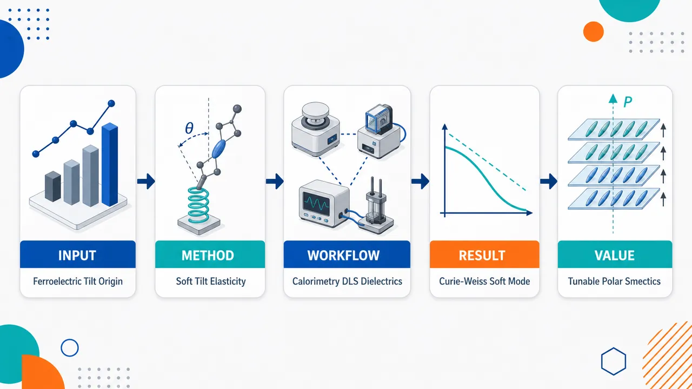
研究问题高极性液晶 MIO 为什么不形成 DIO 式铁电向列终相，而是在层状铁电 SmA_F 中自发产生分子倾斜并转变为 SmC_F？核心是揭示 SmA_F–SmC_F 相变的本质：倾斜是突变产生，还是由某个弹性软模连续变软驱动；铁电极化如何参与这一倾斜相变。创新方法把“分子倾斜”可视化为一个会软化的弹性自由度：倾斜弹性常数 D 随温度接近 T_AC 线性降至零，分子从垂直层面逐渐变为斜插层面；同时倾斜序参量 ψ 与层内极化分量 P⊥ 强耦合，使介电软模 m1 的强度呈 Curie–Weiss 发散。Aha 点是：SmC_F 不是普通新相，而是经典 SmA–SmC 倾斜相变的铁电版本，由“几何倾斜软化 + 极化软模发散”共同标记。工作流程输入近结构类似物 MIO 与 DIO 的分子差异：单氟/双氟取代和约 9 D 纵向偶极矩；先用偏光显微与量热确定 N–N_S–SmA_F–SmC_F 相序和二级 SmA_F–SmC_F 转变；再用 MDSC 观察无滞后、平坦相位信号和 Landau 热容行为；用 DLS 跟踪扭曲-弯曲涨落，得到 1/I₂ 与弛豫率 1/τ 随 T−T_AC 线性变化；用介电谱拟合 m1 模，得到 1/Δε ∝ T−T_AC；最终输出机制图像：层法线垂直分子在 D→0 时集体倾斜，同时产生层内极化 P⊥。关键结果MIO 相序从 DIO 的 N–N_S–N_F 改写为 N–N_S–SmA_F–SmC_F；SmA_F–SmC_F 被证实为连续二级、平均场型相变。DLS 显示倾斜弹性常数 D 线性软化，软模散射强度倒数和弛豫率均随 T−T_AC 线性趋零；介电谱显示 m1 极性软模的 1/Δε 服从 Curie–Weiss 线性规律；量热可由六阶 Landau 自由能拟合，T_AC≈358.07 K。MIO 的弯曲弹性常数 K₃≈60 pN，显著高于 RM734 和 DIO，说明弯曲畸变被强烈抑制，层状 SmC_F 路径更稳定。应用价值为设计铁电层状液晶提供清晰规则：微小氟化位置、分子刚性、长程偶极相互作用和交错配对可重排极性相稳定性；通过调控倾斜弹性常数与极化耦合，可在软物质中获得可切换的层内极化和铁电倾斜结构。该机制有助于发展低维铁电软材料、非线性光学、可调介电器件和高响应液晶功能材料。第一部分：核心概览 (Overview)
MIO 这种与经典铁电向列相材料 DIO 仅有单/双氟取代差异的高极性液晶，呈现 N–N_S–SmA_F–SmC_F 相序，取代 DIO 的 N–N_S–N_F 相序。精密量热、介电谱和动态光散射共同证明，SmA_F–SmC_F 转变是二级、平均场型相变，由倾斜弹性常数软化驱动，并伴随相关极性介电软模强度的 Curie–Weiss 型发散。该工作把铁电 SmC 相确立为经典 SmA–SmC 倾斜相变的铁电对应物，同时揭示了分子刚性、长程偶极相互作用与层状铁电相稳定性之间的细微关联。
---
第二部分：结构化快速回顾
《On the emergence of molecular tilt in a ferroelectric smectic liquid crystal with broken director-inversion symmetry》（None，）
背景
铁电向列相及相关极性介晶相打破 director-inversion symmetry，使液晶在无传统固体晶格约束下产生宏观极化。铁电 SmC 相 SmC_F 是一种分子相对层法线倾斜、且自发极化沿指向矢方向的层状极性液晶，但其倾斜起源和相变机制尚未清楚。
方法
研究对象为高极性化合物 MIO，其偶极矩约 9 D，与 DIO 结构极为相似。实验组合包括 MDSC 精密量热、宽频介电谱、Fréedericksz 转变弹性常数测量、动态光散射 DLS、偏光显微纹理和双折射测量。
结果
MIO 的相序为 N–N_S–SmA_F–SmC_F。量热显示 SmA_F–SmC_F 无滞后、相位信号平坦，符合二级相变；热容临界部分可由六阶 Landau 展开拟合。DLS 显示扭曲-弯曲模散射强度倒数和弛豫率均随 T − T_AC 线性变化，说明倾斜弹性常数 D 软化。介电谱显示相关模式 m1 的介电强度倒数满足 1/Δε ∝ T − T_AC。
讨论
SmA_F–SmC_F 相变可视为经典 SmA–SmC 倾斜相变的铁电版本；不同之处在于倾斜序参量与层内自发极化分量 P⊥ 强耦合。长程偶极相互作用抑制临界涨落，使相变表现出平均场行为。
局限
倾斜产生的微观机制仍未被直接验证；低频过程 m2 的起源未解析；分子刚性、交错配对和静电相互作用如何定量稳定 SmC_F 仍需微观理论或分子动力学模拟。
结论
MIO 中的分子倾斜源于 tilt elastic constant 的连续软化，并伴随极性软模介电响应发散。极小结构变化即可在铁电向列领域内重排相稳定性，使体系从 DIO 型 N_F 终相转向 MIO 型铁电层状 SmA_F/SmC_F 相。
---
第三部分：逐章节冷凝解析 (Section-by-Section Condensing)
Abstract
- Central system and analogy
研究对象 MIO 是高度极性的液晶分子，并且是经典铁电向列相材料 DIO 的近结构类似物；核心差异在于 MIO 出现 SmA_F–SmC_F 铁电层状相变，而非单纯铁电向列行为。摘要明确指出：*"we study the highly polar liquid crystal MIO, a close structural analogue of the prototypical ferroelectric nematogen DIO"*。
- Main phase transition identified
MIO 存在从铁电 SmA 到铁电 SmC 的相变，即 SmA_F–SmC_F，其中 SmC_F 具有分子倾斜与沿指向矢的自发极化。摘要直接给出：*"which exhibits a ferroelectric smectic A to ferroelectric smectic C (SmA_F–SmC_F) phase transition"*。
- Experimental evidence triad
量热、介电和光散射三种实验共同支持相变机制判断：*"Calorimetric, dielectric and light-scattering experiments reveal that it is a second-order phase transition with mean-field behavior"*。证据链分别对应：热容临界行为、介电软模强度发散、DLS 倾斜模软化。
- Mechanistic conclusion
相变由 tilt elastic constant 软化驱动，并伴随相关介电模式振幅发散。摘要中的机制性表述为：*"driven by the softening of the tilt elastic constant accompanied by the divergence of the amplitude of the associated dielectric mode"*。
---
I Introduction
- Liquid crystals as self-assembled ordered fluids
液晶被放在自组装与复杂性涌现的广义背景中；各向异性分子在流体中形成取向或位置有序。引言用跨尺度类比说明：*"self-assembly underpins the emergence of complexity across nature and condensed matter"*，并将液晶定义为：*"Liquid crystals (LCs) represent a prime example of self-assembly whereby anisotropic molecules can exhibit different degrees of order within a fluid phase"*。
- Nematic phase and head-to-tail invariance
普通向列相 N 只有沿任意方向 n 的取向有序，没有位置有序；由于分子两端不可区分，n 与 −n 等价，因此相为非极性。关键表述为：*"the constituent molecules only exhibit orientational order along an arbitrary direction usually described by the unit vector n"*，以及 *"the states n and −n are indistinguishable and the phase is apolar"*。
- Ferroelectric nematic phase breaks director-inversion symmetry
N_F 相中，高极性长棒状分子的偶极自发同向排列，沿指向矢产生宏观极化 P，从而打破 director-inversion symmetry。原始表述为：*"the dipoles of elongated highly polar molecules spontaneously align and give rise to a macroscopic polarization P along the director"*，并且该过程 *"breaking the aforementioned director-inversion symmetry"*。
- Magnitude of polarization comparable to solid ferroelectrics
铁电向列相的极化强度可达固体铁电体量级，约 μC/cm²。关键证据为：*"Polarization reversal measurements yield |P| values comparable to those of solid ferroelectrics (∼ μC/cm²)"*。这使软物质中无层状位置有序的长程极性成为突破性发现。
- Why N_F discovery was conceptually disruptive
在 N_F 发现前，长程极性有序通常被认为需要 smectic 类位置有序；即使已有铁电液晶，也保留 director-inversion symmetry。引言指出：*"positional order, as in smectic phases, was thought to be a fundamental prerequisite for the emergence of long-range polar order"*，并补充：*"director-inversion symmetry was always conserved"*。
- Ferroelectric nematic realm expanded rapidly
N_F 发现后，大量缺失指向矢反演对称性的极性相被发现，包括向列和近晶相，共同构成 ferroelectric nematic realm。引言表述为：*"the identification of a great number of related polar mesophases lacking director-inversion symmetry, both nematic and smectic, making up the so-called ferroelectric nematic realm"*。
- Two research directions opened by polar mesophases
研究方向之一是极性、取向和位置有序耦合带来的丰富物理现象；另一方向是相变机制及分子层级机制。引言强调：*"the coupling of polar and orientational/positional order brings about a rich phenomenology of great scientific interest"*，并指出应用潜力包括：*"nonlinear and quantum optics"*。
- Known mechanism for N–N_S transition
从非极性 N 到反铁电 splay 调制向列相 N_S 的机制已较清楚：由 splay deformation 与 electric polarization 的 flexoelectric 耦合驱动。原文为：*"the transition from the apolar N phase to an intermediate antiferroelectric splay-modulated nematic (N_S) phase is driven by the flexoelectric coupling between splay deformation and electric polarization"*。
- Known mechanism for N_TBF phase
N_TBF 铁电 twist-bend 向列相中，bend-flexoelectricity 可驱动自发手性破缺与 heliconical 结构形成。引言指出：*"bend-flexoelectricity has been found to be responsible for a spontaneous chiral symmetry-breaking transition and the formation of a heliconical structure from achiral building blocks"*。
- Main question: origin of SmC_F
核心问题是铁电 SmC 相 SmC_F 的起源；该相为倾斜 smectic 相，自发极化沿指向矢。引言给出定义：*"the ferroelectric smectic C phase (SmC_F), a tilted smectic phase with spontaneous polarization along the director"*。
- Main claim: second-order mean-field tilt transition
SmA_F–SmC_F 相变被证明为二级、平均场型，并由倾斜弹性常数软化与相关介电模振幅发散共同驱动。引言直接总结：*"we demonstrate that the SmA_F–SmC_F phase transition is second order in nature with mean-field behavior"*，以及 *"driven by the softening of the tilt elastic constant and simultaneous divergence of the amplitude of the associated dielectric mode"*。
- Chemical fine-tuning as a central theme
MIO 与其他铁电向列相分子的结构高度相似，却出现不同相序，说明微小化学变化可调控极性相稳定性。引言概括为：*"The striking similarity between the chemical structure of the studied compound and other ferroelectric nematogens that do not exhibit these phases reveals the fine-tuning of the molecular interactions that promote or suppress them"*。
---
II Materials and methods
II.1 Material
- MIO differs from DIO by monofluorination vs difluorination
MIO 与 DIO 几乎相同，关键区别是靠近 dioxane 环的 phenyl 基由单氟取代而非双氟取代。原文明确写道：*"The investigated compound is almost identical to the prototypical ferroelectric nematogen DIO, the difference being that, in the former case, the phenyl group next to the dioxane ring is monofluorinated instead of difluorinated"*。这一微小差异对应相序的显著改变。
- Large longitudinal dipole moment
MIO 偶极矩约 9 D，主要沿分子长轴方向，有利于形成沿指向矢的宏观极化。关键数值为：*"It has a dipole moment of ≈ 9 D mainly oriented along the molecular long axis"*。
- High trans-isomer purity
样品通过文献方法合成，并经二氯甲烷/甲醇混合溶剂多次重结晶，得到高度富集的反式异构体，纯度 >99% trans。证据为：*"recrystallized several times from a dichloromethane/methanol mixture to afford a highly enriched trans-isomer sample (>99% trans)"*。
---
II.2 Modulated differential scanning calorimetry (MDSC)
- MDSC provides heat capacity and phase shift
MDSC 不仅测得热容，还同步给出相位差 ϕ，用于判断相变级数。方法描述为：*"besides providing heat capacity data, simultaneously gives phase shift data ϕ that allow the determination of the order of the phase transitions"*。
- Phase-shift criterion for first- vs second-order transitions
一级相变中 ϕ 增大并可能出现尖峰；二级相变中 ϕ 出现凹陷或近乎平坦。原文判据为：*"For first-order phase transitions, ϕ grows and can show a sharp peak, while for second-order phase transitions ϕ exhibits a dip or can even appear flat"*。
- High-precision scan parameters
精密量热采用慢速升降温；论文呈现的测量扫描速率为 0.04 K/min，调制振幅 ±0.07 K，调制周期 20 s。关键实验参数为：*"Measurements at a scanning rate of 0.04 K/min presented in the paper were carried out with a modulation amplitude of ±0.07 K and a modulation period of 20 s"*。
---
II.3 Dielectric measurements
- Frequency window and dielectric definition
复介电函数测量频率范围为 10 Hz–1 MHz，定义为 ε(f)=ε′(f)−iε″(f)。原文写明：*"The complex dielectric function ε(f)=ε′(f)−iε″(f) was measured in the frequency range 10 Hz-1 MHz"*。
- Cell geometry and electrical excitation
样品置于 15 μm 厚 sandwich 玻璃池中，低电阻 ITO 电极，平行摩擦取向；阻抗分析仪振荡电压为 0.03 V rms。方法细节为：*"Measurements were performed with an Alpha-A impedance analyzer, setting the oscillator voltage to 0.03 V rms"*，以及 *"a 15 μm-thick sandwich glass cell with low-resistance ITO electrodes and parallel rubbing"*。
- Thermal protocol
样品在 N phase 中通过毛细作用灌入，随后从 130°C 以 0.25 K/min 冷却。实验条件为：*"The sample was cooled from 130°C at 0.25 K/min"*。
- Havriliak–Negami fitting with conductivity
介电弛豫过程通过含电导项的 Havriliak–Negami 公式拟合，参数包括介电强度 Δεₖ、弛豫频率 fₖ、展宽指数 αₖ, βₖ、高频介电常数 ε∞、电导参数 σ 和指数 λ。原文列出：*"the data were fitted to the Havriliak-Negami (HN) formula with a conductivity term"*，并定义：*"Δεₖ, fₖ, αₖ and βₖ are respectively the dielectric strength, relaxation frequency and broadness exponents of mode k"*。
- Fréedericksz method for elastic constants
N phase 中通过电容法获取 splay 和 bend 弹性常数绝对值；施加 ac 信号诱导 planar-to-homeotropic Fréedericksz 转变。原文为：*"Absolute values of the splay and bend elastic constants were obtained by means of the capacitance method in the N phase"*，以及 *"A planar-to-homeotropic Fréedericksz transition was induced by applying an ac signal"*。
- Voltage sweep details
电压从 0.01 V rms 到 5 V rms 变化，每次施加 ac 信号到采集电容之间延迟 20 s。具体表述为：*"varied from 0.01 V rms to 5 V rms, with a delay time of 20 s between the application of the ac signal and the acquisition of the capacitance value"*。
---
II.4 Dynamic light scattering (DLS)
- Optical setup
DLS 使用倍频二极管泵浦 Nd:YAG 激光器，波长 532 nm，功率 100 mW，经 100× 衰减。原文为：*"using a frequency-doubled diode-pumped Nd:YAG laser (532 nm, 100 mW attenuated by 100×)"*。
- Detection and correlation system
检测系统包括两个单光子 APD 探测器和数字相关器，用于获得散射光强度自相关函数。关键描述为：*"Two single-photon APD detectors (Laser Components) and a digital correlator (LS Instruments) were employed to obtain the autocorrelation function of the scattered light intensity"*。
- Mode selection by scattering geometry
入射光和探测光的方向与偏振被选择来探测不同涨落模。原文说明：*"The direction and the polarization of the incoming and detected light were chosen to probe different fluctuation modes"*。
- Autocorrelation fitting model
光强自相关函数 g₂ 拟合形式包含散射非弹性光占比 j_D、单指数场相关函数 g₁=exp(−t/τ) 和基线 y₀。原文为：*"g₁ is a single exponential function g₁=exp(−t/τ)"*。
- Relaxation rate attributed to orientational eigenmode
弛豫率 1/τ 对应取向涨落本征模，波矢 q 等于散射矢量 qₛ。关键句为：*"The relaxation rate 1/τ was attributed to the chosen eigenmode of orientational fluctuations with the wavevector q equal to the scattering vector qₛ"*。
- Scattered intensity extraction and cell thickness
模式散射强度取 j_D Iₜₒₜ，所有 DLS 实验在 15 μm 厚 planar 玻璃池中完成。原文为：*"The scattered intensity of a given mode was determined as a product j_D Iₜₒₜ"*，以及 *"All experiments were done in 15 μm-thick planar glass cells"*。
---
III Results and discussion
- Minute fluorination change switches phase sequence
DIO 与 MIO 的氟化模式差异极小，却使相序从 N–N_S–N_F 改为 N–N_S–SmA_F–SmC_F。原文清晰指出：*"The minute difference in the fluorination pattern between the prototypical ferroelectric nematogen DIO and the studied material MIO alters the phase sequence from N–N_S–N_F to N–N_S–SmA_F–SmC_F"*。这直接体现分子相互作用的精细调控。
- Analogy with RM734 chemical sensitivity
RM734 中终端 nitro 被 cyano 替换会完全阻止 N_F 相形成，说明铁电向列领域中微小化学修饰可导致相行为剧变。原文比较为：*"in the well-studied case of RM734... the substitution of the terminal nitro group by a cyano group prevents the formation of the N_F phase altogether"*。
- POM textures reveal alignment and tilt development
15 μm planar cell 中，N 和 SmA_F 相具有较高消光比，表明指向矢取向良好；N_S 和 SmC_F 相消光变差，SmC_F 中因倾斜形成而完全失去消光。原文为：*"a high extinction ratio is observed in both the N and SmA_F phases, suggesting a good alignment of the director n"*，以及 *"extinction is completely lost in the latter case due to the development of the tilt"*。
- Calorimetry classifies all major transitions
热容测量显示 N–N_S 转变为极弱一级，N_S–SmA_F 似乎也是弱一级但焓变更大，SmA_F–SmC_F 为二级相变。关键证据为：*"the transition from the N to the antiferroelectric splay-modulated N_S phase is very weakly first order"*，*"The N_S–SmA_F transition also seems to be weakly first-order but with a higher associated enthalpy change"*，以及 *"the SmA_F–SmC_F transition... is second-order"*。
- Second-order assignment based on profile, hysteresis, and phase shift
SmA_F–SmC_F 的二级性质来自热容曲线形状、无滞后、相位差平坦。原文证据链为：*"as deduced from the curve profile, the lack of hysteresis and the flat behavior of the phase shift"*。
- Dielectric measurements probe perpendicular permittivity
介电谱在 15 μm planar cell 中进行，因此测量的是垂直分量 ε⊥。原文为：*"These experiments were performed in a 15 μm-thick planar cell, so we measured the perpendicular component of permittivity ε⊥"*。
- m1 mode: molecular short-axis rotation becoming collective
高温 N 相中，m1 被归因于分子绕短轴旋转，降温后逐渐集体化。原文为：*"In the high-temperature N phase, m1 is attributed to the rotation of molecules around their short axis, which becomes collective as the temperature is lowered"*。
- MIO dielectric behavior resembles DIO more than RM734 near N_S
RM734 中 m1 是导致 N_S 和 N_F 的软模，表现为振幅发散和临界减速；MIO 更像 DIO，没有清晰的临界行为。原文比较为：*"In RM734, this is the soft mode that leads to the N_S and N_F phases... and exhibits a diverging amplitude and a critical slowing down"*，但 MIO 中：*"the situation is more similar to DIO, where there is no clear critical behavior"*。
- m1 softens at N_S–SmA_F and SmA_F–SmC_F transitions
m1 在 N_S–SmA_F 转变处表现出典型软模行为；更低温处，在 SmA_F–SmC_F 转变处再次出现软模行为。原文为：*"m1 does exhibit the typical soft-mode behavior at the N_S–SmA_F transition"*，以及 *"Further down in temperature, m1 again exhibits soft-mode behavior at the SmA_F–SmC_F transition"*。
- SmA_F dielectric behavior differs from N_F because PCG confinement mechanism does not apply
N_F 相中巨大介电常数可能源于受限条件下 Goldstone 模和外部电容耦合的 PCG model；SmA_F 中旋转黏度 γ₁ 预计更大，因此该机制不适用。原文为：*"the colossal dielectric constants of the N_F phase are caused by the behavior of the Goldstone mode... under confinement"*，并指出 SmA_F 中：*"the rotational viscosity γ₁ is expected to be much larger and, thus, the PCG mechanism does not apply"*。
- m2 process in N_S phase remains unresolved
N_S 相中出现低频过程 m2，强温度依赖暗示其与某种集体偶极涨落有关，但起源超出研究范围。原文为：*"a lower-frequency process m2 was identified"*，以及 *"Its strong temperature dependence... suggests that m2 is associated to some kind of collective dipolar fluctuation, but its origin is out of the scope of this paper"*。
- DLS analyzes N–N_S transition via orientational fluctuations
取向涨落是指向矢场的基本流体动力学激发，包含 splay-bend 和 twist-bend 两条色散分支。原文为：*"These orientational fluctuations are the fundamental hydrodynamic excitations of the director field and have two dispersion branches: splay-bend and twist-bend"*。
- Pure-mode DLS gives K/η and intensity scaling
通过合适散射几何可测纯模，其弛豫率满足 1/τ = Kᵢ q²/ηᵢ，强度满足 I ∝ (Δεₒₚₜ₎²/(Kᵢ q²)。原文公式性描述为：*"pure modes can be measured with relaxation rates 1/τ=Kᵢ q²/ηᵢ and intensities I∝(Δεₒₚₜ₎²/Kᵢ q²"*。
- Viscosity relations include backflow effects
twist 黏度等于旋转黏度 η₂=γ₁；splay 和 bend 黏度受 backflow 影响，分别为 η₁=γ₁−α₃²/η_b 和 η₃=γ₁−α₂²/η_c。原文为：*"While twist viscosity equals rotational viscosity η₂=γ₁, the values of bend and splay viscosities are affected by backflow"*。
- Elastic constants obtained by combining DLS, birefringence, and Fréedericksz transition
双折射 Δn 用于获得光频介电各向异性 Δεₒₚₜ 的温度依赖；Fréedericksz 转变给出 K₁ 和 K₃ 绝对值；K₂ 通过 K₁/η₁ 与 K₂/η₂ 比值并假设 splay backflow 可忽略得到。原文为：*"we measured the birefringence Δn with a Berek compensator"*，*"determined the absolute values of K₁ and K₃ at a reference temperature from the measurement of the Fréedericksz transition"*，以及 *"K₂ was obtained... assuming that, in the case of splay, the backflow is negligible"*。
- Splay and twist diffusivities decrease near N_S, bend diffusivity remains constant
降温接近 N_S 时，bend diffusivity 几乎不变，而 splay 和 twist diffusivity 显著降低。原文为：*"while the bend diffusivity stays practically constant as the temperature is lowered, both splay and twist diffusivites strongly decrease close to the transition to the N_S phase"*。
- Splay softening quantified: K₁ drops from 1.6 pN to 0.7 pN
K₁ 从 126°C 时的 1.6 pN 降至转变前约 0.7 pN。原文给出精确数值：*"K₁ reduces its value from 1.6 pN at 126°C to around 0.7 pN right before the transition"*。这支持 N–N_S 中 splay-flexoelectric 软化图景。
- No pretransitional increase of K₁ observed in MIO
DIO 中曾观察到 K₁ 临界前增加，但 MIO 中没有。原文为：*"we do not observe a pretransitional increase in K₁ which was identified in DIO"*。
- K₂ comparable to K₁ but stable or increasing near N_S
K₂ 数值与 K₁ 类似，但整体更稳定，并在接近 N_S 时增加。原文为：*"K₂, on the other hand, is similar in value to K₁ but stays more or less constant and increases close to the N_S phase"*。
- K₃ is unusually large: ∼60 pN
MIO 的 bend 弹性常数 K₃ ≈ 60 pN，远高于 RM734 的 ∼12 pN 和 DIO 的 ∼6 pN。原文为：*"K₃ also stays more or less constant, but has a remarkably high value of ∼60 pN"*，并比较：*"In RM734, its value was ∼12 pN while in DIO it was ∼6 pN"*。
- Large K₃ suggests stiffness and suppressed bend distortions
高 K₃ 被解释为 MIO 分子刚性较高，或分子间相关强烈抑制 bend 畸变，或两者兼有。原文表述为：*"we suggest it is related to the stiffness of the MIO molecule, as well as to the presence of strong intermolecular correlations in the system, which strongly disfavor bend distortions"*。
- High K₃ helps rationalize smectic tendency
bend 畸变受抑制使体系更倾向层状相。原文指出：*"It should then come as no surprise that the system tends towards the formation of smectic phases"*。
- Classical SmA–SmC theory provides analogy
de Gennes 预言经典 SmA–SmC 转变应为连续二级，并表现 helium-like 临界行为。原文为：*"Pierre G. de Gennes predicted that it should be continuous (second-order) and exhibit helium-like critical behavior"*。
- Tilt order parameter ψ=ωeⁱφ
倾斜相变序参量为二维复序参量 ψ=ωeⁱφ，其中 ω 是倾角，φ 是方位角。原文定义：*"He introduced the bidimensional order parameter ψ=ωeⁱφ, where ω is the tilt angle of the molecules and φ defines their azimuthal position"*。
- Ferroelectric counterpart: P⊥ as secondary order parameter
在 SmA_F–SmC_F 中，若自发极化大小已饱和，倾斜会产生垂直于层法线的极化分量 P⊥，且 |P⊥| ∝ |ψ|。原文为：*"the development of the tilt leads to a secondary order parameter P⊥"*，以及 *"|P⊥|∝|ψ| and they are interchangable"*。
- Mean-field behavior expected due to long-range dipolar interactions
铁电体中的长程偶极相互作用通常抑制临界涨落，因此 MIO 的 SmA_F–SmC_F 转变应表现平均场行为。原文为：*"mean-field behavior would be expected in the present case since long-range dipolar interactions in ferroelectrics typically suppress critical fluctuations"*。
- Landau sixth-order free energy describes calorimetry
自由能展开为 F = at|ψ|² + b|ψ|⁴ + c|ψ|⁶，其中 t=(T−T_AC)/T_AC，a,b,c 为正常数。原文为：*"This behavior can be nicely explained with a simple Landau expansion of the free energy up to sixth order in |ψ|"*。
- Critical heat capacity fit parameters
热容临界部分拟合得到 A=(5.45±0.04)×10⁻⁴ J g⁻¹ K⁻³/²，Tₘ₌₃₆₈.2±0.2 K。原文数值为：*"we obtain A=(5.45±0.04)×10⁻⁴ J g⁻¹ K⁻³/² and Tₘ₌₃₆₈.2±0.2 K"*。
- Transition temperature and t₀ value
取热容跃迁中点为 T_AC=358.07 K，得到 t₀=8.5×10⁻²。原文为：*"Taking T_AC at the midpoint of the heat-capacity jump, then T_AC=358.07 K and, thus, t₀=8.5×10⁻²"*。
- t₀ closer to solid ferroelectric TGS than classical SmA–SmC materials
经典 SmA–SmC 化合物中 t₀∼10⁻³，而 MIO 的 8.5×10⁻² 更接近三甘氨酸硫酸盐 TGS 等固体铁电体。原文为：*"For compounds exhibiting the classical SmA–SmC transition, t₀∼10⁻³"*，并指出：*"our value of t₀ is closer to that of the latter"*。
- Tilt elastic constant D softens linearly at transition
若相变由倾斜弹性常数软化驱动，则 D ∝ (T−T_AC)。原文为：*"If the SmA_F–SmC_F transition is driven by the softening of the tilt elastic constant, then at is evidently connected to the tilt elastic constant D, which goes to zero at the transition as D∝(T−T_AC)"*。
- DLS intensity criterion isolates D behavior
扭曲-弯曲模强度满足 I₂ ∝ (Δεₒₚₜ₎² / [D + K₂q⊥² + K₃q∥²]；若 qξ<1 且 K₂q⊥²+K₃q∥²<D，散射强度只反映 D。原文为：*"the intensity of this mode becomes I₂∝(Δεₒₚₜ₎²/(D+K₂q⊥²+K₃q∥²)"*，以及 *"the scattering intensity reflects only the behavior of D"*。
- Birefringence remains constant near SmA_F–SmC_F
双折射显示 Δεₒₚₜ 在相变附近几乎不变，因此预期 1/I₂ ∝ (T−T_AC)。原文为：*"Δεₒₚₜ remains practically constant in the vicinity of the SmA_F–SmC_F transition, so we should observe the behavior 1/I₂∝(T−T_AC)"*。
- DLS confirms soft tilt mode: intensity inverse and relaxation rate linear
对应软模弛豫率 1/τ=D/η，若黏度规律，1/τ∝(T−T_AC)；实验正是观察到这种行为。原文为：*"the corresponding relaxation rate of this soft mode is 1/τ=D/η"*，以及 *"This is precisely what we observed in our measurements"*。
- Soft mode becomes visible only near T_AC
远离转变时 D 大，分子保持垂直于层，模式快且散射弱；接近 T_AC 时 D→0，DLS 中可观测。原文为：*"far from the transition... D is large in order to maintain the molecules normal to the smectic layers"*，以及 *"as the SmA_F–SmC_F is approached, D goes to zero and becomes observable"*。
- Dielectric soft mode couples tilt to polar order
与经典 SmA–SmC 不同，铁电 SmA_F–SmC_F 中倾角涨落与极性序强耦合，|ψ| 涨落意味着 |P⊥| 涨落。原文为：*"tilt angle fluctuations are coupled to the polar order (fluctuations in |ψ| imply fluctuations in |P⊥|)"*。
- Dielectric strength follows Curie–Weiss mean-field behavior
介电模式 m1 的强度满足 1/Δε ∝ (T−T_AC)，即 Curie–Weiss 平均场行为。原文为：*"it follows Curie-Weiss mean-field behavior 1/Δε∝(T−T_AC)"*。
- Classical ferroelectric thermodynamic slope relation is not obeyed
传统铁电热力学预言低温侧斜率应为高温侧两倍，但 MIO 不满足；经典铁电 SmC* 液晶也曾出现类似偏离。原文为：*"1/Δε obviously does not follow the classical prediction... the slope of the low-temperature side should be twice that of the high-temperature one"*，以及 *"this also was not the case in classical ferroelectric SmC* LCs"*。
- Relaxation frequency linear in SmA_F but affected by viscosity in SmC_F
fₐ 在 SmA_F 相中随温度呈良好线性；SmC_F 中行为可能由黏度增加解释。原文为：*"fₐ also nicely follows a linear dependence in the SmA_F phase"*，以及 *"The behavior in the SmC_F phase may be explained by an increase in viscosity"*。
- Microscopic origin likely staggered pairing becoming collective
分子动力学模拟暗示，倾斜起源最可能是交错配对倾向变为集体行为。原文为：*"molecular dynamics simulations suggest that the origin of the tilt is most likely the tendecy for staggered pairing which becomes collective"*。
- Specific electrostatic interactions likely matter
MIO 与 DIO 几乎相同，而 DIO 不出现 smectic 相，因此特定静电相互作用可能决定倾斜层状相。原文为：*"It would not be surprising that specific electrostatic interactions are behind this phenomenon, given that MIO is structurally almost identical to DIO and the latter does not exhibit either smectic phase"*。
- Large bend elasticity explains absence of heliconical alternatives
高 K₃ 表明分子直而刚或相互作用抑制 bend 畸变，从而解释 MIO 形成 SmC_F，而非 heliconical SmC_P^H 或 N_TBF。原文为：*"This then explains why MIO exhibits the SmC_F phase and not the heliconical SmC_P^H or N_TBF phases"*。
---
IV Conclusions
- MIO demonstrates phase-sequence sensitivity to subtle molecular changes
MIO 虽与 DIO 结构相似，却呈现 N–N_S–SmA_F–SmC_F 相序，说明极小分子修改即可显著改变极性液晶相的竞争平衡。结论写道：*"Despite its structural similarity with the prototypical ferroelectric nematogen DIO, this compound exhibits the phase sequence N–N_S–SmA_F–SmC_F"*，并指出：*"subtle molecular modifications can dramatically alter the balance between competing polar liquid-crystalline states"*。
- Precision calorimetry establishes continuous mean-field transition
精密量热证明 SmA_F–SmC_F 为连续相变，且具有平均场临界行为。原文为：*"Precision calorimetry has demonstrated that the transition is continuous and exhibits mean-field critical behavior"*。
- Light scattering identifies the driving soft elastic mode
光散射实验显示，相变由倾斜弹性常数软化驱动。结论表述为：*"Light-scattering experiments have shown that the transition is driven by the softening of the tilt elastic constant"*。
- Dielectric spectroscopy confirms polar soft-mode divergence
介电谱显示相关极性弛豫过程介电强度呈 Curie–Weiss 型发散，证明倾斜与铁电序紧密耦合。原文为：*"dielectric spectroscopy reveals a Curie–Weiss-like divergence of the dielectric strength of the associated polar relaxation process"*，以及 *"evidencing the intimate coupling between tilt and ferroelectric order"*。
- SmA_F–SmC_F is the ferroelectric counterpart of classical SmA–SmC
该相变被识别为经典 SmA–SmC 相变的铁电对应物，但由于自发极化与长程偶极作用而发生修饰。原文为：*"these observations identify the SmA_F–SmC_F transition as the ferroelectric counterpart of the classical SmA–SmC transition, modified by the presence of spontaneous polarization and long-range dipolar interactions"*。
- Molecular rigidity and strong correlations may favor SmC_F over modulated phases
MIO 分子刚性和/或强分子间相关抑制 bend 畸变，因此可能使体系选择 SmC_F，而非 SmC_P^H 或 N_TBF。结论为：*"the molecular rigidity of MIO and/or the presence of strong intermolecular correlations in the system, which strongly disfavor bend distortions, explain why the compound exhibits the SmC_F phase as opposed to modulated SmC_P^H or N_TBF phases"*。
- Microscopic theory and simulations remain necessary
分子层级解释仍未最终建立，需要微观模型或分子动力学模拟。原文明确保留：*"further theoretical work through the development of microscopic models, or computational work through molecular dynamics simulations, will be required to establish this"*。
---
第四部分：深度理解与语言支持 (Understanding & Nuance)
1. 术语解析
- Broken director-inversion symmetry
指液晶中 n 与 −n 不再等价。普通向列相只有轴向取向，无头尾之分；铁电向列或铁电 smectic 相中，分子偶极沿同一方向排列，给指向矢赋予“箭头”。该表达比单纯 “polar order” 更强调对称性层面的破缺。
- Softening of the tilt elastic constant
softening 不只是“变软”的口语表达，而是指某个恢复力常数趋近于零。这里的 tilt elastic constant D 是抵抗分子相对 smectic 层法线倾斜的弹性代价；当 D→0，垂直排列不再稳定，倾斜自发出现。
- Dielectric strength divergence
Δε 表示某个介电弛豫模对介电常数的贡献。divergence 表示在临界点附近急剧增大，理想临界形式中可趋于无穷。这里的 1/Δε ∝ T−T_AC 等价于 Δε ∝ 1/(T−T_AC)，是典型 Curie–Weiss 型软模响应。
- Mean-field behavior
平均场行为表示临界指数和温度依赖可由 Landau 理论描述，临界涨落不占主导。此处长程偶极相互作用抑制局域涨落，因此热容、DLS、介电响应均接近线性或 Landau 型形式。
- Staggered pairing
指相邻分子不是完全平行重叠排列，而是沿分子长轴方向错位配对。这种局部排布可能降低静电能或空间排斥能；当这种局部倾向集体化，就可能在层状相中诱导统一分子倾斜。
2. 疑难查证：SmA_F–SmC_F 为什么既像经典 SmA–SmC，又不同于经典 SmA–SmC？
经典 SmA 相中，分子平均方向垂直于层；经典 SmC 相中，分子相对层法线倾斜。核心序参量是倾角 ω 加方位角 φ，写成 ψ=ωeⁱφ。
MIO 的 SmA_F–SmC_F 保留了这一几何结构：从不倾斜层状相变为倾斜层状相，因此可直接类比经典 SmA–SmC。
差异在于铁电性。MIO 分子具有强纵向偶极，SmA_F 中已经有沿指向矢的自发极化。当分子从层法线方向倾斜时，自发极化也随指向矢倾斜，于是出现层内极化分量 P⊥。因此倾斜不只是几何序参量，还同时改变极化方向与介电响应。
这解释了两个实验事实：
- DLS 看到倾斜弹性常数软化：几何倾斜自由度变软。
- 介电谱看到 Δε 发散：同一倾斜自由度携带极化涨落，所以电场能强烈耦合到该软模。
因此，SmA_F–SmC_F 是“经典倾斜相变 + 铁电极化耦合 + 长程偶极相互作用”的混合问题。
---
第五部分：创新评估与关联 (Synthesis & Novelty)
1. 创新性判断
- 从“发现相”推进到“确定机制”
2024 年左右已有铁电 SmC 或极性层状相报道，但倾斜如何产生、相变属于一级还是二级、是否存在软模驱动仍不清楚。该工作用 MDSC + DLS + dielectric spectroscopy 建立闭合证据链，把 SmA_F–SmC_F 定义为由 tilt elastic constant softening 驱动的连续平均场相变。
- 首次把铁电 SmC_F 明确纳入经典 SmA–SmC 框架的铁电对应物
经典 SmA–SmC 的倾斜序参量理论已有长期基础，但 MIO 中的倾斜还与 P⊥ 极化分量耦合。该工作把二者统一：几何序参量 ψ 与极性响应 Δε 同时临界，形成铁电版本的 SmA–SmC 相变图像。
- 提供“微小氟化差异导致相序重排”的强案例
DIO 与 MIO 结构近似，仅氟取代模式不同；DIO 出现 N–N_S–N_F，MIO 出现 N–N_S–SmA_F–SmC_F。这比单纯合成新材料更重要，因为它揭示铁电向列领域相稳定性对分子静电分布、刚性和局部配对极端敏感。
- 连接弹性常数异常与相选择
MIO 的 K₃∼60 pN 明显高于 RM734 的 ∼12 pN 和 DIO 的 ∼6 pN。这一高 bend 弹性常数为解释为何体系不走 N_TBF 或 heliconical 路径，而选择层状 SmC_F，提供了实验约束。
- 解决前人未充分解决的问题
前期研究较多集中在 N_F 相的介电异常、厚度效应、Goldstone 模、N–N_S 转变的 flexoelectric 机制，以及新极性 smectic 相的现象学发现。该工作补上了铁电 smectic C 倾斜产生机制的关键空白：
倾斜弹性常数 D 连续软化 → 倾斜角涨落增强 → P⊥ 极化涨落增强 → 介电强度 Curie–Weiss 发散 → 平均场二级 SmA_F–SmC_F 相变。
-
09
💡 亮点：位错量子可与磁绝缘体磁振子杂化。
📖 展开分析 + 配图
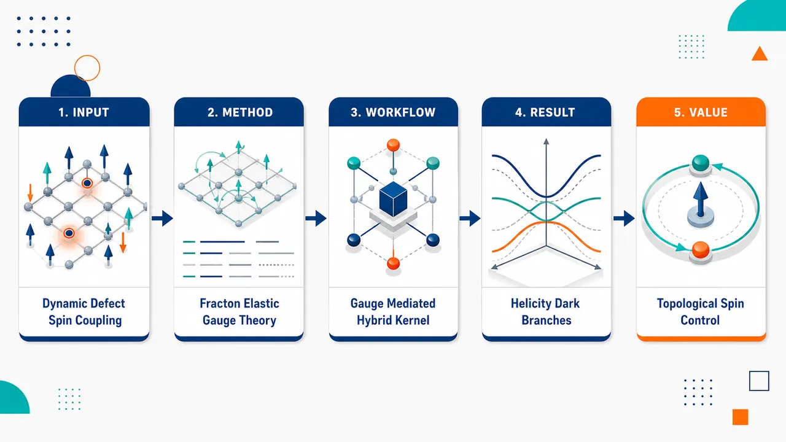
研究问题磁绝缘体中的晶格位错是否不仅是静态散射缺陷，而能作为携带 Burgers 拓扑荷的量子化动力学线缺陷，与磁振子发生相干杂化，并在谱线与偏振中留下区别于普通磁振子—声子耦合的拓扑指纹。创新方法将位错振动量子 dislon 纳入磁动力学，利用 fracton–elasticity duality 把含位错弹性体改写为反对称 rank-2 Kalb–Ramond 规范场；位错世界面流与磁化梯度共同作为规范场源，积分掉弹性规范场后得到由 Burgers 矢量和滑移约束控制的非局域 current–current 磁振子—位错振子耦合。Aha 点是：位错从“缺陷背景”变成可与自旋波交换谱权重的拓扑量子准粒子。工作流程输入为含直线螺位错或刃位错的铁磁绝缘体、饱和 z 轴磁化、Burgers 矢量和磁弹参数；先把应变分解为规则部分与奇异位错部分，再用 rank-2 弹性规范场表示应力—动量守恒；随后写出位错 Kalb–Ramond 源流和磁化梯度源流，精确积分掉规范场；最后在线性涨落下构造磁振子与 dislon 的耦合核，求解杂化模谱函数、avoided crossing、螺旋度选择规则和椭圆进动。关键结果螺位错保持轴向旋转对称性，只允许特定圆偏振 dislon 与磁振子杂化，产生 avoided crossing、谱权重转移和杂化能隙，而相反螺旋度分支成为对称性保护的 dark dislon branch；刃位错因 Burgers 矢量破坏横向旋转对称性且受滑移约束，均匀磁振子不耦合，有限横向动量磁振子与单一滑移 dislon 形成三分支杂化，并在共振附近显著产生自旋进动椭圆率重分配。应用价值提出一种通过动力学拓扑缺陷调控自旋波的新型混合玻色平台，可用位错类型、Burgers 矢量和滑移约束选择性控制磁振子偏振、能隙和局域模式；其螺旋度暗模与椭圆进动可作为实验识别标志，并可通过非弹性中子散射、布里渊光散射、NV 磁成像和 STEM-EELS 在位错芯附近探测。第一部分：核心概览 (Overview)
该研究建立了磁绝缘体中磁振子—位错振子（magnon–dislon）相干杂化的微观场论，把位错从静态散射中心提升为携带 Burgers 拓扑荷的动力学量子缺陷。借助fracton–elasticity duality，弹性规范场介导磁化梯度与位错流之间的非局域耦合。核心地位在于：区别于传统磁振子—声子极化子，该机制预言了由位错拓扑决定的可观测谱学指纹，包括螺位错的螺旋度选择性杂化与暗位错振子分支，以及刃位错的滑移约束诱导自旋进动椭圆率。
---
第二部分：结构化快速回顾
《Magnon-dislon hybridization in magnetic insulators》（None，）
背景
有序磁体中的磁振子控制自旋与热输运；晶格位错通常被当作静态缺陷，但其量子化振动——dislons——可作为独立集体激发。已有研究覆盖电子—位错振子、声子—位错振子相互作用，磁激发与位错振子的相干耦合仍缺失。
方法
采用fracton–elasticity duality，将含位错弹性理论改写为反对称 rank-2 Kalb–Ramond 规范场理论；位错流与磁化梯度分别作为规范场源。积分掉弹性规范场后，得到磁化场与位错世界面之间的非局域有效相互作用。
结果
螺位错保持轴向旋转对称性，产生helicity-selective hybridization：一个圆偏振位错振子与磁振子杂化，另一个成为symmetry-protected dark dislon branch。刃位错因 Burgers 矢量破坏横向旋转对称性，并受glide constraint限制，只允许滑移极化位错振子与有限横向动量磁振子杂化，导致混合模出现有限spin-precession ellipticity。
讨论
杂化谱表现为 avoided crossing、谱权重转移和极化重分配。与普通磁振子—声子耦合相比，区别性特征来自位错几何与拓扑：螺位错给出螺旋度选择规则，刃位错给出椭圆进动。
局限
理论集中于干净磁绝缘体、弱阻尼、线性涨落、准一维沿位错传播模式，并主要处理理想直位错；阻尼通过参数 η 现象学引入，未给出具体材料级数值拟合或实验验证。
结论
动力学拓扑缺陷可作为磁材料中一类新的混合玻色激发平台；magnon–dislon hybridization提供了通过位错拓扑控制自旋动力学的新路线。
---
第三部分：逐章节冷凝解析 (Section-by-Section Condensing)
Abstract
- Dynamical topological defects become spin-active quasiparticles
有序磁体中的拓扑晶格缺陷不再只是静态势场，而被处理为可量子化的动力学对象；研究对象是磁绝缘体中磁振子与位错振子的耦合。核心起点是：*"Spin dynamics in ordered magnets with topological lattice defects is investigated."* 这一定义把问题限定在有序磁体、拓扑晶格缺陷和自旋动力学三者交汇处。
- Fracton–elasticity duality supplies the effective field theory
理论框架使用fracton–elasticity duality构造磁振子与量子化位错的有效场论；位错振子被称为 dislons。关键表述为：*"Using fracton–elasticity duality, we develop an effective field theory of magnons coupled to quantized lattice dislocations (dislons) in magnetic insulators."* 这表明弹性缺陷的动力学通过高阶规范理论语言进入磁动力学。
- Elastic gauge field mediates nonlocal magnetization–dislocation coupling
弹性规范场在位错与磁化梯度之间产生非局域相互作用，不是局域的普通磁弹耦合。证据为：*"Within this framework, an elastic gauge field mediates a nonlocal interaction between dislocations and magnetization gradients."* 非局域性来自积分掉弹性规范场后的传播子。
- Hybridization signatures depend on dislocation topology
杂化性质受位错拓扑支配，尤其由 Burgers 矢量与位错类型决定。抽象层面的总括是：*"The resulting magnetoelastic coupling gives rise to coherent magnon–dislon hybridization whose properties are dictated by dislocation topology."*
- Screw and edge dislocations yield distinct polarization fingerprints
螺位错产生螺旋度选择性杂化和受对称性保护的暗位错振子部门；刃位错通过滑移约束产生各向异性混合激发和有限自旋进动椭圆率。原文给出精确区分：*"Screw dislocations exhibit helicity-selective hybridization and symmetry-protected dark dislon sectors, while edge dislocations generate anisotropic hybrid excitations with finite spin-precession ellipticity through the glide constraint."*
---
Introduction.–
- Quasiparticles define the internal dynamics of condensed matter systems
集体激发被组织为准粒子，例如晶体中的声子、电子液体中的等离激元、Dirac/Weyl 材料中的拓扑准粒子。关键依据是：*"Collective excitations in interacting many-body systems lie at the heart of condensed matter physics."* 以及 *"They are naturally described in terms of emergent quasiparticles that encode the internal dynamics of matter, such as phonons in crystals, plasmons in electron liquids, or topological quasiparticles in Dirac and Weyl materials."*
- Crystalline defects are topological singularities, not removable perturbations
晶格缺陷因拓扑奇异性不能通过光滑形变消除，可重塑能谱、诱导束缚态并改变输运。原文为：*"defects represent topological singularities of the lattice that cannot be removed by smooth deformations and can strongly reshape spectra, induce bound states, and modify transport."* 这一点奠定了缺陷作为谱学与拓扑结构基本组成部分的地位。
- Magnons provide a magnetic platform for bosonic band topology
有序磁体中的磁振子是自旋波量子，控制自旋与热输运，也是玻色能带拓扑的重要平台。证据是：*"In ordered magnets, magnons, the quanta of spin-wave excitations, govern spin and thermal transport and provide a paradigmatic platform for bosonic band topology."*
- Dislocations carry Burgers-vector topology and can support robust modes
位错是线缺陷，由晶格不连续性定义，携带 Burgers vector 与相关奇异性；在电子、光子和声学系统中可承载缺陷束缚态和一维拓扑模。原文指出：*"Dislocations–line defects characterized by a discontinuity in the lattice–introduce an intrinsically topological background through their Burgers vector and associated singularity."* 以及 *"they can host robust defect-bound states and one-dimensional modes protected by lattice topology."*
- Magnon spectra are expected to be reshaped by dislocation topology
位错可在无无序条件下重塑磁振子谱并产生局域自旋波模。关键句为：*"Similar mechanisms are expected to reshape magnon spectra and generate localized spin-wave modes, even in the absence of disorder."* 这把电子/声学拓扑缺陷模机制推广到磁振子系统。
- Dislons provide a many-body description of dislocation dynamics
Dislon 是量子化位错振动，用于在多体理论中描述位错动力学。原文为：*"The quantized dislocation vibrations–dislons–provide a microscopic framework for describing dislocation dynamics within many-body theory."* 相关既有工作集中在电子和声子相互作用：*"While dislon interactions with electrons and phonons have been explored, their coupling to magnetic excitations remains largely unexplored."*
- Topological mobility constraints motivate the fracton formulation
位错运动满足 Burgers 矢量守恒、滑移—攀移不对称等约束；这些约束在 fracton–elasticity duality 中自然体现，位错对应高阶规范理论的偶极荷。证据是：*"dislocation motion obeys topological constraints, such as Burgers-vector conservation and glide–climb asymmetry"*，并且 *"dislocations correspond to dipolar charges of higher-rank gauge theories."*
- Central advance is placing dislons on equal footing with established hybrid magnon platforms
已有混合磁振子平台包括光子、声子、其他磁振子等；位错振子耦合尚未探索。原文对定位非常明确：*"While hybrid magnon platforms involving photons, phonons, and other magnons are well established, coupling to dislons has not been explored."* 因此该机制构成一种新的混合玻色激发类别。
- Distinctive observable signatures are polarization-based
主要可观测指纹包括helicity-selective hybridization、dark dislon branches、glide-induced ellipticity。原文为：*"Our work identifies distinct signatures of dynamical topological defects, including helicity-selective hybridization, dark dislon branches, and glide-induced ellipticity, thereby establishing magnon-dislon hybridization as a distinct class of hybrid bosonic excitation."*
---
Magnetic and elastic theory.–
- System geometry contains a ferromagnetic crystal with embedded dislocation defects
基本模型是含嵌入位错缺陷的三维铁磁晶体；位错由时空曲线 (R^μ(s,t)) 描述，其中 (s) 参数化缺陷线，(μ=0) 为时间坐标，(μ=1,2,3) 为空间坐标。原文为：*"We consider a ferromagnetic crystal containing embedded dislocation defects"*；并且 *"The dislocation is described by the space-time dependent curve (Rμ(s,t)), where (s) parametrizes the defect line, while (μ=0) and (μ=1,2,3) denote the temporal and spatial coordinates, respectively."*
- Transverse fluctuations define dislon fields
位错线的横向涨落就是位错振子的场自由度，并允许其与磁振子耦合。证据为：*"Fluctuations of this curve describe transverse vibrations which define the dislon field and enable their coupling to magnons."*
- Burgers vector is a conserved topological charge
每条位错携带 Burgers 矢量 (mathbf b)，表征晶格畸变并作为守恒拓扑荷。原文为：*"Each dislocation carries a Burgers vector (bmb) that characterizes the lattice distortion and acts as a conserved topological charge."*
- Total action combines magnetoelastic and magnetic sectors
总作用量为
[
mathcal S_T=mathcal Sₑₗ₋ₘ+mathcal Sₘ
]
体系体积为 (V=LₓL_yL_z)。弹性—磁弹部分为
[
mathcal Sₑₗ₋ₘ=frac12int dmathbf xdt[h̊oₘ̊ ₑₗ(partialₜmathbf u)²⁻⁽Cⁱjklǎrepsilonᵢⱼ+2Σkl)ǎrepsilonₖₗ]
]
原文直接给出：*"(a̧l ST=a̧l Sₑₗ₋ₘ+a̧l Sₘ), in a 3D crystal with volume (V=LₓL_yL_z)."*
- Magnetoelastic coupling enters through (Σkl[m])
应变张量为 (ǎrepsilonᵢⱼ=(partialᵢ uⱼ₊partialⱼ uᵢ₎/2)，磁化单位矢量满足 (|mathbf m|=1)，磁弹耦合由
[
Σkl[mathbf m]=Bⁱjklmᵢₘⱼ
]
给出。证据为：*"The magnetoelastic coupling between strain and magnetization field (bmm), satisfying (|bmm|=1), enters through (Σkl[bmm]=Bⁱjklmᵢ mⱼ)."*
- Magnetic dynamics includes Berry phase and micromagnetic energy
磁化作用量为
[
mathcal Sₘ₌ᵢₙₜ dmathbf xdt(mathcal K[mathbf m]-mathcal E[mathbf m])
]
微磁能为
[
mathcal E=A(nablamathbf m)²⁻Km_z²⁻μ₀MₛHm_z
]
其中 (A) 为交换刚度，(K>0) 为易轴各向异性，外场 (H) 沿 (z) 方向。原文为：*"In the micromagnetic approximation the magnetic energy density is (E[bmm]=A(nablabmm)²⁻Km_z²⁻μ₀MₛHm_z)."*
- Strain decomposition separates regular and singular topology
应变被分解为
[
ǎrepsilonᵢⱼ=barϵᵢⱼ+(partialᵢtilde uⱼ₊partialⱼtilde uᵢ₎/2
]
其中 (tilde uᵢ) 光滑单值，(barϵᵢⱼ) 含缺陷拓扑。原文为：*"It is useful to decompose the strain tensor into regular and singular parts"*，并说明 *"(tildeuᵢ) is smooth and single-valued, whereas (barϵᵢⱼ) contains the nontrivial topology associated with defects."*
- Ambiguity in the singular strain produces gauge structure
(barϵᵢⱼ) 可被规则梯度平移而不改变物理构型，因而出现涌现规范结构。原文为：*"This decomposition is ambiguous: shifts of (barϵᵢⱼ) by regular gradients leave physical configurations invariant, giving rise to an emergent gauge structure."*
- Momentum conservation is encoded as a stress–momentum continuity equation
引入 Hubbard–Stratonovich 场：动量密度 (πⁱ) 与对称应力张量 (σⁱj)。定义
[
T⁰I=π^I,quad TⁱI=σⁱI+ΣⁱI
]
运动方程给出
[
partial_μ Tμ I=0.
]
原文为：*"the equations of motion impose the continuity equation, (partialμTμ I=0), expressing local momentum conservation in the presence of defects."*
- Rank-2 antisymmetric gauge field solves the conservation law exactly
守恒张量由反对称 rank-2 规范场表示：
[
Tμ I=ϵμνłambdah̊opartial_ν mathcal A^Iłₐₘbdₐₕ̊ₒ.
]
该形式对应 generalized Bianchi identity，并具有规范变换
[
mathcal A^Iμν→ mathcal A^Iμν+partial_μξ^I_ν-partial_νξ^I_μ.
]
原文为：*"Eq. (1) is solved exactly by an antisymmetric rank-2 gauge field (AIμν)"*，并且 *"The freedom in representing (Tμ I) implies the gauge invariance..."*
- Elastic modes become gauge fluctuations and defects become sources
dual 描述中，弹性模是规范场涨落，位错是源。原文简洁表述为：*"Within this dual framework, elastic modes appear as gauge fluctuations and defects as their sources."*
- Gauge sector uses (A)- and (B)-type field components
自由规范模的傅里叶作用量为
[
mathcal Sₘₐₜₕcₐₗ A=int(φα ᵢ^I)^T(-q)[GIJαβ,ᵢⱼ]⁻¹(q)φβ ⱼ^J(q)d⁴q
]
其中
[
φ^IBᵢ=ϵᵢⱼₖmathcal A^Iⱼₖ,quad φ^IAᵢ=mathcal A^I₀ᵢ,quad α,β=A,B.
]
原文为：*"we have introduced the fields (φBᵢI=ϵᵢⱼₖAⱼₖI) and (φAᵢI=A₀ᵢI)"*。
- Dislocations couple minimally through a Kalb–Ramond term
位错与规范场的最小耦合为
[
Sₘ̊ KR=-frac12int dmathbf xdt(mathcal J_d)μν_Imathcal A^Iμν.
]
原文为：*"Topological defects couple minimally to the gauge field through the Kalb–Ramond term."* 位错流定义为
[
(J_d)μν_I=ϵłambdah̊oμνpartial_łambdapartialₕ̊o u_d^I.
]
- Line-current representation encodes the dislocation world sheet
位错流也可写成位错线世界面电流：
[
(J_d)μν_I(x)=b_Iint dsdt'ϵabpartialₐR^μpartial_bR^νδ⁽⁴⁾(x-R(t',s)).
]
这明确显示 Burgers 矢量进入源项。原文为：*"Equivalently, it can be represented as the current of a dislocation line..."*
- Dislocations act as gauge charges with constrained mobility
Kalb–Ramond 项说明位错像规范场电荷一样充当源，并编码 fracton 框架中的受限运动。原文为：*"This term shows that dislocations act as gauge-field sources, analogous to charges, and encodes their constrained mobility within the fracton framework."*
- Magnetization also sources the dual elastic gauge sector
磁化与规范场耦合为
[
mathcal Sₘₐₜₕcₐₗ A₋ₘ=-frac12int dmathbf xdt(mathcal Jₘ₎νłambda_Imathcal A^Iνłₐₘbdₐ
]
其中
[
(mathcal Jₘ₎νłambda_I=-2C⁻¹Iⱼₖₗϵjμνłambdapartial_μΣkl[mathbf m].
]
原文说明其作用：*"behaving as a source that couples the spin to the dual elastic sector."*
- Integrating out gauge fields yields exact effective magnetization–dislocation dynamics
配分函数
[
mathcal Z=intmathscr D[mathbf m]mathscr D[R]mathscr D[mathcal A]eⁱmathcal S_T/hbar
]
中规范场作用量为二次型，因此可精确积分。结果为
[
mathcal Sₘ̊ ₑff[mathbf m,R]=mathcal Sₘ₊mathcal S_R+mathcal S_c.
]
原文为：*"Since the action is quadratic in (A), the integration is exact."*
- Dislocation dynamics is governed by a Polyakov string action
位错线动力学项为
[
mathcal S_R=T₀ᵢₙₜ dtds,ηabpartialₐR^μpartial_bR_μ
]
其中 (T₀) 为 string tension。证据为：*"(SR=T₀int dtds,ηabpartialₐRμpartialbRμ) is the Polyakov action governing dislocation dynamics."*
- Coupling becomes a current–current interaction mediated by the elastic propagator
耦合项为
[
mathcal S_c=int(mathcal J_α)ⁱ_I(-q)GIJαβ,ᵢⱼ(q)(mathcal J_β)^j_J(q)d⁴q
]
其中总流
[
mathcal J_α=mathcal Jₘ,α+mathcal Jd,α.
]
原文为：*"The coupling takes the current–current form..."*
- Topology enters through Burgers-vector-containing dislocation current
因为 (mathcal Jd,α) 携带 Burgers 矢量，磁振子—位错振子耦合包含缺陷拓扑和运动约束，超越传统磁振子—声子物理。原文为：*"Because (Jd,α) carries the Burgers vector, Eq. (5) shows that magnon–dislon coupling encodes defect topology and mobility constraints beyond conventional magnon–phonon physics."*
- Isotropic elastic solid gives explicit magnetic currents
对各向同性弹性体
[
Cᵢⱼₖₗ=łambdaδᵢⱼδₖₗ+μ(δᵢₖδⱼₗ+δᵢₗδⱼₖ)
]
磁弹流为
[
(mathcal Jₘ,A)ⁱ_I=2B₂μ⁻¹ϵⁱjk(mⱼpartialₖₘ_I+m_Ipartialₖₘⱼ₎
]
[
(mathcal Jₘ,B)ⁱ_I=2B₂μ⁻¹(mᵢpartialₜₘ_I+m_Ipartialₜₘᵢ₎.
]
原文为：*"For an isotropic elastic solid... the magnetoelastic current reads..."*
- Straight dislocation expansion introduces two transverse dislon fields
直位错世界面写为
[
R^μ=R^μₚₐᵣₐₗₗₑₗ₊R^μₚₑᵣₚ,quad R^μₚₐᵣₐₗₗₑₗ₌₍ₜ,0,0,z),
]
[
R^μₚₑᵣₚ₍ₜ,z)=(0,X₁₍ₜ,z),X₂₍ₜ,z),0).
]
其中 (X₁,X₂) 是横向位错振子场。原文为：*"where (X₁) and (X₂) are the transverse dislon fields."*
- Linearized dislocation current has temporal and spatial sectors
线性阶位错流为
[
(mathcal Jd,A)ⁱ_I=b_I(δ_zⁱ⁺partial_zRₚₑᵣₚⁱ⁻δ_zⁱRₚₑᵣₚ^jpartialⱼ₎δ²⁽mathbf x^perp)
]
[
(mathcal Jd,B)ⁱ_I=-b_IϵᵢⱼpartialₜRₚₑᵣₚ^jδ²⁽mathbf x^perp).
]
原文限定为：*"up to linear order in (R^μₚₑᵣₚ₎"*。
- Static mixed coupling becomes a Lifshitz-type invariant
静态极限 (mathcal J_B=0) 下，混合项化为
[
mathcal SmRc,ₘ̊ ₛₜₐₜ=int d³r,DJlk(mathbf rₚₑᵣₚ₎₍ₘₗpartialₖₘ_J+m_Jpartialₖₘₗ₎
]
其中
[
DJlk(mathbf rₚₑᵣₚ₎₌frac4B₂μb_Iϵjlkint dz'GIJAA,zⱼ(mathbf rₚₑᵣₚ,-z').
]
原文为：*"the mixed contribution reduces to a Lifshitz-type invariant."*
- Static dislocations promote chiral textures and localized defect-core modes
(DJₗₖ) 由位错几何决定，可促成手性磁纹理和局域于缺陷芯的模式。证据为：*"The coupling (DJₗₖ) is local and determined by the dislocation geometry, promoting chiral magnetic textures and localized mode bound to the defect core."*
- Dynamic propagator couples magnons and dislons through fractonic response
超出静态极限后，推迟传播子动态耦合磁振子与位错振子。原文为：*"Beyond the static limit, the retarded propagator dynamically couples magnons and dislons through the underlying fractonic response."*
---
Magnon–dislon quasiparticles.–
- Small fluctuations are taken around saturated (z)-axis magnetization
磁基态沿 (z) 轴饱和，自旋波涨落限制在横向 (xy) 平面。原文为：*"The magnetic state is assumed to be saturated along the (z)-axis, with spin-wave fluctuations confined to the transverse (xy)-plane."*
- Quasi-one-dimensional magnon channels are selected along the dislocation line
位错动力学局域在位错芯附近，因此聚焦沿位错轴传播的准一维磁振子模。原文为：*"Since the dislocation dynamics are localized near the line core, we focus on quasi-one-dimensional magnon modes propagating along the dislocation axis."*
- Transverse momenta are quantized in a narrow geometry
磁涨落展开为离散横向通道：
[
δ mᵢ₌sumₙₘψᵢⁿm(mathbf q)δ(qₓ₋₂π n/Lₓ₎δ(q_y-2π m/L_y)
]
其中 (n,minmathbb Z)，在 (Lₓ,L_yłl L_z) 下横向动量量子化。原文为：*"The transverse momenta are thus quantized, yielding a discrete set of magnon channels in the regime (Lₓ,L_yłl L_z)."*
- Fundamental homogeneous mode uses circular basis
对 (n=m=0)、(mathbf qₚₑᵣₚ₌₀₎ 的均匀横向模，定义
[
δ m_±=δ mₓ± iδ m_y,quad X_±=X₁± iX₂.
]
原文为：*"Focusing on the fundamental mode (n=m=0), i.e., the (bm qₚₑᵣₚ₌₀₎ homogeneous transverse mode, we define (δ m±=δ mₓ± iδ m_y), and analogously (X_±=X₁± iX₂)."*
- Hybrid system is encoded in a (4×4) kernel
有效作用量为
[
mathcal Sₘ̊ ₑff=int dκ,Ψ_κ^daggerŁambda_κΨ_κ
]
[
Łambda_κ=
beginpmatrix
Łambdaₘ,κ&Ξ_κ
Ξ_κ^dagger&Łambdad,κ
endpmatrix,
quad
Ψ_κ=(δ m₊,δ m₋,X₊,X₋₎^T.
]
(κ=(ømega,q_z))。原文为：*"The coupled magnon–dislon system is described by the effective action..."*
- Bare magnon sector includes a gap and an elastic self-energy
磁振子核为
[
Łambdaₘ,κ=ømegaσ_z+ζ_κσₓ₋ømegaₘ₍q_z)σ₀
]
裸磁振子色散为
[
ømegaₘ₍q_z)=ømega₀₊frac2Aγ q_z²Mₛ,
quad
ømega₀₌γ(μ₀H+2K/Mₛ₎.
]
自能为
[
ζ_κ=8μ⁻²(B₂c_Tømega)²/(c_T²q_z²⁻ømega²⁾.
]
原文说明：*"(ζ_κ) corresponds to the magnetoelastic self-energy induced by the elastic gauge field."*
- Sound velocities are fixed by Lamé coefficients and density
横波与纵波声速为
[
c_T=sqrtμ/h̊oₘ̊ ₑₗ,quad c_L=sqrt(łambda+2μ)/h̊oₘ̊ ₑₗ.
]
原文为：*"with (c_T=sqrtμ/h̊oₘ̊ ₑₗ) and (c_L=sqrt(łambda+2μ)/h̊oₘ̊ ₑₗ) the transverse and longitudinal sound velocity, respectively."*
- Screw dislocations preserve rotational symmetry and yield degenerate circular dislons
螺位错 Burgers 矢量为 (mathbf bₛ₌bhatmathbf z)，保持绕缺陷轴旋转对称性。位错振子核为
[
Łambda^sd,κ=(h̊o(q_z)ømega²⁻Tₛ₍q_z)q_z²⁾σ₀
]
因而 (X_±) 两个圆偏振模式简并。原文为：*"For screw dislocations, with Burgers vector (bm bₛ₌bhatbm z), rotational symmetry around the defect axis is preserved."* 以及 *"yielding two degenerate circularly polarized modes, (X_±)."*
- Screw dislon dispersion has logarithmically renormalized mass and tension
色散为
[
ømegad,ₛ(q_z)=|q_z|sqrtTₛ₍q_z)/h̊o(q_z).
]
有效质量密度与线张力为
[
h̊o(q_z)=h̊o₀₋ₕ̊oₘ̊ ₑₗb²łn(q_z²L²⁾/(4π),
]
[
Tₛ₍q_z)=T₀₊μ b²⁽¹⁻c_T²/c_L²⁾łn(q_z²L²⁾/π.
]
原文说明：*"acquire logarithmic renormalizations from the elastic gauge-field environment."*
- Bare elastic-string limit recovers transverse sound velocity
裸弹性弦极限下
[
v_d=sqrtT₀/h̊o₀=c_T
]
因为
[
T₀simeq μ b²łn(L/a)/(4π),quad
h̊o₀simeq h̊oₘ̊ ₑₗb²łn(L/a)/(4π).
]
原文为：*"In the bare elastic-string limit the dislon velocity reduces to (v_d=sqrtT₀/h̊o₀=c_T)."*
- Screw magnon–dislon vertex is off-diagonal and resonant
螺位错耦合块为
[
Ξ^s_κ=Γ^s_κσ_y,quad
Γ^s_κ=(bμ/2B₂₎ζ_κ.
]
原文为：*"The magnon–dislon interaction is encoded in the off-diagonal block (Ξ^s_κ=Γ^s_κσ_y)."*
- Hybrid modes follow from the pole condition
混合谱由
[
det[Łambda^s_κ]=0
]
决定。原文为：*"The hybridization between magnons and screw dislons is governed by the poles of the kernel, (det[Łambda^s_κ]=0)."*
- Transverse phonon pole enhances the resonant vertex
耦合顶角满足
[
Γ^s_κproptoømega²[c_T²q_z²⁻⁽ømega+iη)²]⁻¹
]
奇异结构来自横向弹性传播子，(η) 正则化横声子极点并表征阻尼。原文为：*"whose singular structure originates from the transverse elastic propagator"*，并且 *"(η) regularizes the transverse phonon pole and phenomenologically accounts for damping and finite elastic lifetimes."*
- Real resonances require (Δ_T>0)
近似 (ømegad,ₛsimeq c_T|q_z|)，交叉由
[
ømegaₘ₍bar q)=ømegad,ₛ(bar q)equivbarømega
]
定义；实交叉条件为
[
Δ_T=c_T²⁻⁴Jømega₀>0.
]
原文为：*"Real crossings exist only when (Δ_T=c_T²⁻⁴Jømega₀>0), yielding two resonant momenta (bar q)."*
- Weak coupling produces avoided crossing and hybridization gap
混合支为
[
ømega_±(q_z)=ømega₊₍q_z)±sqrtømega₋²⁽q_z)+g²
]
[
ømega_±(q_z)=[ømegaₘ₍q_z)±ømegad,ₛ(q_z)]/2.
]
耦合强度
[
g=fracB₂bc_T²sqrt2barømegaμηsqrth̊o₀,
quad
Δₕ₌₂g.
]
微扰条件为 (głlbarømega)。原文为：*"The corresponding hybridization gap is (Δₘₐₜₕᵣₘ ₕ=2g), and the perturbative description remains valid for (głlbarømega)."*
- Spectral functions show avoided crossing and weight transfer
图 2 的磁振子与位错振子谱函数显示 avoided crossing 和谱权重转移；远离共振时，模式恢复磁振子或位错振子特征。原文为：*"Fig. 2 (a) and (b) show the magnon and dislon spectral functions, revealing the avoided crossing and the associated transfer of spectral weight."* 以及 *"Away from resonance, the hybrid branches recover the magnon-like or dislon-like character."*
- Dimensionless numerical parameters represent weakly damped clean insulating magnets
图 2 使用无量纲单位，归一化到裸磁振子—位错振子共振；参数为
[
ømega₀₌₀.8barømega,quad Jbar q²⁼⁰.2barømega,quad η=0.03barømega.
]
原文为：*"The results are presented in dimensionless units normalized by the bare magnon–dislon resonance, with (ømega₀₌₀.8barømega), (Jbarq²=0.2barømega), and (η=0.03barømega)."*
- Screw dislocations impose helicity selection
螺位错的圆偏振位错振子 (X_±) 对应位错芯横向旋转的相反方向，因此携带相反螺旋度。相互作用选择性地使 (δ m₊) 只耦合 (X₋)，而 (X₊) 不耦合。原文为：*"the interaction (Ξ^s_κ) is helicity selective: (δ m₊) couples only to (X₋), whereas (X₊) remains uncoupled."*
- One screw dislon branch is a symmetry-protected dark mode
只有一个位错振子螺旋度与磁振子杂化，反螺旋度分支保持暗态。原文为：*"Consequently, only one dislon helicity hybridizes with magnons, while the opposite-helicity branch remains a symmetry-protected dark mode."* 该选择规则来自轴向角动量守恒：*"This selection rule follows from angular-momentum conservation about the dislocation axis."*
- Edge dislocations break transverse rotational symmetry
刃位错 Burgers 矢量为 (mathbf bₑ₌bhatmathbf x)，破坏横向平面的旋转对称性，因此圆基不再对角化位错振子部门。原文为：*"For edge dislocations, the Burgers vector (bm bₑ₌bhatbm x) breaks rotational symmetry in the transverse plane."* 以及 *"the circular basis no longer diagonalizes the dislon sector, leading to anisotropic hybridization."*
- Glide constraint leaves a single propagating edge dislon mode
低能下，滑移约束抑制攀移涨落，只剩一个沿 Burgers 矢量极化的传播位错振子 (X_g)。原文为：*"At low energies, the glide constraint suppresses climb fluctuations, leaving a single propagating dislon mode (X_g) polarized along (bm bₑ)."*
- Homogeneous magnons do not hybridize with edge dislons
与螺位错不同，刃位错的磁振子—位错振子顶角在 (mathbf qₚₑᵣₚ₌₀₎ 极限消失，因此均匀磁振子模 (ψᵢ⁰⁰) 解耦。原文为：*"Unlike the screw case, the magnon–dislon vertex vanishes in the limit (bm qₚₑᵣₚ₌₀₎, so the homogeneous magnon mode (ψᵢ⁰⁰) remains decoupled."*
- Finite transverse harmonics restore edge hybridization
杂化通过有限横向动量磁振子恢复，主导贡献来自第一横向谐波
[
ψᵢ¹⁰,quad ψᵢ⁰¹
]
对应
[
mathbf q₁₀=(2π/Lₓ,0,q_z),quad
mathbf q₀₁=(0,2π/L_y,q_z).
]
原文为：*"Hybridization is restored by magnon states carrying finite transverse momentum, with the leading contributions arising from the first transverse harmonics (ψᵢ¹⁰) and (ψᵢ⁰¹)."*
- Edge resonant sector is a three-mode problem
共振子空间为
[
Φ=(ψ¹⁰,ψ⁰¹,X_g)^T
]
有效核为
[
Łambdaₘ̊ ₑff=
beginpmatrix
ømega₁₀-ømega&0&g₁₀
0&ømega₀₁-ømega&g₀₁
g₁₀^*&g₀₁^*&ømegad,ₑ-ømega
endpmatrix.
]
原文为：*"The resonant sector is therefore spanned by (Φ=(ψ¹⁰,ψ⁰¹,X_g)^T)."*
- Generic rectangular geometry yields three nondegenerate hybrid branches
当 (Lₓ≠ L_y)，(ψ¹⁰) 与 (ψ⁰¹) 非简并，因而形成三个混合分支。原文为：*"For the generic case (Lₓ≠ L_y), the modes (ψ¹⁰) and (ψ⁰¹) are nondegenerate, yielding the three hybrid branches shown in Fig. 3."*
- Figure 3 parameters show edge hybridization and ellipticity
图 3 使用
[
ømega₀₌₀.8barømega,quad Jbar q²⁼⁰.2barømega,quad gₘ̊ ₑff=0.15barømega,quad η=0.03barømega,
]
其中
[
gₘ̊ ₑff=sqrtg₁₀²⁺g₀₁².
]
avoided crossing 位于 (q_z/bar qsimeq0.5)。原文图注为：*"The avoided crossing at (q_z/bar qsimeq 0.5) reflects resonant magnon–dislon hybridization and the accompanying exchange of magnonic and dislonic character."*
- Edge hybridization transfers glide anisotropy into spin-precession ellipticity
刃位错因滑移约束主要沿 Burgers 矢量方向极化，杂化把这一各向异性传递给磁振子，使自旋进动从圆形变为椭圆形。原文为：*"The hybridization transfers this anisotropy to the magnon sector and deforms the spin precession from circular to elliptical."*
- Ellipticity is quantified by transverse spin amplitudes
第 (n) 个混合模的椭圆率定义为
[
mathcal Eₙ₍q_z)=frac|δ mₓ⁽ⁿ⁾|²⁻|δ m_y⁽ⁿ⁾|²|δ mₓ⁽ⁿ⁾|²⁺|δ m_y⁽ⁿ⁾|².
]
原文为：*"We quantify this effect through the ellipticity (Eₙ(q_z)=...)."*
- Ellipticity redistribution peaks near avoided crossing
在 avoided crossing 附近，磁振子与位错振子成分最大混合，三条分支间椭圆率强烈重新分配。原文为：*"Near the avoided crossing, where magnon and dislon components are maximally mixed, the ellipticity is strongly redistributed among the three branches."*
- Experimental access is through momentum-resolved and local probes
预测谱可由非弹性中子散射和布里渊光散射探测；局域探针如 NV magnetometry 与 vibrational STEM-EELS 可确认模式源于单个位错芯附近。原文为：*"The predicted hybrid spectrum should be accessible through momentum-resolved probes such as inelastic neutron scattering and Brillouin light scattering."* 以及 *"local probes such as NV magnetometry and vibrational STEM-EELS could identify the defect origin of the hybrid modes through their localization near individual dislocation cores."*
- Defect-specific polarization separates magnon–dislon from magnon–phonon coupling
avoided crossing 是混合玻色激发的通用特征，但位错类型决定的极化指纹是 magnon–dislon 的独有识别方式。原文为：*"While the avoided crossing is a generic feature of hybrid bosonic excitations, magnon–dislon hybridization is distinguished by polarization signatures tied to dislocation geometry."*
---
Conclusions.–
- Microscopic theory of magnon–dislon hybridization is established
核心成果是磁绝缘体中磁振子—位错振子杂化的微观理论。原文为：*"We have developed a microscopic theory of magnon–dislon hybridization in magnetic insulators."*
- Dislocations are dynamical gauge sources with Burgers-vector currents
在 fracton–elasticity dual framework 中，位错作为动力学规范源出现，其 Burgers 矢量流对自旋激发施加几何依赖选择规则。证据为：*"Within the fracton–elasticity dual framework, dislocations emerge as dynamical gauge sources whose Burgers-vector current imposes geometry-dependent selection rules on spin excitations."*
- Screw and edge dislocations encode different symmetry constraints
螺位错保持轴向角动量，产生螺旋度选择性杂化和暗位错振子模；刃位错通过滑移约束破坏柱面对称性并产生有限自旋进动椭圆率。原文为：*"Screw dislocations preserve axial angular momentum, producing helicity-selective hybridization and symmetry-protected dark dislon modes, whereas edge dislocations break cylindrical symmetry through the glide constraint and generate finite spin-precession ellipticity."*
- Polarization fingerprints distinguish the mechanism from bulk magnon–phonon hybridization
几何依赖极化特征提供与传统体磁振子—声子杂化的区分标准。原文为：*"These geometry-dependent polarization fingerprints distinguish magnon–dislon hybridization from conventional bulk magnon–phonon hybridization."*
- Dynamical topological defects define a new hybrid bosonic platform
动力学拓扑缺陷成为磁性材料中混合玻色激发的新平台。原文为：*"More broadly, our results establish dynamical topological defects as a new platform for hybrid bosonic excitations in magnetic materials."*
---
Acknowledgements
- Funding sources are Chilean Fondecyt grants
经费支持来自 Fondecyt Regular 项目，R.E.T. 对应 1230747，N.V.S. 对应 1250364。原文为：*"R.E.T. and N.V.S. acknowledge funding from Fondecyt Regular 1230747 and 1250364, respectively."*
---
Supplemental Material — I.1 Derivation of the total action
- Hubbard–Stratonovich transformation exposes the elastic gauge structure
补充材料开始从弹性作用量出发，通过 Hubbard–Stratonovich 变换引入动量密度 (πⁱ) 与对称应力张量 (σⁱj)，使拓扑缺陷存在时的弹性规范结构显性化。原文为：*"The gauge structure of elasticity in the presence of topological defects, is made evident by introducing a Hubbard–Stratonovich transformation and rewrite the elastic action in terms of the momentum density (πⁱ) and the symmetric stress tensor (σⁱj)."*
- Elastic Lagrangian becomes first-order in displacement derivatives
补充材料给出弹性拉氏量
[
mathcal Lₘ̊ ₑₗ=
frac12h̊oₘ̊ ₑₗπᵢπⁱ⁺
frac12C⁻¹ᵢⱼₖₗσⁱjσkl
+πᵢpartialₜᵤⁱ⁻σⁱjpartialᵢᵤⱼ.
]
原文为：*"The elastic Lagrangian becomes (Lₑₗ=frac12h̊oₑₗπᵢπⁱ⁺frac12C⁻¹ᵢⱼₖₗσⁱjσkl+πᵢpartialₜᵤⁱ⁻σⁱjpartialᵢ uⱼ)."*
这一步是主文中连续性方程 (partial_μ Tμ I=0) 与 rank-2 规范场表示的技术基础。
---
第四部分：深度理解与语言支持 (Understanding & Nuance)
1. 术语解析
- Dislon
Dislon 指量子化的位错振动，不等同于普通声子。声子是晶格整体弹性振动的量子，dislon 是线缺陷本身的横向振动量子。语境中 *"quantized dislocation vibrations–dislons"* 强调位错线拥有自己的动力学自由度，可与磁振子形成相干杂化。
- Fracton–elasticity duality
Fracton–elasticity duality 是把晶体弹性理论映射为高阶规范场理论的对偶关系。在该语言中，位错对应受限运动的偶极荷，Burgers 矢量守恒和滑移/攀移不对称变成规范约束。这里它不是泛泛的“数学重写”，而是决定位错动力学选择规则的核心结构。
- Kalb–Ramond term
Kalb–Ramond term 是反对称二阶规范场与弦状/面状源的最小耦合项。普通电磁场 (A_μ) 耦合点粒子世界线；Kalb–Ramond 场 (mathcal Aμν) 耦合位错线扫出的世界面。该项把位错表示为规范场源。
- Helicity-selective hybridization
Helicity-selective hybridization 指只有特定角动量投影/旋转手性的位错振子与磁振子耦合。螺位错保留绕 (z) 轴旋转对称性，因此角动量守恒禁止错误螺旋度的耦合，导致一个分支成为暗模。
- Glide constraint
Glide constraint 是位错只能优先沿其 Burgers 矢量相关滑移平面运动、攀移受抑制的拓扑/动力学约束。刃位错中该约束留下一个沿 Burgers 矢量极化的传播位错振子 (X_g)，并把这种各向异性传递给自旋进动。
2. 疑难查证：复杂概念解释
- 为什么位错能像“电荷”一样耦合规范场？
弹性理论中，晶体位移场 (uᵢ) 的单值光滑部分描述普通弹性形变；位错使 (uᵢ) 绕缺陷线一圈后发生 Burgers 矢量跳变，因此存在不可由光滑场描述的奇异部分。把弹性应力—动量守恒写成 (partial_μ Tμ I=0) 后，可用反对称规范场自动满足该守恒律。位错的奇异位移产生一个源流 (mathcal J_d)，就像电荷流 (j^μ) 源化电磁场 (A_μ) 一样。区别在于位错是线缺陷，耦合对象是二阶规范场 (mathcal Aμν)。
- 为什么螺位错会有暗位错振子分支？
螺位错的 Burgers 矢量沿位错线方向，体系绕位错轴旋转仍对称。横向位错振动可分解为 (X₊) 和 (X₋) 两个圆偏振模式，它们携带相反轴向角动量。磁振子圆偏振也有固定角动量。若耦合不守恒总角动量，该过程被对称性禁止。因此只有一个 dislon helicity 能与磁振子匹配，另一个没有允许的耦合通道，成为 symmetry-protected dark mode。
- 为什么刃位错需要有限横向动量磁振子才能杂化？
刃位错的 Burgers 矢量横向指向 (x)，破坏 (xy) 平面旋转对称性；同时滑移约束使低能位错振子主要沿 Burgers 矢量极化。对完全均匀横向磁振子 (mathbf qₚₑᵣₚ₌₀₎，磁化梯度结构不足以匹配刃位错耦合顶角，顶角在该极限消失。引入 (ψ¹⁰)、(ψ⁰¹) 等有限横向谐波后，空间梯度可与位错芯局域耦合匹配，杂化恢复。
- 为什么椭圆率是刃位错杂化的直接指纹？
普通圆偏振磁振子满足 (|δ mₓ|=|δ m_y|)，椭圆率 (mathcal E=0)。刃位错滑移模沿 Burgers 矢量方向极化，耦合后给 (δ mₓ) 与 (δ m_y) 引入不等权重，导致 (mathcal E≠0)。这种椭圆率不是简单阻尼造成的谱展宽，而是来自位错几何和滑移约束的偏振各向异性。
---
第五部分：创新评估与关联 (Synthesis & Novelty)
1. 创新性判断
- 从静态缺陷散射到动力学缺陷杂化
近年相关工作已讨论位错诱导电子、声学、磁振子拓扑缺陷模，以及位错对声子/电子输运的影响；但多数把位错视为静态几何背景或散射中心。该研究把位错自身的量子化振动 dislon 纳入磁动力学，使位错成为可与磁振子相干交换能量和谱权重的动力学自由度。
- 把 dislon 引入混合磁振子平台
过去 2–5 年内，混合磁振子研究主要围绕磁振子—光子、磁振子—声子、磁振子—磁振子、磁振子极化子等体系。该研究提出 magnon–dislon hybridization，把缺陷线振动作为新的混合玻色激发伙伴，拓展了 hybrid magnonics 的自由度谱系。
- 用 fracton–elasticity duality 统一拓扑位错约束与磁弹耦合
创新不只是添加一个位错振动模式，而是将 Burgers 矢量守恒、滑移/攀移不对称等拓扑运动约束纳入 rank-2 规范场理论。这样得到的耦合不是普通局域磁弹项，而是由弹性规范传播子介导的非局域 current–current interaction。
- 给出几何依赖的可观测极化指纹
传统 magnon–phonon hybridization 通常也会出现 avoided crossing，因此单独的能隙打开并非充分证据。该研究提出更强判据：
- 螺位错：helicity-selective hybridization 与 dark dislon branch；
- 刃位错：finite spin-precession ellipticity 与三分支混合谱。
这些特征直接绑定于位错拓扑与几何，能够区分于体声子耦合。
- 解决前人未解决的问题
前人已知位错可影响磁振子局域模、散射或静态磁纹理，也已知 dislon 可与电子/声子相互作用；缺口在于：缺乏一个同时包含磁振子、位错振子、弹性规范场、Burgers 拓扑荷、滑移约束的统一微观理论。该研究填补这一缺口，并给出可由 neutron scattering、Brillouin light scattering、NV magnetometry、STEM-EELS 检验的谱学与极化预测。
-
10
📊 含图深析
💡 亮点：竞争自旋力矩可反向驱动反铁磁斯格明子。
📖 展开分析 + 配图
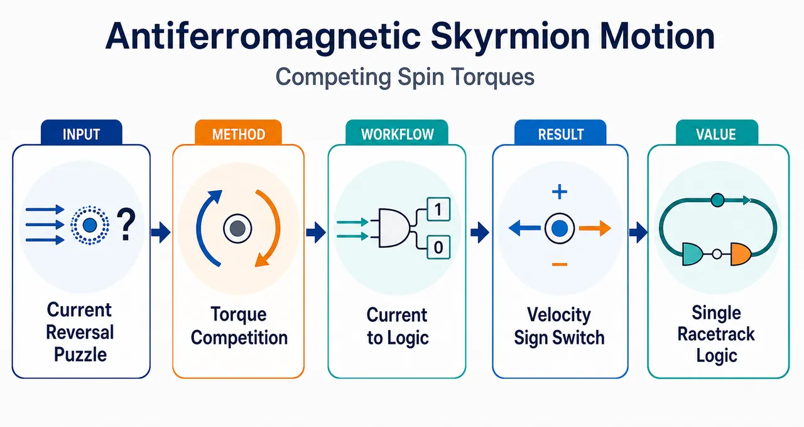
研究问题反铁磁斯格明子通常被认为在电流驱动下沿单一方向高速运动；本文要解决的核心问题是：在不反转电流极性、不改变赛道结构的情况下，能否仅通过提高电流密度，让同一个反铁磁斯格明子从“顺电流漂移”切换为“逆电流漂移”，并解释其物理机制。创新方法Aha 点是把电流同时视为“驱动力”和“形状调节器”：电流诱导斯格明子半径膨胀，改变 SOT 结构因子 uSOT/dxx，使原本相反方向的 STT 有效力与 SOT 有效力重新排序；当 SOT 反向驱动超过 STT 正向驱动时，净力变号，速度反转。论文用 Mumax3 微磁模拟结合 Thiele 方程，把方向反转压缩为一个可视化判据：斯格明子半径达到约 27–28 nm 的临界尺寸。工作流程输入为双子晶格 A 型反铁磁体/重金属赛道、界面 DMI 稳定的反铁磁斯格明子、外加电流密度 j 与垂直磁场 Bz；Mumax3 求解含 STT 与 SOT 的 LLG 方程，得到不同电流下的动态斯格明子形状、半径和速度；再将磁结构参数 uSOT、dxx 代入 Thiele 方程，分解 STT 力、SOT 力与净力；最后输出速度-电流曲线、临界反转半径，并将“右侧—中间—左侧”的非单调位置响应转化为单赛道逻辑门输出。关键结果低电流时斯格明子沿电流方向运动，高电流时反向运动；在 Bz=0.2 T 时，j=100 MA cm⁻² 对应 vx>0，j=200 MA cm⁻² 对应 vx<0。净力反转发生在斯格明子半径约 27–28 nm，解析估计约 26 nm。垂直磁场可增大半径并降低反转临界电流，且几乎不依赖 Bz 正负号。基于该双向运动，论文演示了 AND、OR、XOR 及输出反转后的 NAND、NOR、XNOR，可扩展到多斯格明子赛道。应用价值该机制为反铁磁斯格明子器件提供一种“电流幅值编程”的运动控制方式：同一赛道、同一电流方向即可实现双向输运和逻辑状态切换。它利用反铁磁斯格明子高迁移率、无斯格明子霍尔效应的优势，有望用于高速、高密度、自旋电子逻辑器件，并可推广到合成反铁磁体和交替磁体平台。第一部分：核心概览 (Overview)
反铁磁斯格明子在自旋转移力矩（STT）与自旋轨道力矩（SOT）共同驱动下，可随电流密度升高发生运动方向反转：低电流沿电流方向运动，高于阈值后反向运动。机制来自电流诱导的斯格明子尺寸膨胀，改变 SOT 有效力与 STT 有效力的相对强度，使净驱动力变号。该工作将反铁磁斯格明子的研究从常规单向输运推进到可编程双向输运，并提出单赛道逻辑门设计，为反铁磁自旋电子逻辑器件提供新机制。
---
第二部分：结构化快速回顾
《Bidirectional motion of antiferromagnetic skyrmions driven by competing spin torques》（None，）
背景
反铁磁斯格明子因高迁移率、无斯格明子霍尔效应，被视为高速高密度自旋电子器件的信息载体。既有研究主要关注电流驱动下的单向运动，而通过调节电流大小实现运动方向反转的问题长期缺乏系统探索。
方法
采用 Mumax3 微磁模拟求解含 STT 与 SOT 的 Landau–Lifshitz–Gilbert 方程，并用 Thiele 方程建立解析解释。模型为双子晶格 A 型反铁磁体与重金属层耦合，重金属诱导界面 Dzyaloshinskii–Moriya interaction 以稳定斯格明子。
结果
低电流密度下，反铁磁斯格明子沿电流方向运动；高电流密度下，运动方向反转。以 (B_z=0.2) T 为例，(j=100) MA cm(⁻²) 时 (vₓ>0)，(j=200) MA cm(⁻²) 时 (vₓ<0)。临界反转半径约为 27–28 nm，解析估计约为 26 nm。
讨论
方向反转来自两类竞争力矩产生的有效力重新排序：STT 力随电流线性增强且结构依赖较弱，SOT 力依赖 (uₘ̊ SOT/dₓₓ)，因斯格明子尺寸变化而非线性改变。外加垂直磁场可增大斯格明子半径并降低反转临界电流，且该调控几乎不依赖 (B_z) 正负号。
局限
所用电流密度虽已具有实验可达性，但可能高于常见斯格明子逻辑器件。热涨落会降低逻辑门操作窗口的上下限；支撑信息中才讨论热扰动、材料非均匀性、合成反铁磁与交替磁体推广，正文细节有限。
结论
竞争性 STT 与 SOT 可在单一反铁磁赛道中实现斯格明子的可调双向运动，并支持 AND、OR、XOR 及其反逻辑门。该机制可扩展到多斯格明子器件，并可能转移至合成反铁磁体和交替磁体平台。
---
第三部分：逐章节冷凝解析 (Section-by-Section Condensing)
Abstract
Bidirectional antiferromagnetic-skyrmion dynamics are identified as the central phenomenon
反铁磁斯格明子被界定为具有丰富动力学与输运性质的拓扑自旋纹理，但其双向动力学仍缺乏充分研究。摘要开宗明义指出研究对象和知识缺口：*"Antiferromagnetic skyrmions are swirling topological spin textures with rich dynamics and intriguing transport properties, yet their bidirectional dynamics remain largely unexplored."*
Current-induced STT and SOT are treated as competing drives
驱动源不是单一力矩，而是电流诱导的 spin-transfer torque（STT） 与 spin-orbit torque（SOT） 的共同作用。核心设定为：*"we investigate the dynamics of antiferromagnetic skyrmions driven by current-induced spin-transfer and spin-orbit torques."*
Velocity reversal occurs above a threshold current
关键结果是电流密度升高到阈值以上时，斯格明子可从一个运动方向切换到相反方向。摘要给出定性规律：*"antiferromagnetic skyrmions moving in one direction at low current densities can reverse their motion direction when the driving current is above a threshold."*
Thiele analysis attributes reversal to force competition
解析机制来自 Thiele 方程，不是单纯数值现象。双向运动被归因于两种有效力相对强弱的变化：*"this bidirectional motion originates from a change in the relative strengths of two effective forces arising from spin-transfer and spin-orbit torques."*
Programmable logic gates exploit the same bidirectional mechanism
双向运动进一步用于器件设计，尤其是单赛道可编程逻辑门：*"exploiting this bidirectional motion on a single racetrack, we design programmable logic gates."* 这将基础动力学机制连接到反铁磁逻辑器件。
---
1 Introduction
Directional reversal is positioned as a broad transport-control problem
粒子或准粒子方向控制被置于软物质、生物运动、凝聚态物理等宽背景中，涉及 ratchet 系统粒子、液晶孤子、Janus 粒子、细菌、超导涡旋、Yukawa 粒子与磁孤子。原文列举范围极广：*"Directional control of particle-like entities is central to diverse fields, from soft matter and biological locomotion to condensed matter physics"*；方向反转被定义为速度符号改变：*"transport-direction reversal, in which the drift velocity of particles or quasiparticles changes sign under modified driving conditions."*
Bidirectional motion already appears in nonmagnetic and magnetic systems
Janus 粒子可通过光波长改变双向运动，铁磁/亚铁磁磁畴壁和双半子也可由自旋波条件控制运动方向。关键例子包括：*"Janus particles with different photocatalysts on their two sides exhibit bidirectional motion when illuminated with light of different wavelengths"*；亚铁磁畴壁方向取决于净自旋密度：*"the motion direction depending on the sign of net spin density"*；铁磁双半子方向取决于自旋波频率：*"pushed away from or pulled toward the wave source depending on the spin-wave frequency."*
Magnetic textures are suitable platforms for tunable bidirectional transport
磁纹理的类粒子性质和与外激发的复杂相互作用，使其成为可调双向输运平台。原文直接概括：*"magnetic textures provide a versatile platform for realizing tunable bidirectional transport, owing to their particle-like nature and rich interactions with external excitations."*
Skyrmions have established spintronic relevance
磁斯格明子被定义为拓扑非平庸磁纹理，应用包括赛道存储、逻辑器件和纳米振荡器：*"magnetic skyrmions are topologically nontrivial magnetic textures with promising potential for spintronic applications, including racetrack memories, logic devices, and nano-oscillators."*
Antiferromagnetic skyrmions offer high mobility and no skyrmion Hall effect
反铁磁斯格明子相较铁磁体系的重要优势是高迁移率和无斯格明子霍尔效应，适合高密度、高速器件：*"Antiferromagnetic skyrmions are particularly attractive due to their high mobility and the absence of the skyrmion Hall effect"*；应用定位为：*"promising information carriers for high-density and high-speed spintronic devices."*
The unresolved gap is current-magnitude-induced reversal
既有研究集中于电流驱动的单向运动，尚未系统探索通过调节电流大小反转方向。核心缺口表述为：*"most previous studies have focused on unidirectional current-driven motion, while the possibility of reversing the motion direction by tuning the current magnitude remains largely unexplored."*
The proposed mechanism contrasts with conventional monotonic motion
常规预期是电流越大速度绝对值越大但方向不变；这里低电流沿电流方向，高于阈值反向。原文强调反差：*"at low current, the skyrmion moves along the current direction, whereas above a threshold current its motion direction reverses"*；并指出：*"This behavior contrasts sharply with the conventional scenario, where the skyrmion velocity simply increases in magnitude while maintaining its direction as the current increases."*
Size-mediated torque competition is the mechanistic claim
方向反转被归因于电流改变斯格明子尺寸，从而反转 STT 与 SOT 贡献的净力。关键句为：*"We attribute this phenomenon to the reversal of the net force from the two competing spin torques, induced by the change in skyrmion size."*
---
2 Results and Discussion
2.1 Theoretical model
The simulated system is a two-sublattice A-type antiferromagnet coupled to heavy metal
模型为双子晶格 A-type antiferromagnet，上下子层约化磁化分别为 (mm̊ t) 与 (mm̊ b)。层内相邻磁矩为铁磁交换 (Aₘ̊ ₑₓ>0)，层间为反铁磁交换 (Aₘ̊ ᵢₙₜ<0)。原文给出：*"We consider a two-sublattice A-type antiferromagnet with reduced magnetizations (mm̊t) and (mm̊b), where the intralayer exchange interaction between adjacent magnetizations is ferromagnetic (with exchange coefficients (Aₘ̊ₑₓ>0)), while the interlayer magnetizations are coupled through an antiferromagnetic exchange interaction ((Aₘ̊ᵢₙₜ<0))."*
Heavy metal stabilizes skyrmions via interfacial DMI
重金属层用于诱导界面 Dzyaloshinskii–Moriya interaction（DMI），以稳定反铁磁斯格明子。原文明确：*"To stabilize antiferromagnetic skyrmions, a heavy metal layer is introduced into the model to induce an interfacial Dzyaloshinskii-Moriya interaction."*
Mumax3 solves LLG dynamics with both STT and SOT
时间演化由 Mumax3 解含 STT 与 SOT 的 LLG 方程。原文说明：*"The time evolution of magnetizations is computed by utilizing the micromagnetic simulation package Mumax3 to solve the Landau-Lifshitz-Gilbert (LLG) equation incorporating current-induced spin-transfer torque (STT) and spin-orbit torque (SOT)."*
STT and SOT drive skyrmions in opposite directions
两类力矩的形式分别为
[
Tₘ̊ STTτ=-upartialₓₘτ+β umτ×partialₓₘτ
]
[
Tₘ̊ SOTτ=γ Hⱼ₍ₘτ×p)×mτ
]
其中 (τ=m̊ t,b)。重要物理设定是方向相反：*"the two current-induced spin torques ... drive the skyrmion to move in opposite directions."*
Charge drift velocity and SOT strength scale linearly with current density
电荷漂移速度定义为
[
u=fracgμₘ̊ BPj2eMₛ₍₁₊β²⁾
]
其中 (g) 为 g 因子，(μₘ̊ B) 为玻尔磁子，(P) 为自旋极化效率，(j) 为电流密度，(e) 为元电荷，(Mₛ) 为饱和磁化强度，(β) 为非绝热参数。SOT 强度为
[
Hⱼ₌fracjhbarθₘ̊ SH2μ₀ e t_z Mₛ
]
原文对应：*"The charge drift velocity (u) is defined as..."*；*" (Hⱼ) is the strength of SOT, expressed as..."* 这意味着 STT 与 SOT 的原始驱动强度均随 (j) 增大。
Thiele equation includes inertia, damping, STT force, and SOT force
反铁磁斯格明子动力学用带惯性项的 Thiele 方程描述：
[
mₘ̊ ₑffddotrₘ̊ c=-α Ldotrₘ̊ c+Fₘ̊ STT+Fₘ̊ SOT.
]
原文为：*"We utilize the phenomenological Thiele equation to analyze the current-induced dynamics of antiferromagnetic skyrmions"*；并写出：*"(mₑffddotrc=-α Ldotrc+FSTT+Fmathrm{{}SOT})."*
Effective mass depends on interlayer exchange and texture dissipation
有效质量为
[
mₘ̊ ₑff=-fracμ₀Mₛₜ_zdₓₓ2γ²Hₘ̊ ᵢₙₜ,
]
层间交换场
[
Hₘ̊ ᵢₙₜ=frac2Aₘ̊ ᵢₙₜμ₀Mₛₜ_z²,
]
[
dₓₓ=intpartialₓₙḑotpartialₓₙ,dxdy,
quad
n=(mm̊ t-mm̊ b)/2.
]
关键是 (Aₘ̊ ᵢₙₜ<0)，因此 (Hₘ̊ ᵢₙₜ<0)，有效质量为正。原文列出：*"where (mₑff=-μ₀Mₘ̊ₛtzdₓₓ/(2γ²Hₘₐₜₕᵢₜᵢₙₜ)) is the effective mass"*。
Skyrmion position is defined by topological-density weighting
斯格明子位置
[
rₘ̊ c=fracint xh̊oₛ,dxdyinth̊oₛ,dxdy
]
由拓扑密度加权，
[
h̊oₛ₌frac14πnḑot(partialₓₙ×partial_yn).
]
原文为：*"(r_c) stands for the skyrmion location, given by..."*；拓扑密度为：*"(h̊oₛ₌₁/(4π)nḑot(partialₓₙ×partial_yn))."*
STT force and SOT force have different structural dependence
耗散力为 (-α Ldot r_c)，其中
[
L=fracμ₀Mₛₜ_zdₓₓγ.
]
STT 力为
[
Fₘ̊ STT=β uL,
]
SOT 力为
[
Fₘ̊ SOT=-μ₀MₛHⱼₜ_zuₘ̊ SOT,
]
其中
[
uₘ̊ SOT=int(n×p)ḑotpartialₓₙ,dxdy.
]
原文说明：*"The remaining two terms, (FSTT=β uL) and (FSOT=-μ₀MₛHⱼₜ_zuₘ̊ SOT), are the current-induced forces from STT and SOT, respectively."*
Velocity formula reveals why structure modulation can reverse motion
稳态速度为
[
vₓ₌dot r_c=fracβ uα-fracγ Hⱼᵤₘ̊ SOTα dₓₓ.
]
STT 项 (β u/α) 不依赖结构；SOT 项依赖 (uₘ̊ SOT) 与 (dₓₓ)，二者由磁结构决定。原文精确指出：*"the STT-induced velocity (β u/α) is independent of the skyrmion structure, while the parameters (uₘ̊ SOT) and (dₓₓ) in the SOT-induced velocity ... are determined by the magnetic structure."*
Velocity reversal requires comparable STT and SOT contributions
若
[
β usim γ Hⱼᵤₘ̊ SOT/dₓₓ
]
两项可相互抵消并发生符号改变。原文明确给出设计准则：*"Equation (3) also suggests that (β usimγ HⱼᵤSOT/dₓₓ) is desirable for observing velocity reversal."*
---
2.2 Bidirectional motion of antiferromagnetic skyrmions
Current-induced skyrmion expansion enables current-controlled velocity reversal
一般情况下，电流会使反铁磁斯格明子膨胀，因此电流既是驱动力，也是结构调制旋钮。原文给出直接逻辑：*"Generally, an electric current drives an antiferromagnetic skyrmion to expand, so that the current may act as a lever to control the skyrmion structure and hence its velocity."*
Micromagnetic simulation and Thiele prediction agree
图 1(b) 中 (vₓ) 随 (j) 的关系由微磁模拟和公式 (3) 同时给出，二者吻合。原文为：*"The results from the micromagnetic simulations agree well with those from Eq. (3) which uses the numerical values of (uₘ̊ SOT) and (dₓₓ) in Figure 1(c)."*
Velocity varies non-monotonically and changes sign
随电流增加，速度不是单调同向增大，而是从正变负，代表运动方向反转。原文写道：*"the skyrmion velocity exhibits a non-monotonic variation with increasing current, changing from positive to negative and indicating a reversal in the motion direction."*
Representative points show reversal between 100 and 200 MA cm(⁻²)
图 1(b) 设定 (B_z=0.2) T 时，P1 对应 (j=100) MA cm(⁻²)、(vₓ>0)；P2 对应 (j=200) MA cm(⁻²)、(vₓ<0)。图注原文说明：*"P1 and P2 are two representative points indicating that (vₓ>0) at a small current ((j=100) MA cm(⁻²)) and (vₓ<0) at a large current ((j=200) MA cm(⁻²)), with (B_z=0.2) T."*
Out-of-plane magnetic field lowers the critical current almost independently of sign
施加垂直磁场后仍存在速度反转，且临界电流降低；这种降低几乎不依赖 (B_z) 的正负。原文为：*"When an out-of-plane magnetic field (B_z) is applied, we still observe a velocity reversal, but the critical current that triggers the reversal decreases, almost independent of the sign of (B_z)."*
Interlayer exchange and damping do not effectively tune critical current
临界电流不能被层间交换系数和磁阻尼有效调控，证据位于图 S1。原文为：*"Note that the critical current cannot be effectively regulated by the interlayer exchange coefficient and magnetic damping (see Figure S1)."*
Representative structures confirm size-driven reversal
图 1(d) 展示 (vₓ>0) 与 (vₓ<0) 情形下 2 ns 时的动态稳定结构，证明速度反转来自尺寸改变。图注给出时间信息：*"Snapshots of the dynamically stable skyrmion structure at simulation time 2 ns"*；正文总结：*"confirming that the velocity reversal is caused by a change in the skyrmion size."*
STT and SOT forces point in opposite directions and grow differently
图 2(a)–(c) 计算不同 (B_z) 下的 (Fₘ̊ STT) 与 (Fₘ̊ SOT)。两者方向相反，且随 (j) 增长速率不同。原文为：*"The directions of the forces induced by the SOT and STT are opposite, and their magnitudes exhibit distinct growth rates with increasing current."*
Net force reversal directly causes motion reversal
当电流超过某一值，两类力相对强度改变，净力 (Fₘ̊ SOT+Fₘ̊ STT) 反向，运动方向随之反向。原文为：*"the relative strengths of two forces change above a certain current density, giving rise to the reversal of the net force ((Fₘ̊ SOT+Fₘ̊ STT)) and hence the skyrmion motion direction."*
Skyrmion radius is defined by the (n_z=0) contour
斯格明子半径 (Rₛ) 从微磁模拟的空间磁化分布中提取，定义为 Néel 矢量出平面分量 (n_z=0) 等值线半径。原文为：*"we extract skyrmion radius (Rₛ) defined as the radius of the contour with out-of-plane Néel vector (n_z=0)."*
Critical reversal radius is approximately 27–28 nm numerically
图 2(d)–(f) 显示，对于所用参数，净力反转的临界半径约 27–28 nm。原文给出数值：*"the critical (Rₛ) at which the reversal of the net force occurs is around 27-28 nm for the parameters we used."*
Analytical estimate gives a critical radius of approximately 26 nm
将近似表达式
[
uₘ̊ SOTapprox-π²Rₛ
]
[
dₓₓapprox2πłeft[łeft(Rₛ²/lₘ̊ DW²⁺¹ⁱ̊ght)¹/²+łeft(Rₛ²/lₘ̊ DW²⁺¹ⁱ̊ght)⁻¹/²i̊ght]
]
代入 (vₓ₌₀)，得到临界 (Rₛsim26) nm，与数值结果接近。原文为：*"the critical (Rₛ) of (sim 26) nm is given, which is close to the numerical results."*
Domain-wall width links material parameters to reversal radius
畴壁宽度
[
lₘ̊ DW=sqrtAₘ̊ ₑₓ/Kₘ̊ ₑff,
quad
Kₘ̊ ₑff=K-μ₀Mₛ²/2.
]
原文为：*"Here, (lₘ̊ DW=sqrtAₘ̊ ₑₓ/Kₘ̊ ₑff) describes the domain wall width, with (Kₘ̊ ₑff=K-μ₀Mₛ²/2) and anisotropy constant (K)."*
Magnetic field changes radius by reducing effective anisotropy
连续近似下，垂直磁场对有效场的贡献可等效为各向异性变化：
[
Ki̊ghtarrow K+fracMₛB_z²4μ₀Hₘ̊ ᵢₙₜ,
]
且 (Hₘ̊ ᵢₙₜ<0)，所以无论 (B_z) 正负，(B_z²) 项都会降低有效各向异性。原文为：*"a positive or negative magnetic field reduces the magnetic anisotropy"*；公式后强调：*"where (Hₘ̊ ᵢₙₜ<0)."*
Reduced anisotropy increases skyrmion radius
各向异性降低会增大 (Rₛ)，解析半径为
[
Rₛapproxπ DsqrtfracAₘ̊ ₑₓ16Aₘ̊ ₑₓKₘ̊ ₑff²⁻π²D²Kₘ̊ ₑff.
]
原文为：*"Such a reduction in magnetic anisotropy leads to an increase in the skyrmion radius."*
Static simulations validate the field–radius analytical relation
对不同 (B_z) 和 (Aₘ̊ ᵢₙₜ) 的静态斯格明子构型进行模拟，数值 (Rₛ) 与公式 (6)–(7) 一致。原文为：*"we simulate the configurations of a static skyrmion under different magnetic fields (B_z) and interlayer exchange coefficients (Aₘ̊ ᵢₙₜ), and find that the numerical (Rₛ) is consistent with the result given by Eq. (6)-(7)."*
---
2.3 Programmable skyrmion-based logic gates
Bidirectional motion is converted into a programmable logic mechanism
双向动力学被用于设计可编程逻辑门，定位为未来反铁磁自旋电子器件的基础模块。原文为：*"We further exploit the intriguing bidirectional dynamics of antiferromagnetic skyrmions to design programmable logic gates, which could serve as essential building blocks in future antiferromagnetic spintronic devices."*
Logic device consists of one racetrack, one detector, and two input currents
器件由纳米赛道和探测器组成，输入为两路电流 (I₁)、(I₂)，对应电流密度 (j₁)、(j₂)。逻辑输入 “1” 表示施加电流，“0” 表示不施加电流。图注说明：*"Two currents (I₁) and (I₂) ... are designed as logic inputs; logic input “1” (“0”) corresponds to (not) applying current to the device."*
Output is encoded by skyrmion presence under the middle detector
输出 “1” 与 “0” 分别定义为探测器下方有无斯格明子。原文为：*"logic outputs are defined as the presence and absence of the skyrmion underneath the detector"*；图注进一步写明：*"logic outputs “1” and “0” are defined as the presence and absence of the skyrmion underneath the middle detector, respectively."*
Magnetoresistance converts local skyrmion-induced magnetization changes into electrical signals
探测器通过磁阻效应探测斯格明子导致的磁化变化并转为电信号。原文为：*"The detector captures skyrmion-induced magnetization variations via magnetoresistance effects and converts them into electrical signals."*
Low and high total currents place the skyrmion outside the middle detection region
小净电流 (I₁₊I₂) 时，斯格明子倾向位于赛道右侧；大电流时，因方向反转移到左侧。两种情况均对应输出 “0”。原文为：*"For small net current (I₁₊I₂) ... the skyrmion tends to be located on the right side of racetrack, while it moves to the left side for large currents"*；随后指出：*"These scenarios yield the logic output “0”."*
Intermediate current produces output “1” by placing the skyrmion under the detector
合适电流使斯格明子进入中间检测区，导致该区域磁化下降，对应输出 “1”。原文为：*"When a suitable current is applied, the skyrmion enters the middle detection region, causing a decrease in the magnetizations of that region, corresponding to the logic output “1”."*
Uniform current gives too narrow an output-1 window
空间均匀电流分布下，能产生输出 “1” 的电流范围较窄，不利于 OR 门，因为 OR 门需要小电流和大电流组合都输出 “1”。原文为：*"the current that can produce a logic output “1” has a narrow range for a spatially uniform current distribution"*；问题在于：*"it requires both small and large currents to give a logic output “1”."*
Reducing left-side current density broadens the output-1 window
通过降低赛道左侧电流密度，设定降低因子 (b)，可扩大输出 “1” 的电流上限。图 3(b) 中 (b=0.75) 的实心方块显示下限不变、上限显著增大。原文为：*"This problem can be solved by reducing the current density on the left side of racetrack with reduction factor (b)."*；并指出：*"for (b=0.75), the lower limit of current density for logic output “1” ... remains unchanged. By contrast, the upper limit of current density is significantly increased."*
Reduction factor can be engineered through racetrack cross-section
(b) 可通过改变赛道局部横截面积调节。原文为：*"the value of (b) can be adjusted by changing the cross-sectional area of a portion of racetrack."*
Local current reduction acts like a barrier without changing material parameters or film thickness
低电流区域可阻挡斯格明子停留在中间区域，其功能类似势垒，但不依赖传统的磁参数或膜厚修改。原文为：*"This phenomenon is similar to a skyrmion encountering a barrier"*；对比传统方法：*"unlike common methods that modify magnetic parameters or film thickness to construct a barrier, here we only change the local current intensity."*
Force calculation shows net force vanishes near the low-current region
图 3(c) 中，在高电流区域净驱动力有限；靠近低电流区域时，(Fₘ̊ SOT+Fₘ̊ STT) 接近零。原文为：*"there is a finite net driving force ... for the skyrmion in the high-current region, while it is close to zero when the skyrmion approaches the low-current region."*
Force weakening is caused by structural changes of the skyrmion
局部电流变化引发斯格明子结构变化，从而削弱驱动力。原文为：*"The weakening of the driving forces can be attributed to changes in the skyrmion structure."*
Logic-gate simulation parameters are explicitly specified
图 3 逻辑器件模拟参数为：模型尺寸 (500×280×3) nm(³)，圆形探测器直径 80 nm，模拟时间 25 ns，(B_z=0.23) T，(α=0.05)。图注原文为：*"In the simulations, the model size is (500×280×3) nm(³), the diameter of circular detector is 80 nm, the simulation time is 25 ns, (B_z=0.23) T, and (α=0.05)."*
AND gate uses (j₁₌ⱼ₂₌₅₀) MA cm(⁻²)
AND 门要求输入 (0,0)、(0,1)、(1,0) 输出 “0”，因此总电流密度不能超过 80 MA cm(⁻²)；输入 (1,1) 输出 “1”，要求总电流密度在 [80,160] MA cm(⁻²)。取 (j₁₌ⱼ₂₌₅₀) MA cm(⁻²)，(1,1) 时总电流为 100 MA cm(⁻²)，落入输出 “1” 窗口。原文为：*"the total input current density ... should not exceed 80 MA cm(⁻²)"*；以及：*"the total current density ... should be in the range of [80, 160] MA cm(⁻²)"*；示例为：*"taking (j₁₌ⱼ₂₌₅₀) MA cm(⁻²) as an example, the AND logic operation is executed."*
OR gate uses (j₁₌ⱼ₂₌₈₀) MA cm(⁻²)
OR 门要求 (0,1)、(1,0)、(1,1) 输出 “1”，因此单输入和双输入总电流都应落入 [80,160] MA cm(⁻²)。取 (j₁₌ⱼ₂₌₈₀) MA cm(⁻²)，单输入为 80、双输入为 160，满足窗口边界。原文为：*"The OR logic gate requires the logic inputs (0, 1)/(1, 0)/(1, 1) to produce the output “1”"*；并指出：*"Apparently, (j₁₌ⱼ₂₌₈₀) MA cm(⁻²) satisfies the requirement."*
XOR gate requires single inputs inside the window and their sum above the upper limit
XOR 门要求 (0,1)、(1,0) 输出 “1”，(0,0)、(1,1) 输出 “0”。因此 (j₁)、(j₂) 各自在 [80,160] MA cm(⁻²)，但 (j₁₊ⱼ₂) 超过上限 160 MA cm(⁻²)。原文为：*"For XOR logic gate, the output is “1” for inputs (0, 1)/(1, 0) and “0” for (0, 0)/(1, 1)"*；条件为：*"(j₁) and (j₂) are within the range [80, 160] MA cm(⁻²) and their sum exceeds the upper limit of this range."*
Logic operating window is governed by velocity reversal and reduction factor
逻辑门可工作的电流密度窗口由输出 “1” 区间的下限与上限决定；下限由速度反转电流控制，上限由 (b) 控制。原文为：*"the operating current-density window of the logic gates is determined by the lower and upper limits of the range, which are governed by the velocity-reversal current and the reduction factor, respectively."*
Thermal fluctuations reduce the operating limits
考虑热涨落后，逻辑窗口上下限趋于降低。原文为：*"Such lower and upper limits tend to decrease when thermal fluctuations are taken into account (see Figure S2)."*
Output inversion converts AND, OR, XOR into NAND, NOR, XNOR
若反转输出定义，AND、OR、XOR 分别转为 NAND、NOR、XNOR。原文为：*"Once the definition of the logic output is reversed, the logic gates AND, OR, and XOR are transformed into NAND, NOR, and XNOR, respectively."*
Multi-skyrmion devices show scalability
多斯格明子放置在赛道中并由电流驱动时，其状态与单斯格明子情况类似，表明逻辑器件具有可扩展性。原文为：*"When multiple skyrmions are placed in the racetrack and driven by the currents ... they exhibit similar states to those in Figure 3(a) where only a single skyrmion is considered, indicating high scalability for our logic devices."*
Multi-skyrmion logic avoids deterministic single-skyrmion generation and precise single-skyrmion detection
多斯格明子器件可以获得类似输入输出关系，从而实现相关逻辑操作，并降低单斯格明子精确生成与探测要求。原文为：*"Such a multi-skyrmion logic device does not involve deterministic generation and precise detection of a single skyrmion, thus facilitating the device implementation."*
Multi-skyrmion simulation parameters are larger-scale
图 4 多斯格明子模拟参数为：模型尺寸 (1600×700×3) nm(³)，方形探测器 (80×200) nm(²)，模拟时间 60 ns，(b=0.75)，(B_z=0.23) T，(α=0.05)。图注原文为：*"In the simulations, the model size is (1600×700×3) nm(³), the size of square detector is (80×200) nm(²), the simulation time is 60 ns, (b=0.75), (B_z=0.23) T, and (α=0.05)."*
Current density is experimentally achievable but may exceed common skyrmion logic devices
所用电流密度具有实验可达性，但可能高于常见斯格明子逻辑器件。原文为：*"Although the current density used here is experimentally achievable, it could be higher than that of common skyrmion logic devices."*
Operating current can be optimized by field, reduction factor, and material selection
操作电流可通过合适磁场、(b) 因子和易调尺寸的材料优化。原文为：*"The operating current can actually be optimized, for example, by selecting a suitable magnetic field/reduction factor ... and adopting appropriate materials with easily tunable skyrmion sizes."*
Mechanism transfers to synthetic antiferromagnets and appears in altermagnets
结果可直接转移到合成反铁磁体，速度反转也在交替磁体（altermagnet）中观察到。原文为：*"Our results can be directly transferred to a synthetic antiferromagnet, and the reversal of skyrmion velocity is also observed in an altermagnet."*
Material inhomogeneity does not change the main conclusion
材料非均匀性不会影响主要结论，细节见图 S4。原文为：*"We also note that the material inhomogeneity does not affect our main conclusions."*
---
3 Conclusion
Theoretical investigation covers STT–SOT-driven antiferromagnetic-skyrmion dynamics
结论总结研究对象为电流诱导 STT 与 SOT 共同驱动的反铁磁斯格明子动力学。原文为：*"we have theoretically investigated the dynamics of antiferromagnetic skyrmions driven by current-induced spin-transfer and spin-orbit torques."*
Current-controlled size modulation tunes velocity under two driving mechanisms
斯格明子速度可通过电流控制的尺寸调制有效调节。原文为：*"the velocity of skyrmions under these two driving mechanisms can be effectively tuned by current-controlled modulation of the skyrmion size."*
Simulation and Thiele analysis consistently support bidirectional motion and magnetic-field tunability
微磁模拟揭示双向运动及其外磁场可调性，并与 Thiele 方程分析一致。原文为：*"The simulations have revealed bidirectional skyrmion motion and its tunability by an external magnetic field, which are in line with the Thiele-equation analysis."*
Single-racetrack programmable logic device is proposed
基于反铁磁斯格明子运动，提出单赛道可编程逻辑器件。原文为：*"we have proposed a programmable logic device based on the motion of antiferromagnetic skyrmions in a single racetrack."*
Implication is antiferromagnetic skyrmion spintronics
结果为斯格明子双向运动提供机制洞察，并可能推动反铁磁斯格明子自旋电子器件发展。原文为：*"Our findings provide insights into the bidirectional motion of skyrmions and may contribute to the development of antiferromagnetic skyrmion-based spintronic devices."*
---
Supporting Information
Additional simulations are essential for robustness claims
支撑信息包含模拟细节、图 S1–S4 涉及的补充论证：层间交换与阻尼对临界电流调控不显著，热涨落降低逻辑窗口，合成反铁磁/交替磁体可推广，材料非均匀性不改变主结论。正文仅给出入口：*"Additional supporting information can be found online in the Supporting Information section."*
---
第四部分：深度理解与语言支持 (Understanding & Nuance)
1. 术语解析
#### Bidirectional motion
Bidirectional motion 在这里不是简单“来回移动”，而是指同一对象在不同驱动条件下出现平均漂移速度符号反转。语境中的关键是 (vₓ) 从正变负，而不是振荡运动。对应原文：*"changing from positive to negative and indicating a reversal in the motion direction."*
#### Competing spin torques
Competing spin torques 指 STT 与 SOT 产生的有效驱动力方向相反，且随电流和结构变化的增长规律不同。它不是“两个力矩互相抵消”这么简单，而是二者相对强弱可被斯格明子尺寸重排。核心句：*"two effective forces arising from spin-transfer and spin-orbit torques"*；以及：*"their magnitudes exhibit distinct growth rates with increasing current."*
#### Velocity-reversal current
Velocity-reversal current 是 (vₓ₌₀) 的临界电流，物理上对应净驱动力 (Fₘ̊ STT+Fₘ̊ SOT=0)。低于它由 STT 主导或净力为正，高于它由 SOT 相关贡献占优或净力为负。语境中它决定逻辑输出 “1” 区间的下限：*"the lower limit ... governed by the velocity-reversal current."*
#### Reduction factor (b)
Reduction factor (b) 是局部电流工程参数，表示赛道左侧电流密度相对于右侧的比例。(b=0.75) 表示左侧电流密度降为右侧的 75%。它通过改变赛道横截面积实现，并主要控制逻辑窗口上限：*"the value of (b) can be adjusted by changing the cross-sectional area of a portion of racetrack."*
#### Absence of the skyrmion Hall effect
Absence of the skyrmion Hall effect 指反铁磁斯格明子的两个子晶格拓扑陀螺力相互抵消，运动不会像铁磁斯格明子那样明显横向偏转撞向边界。语境中的价值是赛道器件更稳定：*"high mobility and the absence of the skyrmion Hall effect."*
---
2. 疑难查证
#### 为什么电流越大反而会反向运动？
直觉上，电流越大应当“推得越快”。这里的关键是两个“推力”方向相反：
[
vₓ₌fracβ uα-fracγ Hⱼᵤₘ̊ SOTα dₓₓ.
]
第一项是 STT 速度项，近似随电流线性增大，且不依赖斯格明子结构。第二项是 SOT 速度项，也与电流有关，但还乘上结构因子 (uₘ̊ SOT/dₓₓ)。电流增大时，斯格明子半径 (Rₛ) 变大，(uₘ̊ SOT) 与 (dₓₓ) 的比值随结构改变，导致 SOT 贡献相对 STT 贡献增强。达到 (vₓ₌₀) 后，净速度变号。
一句话概括：电流同时改变驱动力大小和被驱动物体的形状；形状变化反过来改变 SOT 驱动效率，最终使反向 SOT 超过正向 STT。
#### 为什么外磁场正负号都能降低临界电流？
常规铁磁体中，正负磁场往往对上/下磁畴不对称。但这里在反铁磁连续近似下，磁场对各向异性的修正为：
[
Ki̊ghtarrow K+fracMₛB_z²4μ₀Hₘ̊ ᵢₙₜ.
]
由于 (B_z²) 不区分正负，而 (Hₘ̊ ᵢₙₜ<0)，该项总是负修正，即有效各向异性降低。各向异性降低会增大斯格明子半径，使其更容易达到临界半径 27–28 nm，因此更低电流即可反转。
#### 为什么逻辑门不需要在不同物理赛道之间切换？
传统斯格明子逻辑常依赖复杂赛道、势垒、分叉或精确生成/湮灭。这里同一单赛道中，斯格明子位置随总电流呈“右侧—中间—左侧”的非单调响应：
- 小电流：右侧，输出 0；
- 中等电流：探测器下方，输出 1；
- 大电流：左侧，输出 0。
这种非单调位置响应天然适合 AND、OR、XOR。再通过 (b=0.75) 等局部电流工程扩大输出 “1” 窗口，使 OR 门这类需要单输入和双输入都输出 1 的逻辑成为可能。
---
第五部分：创新评估与关联 (Synthesis & Novelty)
1. 创新性判断
#### 从单向反铁磁斯格明子输运推进到电流幅值控制的双向输运
过去 2–5 年内，反铁磁斯格明子研究重点多集中于高速直线运动、无霍尔偏转、成核、探测、材料实现与器件稳定性。电流通常被视为调节速度大小的外参，而不是调节速度符号的旋钮。这里的核心新颖性是：同一电流方向下，仅通过增大电流密度即可使运动方向反转。这不同于改变电流极性、改变磁场方向或改变自旋极化方向。
#### 提出尺寸调制驱动的 STT–SOT 力竞争机制
既有双向运动机制常依赖：
- 自旋波频率改变；
- 净自旋密度符号改变；
- helicity 精确控制；
- ratchet 势或非对称结构；
- 外部波长、频率或拓扑态转换。
这里的新机制是：电流诱导斯格明子半径变化 → 改变 (uₘ̊ SOT/dₓₓ) → 改变 SOT 有效力相对 STT 有效力 → 净力反向。这一链条把结构自由度、驱动力竞争和运动方向反转统一在一个解析框架中。
#### 给出可计算的反转半径判据
速度反转不仅是数值模拟现象，还被压缩为半径阈值问题。数值临界半径约 27–28 nm，解析估计约 26 nm。该判据比单纯报告临界电流更具可迁移性，因为不同材料的电流–半径关系可变，但达到临界半径时的力竞争条件更普适。
#### 揭示磁场通过 (B_z²) 项对反转阈值进行符号无关调控
外磁场降低临界电流的机制并非简单 Zeeman 偏置，而是通过反铁磁层间交换背景下的等效各向异性修正：
[
Ki̊ghtarrow K+fracMₛB_z²4μ₀Hₘ̊ ᵢₙₜ.
]
由于 (Hₘ̊ ᵢₙₜ<0)，正负 (B_z) 均降低各向异性并增大半径。这种对磁场符号近似不敏感的调控规律是反铁磁体系中的重要细节。
#### 将双向运动直接转化为单赛道可编程逻辑
器件创新在于不依赖复杂几何分叉或单斯格明子精确生成，而利用电流窗口与局部电流缩放 (b) 实现 AND、OR、XOR。(b=0.75)、(B_z=0.23) T、(α=0.05)、25 ns 单斯格明子模拟和 60 ns 多斯格明子模拟展示了器件层面的可行性。输出定义反转后还能得到 NAND、NOR、XNOR。
#### 解决的前人未解问题
核心解决三类问题：
- 方向可逆性问题：反铁磁斯格明子能否在不改变电流方向的条件下实现运动方向反转。
- 机制解释问题：反转来自何种可控物理量，而不是数值偶然；答案是尺寸调制下的 STT–SOT 净力反转。
- 器件利用问题：双向运动如何转化为逻辑功能；答案是单赛道中利用非单调位置响应和局部电流工程构造可编程逻辑窗口。
-
11
📊 含图深析
💡 亮点：表面降对称可投影出交错磁性自旋分裂。
📖 展开分析 + 配图
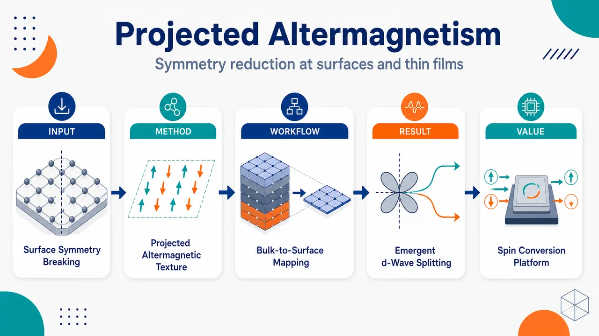
研究问题真实样品中的表面与薄膜会破坏体相交替磁体的三维对称性：这种对称性降低会让表面观测到的自旋劈裂保持体相 g-wave 特征、变成自旋简并，还是转化为全新的 s-wave / d-wave 纹理？创新方法提出“投影交替磁性”视角：把体相 CrSb 的 g-wave 磁多极序参量投影到不同表面布里渊区，并用表面点群降维重新判定允许的自旋劈裂项；关键 Aha 点是体相 g-wave 交替磁体可在特定 (2̄10) 薄膜几何中被表面对称性降低“投影”为功能性的 d-wave 自旋劈裂。工作流程输入体相 g-wave CrSb、Néel 矢量沿 [001]、候选表面取向 (001)/(010)/(2̄10)；先将三维体相能带沿表面法向投影到二维表面布里渊区，识别节点面投影与非节点面投影；再用群论从体相磁多极序参量 φ 推导表面允许哈密顿量；最后进行含 SOC 的第一性原理 slab 计算，对比投影体相能带、真实表面态权重与 Sz 自旋颜色纹理。关键结果(001) 表面因最外层 Cr 磁偶极未补偿，产生近似动量无关的类铁磁 s-wave 劈裂；(010) 表面在非相对论极限下禁止 φσz 耦合，仅有 SOC 诱导的弱 p-wave/Rashba-like 劈裂；(2̄10) 表面允许 φkykzσz，形成清晰 d-wave 自旋劈裂，且表面态自旋极化强于体相态，无 SOC 时 d-wave 特征严格成立。应用价值提示 spin-ARPES 等表面敏感实验不能把表面自旋纹理直接等同于体相交替磁性；同时把表面对称性破缺变成可设计资源，通过选择薄膜取向在非 d-wave 体相材料中实现 d-wave 自旋分裂器效应，为电荷-自旋转换、自旋电子器件和交替磁体表面工程提供新路线。第一部分：核心概览
该研究揭示表面与薄膜的对称性降低会根本重塑交替磁体（altermagnets）的自旋劈裂纹理。以 g-wave CrSb 为代表，三类表面呈现三种截然不同结果：与体相节点面对齐的表面可投影出自旋简并；(001) 表面因未补偿表面磁矩产生类铁磁 s-wave 劈裂；特定 (2(bar1)0) 薄膜几何可将体相 g-wave 交替磁性“投影”为功能上重要的 d-wave 自旋劈裂。该工作把交替磁性从体相对称性问题推进到表面工程与薄膜功能化层面。
---
第二部分：结构化快速回顾
《Projected altermagnetism by symmetry reduction at surfaces and in thin films》（None，）
背景
交替磁体兼具零净磁化与动量依赖自旋劈裂，其经典理论主要依赖三维体相能带对称性。实际实验常涉及表面、薄膜、ARPES、自旋分辨谱学与输运测量，这些低维几何必然破坏体相对称性，使体相交替磁性的可观测性与功能性产生不确定性。
方法
结合三类分析：
- 体相能带向表面布里渊区投影；
- 群论分析，推导表面允许的自旋劈裂哈密顿量项；
- 含 SOC 的第一性原理 slab 计算，对比体相投影与有限厚度薄膜表面态。
代表材料为 CrSb，其体相为 g-wave 交替磁体，Néel 矢量固定沿 [001] / z 轴。
结果
三种表面取向产生三类自旋劈裂：
- (001)：表面 Cr 层磁偶极未补偿，产生近似动量无关的类铁磁 s-wave 自旋劈裂；
- (010)：非相对论极限下禁止 (ǎrphiσ_z) 型耦合，仅有 SOC 诱导的弱劈裂；
- (2(bar1)0)：出现非相对论 d-wave 自旋劈裂，形式为 (HSSpropto ǎrphi k_y k_zσ_z)。
讨论
表面敏感探针可能观测到与体相完全不同的交替磁性“味道”。尤其是 spin-ARPES 看到的表面态自旋纹理不能直接等同于体相 g-wave 劈裂。相反，表面对称性降低也可被利用：非 d-wave 体相交替磁体可通过薄膜几何实现 d-wave 功能。
局限
分析主要围绕 CrSb 与少数表面取向展开；计算细节、MnTe 对比、slab 两侧表面对称性主要放在补充材料；有限 SOC、表面重构、结构弛豫、缺陷、真实终止面、实验温度与有限厚度依赖尚未系统展开。
结论
表面与薄膜不是交替磁性的简单“扰动”，而是可主动设计的对称性降维平台。通过选择表面取向，可在同一体相交替磁体中实现自旋简并、类铁磁劈裂或 d-wave 自旋劈裂，为自旋分裂器效应与电荷-自旋转换器件提供新路线。
---
第三部分：逐章节冷凝解析
Abstract
Altermagnets combine zero net magnetization with spin-split bands
交替磁体被定义为一种同时具有晶胞内零净磁化与自旋劈裂电子态的新型磁性材料。核心矛盾在于：其理论描述依赖体相能带的对称性，而真实样品的表面和薄膜天然破坏这些对称性。原文明确指出：*"Altermagnets are a newly identified class of magnetic materials that combine vanishing net magnetization within the unit cell with spin-split electronic states."* 同时强调传统描述基础为：*"Their theoretical description relies on symmetry properties of the bulk band structure."*
Surfaces and thin films inherently reduce symmetry
表面与薄膜不是体相交替磁性的被动边界条件，而是会主动改变电子结构的对称性环境。原文直接给出问题来源：*"Surfaces and thin films, however, inherently break these symmetries."* 这意味着任何依赖表面态或近表面态的实验，都可能测到与体相不同的自旋劈裂。
Nodal-plane surfaces yield spin-degenerate two-dimensional bands
当表面与体相交替磁序的对称平面 / 节点面重合时，二维表面布里渊区呈现自旋简并能带，表现为常规反铁磁行为。原文表述为：*"When the surface coincides with a symmetry plane of the bulk altermagnetic order, the resulting two-dimensional Brillouin zone exhibits spin-degenerate bands, corresponding to conventional antiferromagnetic behavior."*
Generic surfaces modify spin splitting by reducing altermagnetic symmetry
除节点面表面外，其余表面取向通常降低交替磁序的对称性，从而改变自旋劈裂。原文概括为：*"In all other cases, the symmetry of the altermagnetic order is reduced, leading to modified spin splitting."*
A g-wave altermagnet can host d-wave spin splitting in a special thin-film geometry
最重要创新点是：一个体相为 g-wave 的交替磁体，在特定表面取向的薄膜中可出现 d-wave 自旋劈裂。原文强调其反常性与功能价值：*"Remarkably, we discover a thin-film geometry of a g-wave altermagnet with a particular surface orientation that enables a d-wave spin splitting, which is commonly accompanied by the spin-splitter effect."* 这意味着非 d-wave 体相材料也能通过表面工程获得 d-wave 功能。
Surface engineering becomes a tunable platform for spin-dependent phenomena
表面和薄膜中的对称性破缺可用于调控自旋相关电子现象。原文总结为：*"Our findings demonstrate that symmetry breaking at surfaces and in thin films fundamentally reshapes altermagnetic spin textures, providing a tunable platform for controlling spin-dependent electronic phenomena."*
---
Introduction / Motivation
Bulk altermagnetism is symmetry-defined but realistic samples are lower-dimensional
交替磁性在近年被识别为新磁性类别，其响应性质由三维体相能带对称性控制。原文指出：*"Altermagnets (AMs) have recently emerged as a novel class of magnetic materials characterized by vanishing net magnetization alongside momentum-dependent spin-split electronic states dictated by crystal symmetry."* 相关响应包括多种异常输运现象，原文列出：*"exotic transport phenomena"*，并指出这些性质 *"are governed by symmetry arguments applied to the three-dimensional band structure"*。
Surface-sensitive probes may fail to detect the bulk flavor of altermagnetism
由于表面破坏体相对称性，表面敏感实验可能无法直接观测体相预期的交替磁性自旋劈裂类型。原文提出关键疑问：*"how robust are hallmark manifestations of AM order and sheer observability of altermagnetism in realistic samples?"* 进一步说明：*"surface-sensitive probes may fail to detect the characteristic flavor of spin splitting expected in the bulk band structure."*
Dimensionality reduction may be constructive rather than destructive
对称性降低不仅可能破坏体相交替磁性表征，也可能成为功能设计工具。原文提出建设性问题：*"one can argue that the symmetry lowering upon dimensionality reduction in bulk AMs is not necessarily destructive but can be harnessed as a tool."* 这奠定了“表面功能化交替磁体”的研究逻辑。
d-wave spin splitting is a target because of charge-to-spin conversion
d-wave 自旋劈裂之所以重要，是因为它常伴随自旋分裂器效应和电荷-自旋转换功能。原文明确提出目标：*"whether by engineering thin-film geometries it is possible to realize alternative spin-splitting symmetries, including the highly sought-after d-wave spin splitting that is accompanied by the charge-to-spin conversion functionalities."*
CrSb serves as representative g-wave altermagnet
研究对象选择 CrSb，体相为 g-wave 交替磁体。原文写道：*"we examine the consequences of symmetry breaking at the surfaces and in thin films of AMs, using the g-wave AM CrSb as a representative example."*
Bulk CrSb has 60° spin-opposite band mapping and multiple nodal planes
CrSb 的体相 Fermi 面 / 等能面具有典型 g-wave 对称性：绕 [001] 轴旋转 60° 可把相反自旋极化的能带互相映射。原文给出：*"a rotation by 60° around the [001] axis maps the bands of opposite spin polarization into each other."* 自旋劈裂在 (k_z=0) 水平节点面与三个垂直节点面消失：*"The spin splitting vanishes on the horizontal nodal plane ((k_z=0)) and on three vertical nodal planes."* 此外，第一布里渊区边界也要求劈裂消失：*"the splitting has to vanish at the boundaries of the first Brillouin zone (BZ)."*
Three surface outcomes are predicted before detailed calculation
在 SOC 趋零极限下，三类结果被预告：
- 节点面平行表面近表面电子态自旋劈裂可完全消失；
- (2(bar1)0) 表面出现 d-wave；
- 其他表面因面内自旋未完全补偿而产生类铁磁特征。原文依次表述为：*"for surfaces parallel to the nodal planes, we find that spin splitting in the electronic states near the surface can disappear completely"*；*"for the ((2bar10)) surface: the spin splitting exhibits the highly desirable d-wave symmetry"*；*"for any other surface orientations, the spins on the surface plane are not fully compensated, thereby inducing a predominantly ferromagnetic-like spin-splitting feature."*
---
Qualitative consideration
Surface projection conserves (kₚₐᵣₐₗₗₑₗ₎ but not (kₚₑᵣₚ₎
半无限体系的基本物理是：表面打破法向平移对称性，因此电子被功函数势垒反射并发生散射。体相 Bloch 动量 (k=kₚₑᵣₚₑₚₑᵣₚ₊ₖₚₐᵣₐₗₗₑₗ₎ 中，只有表面平行动量 (kₚₐᵣₐₗₗₑₗ₎ 保持好量子数。原文为：*"its surface-parallel component (kₚₐᵣₐₗₗₑₗ) remains a good quantum number, while the (kₚₑᵣₚ) component is no longer conserved due to the breaking of translation symmetry at the surface."*
Surface rods project bulk states onto the surface Brillouin zone
固定 (kₚₐᵣₐₗₗₑₗ₎ 的倒易空间“表面棒”把不同 (kₚₑᵣₚ₎ 的体相态投影到同一表面 BZ 点。原文描述为：*"the reciprocal surface rods (orange line) at fixed (kₚₐᵣₐₗₗₑₗ) project the bulk states on the surface BZ."*
Without SOC, (S_z) remains conserved and opposite spins cannot mix
在 SOC 趋零极限，电子自旋 (S_z) 是好量子数，因此红 / 蓝相反自旋态不会混合成叠加态。原文指出：*"In the limit of vanishing SOC, spin-(S_z) eigenvalue is also a good quantum number, so states with the different spins (red and blue) do not mix and cannot form superpositions."*
The (001) nodal plane projection produces spin degeneracy across the entire surface BZ
由于 (001) 面是体相节点面，相反自旋极化能带被镜面对称联系，投影到相同 (kₚₐᵣₐₗₗₑₗ₎ 后形成成对散射态，整个表面 BZ 自旋简并。原文为：*"Since the plane mirrors spin-polarized bands of opposite spin character, the scattering states come in pairs with the same (kₚₐᵣₐₗₗₑₗ) momenta but opposite spin, and the scattering states of the half infinite system become spin degenerate in the whole surface BZ."*
This degeneracy resembles but is not PT Kramers degeneracy
这种简并类似常规共线反铁磁体中的 PT 对称 Kramers 简并，但其来源不是 PT，而是体相 g-wave 能带投影。原文强调：*"This situation is reminiscent of the Kramers degeneracy in a conventional conllinear antiferromagnet featuring PT symmetry, yet in our case, such a symmetry is not presence, and the degeneracy arises from projecting the bulk g-wave bands."*
DFT bulk projection confirms nodal versus non-nodal contrast
DFT 体相投影显示：沿 (Γ A) 即 z 方向投影时，投影体相能带无自旋极化；沿 (Γ M) 即 y 方向及其等价方向也落在节点面上，因此同样简并。原文为：*"absence of spin polarization in the projected bulk states along the (Γ A), i.e. z-direction is depicted in the colorless degenerate lines."* 以及 *"the projection along (Γ M), i.e. y-direction and its symmetry equivalence are also onto nodal planes, so the same outcome is obtained."*
Projection along (Γ K) produces d-wave spin texture
非节点面投影一般解除自旋简并。沿 (Γ K) 即 x 方向投影时出现显著动量依赖自旋极化，并呈现 d-wave 对称性。原文为：*"For projections onto non-nodal planes, the spin degeneracy is generally lifted."* 以及 *"projection along (Γ K), i.e. x-direction in Fig. 1(b) exhibits pronounced momentum-dependent spin polarization. Notably, the resulting spin texture displays a d-wave symmetry."*
Simple projection is incomplete because real surfaces have microscopic termination effects
体相投影图像尚未包含实际表面终止、局域表面态、表面磁矩补偿等微观细节，因此可能被定性修正。原文提醒：*"our current discussion is based on a simplified bulk-projection picture and does not yet incorporate microscopic surface details, which may qualitatively modify these conclusions."*
Uncompensated dipoles on (001) restore ferromagnetic-like splitting
尽管 (001) 体相投影给出自旋简并，但真实 (001) 表面最外层自旋磁偶极未补偿，会恢复类铁磁自旋劈裂。原文指出：*"the dipole moments at the (001) plane, e.g. the outermost layer of spins in Fig. 2(a), are uncompensated."* 随后说明：*"this reinstates a spin splitting resembling that in a ferromagnet."*
Compensated (010) and (2(bar1)0) surfaces preserve projection-based qualitative conclusions
与 (001) 不同，(010) 和 (2(bar1)0) 表面的偶极矩在忽略 SOC 修正时补偿，因此体相投影的定性结果更可靠。原文为：*"On the contrary, the dipole moments on the (010) and ((2bar10)) surfaces are compensated (neglecting SOC corrections), so the qualitative conclusions of the bulk-projection picture continue to hold."*
---
Group-theoretical analysis
Surface spin splitting is encoded by symmetry-allowed Zeeman-like Hamiltonian terms
群论分析的目标是建立体相交替磁序参量与表面自旋劈裂之间的关系。近表面 Bloch 哈密顿量中允许出现类似 Zeeman 项的自旋耦合，其系数依赖 (kₚₐᵣₐₗₗₑₗ₎，并决定动量依赖自旋劈裂。原文为：*"we establish connection between the bulk altermagnetic OP with the spin-splitting properties near surfaces."* 以及 *"whose form resembles a Zeeman term with a coefficient that depends on (kₚₐᵣₐₗₗₑₗ)."*
Magnetic multipole moments act as altermagnetic order parameters
交替磁体在体相中支持磁多极矩的铁性有序，可视为序参量。原文定义为：*"an AM supports a ferroic ordering of magnetic multipole moments (MMM) in its bulk, which can be treated as its OP."* 数学表达为
[
Oᵢ₁ᵢ₂ḑots iₘ₋₁,iₘ
=
int d^d r rᵢ_₁ḑots rᵢₘ₋₁μᵢ_ₘ(r)
]
其中 (boldsymbolμ) 是局域磁化密度。
The lowest nonrelativistic altermagnetic multipole rank is (m=3)
Landau 理论在无 SOC 情况下给出两点：第一，交替磁体最低可能阶数是 (m=3)，对应磁八极矩；第二，固定空间指标后，多极矩矢量方向由 Néel 矢量决定。原文写道：*"m=3 is the lowest possible rank in AMs, corresponding to magnetic octupole moments, which are stabilized by non-relativistic exchange interactions and the lattice effects."* 以及 *"the vector (boldsymbolOᵢ₁ḑots,iₘ₋₁) has its orientation determined by the Néel vector (boldsymbolN), i.e., they are collinear."*
SOC may generate weak ferromagnetism but is treated as secondary
SOC 可产生易轴，并在特定 Néel 矢量方向下诱导 (m=1) 磁偶极矩，即弱铁磁性。原文为：*"SOC generally produces easy axes that prefer (boldsymbolN) to point along certain high-symmetry directions in the crystal."* 以及 *"a magnetic dipole moment ((m=1)) can be generated by SOC, i.e. weak ferromagnetism."* 但核心分析假设其较小：*"we assume that such weak ferromagnetism, if present, is small so that the spin splitting (SS) in the band structure is predominantly governed by the MMMs associated with the non-relativistic exchange effects."*
Bulk CrSb order parameter is a rank-5 magnetic multipole
CrSb 中 Néel 矢量沿 [001]，支持 rank-5 磁多极矩作为序参量：
[
ǎrphiequiv O₍₃ₓ^₂₋y^₂₎yz,z
=
3Oₓₓyz,z-Oyyyz,z.
]
原文明确：*"Bulk AM CrSb with the Néel vector along [001] axis supports a rank-5 MMM as its OP (ǎrphi)."*
Bulk g-wave spin splitting has form factor (F(k)=(3kₓ²⁻k_y²⁾k_yk_z)
该 rank-5 序参量导致体相 g-wave 自旋劈裂，自旋极化沿 z，低能形式为：
[
HSSpropto ǎrphi F(k)σ_z,quad
F(k)=(3kₓ²⁻k_y²⁾k_yk_z.
]
原文为：*"It is responsible for the g-wave SS in the bulk bands with the z-spin polarization and the form factor (F(boldsymbolk)=(3kₓ²⁻k_y²⁾k_yk_z) at small (|boldsymbolk|)."*
The (001) surface reduces (D₆ₕ) to (C₃ᵥ) and allows ferromagnetic-like (ǎrphiσ_z)
对于 (001) 表面，点群从体相 (D₆ₕ) 降低到 (C₃ᵥ)，表面动量为 (kₚₐᵣₐₗₗₑₗ₌₍ₖₓ,k_y)^T)。体相序参量 (ǎrphi) 在 (C₃ᵥ) 下变换为时间反演奇的 (A₂⁻) 不可约表示。群论允许最低阶非相对论项：
[
HSS⁽⁰⁰¹⁾propto ǎrphiσ_z.
]
原文为：*"For the (001) surface, the lattice point group is reduced to (C₃ᵥ)."* 以及 *"the leading SS term in the Bloch Hamiltonian induced by (ǎrphi) is given by (HSS⁽⁰⁰¹⁾proptoǎrphiσ_z) near the (Γ) point."*
The (001) leading term is momentum independent and s-wave-like
(ǎrphiσ_z) 不含 (kₚₐᵣₐₗₗₑₗ₎，因此近表面自旋劈裂主要近似动量无关，类似铁磁体。原文为：*"the form factor in the leading term is independent of (kₚₐᵣₐₗₗₑₗ), meaning that the electronic states near the surface exhibit a spin-split structure that is predominantly (kₚₐᵣₐₗₗₑₗ)-independent, just like a ferromagnet."*
SOC on (001) adds Rashba and altermagnetic in-plane corrections
(001) 表面 SOC 允许：
[
HSS,SOC⁽⁰⁰¹⁾
propto
łambda_R(kₓσ_y-k_yσₓ₎
+
ǎrphi[2kₓₖ_yσₓ₊₍ₖₓ²⁻k_y²⁾σ_y].
]
第一项是表面反演破缺导致的 Rashba 项，第二项来自体相交替磁序。原文为：*"The first contribution is the Rasha term, which exists even without the altermagnetic order thank to the broken inversion symmetry at the surface, while the second term is due to the altermagnetic order in the bulk."* 在小 SOC 极限中，(ǎrphiσ_z) 仍占主导：*"In the small-SOC limit, the spin splitting is still dominated by the nonrelativistic term (ǎrphiσ_z)."*
The (010) surface forbids nonrelativistic (ǎrphiσ_z) coupling
对于 (010) 表面，降低点群为 (C₂ᵥ)，群论禁止 (ǎrphi) 与 (σ_z) 耦合，因此非相对论极限自旋简并。原文为：*"For the (010) surface, the reduced point group (C₂ᵥ) forbids any coupling between (ǎrphi) and (σ_z), resulting in spin degenerate bands."* 该行为类似 PT 反铁磁 Kramers 简并：*"resembling the Kramers degeneracy in a (PT)-symmetric antiferromagnet."*
SOC on (010) gives modified Rashba and weak-ferromagnetic terms
(010) 表面的 SOC 诱导：
[
HSS,SOC⁽⁰¹⁰⁾
propto
(łambdaR,ₓk_zσₓ₋łambdaR,zkₓσ_z)+ǎrphiσ_y.
]
括号内为修正 Rashba 项，(ǎrphiσ_y) 等价类铁磁劈裂，代表表面弱铁磁性。原文为：*"The first contribution in the parentheses is a modified Rashba term, while the second contribution (ǎrphiσ_y) is equivalent to a ferromagnetic splitting."* 以及 *"The latter indicates the rise of a surface weak ferromagnetism."*
The (2(bar1)0) surface realizes nonrelativistic d-wave spin splitting
最关键结果为 (2(bar1)0) 表面允许：
[
HSS⁽²bar¹⁰⁾
propto
ǎrphi k_y k_zσ_z.
]
该 (k_yk_z) 形式即 d-wave 自旋劈裂。原文为：*"for the ((2bar10)) surface, our analysis shows a nonrelativistic spin splitting with a d-wave symmetry, characterized by (HSS⁽²bar¹⁰⁾proptoǎrphi k_y k_zσ_z)."*
SOC on (2(bar1)0) adds Rashba-like and weak-ferromagnetic corrections
(2(bar1)0) 表面 SOC 修正为：
[
(łambdaR,zk_yσ_z-łambdaR,yk_zσ_y)+ǎrphiσ_y.
]
原文概括为：*"In the presence of SOC, correction terms similar to those for the (010) surface are obtained, including Rashba-like terms and weak ferromagnetism."* 因此，严格 d-wave 在无 SOC 极限中最清晰，含 SOC 时可有小的非对称与弱铁磁修正。
---
Electronic structure from ab initio
First-principles slab calculations include SOC and fixed Néel vector along [001]
第一性原理计算显式处理 CrSb 薄膜，并包含 SOC，同时所有取向中 Néel 矢量保持沿体相 [001] / z 轴。原文写道：*"performing explicit first principles calculations of thin films of CrSb including the SOC effect and keeping the direction of the Néel vector along the bulk [001]-axis (z-axis) in all cases."*
Surface effects are isolated by comparing projected bulk bands and finite slabs
为了分离表面效应，计算并列比较两类能带：体相能带投影到表面 BZ，以及有限 slab 几何的能带。原文为：*"To extract the surface effects, we present results comparing side-by-side between (a) bulk band structure projected on surface BZ and (b) band structures obtained from finite-slab computations."*
Bulk projections show d-wave only for (2(bar1)0)
Fermi 能级体相投影到 (001)、(010)、(2(bar1)0) 表面 BZ 后，只有 (2(bar1)0) 显示明显自旋劈裂与 d-wave 对称性；另外两者即使含 SOC 也表现为投影简并。原文为：*"only the projection on the ((2bar10)) plane exhibits a noticeable spin splitting carrying the d-wave symmetry in the surface BZ."* 以及 *"the other two orientations feature a spin-degenerate projection, Fig. 2(b,e), even with SOC."*
Slab line thickness and color encode surface weight and (S_z) polarization
slab 能带中，线条厚度表示本征态在最外层表面 Cr 位点上的权重，颜色表示 (S_z) 自旋极化。原文说明：*"The thickness and the color of the lines encode the information about the weight and the (S_z) spin polarization, respectively, of the eigenstates on the outermost chromium sites at the surface."*
The (001) film shows surface spin polarization and loop-like surface states
(001) slab 中观察到清楚的自旋极化。与体相投影比较后，可识别出额外表面态，它们在 (Γ K) 路径中段形成环状结构。原文为：*"For the (001) film, we observe clear signatures of spin polarization."* 以及 *"extra surface states that form loop-like structures midway along the (Γ K) paths."*
Near the (001) BZ center, spin polarization is s-wave-like and nonrelativistic
(001) 表面在 BZ 中心附近呈现 s-wave 对称性，与 (ǎrphiσ_z) 群论结果一致，来源于最外层 Cr 磁偶极未补偿。原文为：*"Near the BZ center, the spin polarization features an s-wave symmetry, consistent with the group-theory results, which we attribute to the uncompensated dipole moments on the outermost plane of Cr sites."* 这种极化不依赖 SOC：*"We have checked that such a spin polarization occurs even without SOC."*
Away from the (001) BZ center, threefold rotational momentum dependence emerges
当 (|kₚₐᵣₐₗₗₑₗ|) 增大时，(001) 表面自旋极化获得动量依赖，并反映绕 [001] 的三重旋转对称性。原文为：*"For larger (|kₚₐᵣₐₗₗₑₗ|) away from the BZ center, the spin polarization acquires a momentum dependence that reflects a three-fold rotation symmetry about the [001] axis."* 这可由群论中的高阶 (|kₚₐᵣₐₗₗₑₗ|) 项解释：*"this can be understood by keeping higher-order terms in (|kₚₐᵣₐₗₗₑₗ|) in the group-theory analysis."*
The (010) surface has (S_z) polarization only with SOC
(010) 表面不同于 (001)：无 SOC 时不支持 z 自旋极化，只有引入 SOC 后，表面态才出现 (S_z) 极化。原文为：*"While the (001) surface supports z-spin polarization already without SOC, this is not the case for the (010) surface."* 以及 *"the z-spin polarization of the surface states emerges only when SOC is included into the calculation."*
The (010) momentum dependence is p-wave-like due to Rashba-like (kₓσ_z)
(010) 表面态的 z 自旋极化呈现近似 p-wave 动量依赖，可由表 1 中 (kₓσ_z) 型 Rashba-like 项解释。原文为：*"Its momentum dependency appearing to have a p-wave symmetry can be explained by the Rashba-like term of the form (kₓσ_z)."*
The (2(bar1)0) slab surface states carry predominantly d-wave (S_z) texture
(2(bar1)0) slab 中，通过从 slab 能带中人工移除体相态来孤立表面态后，可见表面态的动量依赖 z 自旋极化主要具有 d-wave 特征，与体相投影结果一致。原文为：*"we isolate the surface states and show them in panel (i) which is obtained by artificially removing the bulk states in panel (h) from panel (j)."* 以及 *"the momentum-dependent z-spin polarization in (i) carries predominantly a d-wave character, like the bulk projection in panel (h)."*
Surface states on (2(bar1)0) are more strongly spin polarized than bulk states
(2(bar1)0) 表面态自旋极化强于 slab 内部体相态，表现为表面态蓝 / 红颜色更强。原文为：*"surface states exhibit a more pronounced spin polarization, compared with the bulk states within the slab."* 以及 *"the pronounced blue/red color of the surface states eclipses that of the bulk states."*
SOC induces weak left-right asymmetry through (k_yσ_z)
(2(bar1)0) slab 能带中出现轻微左右不对称，可由表 1 中 Rashba-like SOC 修正 (k_yσ_z) 解释。原文为：*"a weak asymmetry between left and right in panel (f) and (g), which can be understood from the Rasha-like SOC correction of the form (k_yσ_z)."*
The d-wave character becomes exact without SOC
含 SOC 时 d-wave 可被小修正扰动；忽略 SOC 后，d-wave 特征成为严格结果。原文强调：*"Remarkably, the d-wave character becomes exact when SOC is neglected."*
Ab initio results agree with group theory
第一性原理 slab 能带与群论允许项整体吻合，证明表面自旋劈裂主要由体相交替磁序参量 + 表面对称性降低共同决定。原文总结为：*"the key features of the slab band structure are in good overall agreement with our group-theoretical analysis."*
---
Summary and Discussion
Bulk order parameter controls surface spin splitting, but surface orientation determines its form
体相交替磁序参量决定近表面电子态是否、如何自旋劈裂；但具体动量依赖由表面取向决定，可与体相完全不同。原文为：*"the bulk OP of an AM governs the spin splitting of electronic states near its surface, giving rise to a variety of spin splitting whose momentum dependence differs from that of the bulk and depends sensitively on the surface orientation."*
CrSb exhibits three orientation-dependent regimes
CrSb 的三类取向结果清晰：
- (001)：类铁磁劈裂；
- (010)：仅 SOC 标度弱劈裂；
- (2(bar1)0)：体相没有的 d-wave 劈裂。
原文为：*"we find ferromagetic-like spin splitting in the electronic states near its (001) surface, while the (010) surface supports only weak spin splitting that scales with the SOC strength."* 以及 *"the ((2bar10)) surface stabilizes the highly desirable d-wave spin splitting which is absent in the bulk."*
Surface-sensitive spectroscopy must be interpreted cautiously
spin-ARPES 等表面敏感谱学会受到表面态影响，而表面态自旋劈裂对称性可能不同于体相，因此不能简单把表面观测当作体相交替磁性的直接证据。原文指出：*"Surface-sensitive probes such as spin- and angle-resolved photoemission will be affected by surface states which carries a distinct spin-splitting symmetry from its bulk counterpart."* 并强调：*"Our work calls for a careful interpretation of surface-sensitive experiments."*
Nodal-plane projections may invite surface reconstruction
当表面为节点面时，投影到表面 BZ 的能带可完全简并；这种情况下体系可能通过电子或结构重构降低总能量，使问题更复杂。原文为：*"projection on the surfaces that are nodal planes leads to fully degenerate bands in the surface BZ."* 以及 *"the total energy of the system can be lowered by electronic or structural reconstruction of the surface adding complexity to the problem."*
Transport in thin films averages contributions from both surfaces
输运实验测量的是薄膜平均性质，会同时接收上下两个表面的贡献。原文为：*"transport experiments, which measure film-averaged properties, will receive contributions from both surfaces of a thin-film slab geometry."*
Both surfaces of (2(bar1)0) CrSb contribute constructively to spin-splitter effect
补充材料分析显示，(2(bar1)0) CrSb 薄膜两侧表面的 d-wave 自旋劈裂对电荷-自旋转换功能贡献同号，因此不会互相抵消。原文为：*"the d-wave spin splitting on both surfaces of a ((2bar10)) CrSb thin film contributes with the same sign to the charge-to-spin conversion functionality, i.e. the spin-splitter effect."*
Surface engineering can functionalize altermagnets
最终物理图像是：通过选择表面取向和薄膜几何，可将体相交替磁体功能化，甚至在体相不具备 d-wave 劈裂的材料中实现 d-wave 自旋分裂器功能。原文呼吁：*"further experimental investigations into the functionalization of an AM by surface engineering."*
---
第四部分：深度理解与语言支持
1. 术语解析
Altermagnetism / Altermagnets
不是普通反铁磁，也不是铁磁。其核心是晶胞净磁化为零，但能带在动量空间发生自旋劈裂。普通 PT 对称反铁磁通常能带自旋简并；交替磁体通过晶体旋转 / 镜面对称把相反自旋子晶格联系起来，从而允许 (k)-依赖劈裂。语境中关键词是 *"vanishing net magnetization alongside momentum-dependent spin-split electronic states"*。
Spin-splitter effect
指在特定自旋劈裂纹理下，电荷流可转化为自旋流或自旋极化响应的功能效应。文中强调 d-wave 自旋劈裂常伴随该效应，因此 (2(bar1)0) CrSb 表面的意义不仅是谱学现象，更是器件功能。对应表述为 *"d-wave spin splitting that is accompanied by the charge-to-spin conversion functionalities"*。
Projected altermagnetism
“投影交替磁性”不是简单把三维能带画到二维图上，而是由于表面破坏 (kₚₑᵣₚ₎ 守恒，多个体相 (kₚₑᵣₚ₎ 态在同一 (kₚₐᵣₐₗₗₑₗ₎ 聚合，导致二维表面 BZ 中看到的自旋纹理可与体相不同。该概念连接了 *"bulk states projecting onto surface BZ"* 与真实 slab 表面态。
Nodal plane
指自旋劈裂因对称性强制为零的动量空间平面。CrSb 的 g-wave 劈裂在 (k_z=0) 水平面和三个垂直面上为零。若表面平行这些节点面，投影到表面 BZ 后可能出现全局自旋简并。关键表述为 *"The spin splitting vanishes on the horizontal nodal plane ((k_z=0)) and on three vertical nodal planes."*
Ferromagnetic-like spin splitting
并不等于材料整体变成铁磁体，而是表面电子态能带出现近似动量无关的 Zeeman 型自旋劈裂，形式如 (ǎrphiσ_z) 或 (ǎrphiσ_y)。文中 (001) 表面的类铁磁性来自表面层磁偶极未补偿；(010) 与 (2(bar1)0) 的弱铁磁项则主要与 SOC 修正相关。
---
2. 疑难查证
为什么体相是 g-wave，表面却能出现 d-wave？
体相 g-wave 指三维动量空间中的劈裂形式：
[
F(k)=(3kₓ²⁻k_y²⁾k_yk_z.
]
这是五次多项式样式，对应较高阶角动量纹理。表面会消除一个方向的平移对称性，使 (kₚₑᵣₚ₎ 不再是好量子数，只剩二维 (kₚₐᵣₐₗₗₑₗ₎。更重要的是，表面点群比体相点群低，原来被高对称性禁止的低阶耦合项可能被允许。对于 (2(bar1)0) 表面，群论允许最低阶项：
[
ǎrphi k_yk_zσ_z.
]
这是二次动量依赖，具有 d-wave 对称性。换言之，表面不是把 g-wave 原样切片，而是把体相序参量在低对称二维群中重新分解，允许它表现为 d-wave。
为什么 (001) 体相投影一开始给出简并，真实 slab 却有类铁磁劈裂？
体相投影只考虑动量空间几何：若 (001) 是节点面，相反自旋的体相态投影到同一 (kₚₐᵣₐₗₗₑₗ₎，于是得到简并。但真实表面有终止层。CrSb 的 (001) 最外层 Cr 自旋磁偶极未补偿，局域交换场不再抵消，直接产生 (ǎrphiσ_z) 型 Zeeman 劈裂。因此体相投影捕捉了“动量投影效应”，slab 计算则加入了“真实表面磁矩补偿情况”。
为什么 (010) 非相对论简并，但含 SOC 后有 p-wave-like 劈裂？
无 SOC 时，Néel 矢量沿 z，非相对论交换场只能自然产生 (σ_z) 型主导劈裂；而 (010) 表面 (C₂ᵥ) 对称性禁止 (ǎrphiσ_z)，所以简并。SOC 把自旋与晶格方向耦合起来，使 (σₓ,σ_y,σ_z) 可通过 Rashba-like 项与动量结合。于是 (kₓσ_z) 项出现，导致 (S_z) 极化呈 p-wave-like 动量依赖。
“像 Kramers 简并”为什么又不是 Kramers 简并？
Kramers 简并通常来自时间反演对称性 (T) 且 (T²⁼⁻¹)，或反铁磁中的组合 (PT) 对称。这里的简并来自体相 g-wave 自旋纹理投影：相反自旋态因节点面镜像关系被投影到同一 (kₚₐᵣₐₗₗₑₗ₎。其数学表现类似“每个表面动量有一对相反自旋态”，但保护机制不是 (PT)，而是投影几何和体相交替磁性对称性。
---
第五部分：创新评估与关联
1. 创新性判断
从体相交替磁性转向表面 / 薄膜交替磁性
过去 2–5 年交替磁体研究重点多集中于：体相对称分类、RuO(₂)、MnTe、CrSb 等材料的体相自旋劈裂、异常霍尔效应、热霍尔效应、磁光响应、spin-splitter 效应等。该研究的新意在于把核心问题转移到真实实验几何：表面和薄膜会不会改变交替磁性本身？ 结论是会，而且改变可达“对称性类型”的层面。
解决了表面敏感实验解释中的关键盲点
spin-ARPES 等实验常用于寻找交替磁性自旋劈裂，但这些实验对表面态高度敏感。该研究指出表面态可能显示与体相不同的 (s)-wave、p-wave 或 d-wave 纹理，因此表面谱学不能直接等同体相交替磁序。该点解决了交替磁体可观测性讨论中的一个实际漏洞。
发现非 d-wave 体相材料可经表面工程获得 d-wave 功能
最具创新性的结果是：g-wave CrSb 的 (2(bar1)0) 薄膜表面可产生 d-wave 自旋劈裂。这突破了“材料体相具有什么 wave 类型，器件就只能利用什么 wave 类型”的限制。通过表面取向选择，可把体相高阶交替磁序降维投影为功能上更有价值的低阶 d-wave 纹理。
建立了体相磁多极序参量到表面自旋劈裂的群论桥梁
研究并非单纯数值发现，而是用磁多极矩序参量 (ǎrphi) 和表面点群系统推导允许项：
- (001): (ǎrphiσ_z)；
- (010): 非相对论项为 0，SOC 给出 (kₓσ_z) 等；
- (2(bar1)0): (ǎrphi k_yk_zσ_z)。
该框架可推广到其他交替磁体与表面取向。
把对称性破缺从“误差源”转化为“功能资源”
传统上，表面破缺常被视为干扰体相性质的因素。该研究明确展示：对称性降低可以被设计为功能化机制，例如在 CrSb 薄膜中实现有利于电荷-自旋转换的 d-wave 自旋劈裂，并且两侧表面对 spin-splitter effect 贡献同号。这为交替磁体自旋电子学提供了新的材料设计维度：表面取向、终止层、薄膜厚度与 slab 对称性。
-
12
💡 亮点：量子涨落可驱动铁磁体出现手性。
📖 展开分析 + 配图
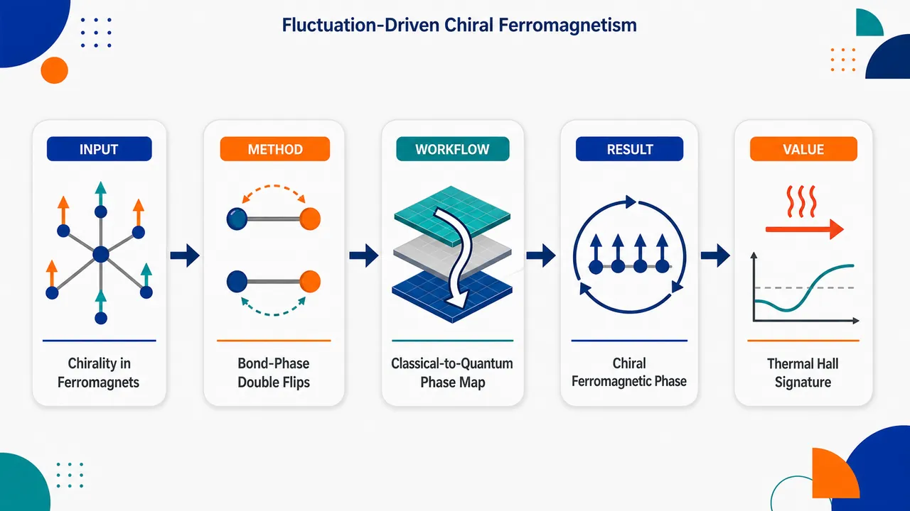
研究问题无阻挫铁磁体通常只有简单共线基态、量子涨落很弱；论文要回答：能否仅靠自旋—轨道耦合产生足够强的量子涨落，使经典非手性的三角晶格 XXZ 铁磁体自发长出标量轨道手性，并形成新的手性铁磁相？创新方法核心 Aha 点是引入由 C₃ᵥ 对称性固定的键依赖、磁化非守恒耦合 J₊γᵢⱼσᵢ⁺σⱼ⁺+h.c.：它像“带方向相位的双自旋翻转引擎”，在每条三角晶格键上虚产生成对翻转，并通过 γᵢⱼ=e⁻ⁱ²φᵢⱼ 给波函数注入轨道角动量；因此即使经典自旋仍共线，也能在三角 plaquette 上生成非零三体标量手性 χ=σᵢ·(σⱼ×σₖ)，且不依赖传统的“矢量手性+外场磁化”机制。工作流程输入三角晶格最近邻 XXZ 铁磁模型与键相位 J₊ 项；先用 Luttinger–Tisza 分析经典相图，得到 FM、FE、AFE stripe 三种非手性共线相及 FE–stripe 简并边界；再用 VUMPS 张量网络在宽度 4–8 圆柱上优化量子基态，测量磁化、标量手性、结构因子和相关长度；辅以 ED 验证中间手性条纹迹象，Landau 理论解释相变与 triple-M 序；最后用 Holstein–Primakoff 自旋波计算 magnon Berry 曲率和热霍尔电导 κxy。关键结果经典相图只有 FM、FE、AFE stripe 三个共线非手性区域；量子相图在 FE–stripe 经典边界附近被大幅重构，出现低磁矩但高标量手性的手性铁磁相，并有证据支持 FM 与 stripe 之间存在手性条纹相。沿 J₊=1 降低 Jz 时，磁化 ⟨σᶻ⟩下降、标量手性 ⟨χΔ⟩上升；矢量手性几乎为零 |⟨Dⱼₖ⟩|≲10⁻⁷，证明手性来自高阶量子关联。手性 magnon 带产生 Berry 曲率，热霍尔响应在靠近经典相变时增强。应用价值该机制开辟“量子关联手性铁磁体”方向：可在莫尔 Wigner 分子晶格、三角 Rydberg 阵列和非 Kramers 稀土材料中寻找由涨落驱动的轨道手性相；其热霍尔效应提供可观测输运指纹，有助于设计无需外场诱导非共线序的手性磁性材料、可调量子模拟平台和拓扑 magnon 输运器件。第一部分：核心概览（Overview）
量子涨落通常难以在无阻挫铁磁体中产生强效应；该研究提出一种由自旋—轨道耦合和磁化非守恒键依赖相位项驱动的新机制，使三角晶格 XXZ 铁磁体在经典共线相边界附近自发形成标量轨道手性。核心贡献在于证明经典相图只含铁磁、铁电、反铁电条纹等非手性共线态，但量子涨落可稳定手性铁磁体与手性条纹相，并产生增强的热霍尔响应。该机制不同于依赖外场诱导磁化与矢量手性的传统路径，为莫尔异质结构、Rydberg 阵列和非 Kramers 自旋材料中的关联铁磁相提供了新方向。
---
第二部分：结构化快速回顾
《Fluctuation-driven chiral ferromagnetism》（None，）
背景
铁磁体因缺乏阻挫而通常具有简单经典基态，量子涨落弱，难以承载复杂关联现象。三角晶格轨道赝自旋体系中的键依赖自旋—轨道耦合可打破这一惯例，使铁磁系统获得强量子涨落。
方法
构造最近邻三角晶格 XXZ 铁磁模型，加入由 C₃ᵥ 对称性约束的磁化非守恒项 J₊γᵢⱼσᵢ⁺σⱼ⁺ + h.c.。使用 Luttinger–Tisza 分析得到经典相图，使用 VUMPS 张量网络在宽度 4–8 圆柱上计算量子基态，并结合 ED、Landau 理论和自旋波热霍尔计算。
结果
经典相图只含三种共线相：FM、FE、AFE stripe。量子相图中，FE–stripe 经典边界附近被强烈重构，出现低磁矩、高标量手性的手性铁磁相；FM 与 stripe 之间还有证据支持手性条纹相。矢量手性几乎为零，标量手性来源于关联量子涨落。
讨论
手性生成机制不依赖传统的 vector chirality + field-induced magnetization，而来自 spin non-conserving J₊ 项反复产生双自旋翻转并通过键相位结构赋予波函数轨道角动量。手性铁磁体的 magnon 带获得 Berry 曲率，导致异常热霍尔效应。
局限
VUMPS 圆柱几何显式破坏 C₃ᶻ，难以完全分辨窄的手性条纹相。自旋波理论只能部分描述强纠缠手性铁磁体中的热霍尔响应；有限温度效应、真实 magnon 波函数修饰、其他晶格推广仍未完成。
结论
磁化非守恒、自旋—轨道诱导的键依赖耦合可使原本简单的铁磁体进入强量子涨落区域，并自发产生标量轨道手性、手性条纹相和热霍尔输运响应，构成一类新的量子关联铁磁体。
---
第三部分：逐章节冷凝解析（Section-by-Section Condensing）
Abstract
- Quantum fluctuations can stabilize chirality in ferromagnets
铁磁材料通常因无阻挫、经典基态简单而抑制量子涨落，但加入自然存在的磁化非守恒耦合后，量子涨落可反过来稳定手性铁磁相。核心断言是：*"Quantum fluctuations are often suppressed in ferromagnetic materials because they admit a simple unfrustrated ground state"*，但进一步出现 *"a chiral ferromagnet that is stabilized by quantum fluctuations"*。
- Spin-orbit interactions convert an achiral classical phase diagram into a chiral quantum phase diagram
经典分析只预测非手性共线态，而量子计算显示出大轨道手性铁磁体和手性条纹相。关键表述为：*"whereas a classical analysis predicts only achiral collinear states, we observe fluctuation-stabilized phases, including a ferromagnet with large orbital chirality and a chiral stripe"*。
- Scalar orbital chirality arises without conventional field-induced canting
传统标量手性常由外场诱导磁化与矢量手性组合产生；这里的标量轨道手性由自旋非守恒项诱发的量子涨落自发生成。证据性表述为：*"such couplings generate a scalar orbital chirality spontaneously, in contrast to conventional mechanisms which rely upon a field-induced canting of vector chiral order"*。
- Transport signature: enhanced thermal Hall effect
手性态具有明确输运特征，即增强的热霍尔效应，并与多类平台相关。对应表述为：*"The resultant chiral states exhibit distinct transport signatures, namely an enhanced thermal Hall effect"*，适用平台包括 *"moiré heterostructures, Rydberg-atom arrays, and solid-state materials featuring non-Kramers spins"*。
---
Introduction / Motivation
- Ferromagnets lack the usual routes to strong quantum fluctuations
反铁磁体即便在双分格最近邻相互作用中也会产生量子涨落，且几何阻挫或长程相互作用会增强涨落；而铁磁体由于无阻挫，改变晶格或相互作用范围仍不改变经典基态。核心对比是：*"This contrasts sharply with antiferromagnets (AFM), where even nearest-neighbor interactions on bipartite lattices induce quantum fluctuations"*；而铁磁体中 *"modifying lattice geometry or interaction range leaves the classical ground state intact"*。
- The central challenge is to generate large quantum fluctuations inside classically ordered phases
关键问题不是摧毁有序，而是在经典有序相中诊断并控制强涨落。该目标由表述 *"diagnosing regimes where large quantum fluctuations can emerge within classically ordered phases constitutes a key challenge in quantum many-body physics"* 精确概括。
- Spin-orbit coupling supplies a non-perturbative route to chiral ferromagnetism
受凝聚态与超冷原子量子模拟平台推动，自旋—轨道相互作用可在普通铁磁体中诱导强涨落，形成非微扰效应。关键句为：*"spin-orbit interactions can induce strong quantum fluctuations in conventional ferromagnets, leading to novel non-perturbative effects"*。
- Scalar chirality is generated although the classical order remains collinear
对称性约束的自旋—轨道项可在经典排列严格共线时仍自发产生标量轨道手性。核心证据是：*"symmetry-constrained spin-orbit coupling terms promote the spontaneous generation of scalar orbital chirality, even when the underlying classical ordering patterns are strictly collinear"*。
---
Model and Symmetries
- Triangular-lattice nearest-neighbor ferromagnetic XXZ model with orbital pseudospins
模型为三角晶格最近邻铁磁 XXZ Hamiltonian，局域自由度是轨道角动量编码的赝自旋 σ。原始表述为：*"let us consider a nearest-neighbor (NN) ferromagnetic XXZ Hamiltonian on a triangular lattice, where the pseudospin-up and -down states are encoded in orbital angular momentum degrees of freedom"*。
- Time reversal acts unusually on orbital pseudospins
轨道赝自旋中，σᶻ 在时间反演下为奇，面内分量 σˣ, σʸ 为偶，因此面外序对应铁磁性，面内序对应铁电性。精确表述为：*"σz is flipped under time-reversal (i.e. is odd), the in-plane projection of the pseudospin (σx,σy) transforms trivially (i.e. is even)"*，并且 *"out-of-plane ordering corresponds to ferromagnetism, while in-plane ordering corresponds to ferroelectricity"*。
- Reduced C₃ᵥ symmetry permits a unique bond-dependent magnetization-non-conserving term
轨道自由度来自较低三重对称性的在位势，面内旋转对称性降为 C₃ᵥ。该点群唯一允许的键依赖项是 J₊γᵢⱼσᵢ⁺σⱼ⁺ + h.c.，其中 γᵢⱼ = e⁻ⁱ²φᵢⱼ。关键表述为：*"such orbital degrees of freedom often arise from on-site potentials with a smaller threefold symmetry"*；以及 *"it is the only bond-dependent coupling allowed by the C3v point group; this symmetry also fixes the phase γij=e−i2ϕij"*。
- The Hamiltonian contains easy-axis, easy-plane, and spin-non-conserving couplings
Hamiltonian 为
H = −Σ⟨ij⟩[Jz σᶻᵢσᶻⱼ + (J/2 σ⁺ᵢσ⁻ⱼ + h.c.)] − Σ⟨ij⟩J₊(γᵢⱼσ⁺ᵢσ⁺ⱼ + h.c.)，并设 J = 1。前两项是简单铁磁 XXZ，第三项是核心涨落来源。原文：*"the first two terms correspond to a simple ferromagnetic Hamiltonian with easy-axis and easy-plane anisotropy"*；*"we focus on the third term J+ which naturally dresses the easy-axis ferromagnet with quantum fluctuations"*。
- Only nonnegative J₊ needs to be analyzed
键相位结构使 J₊ → −J₊ 等价于绕 ẑ 旋转 π/2，因此只需考虑 J₊ ≥ 0。原句：*"flipping the sign of J+ is equivalent to a pseudospin rotation of π/2 about ẑ; for this reason we restrict our analysis to J+≥0"*。
- Time reversal forbids σ⁺σᶻ-type mixing terms
常见自旋—轨道模型中的面内/面外混合项，例如 σ⁺σᶻ，在该轨道赝自旋体系中被时间反演严格禁止。证据为：*"interaction terms that mix between in- and out-of-plane components (e.g. σ+σz) ... are strictly prohibited by time-reversal"*。
- Weak Dzyaloshinskii-Moriya interaction is not central
虽然 C₃ᵥ 无反演可允许 DM 相互作用，但弱 DM 项不显著改变量子相图；若系统保持 C₆ 对称性，则 Im[J]=0。原文为：*"a weak DM term does not significantly affect the quantum phase diagram"*，以及 *"This condition is enforced if the system preserves C6 symmetry"*。
---
Collinear classical ordering
- Without J₊, the ground state is unfrustrated and translation invariant
当 J₊ = 0 时，Hamiltonian 无阻挫，基态为平移不变：若 Jz > J，为铁磁 FM；若 Jz < J，为面内铁电 FE，电极化 P = ẑ × ⟨σ⟩。原文：*"When J+ is absent, the Hamiltonian H has no frustration and the ground state becomes a simple translation-invariant state"*；具体条件为 *"a ferromagnet (FM) for Jz>J, and an in-plane ferroelectric (FE) ... for Jz<J"*。
- Large J₊ favors antiferroelectric stripe order
大 J₊ 的键依赖相位项在每个格点周围偏好不同面内方向，因此破坏平移和 C₃ᶻ 旋转，形成两站点晶胞的反铁电条纹相。原文：*"at large J+, we expect a configuration that breaks both translation and rotation (C3z) symmetries"*，并且偏好 *"an antiferroelectric (AFE) stripe order with a two-site unit cell"*。
- Luttinger–Tisza analysis uses a 3×3 Fourier-space interaction matrix
经典相图通过 Luttinger–Tisza 方法求解，寻找赝自旋空间中傅里叶变换 3×3 interaction matrix Jσσ′(q) 的最低能本征矢。证据为：*"The preferred ordering patterns are determined by the minimum-energy eigenvector of the Fourier-transformed 3×3 interaction matrix"*。
- Weak and strong LT constraints distinguish formal minima from valid classical states
弱 LT 只要求平均单位长度；强 LT 要求每个赝自旋单独满足单位长度。原文：*"Within the weak LT approximation, the pseudospins are only constrained to have unit length on average"*；有效经典构型必须满足 *"each individual pseudospin must have unit length"*。
- Classical phase diagram contains only three simple collinear phases
小 J₊ 时最低点在 Γ(q=0)，对应均匀 FE 或 FM；超过临界 J₊ 后最低点迁移到 M 点，对应 AFE stripe。总结性证据为：*"For small J+, the minimum ... lies at the Γ point"*；*"beyond a critical value of J+, the minimum ... moves to the M point"*；以及 *"the phase diagram of H consists of three simple collinear phases"*。
- The FE–stripe boundary is classically degenerate and signals enhanced quantum fluctuations
在 J₊ = J 的 FE–stripe 边界，弱 LT 解沿连接 Γ 与 M 的线存在，表示从 FE 到 AFE stripe 连续插值的共线非公度条纹，显示大简并度。原文：*"at the boundary between the FE and stripe phases (J+=J), the energy minima ... are not unique"*，且 *"solutions ... are satisfied along the lines that connect the Γ and the M points"*。
- Boundary LT solutions fail the strong constraint
边界处弱 LT 解不能满足强 LT 约束，说明并非简单经典自旋构型，预示量子涨落会强烈介入。证据为：*"these solutions cannot satisfy the strong LT condition, indicating that they do not admit a simple classical spin configuration"*。
---
Quantum phase diagram
- VUMPS on cylinders of width 4–8 gives the quantum ground state
量子相图通过大规模张量网络 VUMPS 计算，圆柱宽度为 4–8。原文为：*"we employ large-scale tensor network computations with VUMPS on cylinders of width 4–8"*。
- Quantum fluctuations strongly reshape broad regions of the classical phase diagram
量子涨落不仅选择 FE 方向，还诱导手性铁磁相。关键句为：*"quantum fluctuations significantly modify the classical phase diagram over large swaths of parameter space, namely by restricting the orientation of the FE state and inducing a chiral ferromagnet"*。
- FE orientation is locked by order-by-disorder
经典 FE 中 ⟨σ⟩ 可指向面内任意方向；VUMPS 显示其锁定为垂直于晶格矢量方向。该选择可由order-by-disorder 解释：线性自旋波零点能在该方向最低。证据为：*"VUMPS ground state optimization finds that the ordering is locked perpendicular to the direction of the lattice vectors"*；机制为 *"the harmonic zero-point energy of the FE phase ... is lowest when the polarization aligns perpendicular to the lattice directions"*。
- The classical FE–stripe boundary is replaced by FM even as Jz → 0
最强重构发生在 FE–stripe 经典边界附近：该区域几乎全部被 FM 替代，即使 Jz 趋近零。原句：*"the entire vicinity of the classical phase boundary is replaced by the FM, even as Jz goes to zero"*。
- Small-Jz FM is not a saturated product ferromagnet
大 Jz 的 FM 近似乘积态，磁化接近饱和 ⟨σᶻᵢ⟩ ≈ 1；小 Jz 的 FM 具有强量子涨落，序参量很小。原文：*"the collinear FM at large Jz ... is (nearly) a product state with almost saturated magnetization ⟨σzi⟩≈1"*；相反 *"the FM state at small Jz exhibits strong quantum fluctuations: the size of the ordered moment is quite small"*。
- Scalar orbital chirality is finite on every triangular plaquette
手性铁磁相具有非零三体标量手性
⟨χᵢⱼₖ⟩ = ⟨σᵢ · (σⱼ × σₖ)⟩。关键证据为：*"its scalar orbital chirality, ⟨χijk⟩=⟨σi⋅(σj×σk)⟩, is non-zero for each triangular plaquette"*。
- Along J₊ = 1, decreasing Jz increases chirality and decreases magnetization
图 2(b) 显示沿 J₊ = 1 蓝线降低 Jz 时，量子涨落增强，表现为 ⟨σᶻ⟩ 降低、⟨χΔ⟩ 增加。图注证据：*"As Jz decreases along the blue line in (a) [J+=1], quantum fluctuations become more significant. This is manifested by the decrease in magnetization ⟨σz⟩ and increase in scalar chirality ⟨χΔ⟩"*。
- The J₊ term generates chirality through double spin flips and C₃ᶻ phases
从全极化 FM |ψFM⟩ = Πᵢ|↓⟩ 出发，J₊ 项每次产生两个自旋翻转，赋予自旋部分 ω² 的 C₃ᶻ 本征值；为保持整体平凡表示，空间波函数需获得 ω 相位，该相位由 γᵢⱼ 提供。原文：*"At each step, the J+ term creates two spin flips, so the spin contribution to the C3z eigenvalue is ω2"*；以及 *"the spatial part of the wavefunction needs to acquire a phase ω under rotation, which is imparted by the associated phase factors γij"*。
- Chirality is produced at the expense of z-magnetization while symmetry is preserved
J₊ 平滑产生手性并降低 z 向磁化，但不改变整体对称表示。证据为：*"the J+ term serves to smoothly generate chirality at the expense of zz-magnetization, altering the character of the ferromagnet while preserving its symmetry properties"*。
- The mechanism is distinct from vector-chirality-driven scalar chirality
传统手性反铁磁中，DM 或自旋相互作用先产生矢量手性 Dⱼₖ = ⟨σⱼ × σₖ⟩，再与磁化 mᵢ 组合产生 ⟨χᵢⱼₖ⟩ ≈ mᵢ · Dⱼₖ。这里计算得到 |⟨Dⱼₖ⟩| ≲ 10⁻⁷，几乎为零。原文：*"either an explicit DM term ... drive a non-zero expectation value of the vector chirality"*；而此处 *"|⟨Djk⟩|≲10−7"*，说明 *"the observed scalar chirality arises from correlated quantum fluctuations of different in- and out-of-plane pseudospin components"*。
---
Phase transitions and the intermediate chiral stripe
- FE–FM transition is first order except at the SU(2) point
FE–FM 相变除 Jz = J, J₊ = 0 的 SU(2) 对称点外是不连续一阶相变。原文：*"The transition between the FE and the FM is discontinuous (i.e. first-order) except at the special SU(2)-symmetric point Jz=J and J+=0"*。
- VUMPS detects first-order behavior through energy kinks and metastability
一阶相变证据包括能量密度不可微尖点，以及 VUMPS 可收敛到 FE 或 FM 的亚稳区域。证据为：*"a non-differentiable kink in the energy density and a finite region of ‘metastability’ around the transition where VUMPS can converge on either FE or FM states"*。
- Landau symmetry arguments forbid generic continuous FE–FM transition
FE 与 FM 破缺不同对称性：FE 破缺 C₃ᶻ，FM 破缺 𝒯，连续相变除精细调参外被 Landau 理论禁止。原文：*"the FE and FM phases break different symmetries (C3z and T respectively) and a continuous phase transition is thus Landau-forbidden unless fine-tuned"*。
- FM–stripe transition appears smoother than expected
按同样 Landau 逻辑，FM 破缺 𝒯 和 Mᵧ，stripe 破缺平移和 C₃ᶻ，也应一阶；但数值能量平滑，转移矩阵相关长度似乎发散，暗示连续或弱一阶。证据为：*"the transition between the FM ... and the stripe antiferroelectric ... should also be first order"*；但 *"the obtained energies vary smoothly and the transfer matrix correlation length appears to diverge"*。
- At Jz = 0.4, J₊ = 1.28 magnetization and chirality vanish together
图 3(a) 给出固定 Jz = 0.4 扫描 J₊ 的量化特征：在 J₊ = 1.28，⟨σᶻ⟩ 与 ⟨χΔ⟩ 同时消失，相关长度 ξ 出现峰值。图注证据：*"at J+=1.28, the magnetization ⟨σz⟩ and chirality ⟨χΔ⟩ vanish simultaneously"*；*"The correlation length ξ obtained from VUMPS peaks"*。
- A chiral stripe phase may split the apparent FM–stripe transition
一种解释是不存在单一直接相变，而是两个相近连续相变：FM → chiral stripe → collinear stripe。原文：*"not a single direct transition, but rather two closely spaced continuous phase transitions: first from the FM to a chiral stripe and then to the collinear stripe phase"*。
- Cylinder geometry complicates chiral stripe identification
无限圆柱显式破坏 C₃ᶻ，使 VUMPS 可能把 FM 与 stripe 平滑连接，从而难以清晰区分中间相。证据为：*"The infinite cylinder geometry explicitly breaks C3z, allowing the system to smoothly connect between the FM and the stripe phase"*。
- Structure factor asymmetry signals incipient C₃ᶻ breaking inside FM
在 FM 一侧，三个由 C₃ᶻ 关联的 M 点结构因子出现不对称，并在靠近 stripe 相时增强。图注给出 Jz = 0.4, J₊ = 1.24 的 onset，以及 (J₊,Jz)=(1.55,0.4)、Ly=6、D=2048 的结构因子切片。证据：*"at J+=1.24, we observe the onset of C3z-symmetry breaking"*；*"this C3z symmetry breaking grows [Jz=0.4]"*。
- ED on C₃ᶻ-preserving clusters supports an intermediate chiral stripe
为避免圆柱几何偏置，使用保留 C₃ᶻ 的 ED 团簇。FM 与 stripe 之间出现两重简并基态，手性相反，兼具面外均匀铁磁关联和三个 M 点的面内铁电关联。原文：*"we perform an exact diagonalization (ED) study ... on clusters that explicitly preserve C3z"*；结果为 *"two degenerate ground states of opposite chirality"*，并且 *"out-of-plane uniform ferromagnetic correlations ... as well as in-plane ferroelectric correlations at the three M points"*。
- 28-site ED cluster reveals translation breaking with ferromagnetic z correlations
图 3(d) 使用 28-site cluster、周期边界条件，在 (J₊,Jz)=(1.25,0.2) 计算 ⟨σ₀⁺σᵢ⁻⟩。最近邻面内反铁电关联提示 4-site unit cell 平移破缺，同时 ⟨σ₀ᶻσᵢᶻ⟩ > 0 保持铁磁性。图注证据：*"ED computation ... on a 28-site cluster with periodic boundary conditions ... at (J+,Jz)=(1.25,0.2)"*；*"NN antiferroelectric correlations in plane indicates translation symmetry breaking with a 4-site unit cell, while the system remains ferromagnetic [⟨σ0zσiz⟩>0]"*。
- Landau theory uses one real FM field and three complex M-point stripe fields
热力学极限的平均场理论引入实软场 m₀ 与三个复软场 ψₙ：
⟨σᶻᵢ⟩ = m₀, ⟨σ⁺ᵢ⟩ = ΣₙψₙeⁱMₙ·rᵢ。原文：*"The free energy is described by a real soft field m0 and three complex soft fields ψn"*。
- Chiral stripe corresponds to equal-amplitude triple-M order plus finite m₀
手性条纹相条件为 m₀ ≠ 0 且 ψ₁ = ω²ψ₂ = ωψ₃ ≠ 0，有时称为稠密 skyrmion crystal。它可胜过共线条纹 m₀ = 0, ψ₁ ≠ 0, ψᵢ>1 = 0 和 canted umbrella m₀ ≠ 0, ψ₁ = iψ₂ ≠ 0, ψ₃ = 0。原文：*"the chiral stripe phase (m0≠0 and ψ1=ω2ψ2=ωψ3≠0, sometimes described as a dense skyrmion crystal) state can be stabilized"*。
- Equal distribution over three M points is favored by interaction hierarchy
当三个 M 点软场振幅的自排斥大于相互排斥时，系统偏好 |ψₙ| 在三个 M 点均匀分布，从而稳定手性条纹。证据为：*"This occurs when the self-repulsion between the amplitudes of the soft fields at the three M points is larger than their mutual repulsion"*。
---
Anomalous thermal Hall effect
- Spontaneous orbital chirality implies anomalous Hall-type transport
具有自发轨道手性的态应出现异常 Hall 信号；手性铁磁中的 magnon 感受 Bloch 带 Berry 曲率并产生热霍尔效应。原文：*"A key experimental feature of states with spontaneous orbital chirality is an anomalous Hall signal"*；*"the magnons in the chiral ferromagnet experience the Berry curvature of their Bloch bands, and can therefore exhibit a thermal Hall effect"*。
- Holstein–Primakoff spin-wave theory yields magnon spectra and wavefunctions
从全极化 FM 出发，使用 Holstein–Primakoff transformation 计算 magnon 谱 ε(k) 与波函数。原文：*"Starting with the fully polarized FM, we compute the magnon spectra ε(k) and wavefunctions using the Holstein-Primakoff transformation"*。
- Complex magnon hopping phases break T and My and generate Berry curvature
二次 magnon Hamiltonian 中的复相位同时破坏时间反演 𝒯 与镜面对称 Mᵧ，从而诱导 Berry 曲率 Ω(k)。证据为：*"The complex phases in the quadratic magnon Hamiltonian ... break both time-reversal and reflection My, inducing Berry curvature Ω(k) for the magnon band"*。
- Thermal Hall conductivity is computed from Berry curvature over the Brillouin zone
二维 magnon 热霍尔电导为
κxy = −(kB²T/ℏ)∫BZ d²k/(2π)² [c₂[nB(ε(k))] − π²/3] Ω(k)，其中 nB(ε)=[exp(ε/kBT)−1]⁻¹。原文公式给出：*"the 2D magnon thermal Hall conductivity takes the form"* 后接上述表达式。
- Thermal Hall response grows near the classical transition
沿 J₊ = 1.0 改变 Jz 时，减小 Jz/J 会增大热霍尔电导量级，反映轨道手性增强。图注与正文证据：*"The thermal Hall conductivity along the line J+=1.0 for different values of Jz where we see the magnitude of the conductivity increases as the classical transition is approached"*；以及 *"the increased magnon thermal Hall conductance from decreasing Jz/J signals the significant enhancement of the orbital chirality"*。
- Spin-wave theory is quantitatively incomplete in the strongly entangled regime
自旋波理论不能精确捕捉强涨落手性 FM 的基态和激发，特别是小 Jz 时 VUMPS 纠缠谱显示纠缠增强。原文：*"spin-wave theory can only partially capture such an effect, because it does not precisely capture the ground state and its excitations"*；例如 *"the enhanced entanglement at smaller Jz as indicated by the VUMPS entanglement spectrum"*。
---
Experimental realizations
- Three platforms can naturally realize the Hamiltonian
可实现平台包括扭转 Γ-valley TMD 莫尔 Wigner 分子晶格、三角 Rydberg 阵列和非 Kramers 自旋材料。原文：*"We propose three distinct platforms"*。
- Moiré Wigner molecules in twisted Γ-valley TMDs provide orbital pseudospins
在扭转 Γ-valley TMD 中，每个 Wigner 分子位于三角莫尔超晶格站点，低能空间四维，由轨道角动量 σᶻ = ±1 与自旋 ±1/2 组成。证据为：*"each molecule is localized at a triangular moiré superlattice site and possesses a four-dimensional low-energy state space composed of orbital angular momentum σz=±1 and spin ±1/2"*。
- Normal magnetic field polarizes spin without linearly coupling to orbital pseudospin
垂直镜面的磁场不线性耦合轨道赝自旋，但可极化真实自旋，从而得到 Eq. (1) 的有效 Hamiltonian。原文：*"Applying a magnetic field normal to the mirror plane does not couple linearly to the orbital pseudospin while polarizing the spins. This leads to the Hamiltonian in Eq. (1)"*。
- Twisted WS₂ parameters are concrete: 4.5° and εr = 11
对扭转 WS₂，可用扭角 4.5° 和衬底介电常数 εr = 11 实现。原句：*"For twisted WS2, this can be achieved with a twist angle of 4.5∘ and a substrate dielectric constant εr=11"*。
- Rydberg arrays naturally contain the required spin-non-conserving phase structure
三角 Rydberg array 中赝自旋编码于两个 Rydberg 态；偶极相互作用自然包含具有所需相位结构的自旋非守恒项。证据：*"the pseudospins are encoded in two Rydberg states"*；*"The dipolar coupling between the Rydberg states naturally includes a spin non-conserving term with the necessary phase structure"*。
- Resonant engineering and highest-excited-state preparation enable ferromagnetic phase exploration
通常因能级差大而忽略的非守恒项，可通过磁场调谐为共振；原生反铁磁相互作用下，可初始化最高激发态并绝热制备 −H 的最高激发态，等价于 H 的基态。原文：*"applying a magnetic field to ensure they are resonant ensures that the relevant interactions match Eq. (1)"*；以及 *"initializing the system in the highest excited state, and adiabatically preparing the highest excited state of −H, or equivalently, the ground state of H"*。
- Long-range interactions in Rydberg platforms may tune quantum fluctuations
Rydberg 平台还能研究长程相互作用对量子涨落的抑制或增强。原文：*"one can explore how long-range interactions may suppress or enhance the system’s quantum fluctuations"*。
- Non-Kramers triangular materials naturally host related anisotropic interactions
稀土三角晶格等非 Kramers 自旋材料自然具有类似相互作用；耦合符号取决于微观交换路径。证据为：*"materials featuring non-Kramers spins ... naturally exhibit the interactions studied in this work"*；但 *"Whether the signs of the couplings are ferro- or anti-ferromagnetic depends on the microscopic exchange pathways"*。
---
Conclusions and outlook
- Spin-orbit-assisted quantum fluctuations spontaneously induce scalar orbital chirality in a ferromagnet
结论的核心是：自旋—轨道耦合辅助的量子涨落可在铁磁体中自发诱导标量轨道手性。原文：*"quantum fluctuations aided by spin-orbit coupling can spontaneously induce scalar orbital chirality in a ferromagnet"*。
- The mechanism differs from field-induced vector-chirality mechanisms
该轨道手性发生在经典共线相边界附近，由强量子涨落产生，而非由时间反演对称的矢量手性与外场磁化组合产生。证据为：*"The orbital chirality arises spontaneously via strong quantum fluctuations near the phase boundary between classically collinear phases"*；并与 *"a non-zero expectation value of time-reversal symmetric vector chirality in combination with an external field-induced magnetization"* 形成对比。
- A new category of quantum correlated ferromagnets is opened
该机制为铁磁体研究提供新类别，即具有强量子涨落和自发手性的量子关联铁磁体。原文：*"This opens up a new category of quantum correlated ferromagnets to explore"*。
- Future direction 1: finite-temperature chirality
已研究 T = 0 相图，但未研究热涨落效应；热涨落在手性反铁磁自旋波理论中可能增强手性。原文：*"we studied the spontaneous emergence of chirality in the T=0 phase diagram, but not the effect of thermal fluctuations"*。
- Future direction 2: chirality-dressed magnon wavefunctions
手性轨道铁磁体有低能 magnon 激发，但其量子波函数应显著不同于乘积态 FM 中的传统自旋波。原文：*"their quantum wavefunctions are expected to be very distinct from those of conventional spin-wave excitations in a product state FM"*；开放问题是 *"how orbital chirality ‘dresses’ the magnon wavefunction and impacts the magnon spectrum and dynamics"*。
- Future direction 3: other lattices with chiral orbital pseudospins
相位受限各向异性扰动并非三角晶格独有；任何以简并手性/反手性轨道编码局域赝自旋的晶格都可能出现。证据：*"such phase-constrained anisotropic perturbations to an XXZ Hamiltonian are not specific to the triangular lattice"*；并且 *"realistically be present in any lattice with local pseudospin degrees of freedom encoded in degenerate chiral/anti-chiral orbitals"*。
---
第四部分：深度理解与语言支持（Understanding & Nuance）
1. 术语解析
- Fluctuation-driven
学术含义：相并非由经典能量最小化直接稳定，而是由量子零点运动、虚跃迁、纠缠等涨落效应稳定。这里的 *"fluctuation-stabilized phases"* 指经典相图没有的 FM 手性区域和 chiral stripe。微妙点：不是“有涨落”而已，而是涨落改变了相图拓扑，甚至把经典 FE–stripe 边界附近替换成 FM。
- Magnetization-non-conserving coupling
指不守恒总 Σσᶻ 的相互作用，例如 σᵢ⁺σⱼ⁺ + h.c. 同时翻转两个赝自旋。这里 J₊ 项使全极化 FM 不再是简单本征态，而被双翻转虚过程“穿衣”。微妙点：它不是普通 transverse exchange σᵢ⁺σⱼ⁻，后者守恒磁化；σ⁺σ⁺ 项直接制造强量子涨落。
- Scalar orbital chirality
数学形式为 χᵢⱼₖ = σᵢ · (σⱼ × σₖ)，是三体手性量。与常见“spin chirality”类似，但这里 σ 是轨道赝自旋，因此称为 orbital chirality。微妙点：面内分量在时间反演下为偶，面外分量为奇，使其对称性质不同于普通真实自旋。
- Order-by-disorder
指经典简并态之间，量子或热涨落通过零点能差异选择特定有序态。这里 FE 的经典面内方向任意，但自旋波零点能选择垂直晶格矢量的极化方向。关键不是显式各向异性能量直接选向，而是涨落谱的各向异性选择。
- Landau-forbidden
指按 Landau 相变理论，若两相破缺无包含关系的不同对称性，泛型连续相变不允许，除非存在精细调参、额外临界理论或中间相。这里 FE–FM 因分别破缺 C₃ᶻ 与 𝒯，连续相变被禁止；FM–stripe 的数值“近连续”因此提示可能有中间 chiral stripe。
2. 疑难查证
- 为什么无阻挫铁磁体也能产生强量子涨落？
普通铁磁 Heisenberg 或 XXZ 模型中，全体自旋同向排列同时优化所有键，量子涨落没有空间。但 J₊γᵢⱼσᵢ⁺σⱼ⁺ 不守恒磁化，并且不同键携带不同相位；它会从全极化态中虚产生双自旋翻转。由于相位 γᵢⱼ = e⁻ⁱ²φᵢⱼ 随键方向变化，这些虚翻转携带角动量结构，无法简单看作局域幅度修正，最终在三角 plaquette 上累积出非零三体手性。
- 为什么标量手性可以在矢量手性几乎为零时出现？
传统近似 ⟨σᵢ·(σⱼ×σₖ)⟩ ≈ ⟨σᵢ⟩·⟨σⱼ×σₖ⟩ 把三体关联分解成一体磁化和二体矢量手性。这里 |⟨Dⱼₖ⟩| ≲ 10⁻⁷，说明这种因子分解路径不存在。真正的 ⟨χ⟩ 来自三体量子关联，不能被简单写成“平均磁化 × 平均矢量手性”。换言之，标量手性是纠缠态中的高阶关联，而不是经典非共线构型的几何结果。
- 为什么 FM–stripe 看似连续却按 Landau 理论应一阶？
FM 破缺时间反演和镜面对称，stripe 破缺平移和三重旋转；这两组序参量没有简单包含关系，直接连续相变不自然。数值上能量平滑、相关长度峰化，可能有三种解释：其一，真实相变弱一阶，有限 bond dimension 和有限圆柱宽度难分辨；其二，存在两个连续相变，中间为 chiral stripe；其三，临界点有非常规 deconfined 或多序参量耦合行为。ED 和 Landau 理论更支持第二种。
---
第五部分：创新评估与关联（Synthesis & Novelty）
1. 创新性判断
- 从“反铁磁/阻挫体系的手性”转向“无阻挫铁磁体系的涨落手性”
近年相关工作多集中于 kagome、honeycomb、triangular antiferromagnets 中由 DM、外场、非共线序或矢量手性诱导的标量手性。该研究把手性产生机制推进到经典共线铁磁体中，解决了“铁磁体缺乏强量子涨落机制”的问题。
- 提出磁化非守恒键依赖项作为铁磁涨落引擎
关键新颖性不是简单加入自旋—轨道耦合，而是识别出由 C₃ᵥ 对称性唯一允许的 J₊γᵢⱼσᵢ⁺σⱼ⁺ 项可系统性地产生强涨落与手性。该项同时具备三种功能：不守恒磁化、携带键方向相位、保持整体对称约束。
- 标量手性不依赖矢量手性平均值
过去机制常可理解为 scalar chirality ≈ magnetization · vector chirality。这里数值显示 |⟨Dⱼₖ⟩| ≲ 10⁻⁷，但 ⟨χ⟩ ≠ 0，说明标量手性来自高阶关联涨落。这是概念层面的核心突破。
- 经典相图与量子相图发生定性重构
经典 LT 分析只给出 FM / FE / AFE stripe 三个共线非手性相；VUMPS 和 ED 显示量子涨落在 FE–stripe 边界附近稳定 chiral FM 和可能的 chiral stripe。这不是对经典相边界的小修正，而是相图主体区域的重排。
- 连接输运可观测量与量子手性相
通过 magnon Berry curvature 与 κxy 计算，手性铁磁体被关联到可测的热霍尔效应。虽然自旋波理论在强纠缠区不完整，但提供了实验识别手性轨道铁磁体的直接路线。
- 平台相关性强于纯模型构造
莫尔 Wigner 分子、Rydberg 阵列、非 Kramers 稀土材料均具备实现条件。特别是 twisted WS₂ 给出具体参数 twist angle = 4.5°、εr = 11，增强了从理论相图到实验探索的可行性。
- 解决的前沿问题
过去 2–5 年中，手性相、spin-orbit-induced chiral phases、Rydberg dipolar arrays、moiré orbital magnetism 等方向快速发展，但仍缺乏一种清晰机制说明：无阻挫铁磁体能否仅靠对称允许的微观耦合产生强量子涨落和自发手性？ 该研究给出肯定答案，并把机制、数值证据、Landau 理论、输运特征和实验平台连成闭环。
-
13
📊 含图深析
💡 亮点：超快光可耦合翻转铁电和交错磁序。
📖 展开分析 + 配图
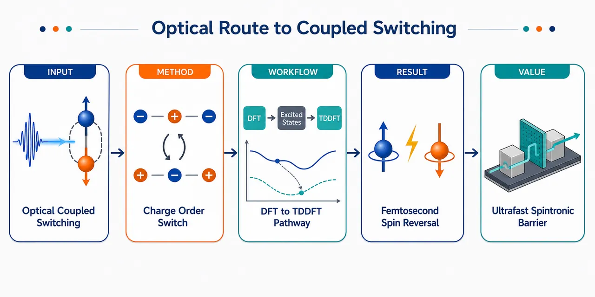
研究问题如何在不引入净磁化、避免电极漏电和介电击穿的条件下，用飞秒激光同步反转铁电极化与交错磁性的动量空间自旋极化；核心画面是一个无净磁矩的交错磁晶体中，电偶极箭头和红蓝自旋劈裂图案同时翻转。创新方法提出“电荷有序”作为共同微观开关：在混合价 LiV₂F₆ 中，V²·⁵⁺ 分化为交替排列的 V²⁺/V³⁺，该价态图案同时打破反演对称产生铁电极化，并把磁结构转化为 d 波交错磁态；飞秒光脉冲直接驱动 V 位点间电子跃迁，从而让极化箭头和交错磁自旋极化同步翻转，这是论文的 Aha 点。工作流程从已合成三金红石 LiV₂F₆ 高对称结构出发，识别 V 平均价态 +2.5；用对称性分析和 GGA+U 比较 HSS 与低对称电荷有序 LSS；用声子谱验证稳定性，用 Berry phase 计算极化，用 CI-NEB 求极化翻转势垒；再分析上下极化态能带自旋劈裂是否反向；最后用实时 TDDFT 模拟飞秒激光下 V1→V4、V3→V2 的电荷转移，得到光诱导耦合切换路径。关键结果低对称 LiV₂F₆ 出现稳定 V²⁺/V³⁺ 电荷有序相，无虚频；在 U ≥ 5 eV 时基态为 AM2 d 波交错磁态；铁电极化为 12.1 μC/cm²，点电荷估计 10.6 μC/cm²，翻转势垒约 0.55 eV/f.u.；上下极化态能带形貌相同但自旋极化完全反向；TDDFT 显示激光激发后约 12 fs 内发生显著 V 位点电荷转移，V1 电荷从 10.56 e 降至 10.43 e，V4 从 10.37 e 升至 10.54 e。应用价值为超快、非接触、无净磁化的自旋电子器件提供材料方案：LiV₂F₆ 可作为可切换交错磁铁电势垒，通过光脉冲改变自旋匹配和自旋依赖电导，而无需翻转铁磁电极磁化；同时给出筛选规则——高对称相需有磁性原子分数价态，电荷有序破缺反演后应诱导交错磁性。第一部分：核心概览（Overview）
提出一种以电荷有序为共同微观序参量的机制，使铁电极化反转与交错磁性（altermagnetism）自旋极化反转能够被超快光场同步触发。核心材料平台为已合成的混合价三金红石型 LiV₂F₆：第一性原理预测其低对称电荷有序相具有稳定铁电性、d 波交错磁性和强磁电耦合；TDDFT 显示飞秒激光可驱动 V²⁺/V³⁺之间的电荷转移。该工作把近年兴起的铁电可切换交错磁体推进到非接触、超快光控层面，为交错磁自旋电子学提供可实验检验的材料与设计规则。
---
第二部分：结构化快速回顾
《Ultrafast optical route to coupled ferroelectric and altermagnetic switching》（None，）
背景
交错磁体兼具补偿磁序与动量依赖自旋劈裂，适合无净磁化的自旋电子学；关键挑战是如何在不引入净磁矩的情况下切换自旋劈裂。铁电交错磁体可通过极化反转同步反转交错磁自旋极化，但已有方案多集中于电控，容易受漏电和击穿限制。
方法
采用对称性分析、GGA+U 第一性原理计算、声子谱稳定性检验、Berry-phase 极化计算、CI-NEB 极化反转路径计算和实时 TDDFT 光激发动力学模拟，研究混合价三金红石型 LiV₂F₆ 的高对称相、低对称电荷有序相、磁序、铁电性和光诱导电荷转移动力学。
结果
高对称 LiV₂F₆ 中 V 平均价态为 +2.5，有利于电荷有序。低对称相出现 V²⁺/V³⁺ 价态分化，形成铁电极化 P = 12.1 μC/cm²，点电荷估计为 10.6 μC/cm²，极化翻转势垒约 0.55 eV/f.u.。在 U ≥ 5 eV 时，磁基态转变为低对称相 AM2 d 波交错磁态。上下极化态能带形貌相同，但自旋极化完全反转。TDDFT 显示光激发下 12 fs 内 V 位点电荷发生显著转移。
讨论
电荷有序同时诱导反演破缺铁电性和交错磁性，从而形成强磁电耦合。与传统位移型铁电体相比，电荷有序铁电体的极化反转可由电子跃迁主导，更适合飞秒光控。LiV₂F₆ 的光控路径规避了电极接触、漏电流和介电击穿问题。
局限
低温低对称电荷有序相仍为理论预测，尚需实验确认；TDDFT 展示的是光诱导电荷转移通道，而非完整器件级可逆循环；关键结果依赖 U = 5 eV 的选择和具体光脉冲设定，实验中还需验证热效应、缺陷、畴结构和开关疲劳。
结论
LiV₂F₆ 是候选的电荷有序诱导铁电交错磁体。其铁电极化与交错磁自旋极化存在一一对应关系，飞秒激光可沿电荷转移路径触发二者耦合切换。设计原则包括：高对称相应含有磁性原子的分数价态；电荷有序导致的反演破缺应产生高对称相中不存在的交错磁性。
---
第三部分：逐章节冷凝解析（Section-by-Section Condensing）
> 原稿可见显式章节标题包括 Abstract、Acknowledgement、References；主体为 Letter 式连续正文，未设置“Introduction / Results / Discussion”等显式标题。以下按原始可见结构解析，并将无标题主体标记为 Untitled main text。
---
Abstract
Coupled optical switching problem
核心科学问题是如何通过非电接触方式同步控制铁电极化与交错磁性。摘要明确指出传统研究已经大量关注多铁材料中的电控磁性，但飞秒激光同步切换铁电性与交错磁性仍是空白：*"Although extensive studies have been conducted on electrical switching of magnetism in multiferroic materials, simultaneous ultrafast laser switching of ferroelectric polarization and altermagnetism remains unexplored."* 这一表述直接界定了创新空间：从电场切换磁性推进到光场同步切换极化与交错磁序相关自旋极化。
Charge-order-induced mechanism
提出的核心机制是利用电荷有序诱导的交错磁铁电体，使同一电荷序参量同时控制两个功能序：*"we propose that the ultrafast laser can be used to switch ferroelectric polarization and altermagnetism concurrently in charge-order-induced altermagnetic ferroelectrics."* 这里的关键不是普通多铁耦合，而是charge order 同时作为铁电性来源和交错磁性来源，从微观上增强磁电耦合。
LiV₂F₆ as a concrete platform
材料实现落在 LiV₂F₆ 上，并通过对称性分析与 TDDFT 展示双重切换可行性：*"such dual switching can be realized in charge-order-induced altermagnetic ferroelectric LiV₂F₆ by symmetry analysis and time-dependent density functional theory (TDDFT) calculation."* 摘要还强调 LiV₂F₆ 已经被实验合成，使预测具有直接实验可达性：*"Given that LiV₂F₆ has already been experimentally synthesized..."*
Device relevance
潜在应用定位于超快自旋电子器件：*"holds potential application value in future ultrafast spintronic devices."* 该应用逻辑基于交错磁体的优势：无净磁化但具有自旋劈裂，可降低杂散场干扰，同时通过铁电极化实现可控自旋极化反转。
---
Untitled main text
1. Altermagnetism, ferroelectric control, and motivation
Altermagnets combine compensation and spin splitting
交错磁体的基本物理特征是补偿磁序与动量依赖自旋劈裂的共存：*"Altermagnets combine compensated magnetic order with momentum-dependent spin splitting."* 这区别于普通反铁磁体：普通反铁磁体通常在 PT 或相关对称性保护下保持自旋简并，而交错磁体可在无净磁化的共线磁结构中产生非相对论自旋劈裂。
Spintronic functions require switchable spin splitting
交错磁材料已催生多类效应，包括自旋劈裂电流、压磁性、反常输运和拓扑响应：*"This unusual combination has motivated proposals for spin-split currents... piezomagnetism... anomalous transport... and topological responses."* 真正器件化的核心瓶颈是：*"a central challenge is how to switch the spin-split electronic structure without introducing a net magnetization."* 这一定义了无净磁矩切换需求。
Ferroelectric altermagnets provide a switching handle
铁电交错磁体提供通过极化反转切换交错磁自旋劈裂的路径：*"Ferroelectric altermagnets offer a route for such control: reversing the ferroelectric polarization can concurrently reverse the altermagnetic spin splitting while preserving compensated magnetism."* 该机制避免了传统铁磁写入需要反转净磁化的问题。
Common order parameter enhances magnetoelectric coupling
强耦合的物理条件是铁电性与磁性来自同一电子不稳定性：*"If ferroelectricity and magnetism arise from unrelated order parameters, the magnetoelectric response is generally weak. A stronger route is to make both orders arise from the same electronic instability."* 这为后续选择电荷有序作为共同根源奠定理论基础。
---
2. Charge-order-induced ferroelectricity and optical route
Charge-order ferroelectricity can be electronically fast
传统铁电性可能来自位移型晶格畸变或孤对电子，但电荷有序诱导铁电性更适合超快切换：*"Charge-order-induced ferroelectricity is particularly attractive because its polarization reversal can, in principle, be driven by electron hopping rather than by lattice-mediated ionic motion, potentially enabling much faster switching than that in conventional ferroelectrics."* 关键差别是反转坐标主要为电子跃迁而非重离子运动。
Electrical switching faces leakage and breakdown
电荷有序铁电体的电控并不天然容易，因为载流子波动会带来漏电和击穿：*"the practical implementation of such materials is often hindered by leakage currents and dielectric breakdown."* 进一步地，若电荷序—晶格弛豫耦合过强，某一电荷构型会被锁定，电切换所需场强可能超出击穿极限：*"strong coupling between charge order and lattice relaxation could lock a particular charge-ordering state... requiring unrealistically large fields beyond the dielectric breakdown limit."*
Optical control is matched to charge transfer
光控的优势来自其直接作用于电子自由度：*"Because polarization reversal is fundamentally governed by charge transfer rather than by ionic displacement, light can directly trigger the relevant charge redistribution on ultrafast timescales in a contactless manner."* 这使超快激光比外加电场更适合电荷有序体系，尤其能绕开电极接触导致的电流问题。
Conventional multiferroics are less favorable for simultaneous optical switching
在常规多铁体中，极化反转主要由原子位移控制，因此同步光控铁电与磁性更困难：*"in conventional multiferroics, where polarization reversal is mainly controlled by atomic motion, simultaneous optical control of ferroelectric polarization and magnetism is generally more difficult."* 该对比强调了电荷有序型多铁体的速度和耦合优势。
---
3. Proposed mechanism and computational framework
Charge order as the common microscopic origin
核心机制可表述为：电荷有序同时诱导铁电性和交错磁性。原文直接给出：*"charge order simultaneously induces ferroelectricity and altermagnetism."* 由于二者同源，系统应表现出强磁电耦合：*"Since both ferroelectricity and altermagnetism originate from charge order, such systems exhibit strong magnetoelectric coupling and enable electrical control of altermagnetism."*
Valence-state switching drives polarization and altermagnetism
铁电性来自同种磁性原子的不同价态，电子在磁性原子之间跃迁即可改变极化并同步切换交错磁性：*"ferroelectricity arises from different valence states of the same magnetic atoms, so that electron hopping between magnetic atoms can induce ferroelectric polarization reversal and consequently switch altermagnetism."* 对 LiV₂F₆ 来说，后文对应的是 V²⁺/V³⁺ 之间的电荷转移。
Ultrafast laser reduces electrical reliability problems
电场切换原则上可行，但超快激光具有非接触优势：*"ultrafast laser excitation provides a contactless route to trigger the underlying charge redistribution and reduce issues associated with leakage currents and dielectric breakdown."* 该句将材料物理机制和工程约束直接连接。
Methods include symmetry analysis, first-principles calculations, and TDDFT
预测路径由对称性分析、第一性原理计算和 TDDFT 组成：*"through symmetry analysis and first-principles calculations, we predict LiV₂F₆ to be a charge-order-induced altermagnetic ferroelectric material. Furthermore, using TDDFT, we demonstrate that ultrafast laser pulses can simultaneously switch ferroelectric polarization and altermagnetism."* 计算细节放在补充材料中，引用了 VASP、PBE、GGA+U、声子、Berry phase、NEB、TDDFT 等标准工具链。
---
4. High-symmetry LiV₂F₆ and magnetic configurations
Fractional valence is the design starting point
目标材料的高对称结构应含有分数价态磁性原子，有利于低温电荷有序：*"the magnetic atoms in the corresponding high-symmetry structure should have fractional valence states. This condition favors the emergence of charge order as temperature decreases, subsequently leading to ferroelectricity."* LiV₂F₆ 满足该条件，因为 V 平均价态为 +2.5：*"the average valence state of V atoms is +2.5."*
Experimental structure is trirutile and paraelectric
LiV₂F₆ 的室温结构来自实验报道，为典型三金红石晶格：*"The experimentally reported room-temperature structure of LiV₂F₆... is a typical trirutile lattice where Li and V alternatively occupy 1/3 and 2/3 of the MF₆ octahedra along the z axis."* 高对称相空间群为 P4₂/mnm，点群为 D₄h：*"all V atoms are equivalent and the space group is P4₂/mnm, with the corresponding point group D₄h."*
Nonsymmorphic symmetry enlarges the V basis
由于 LiV₂F₆ 具有非点式空间群，晶胞含有 4 个 V 原子：*"Since LiV₂F₆ has a nonsymmorphic space group, its unit cell contains four V atoms."* 高对称、顺电结构被称为 HSS：*"we refer to this experimentally reported paraelectric structure as the high-symmetry structure (HSS)."*
Four magnetic configurations are compared
磁基态搜索考虑 3 个反铁磁构型 AFM1/AFM2/AFM3 和 1 个铁磁构型 FM：*"we consider four typical magnetic structures, including three antiferromagnetic (AFM1, AFM2, AFM3) and one ferromagnetic (FM) configurations."* 这为识别常规反铁磁、铁磁、亚铁磁和交错磁态提供比较基准。
AFM1 in HSS is d-wave altermagnetic
AFM1 具有特定自旋群特征，缺少常规使上下自旋等价的对称性，但反向自旋 V 原子可由 C₄z(1/2,1/2,1/2) 联系，因此属于 d 波交错磁态：*"Considering that the V atoms with opposite spin magnetic moments can be related by C₄z(1/2, 1/2, 1/2) symmetry, the AFM1 is also a d-wave altermagnetic state."*
AFM2 and AFM3 in HSS are conventional antiferromagnets
AFM2 和 AFM3 中反向自旋磁性原子可由反演联系，因此是常规反铁磁体：*"In both AFM2 and AFM3, the V atoms with opposite spin magnetic moments can be connected by inversion symmetry, and therefore both are conventional antiferromagnets."* 这意味着它们不具备交错磁体所需的非平凡自旋-晶格对称破缺。
HSS calculations give ferromagnetic ground state, conflicting with experiment
GGA+U 计算显示 HSS 中 FM 态在不同 U 值下始终最稳定：*"the FM state remains the most stable across different values of U."* 但这与早期实验磁化率中的反铁磁特征不一致：*"which is inconsistent with previous experimental results."* 这一矛盾成为引入低对称电荷有序相的主要动机。
---
5. Low-symmetry charge-ordered LiV₂F₆
Mixed-valence vanadium compounds motivate charge ordering
许多混合价 V 化合物会发生电荷有序或价态歧化：*"Many mixed-valence vanadium compounds exhibit charge ordering or valence disproportionation."* 结合 LiV₂F₆ 的 V 平均价态 +2.5 和 HSS 计算—实验矛盾，低对称电荷有序相成为合理理论预测：*"we consider a possible charge-ordered phase of LiV₂F₆ as a theoretical prediction to be tested experimentally."*
LSS contains V²⁺ and V³⁺ charge order
低对称结构 LSS 中四种磁构型计算均显示 V²⁺/V³⁺ 出现：*"Our calculations on the four magnetic structures of LSS LiV₂F₆ show the emergence of V²⁺ and V³⁺, that is, the charge order."* 这意味着原先等价的 V²·⁵⁺ 被分化为两个不同价态，直接破坏反演对称性。
AM1 remains d-wave altermagnetic after charge ordering
LSS 中 AFM1/AM1 虽然因 V²⁺/V³⁺ 破坏反演，但仍保留连接反向自旋原子的自旋对称性，因此继续为 d 波交错磁态：*"although the emergence of V²⁺ and V³⁺ breaks the inversion symmetry, it still possesses... spin symmetry that connects atoms with opposite spin magnetic moments. Therefore, it remains to be a d-wave altermagnetic state."*
AFM2 transforms into AM2 due to charge order
AFM2 在电荷有序后不再是常规反铁磁体，而变为 d 波交错磁态 AM2：*"the appearance of V²⁺ and V³⁺ breaks... spin symmetry... causing AFM2 to transform into the d-wave altermagnetic state AM2."* 这是“电荷有序诱导交错磁性”的关键证据。
AFM3 transforms into ferrimagnetism
AFM3 中 V²⁺/V³⁺ 的出现导致总磁矩非零，转变为亚铁磁态 FIM：*"due to the emergence of V²⁺ and V³⁺, the total magnetic moment in AFM3 becomes non-zero, thus transforming it into a ferrimagnetic (FIM) state."* 这说明同一电荷有序可根据自旋排列改变磁相类型。
LSS becomes energetically favorable above U = 2 eV
能量比较显示，当 U > 2 eV 时，电荷有序 LSS 低于 HSS：*"The charge-ordered LSS is lower in energy for U values above 2 eV."* 这说明只要 V 3d 电子关联达到中等强度，电荷有序相在热力学上更合理。
AM2 becomes ground state at U ≥ 5 eV
当 U ≥ 5 eV 时，磁基态从 HSS 的 FM 转为 LSS 的 AM2 交错磁态：*"when U ≥ 5 eV, the magnetic ground state changes from the HSS ferromagnetic state to the LSS altermagnetic AM2 state."* 这与实验反铁磁磁化率一致，因此后续采用 U = 5 eV：*"We therefore use U = 5 eV in the following calculations as the value constrained by comparison with the experimental magnetic character."*
Phonons support dynamical stability of LSS
声子计算显示 HSS 有不稳定声子，而 LSS 无虚频：*"the paraelectric HSS exhibits unstable phonon modes, whereas the charge-ordered ferroelectric LSS has no imaginary phonon frequency."* 因此低对称电荷有序相不仅能量有利，而且动力学稳定。
Inversion breaking induces altermagnetism
低对称相被识别为稳定的反演破缺相，且反演破缺诱导交错磁性：*"These results identify the charge-ordered LSS as a predicted stable low-symmetry phase in which space inversion breaking induces altermagnetism."* 这一点正是 LiV₂F₆ 区别于已有电荷有序铁电体的关键。
---
6. Ferroelectricity, switching barrier, and spin-polarized band reversal
Charge order induces ferroelectricity
LSS 中交替 V²⁺/V³⁺ 直接产生铁电性：*"In LSS LiV₂F₆, the alternating V²⁺ and V³⁺ ions induce ferroelectricity."* 其机制类似 LiFe₂F₆，但磁性响应不同。
Berry-phase polarization is 12.1 μC/cm²
AM2 态沿 z 轴的 Berry-phase 极化为 P = 12.1 μC/cm²：*"The Berry-phase polarization is P = 12.1 μC/cm² along the z axis for the altermagnetic AM2 state."* 经典点电荷估计为 10.6 μC/cm²：*"consistent with a classical point-charge estimate of 10.6 μC/cm²."* 二者接近，支持极化主要来自价态分布。
Polarization reversal barrier is about 0.55 eV/f.u.
CI-NEB 给出极化反转势垒约 0.55 eV/f.u.：*"The climbing image nudged elastic band (CI-NEB) calculation gives a polarization-reversal barrier of about 0.55 eV/f.u."* 该势垒大于 LiFe₂F₆，接近 BiFeO₃：*"larger than that of LiFe₂F₆... and comparable to that of BiFeO₃."*
NEB path fixes AM2 magnetic structure
NEB 计算中磁结构固定为 AM2，尽管 HSS 中 FM 为基态：*"In this NEB calculation, the magnetic structure is fixed as AM2, although FM is the ground state magnetic structure in HSS LiV₂F₆."* 这意味着计算关注的是两个交错磁铁电极化态之间的路径，而不是允许中间态自由坍缩到 FM 的全局路径。
Ferroelectricity drives transition from FM to AM2
电荷有序诱导铁电性同时推动磁性从 FM 转为 AM2：*"the charge-order-induced ferroelectricity also causes LiV₂F₆ to transition from the FM state to the altermagnetic AM2 state."* 这被用作强磁电耦合的核心证据：*"indicating that LiV₂F₆ exhibits strong magnetoelectric coupling."*
LiV₂F₆ is an altermagnetic semiconductor
上极化态能带显示 LiV₂F₆ 是交错磁半导体：*"it is evident that LiV₂F₆ is an altermagnetic semiconductor."* 半导体特征对隧穿势垒器件有利，因为中间层可作为铁电交错磁势垒。
Spin splitting is k-dependent
由于缺少特定自旋对称性，LiV₂F₆ 出现 k 依赖自旋劈裂：*"Due to the absence of spin symmetry... LiV₂F₆ has k-dependent spin splitting."* 这是交错磁体区别于普通共线反铁磁体的标志性电子结构特征。
Degeneracy planes survive by mirror-related spin symmetry
由于存在与 Mₓ、Mᵧ 相关的自旋对称性，上下自旋能带在 kₓ = 0、π 和 kᵧ = 0、π 四个平面上简并：*"spin-up and spin-down bands are degenerate on the four planes where kx and ky equal 0 or π."* 在这些平面之外，一般 k 点发生自旋劈裂：*"Except for these four faces, spin-up and spin-down bands are split at general k points in the Brillouin zone."*
d-wave altermagnetism appears along M′–Γ–M
沿 M′–Γ–M 路径观察到交错磁自旋劈裂，体现 d 波交错磁性：*"along the high-symmetry M′–Γ–M path... this also reflects the characteristic features of d-wave altermagnetism."* d 波意味着自旋劈裂在动量空间呈现类似 d 波对称的符号变化。
Opposite polarization reverses band spin polarization
下极化态与上极化态能带形貌相同，但自旋极化相反：*"the band structure features of LiV₂F₆ with upward and downward ferroelectric polarization are identical, but the spin polarization of the bands is reversed."* 这建立了极化反转与交错磁自旋极化反转的一一对应：*"This establishes a one-to-one correspondence between polarization reversal and altermagnetic spin-polarization reversal, without reversing a net magnetization."*
---
7. Device implication and TDDFT optical dynamics
Device concept uses a switchable altermagnetic ferroelectric barrier
器件设想中，两端铁磁电极作为固定自旋极化器和分析器，中间 LiV₂F₆ 作为可切换交错磁铁电势垒：*"the two ferromagnetic electrodes serve as fixed spin polarizer and analyzer, whereas the central LiV₂F₆ layer acts as a switchable altermagnetic ferroelectric barrier."* 这类似自旋过滤或隧穿磁阻结构，但切换对象是中间层自旋极化，而非电极磁化。
Polarization reversal modulates spin-dependent conductance
极化从 AM(P↓) 切到 AM(P↑) 会反转能带自旋极化并改变与电极的自旋匹配：*"Reversal of the charge-order-driven polarization would switch the system between the AM(P↓) and AM(P↑) states, thereby reversing the band spin polarization and changing the spin-matching condition with the electrodes."* 因此可在不翻转电极磁化的情况下调控电导：*"the spin-dependent conductance could be modulated without reversing the magnetization directions of the ferromagnetic electrodes."*
Altermagnetic electrodes are also possible
两端铁磁电极可替换为非极性交错磁电极：*"the two ferromagnetic electrodes here can also be replaced with two non-polar altermagnetic electrodes."* 这进一步强化“无净磁化自旋电子学”的潜力。
TDDFT tracks site-resolved V charge dynamics
采用 TDDFT 模拟激光激发下 LiV₂F₆ 的超快电荷转移动力学：*"We then simulate the photoinduced ultrafast charge-transfer dynamics in LiV₂F₆ under laser excitation with the TDDFT method."* 图 4(b) 给出四个不同 V 位点及两个自旋通道的电荷随时间变化：*"Fig. 4(b) displays the time evolution of charges on the four distinct vanadium sites for both spin channels."*
Spin-up channel transfers charge from V1 to V4 within 12 fs
自旋上通道中，V1 和 V4 分别对应初始形式价态 +2 和 +3。V1 电荷在 12 fs 内从 10.56 e 降至 10.43 e：*"the charge on the V1 (formal valence +2) decays rapidly from 10.56 e to 10.43 e within 12 fs."* 随后在 12–25 fs 区间围绕 10.43 e 振荡：*"and then oscillates around 10.43 e in the 12–25 fs time window."*
V4 shows complementary increase to 10.54 e
V4 电荷从 10.37 e 增至 10.54 e，与 V1 反相：*"the charge on the V4 (formal valence +3) shows a complementary increase from 10.37 e to 10.54 e."* 这被解释为 V1 到 V4 的直接电荷转移：*"This anti-phase behavior constitutes a direct charge transfer from V1 to V4."*
Spin-down channel synchronously transfers charge from V3 to V2
自旋下通道中，V3 到 V2 发生相同且同步的电荷转移：*"an identical and synchronized charge transfer process is observed for the spin-down channel (V3 and V2... ) from V3 to V2."* 两个自旋通道同步转移共同构成宏观电荷重排，而不是局域噪声式振荡。
Charge dynamics follows polarization reversal pathway
双通道动力学体现不同价态之间的净电荷位移：*"The combined dynamics in both spin channels demonstrate a net displacement of charge between the different valence states."* 由于静态上下极化态具有相反交错磁自旋极化，这一飞秒电荷重排构成光控耦合切换的微观路径：*"this femtosecond charge redistribution identifies the microscopic optical pathway toward coupled ferroelectric and altermagnetic switching in LiV₂F₆."*
---
8. Design rules and experimental tests
First design rule: fractional valence in high-symmetry phase
设计规则之一是高对称结构中磁性原子应具有分数价态，从而倾向电荷有序：*"First, the high-symmetry structure should contain magnetic atoms with fractional valence states, favoring charge ordering."* LiV₂F₆ 中 V²·⁵⁺ 正是此条件的实例。
Second design rule: charge-order inversion breaking must create altermagnetism
第二条规则是电荷有序导致的反演破缺应产生高对称相中不存在的交错磁性：*"Second, the charge-order-induced inversion breaking should create altermagnetism that is absent in the high-symmetry phase."* 这避免了仅有铁电切换但交错磁性不随之切换的情况。
LiFe₂F₆ is a counterexample for the same switching logic
LiFe₂F₆ 在电荷有序前后都表现交错磁性，因此不具备相同的“电荷有序开启交错磁性”的切换逻辑：*"LiFe₂F₆ exhibits altermagnetism both before and after charge ordering... and therefore does not show the same charge-order-enabled magnetoelectric switching."* 这说明并非所有电荷有序铁电交错磁体都能实现该机制。
Experimental validation targets are symmetry lowering, inversion breaking, and valence disproportionation
预测的电荷有序铁电相可通过低温实验寻找三类证据：对称性降低、反演破缺和 V 价态歧化：*"The predicted charge-ordered ferroelectric phase can be tested experimentally by searching for low-temperature symmetry lowering, inversion-symmetry breaking, and V-valence disproportionation in LiV₂F₆."* 可用手段可能包括低温 XRD/中子衍射、二次谐波产生、XAS/XPS 或共振 X 射线散射。
Spin-sensitive probes should test altermagnetic spin-polarization reversal
交错磁自旋极化反转需要自旋敏感探针或自旋输运验证：*"The predicted reversal of altermagnetic spin polarization provides a further target for spin-sensitive probes or spin-dependent transport in suitably prepared samples."* 可能对应自旋分辨 ARPES、磁输运、隧穿自旋过滤或非局域自旋输运测量。
Charge order is the microscopic switch
最终物理图像是：电荷有序作为微观开关同步反转铁电极化和交错磁自旋极化：*"we identify charge order as a microscopic switch that can reverse ferroelectric polarization and altermagnetic spin polarization together."* 该句是整项工作的凝练结论。
First-principles results establish stable polar altermagnetic LiV₂F₆
LiV₂F₆ 的理论实现包括三个性质：电荷有序极性相动力学稳定、具有交错磁性、与反向极化伴侣由反向自旋劈裂相连：*"the charge-ordered polar phase is dynamically stable, altermagnetic, and connected to its opposite-polarization partner by reversed spin splitting."*
Real-time TDDFT shows femtosecond laser-driven charge transfer
实时 TDDFT 进一步表明激光能沿反转路径驱动飞秒电荷转移：*"Real-time TDDFT calculation further shows that ultrafast laser excitation drives femtosecond charge transfer along this reversal pathway."* 这将静态对称性—能带关系扩展为具体动力学通道。
---
Acknowledgement
Funding and computational support
资助来自中国国家自然科学基金、国家重点研发计划、中央高校基本科研业务费和中国人民大学研究基金：*"The work is supported by the National Science Foundation of China... the National Key R & D Program of China... the Fundamental Research Fund for the Central Universities..."* 计算资源来自中国人民大学高性能计算物理实验室和合肥先进计算中心：*"Computational resources have been provided by the Physical Laboratory of High Performance Computing at Renmin University of China and Hefei advanced computing center."*
Equal contribution
三位研究者作出同等贡献：*"Y. G., Y.-H. S. and P.-J. G. contributed equally to this work."* 这对学术署名和贡献归属具有直接意义。
---
References
Altermagnetism foundation
核心理论背景依托 2019–2022 年关于交错磁性的奠基工作，如动量依赖自旋劈裂、非相对论共线反铁磁自旋劈裂和交错磁研究图景。参考文献中包括：*"Momentum-Dependent Spin Splitting by Collinear Antiferromagnetic Ordering"*、*"Beyond Conventional Ferromagnetism and Antiferromagnetism"*、*"Emerging Research Landscape of Altermagnetism."*
Ferroelectric switchable altermagnetism context
直接相关近年工作包括 Ferroelectric Switchable Altermagnetism、Antiferroelectric Altermagnets、Altermagnetic multiferroics and altermagnetoelectric effect 等。引用条目显示该方向处于快速发展期，例如：*"Ferroelectric Switchable Altermagnetism"* 和 *"Antiferroelectric Altermagnets: Antiferroelectricity Alters Magnets."*
Charge-order ferroelectricity lineage
电荷有序铁电的理论脉络来自 LaVO₃/SrVO₃ 超晶格、La₁/₃Sr₂/₃FeO₃ 和 LiFe₂F₆ 等工作。参考文献包括：*"Charge-Order-Induced Ferroelectricity in LaVO3/SrVO3 Superlattices"*、*"Superlattice-induced ferroelectricity in charge-ordered La1/3Sr2/3FeO3"*、*"Ferroelectric ferrimagnetic LiFe2F6: Charge-ordering-mediated magnetoelectricity."*
Ultrafast ferroelectric optical control lineage
光控铁电反转的基础来自中红外脉冲、非线性声子和超快激光控制研究，例如：*"Proposal for ultrafast switching of ferroelectrics using midinfrared pulses"*、*"Ultrafast Reversal of the Ferroelectric Polarization"*、*"Deterministic control of ferroelectric polarization by ultrafast laser pulses."* LiV₂F₆ 的新意在于把这些光控思想引入交错磁铁电耦合切换。
---
第四部分：深度理解与语言支持（Understanding & Nuance）
1. 术语解析
#### Altermagnetism
Altermagnetism 通常译作交错磁性或交替磁性。它不是普通反铁磁性。普通共线反铁磁体常因反演-时间反演组合或平移-时间反演对称而保持自旋简并；交错磁体则在净磁矩为零的同时，允许动量空间自旋劈裂。关键语境句是 *"compensated magnetic order with momentum-dependent spin splitting"*，即“磁矩总和补偿，但能带自旋不简并”。
#### Momentum-dependent spin splitting
动量依赖自旋劈裂指能带中自旋上、下分量的能量差随 k 点变化。它不是 Rashba/Dresselhaus 那种依赖 SOC 和结构反演破缺的自旋纹理，也不等同于铁磁交换劈裂的全局同号劈裂。交错磁体中的劈裂往往由晶体旋转对称性与磁亚晶格排列共同决定，可在某些高对称面为零，在一般 k 点非零。
#### Charge-order-induced ferroelectricity
电荷有序诱导铁电性指不同价态离子以破坏反演对称的方式排列，从而产生宏观极化。LiV₂F₆ 中是 V²⁺/V³⁺ 交替排列，而非主要依赖 Ti 在 BaTiO₃ 中那样的离子偏心位移。微妙之处在于：极化反转可通过电子从一个 V 位点转移到另一个 V 位点实现，因此潜在速度更快，但也更容易遇到漏电问题。
#### Valence disproportionation
价态歧化指原先等价或平均价态的离子分裂为不同价态。例如 V²·⁵⁺ → V²⁺ + V³⁺。这里不是简单的形式电荷标记，而是伴随真实电子密度、局域磁矩、晶格环境和对称性的改变。LiV₂F₆ 的低对称相正是通过这种价态歧化形成铁电极化。
#### d-wave altermagnetism
d 波交错磁性描述动量空间自旋劈裂的对称形式类似 d 波：某些方向或平面上自旋简并，其他方向劈裂，且符号随晶体旋转发生交替变化。这里的 d-wave 不是超导配对波函数，而是交错磁自旋劈裂在 k 空间中的对称分类。
---
2. 疑难查证：复杂概念解释
#### 为什么“无净磁化”仍能有自旋劈裂？
普通直觉中，自旋劈裂来自铁磁交换场；没有净磁化似乎就不该劈裂。交错磁体打破了这个直觉。关键在于：净磁矩为零只说明实空间磁矩求和抵消，并不必然保证每个 k 点的自旋上、下能带简并。
如果反向自旋子晶格由纯平移或反演等操作联系，常会保护自旋简并；但如果它们由旋转操作联系，动量 k 会被旋转到另一个 k′。于是，自旋上在 k 点可能只与自旋下在 k′ 点等价，而不是与同一个 k 点的自旋下等价。结果是在一般 k 点出现自旋劈裂，但全布里渊区积分后净磁矩仍为零。
#### 为什么电荷有序能同时控制铁电性和交错磁性？
LiV₂F₆ 高对称相中所有 V 等价，平均价态为 V²·⁵⁺。低温或强关联条件下，系统倾向把电子局域化为 V²⁺ 和 V³⁺。如果 V²⁺/V³⁺ 的排列破坏反演对称，就产生铁电极化；同时，不同价态 V 的空间排列改变了哪些磁亚晶格能由哪些对称操作相连，从而可能把普通反铁磁结构转化为交错磁结构。
因此，极化不是独立地“拖动”磁性，而是两者共享同一个底层变量：哪一个 V 位点更接近 V²⁺，哪一个更接近 V³⁺。当光激发促使电子从一个 V 位点跳到另一个 V 位点时，电偶极方向改变，交错磁自旋劈裂符号也随之改变。
#### 为什么激光可能比电场更适合切换电荷有序铁电体？
电荷有序铁电体的极化反转需要移动电子。外加电场当然可以推动电子，但真实材料中可移动电荷也会带来漏电流，强场还可能造成介电击穿。激光的优势是通过短脉冲直接激发电子态，在飞秒时间尺度内诱导局域电荷重排，不需要长时间施加大电压，也不必依赖电极注入电流。
但这不意味着光控一定更容易实现完整可逆翻转。实验中还需控制光子能量、脉宽、偏振、吸收深度、热化过程和畴动力学。TDDFT 结果证明的是微观电荷转移路径存在，不是已经完成器件级无限循环开关验证。
#### 为什么 U = 5 eV 很关键？
V 3d 电子存在强关联，普通 GGA 可能低估电子局域化和电荷有序倾向。GGA+U 中的 U 增大时，电子更倾向局域在特定位点，促进 V²⁺/V³⁺ 分化。计算显示 U > 2 eV 时 LSS 能量低于 HSS，U ≥ 5 eV 时 LSS-AM2 成为磁基态，并与实验反铁磁磁化率相符。因此 U = 5 eV 是通过实验磁性特征约束出的工作参数。
---
第五部分：创新评估与关联（Synthesis & Novelty）
1. 创新性判断
#### 从“铁电可切换交错磁性”推进到“超快光控耦合切换”
过去 2–5 年内，交错磁性研究快速发展，重点包括 RuO₂ 等材料中的自旋劈裂、反常霍尔效应、自旋分流效应，以及 2024–2026 年左右兴起的铁电可切换交错磁体。已有方向主要回答“能否用铁电极化控制交错磁自旋劈裂”。该工作进一步提出并计算验证“能否用超快激光同步切换铁电极化和交错磁自旋极化”，把控制手段从电场扩展到飞秒光场。
#### 解决电荷有序铁电体电控中的漏电和击穿难题
电荷有序铁电体本来适合快速电子式切换，但也因载流子活跃而容易漏电、击穿。该工作针对这一矛盾提出光控路径：不依赖大电场和电极注入，而通过激光直接驱动 V 位点间电荷转移。相对于传统电控多铁器件，这是面向真实材料瓶颈的机制创新。
#### 把“共同电子序参量”作为强磁电耦合设计原则
许多多铁体中铁电性与磁性来自不同自由度，例如晶格位移负责极化，d 电子自旋负责磁性，因此耦合可能弱。该工作把电荷有序设定为统一根源：同一 V²⁺/V³⁺ 排列同时决定极化方向和交错磁自旋劈裂符号。这比“铁电极化通过结构畸变间接调磁”的方案更直接。
#### 提出 LiV₂F₆ 作为已合成材料平台
LiV₂F₆ 不是完全虚构材料，已有实验合成和室温结构报道。第一性原理预测低温可能出现电荷有序低对称相，并给出明确实验检验目标：低温对称性降低、反演破缺、V 价态歧化、交错磁自旋极化反转。这显著提高了可验证性。
#### 与 LiFe₂F₆ 等相近材料形成清晰区分
LiFe₂F₆ 已被讨论为电荷有序铁电/交错磁相关体系，但其电荷有序前后均有交错磁性，因此不体现“电荷有序开启并切换交错磁性”的同一逻辑。LiV₂F₆ 的关键新意是：高对称相与低对称相磁性性质发生本质变化，电荷有序不仅产生铁电性，还诱导目标交错磁态。
#### 提供可迁移的材料筛选规则
两条设计原则具有普适性：
- 高对称相含有磁性原子分数价态，利于电荷有序；
- 电荷有序破坏反演后应产生原高对称相中不存在的交错磁性。
这把个例预测扩展为材料发现策略，可用于筛选其他混合价氟化物、氧化物、硫族化物或人工超晶格。
#### 仍未完全解决的问题
尚未实验确认 LiV₂F₆ 的低温电荷有序铁电相；TDDFT 结果证明飞秒电荷转移，但未完整展示宏观极化畴的可逆翻转、热耗散后的稳定终态和多周期疲劳；器件图景仍为概念性设想，实际自旋依赖电导、界面匹配和隧穿效率需要进一步输运计算与实验验证。总体上，创新点明确位于机制提出 + 材料预测 + 超快动力学通道证明，而非完整器件实现。
-
14
📊 含图深析
💡 亮点：Nd3BWO9 展现伊辛超临界磁热行为。
📖 展开分析 + 配图
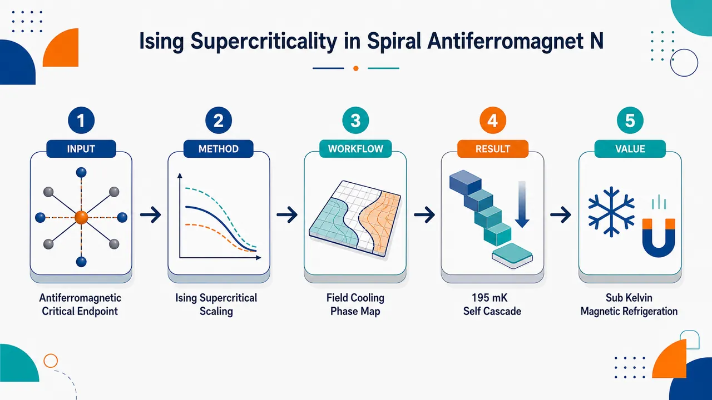
研究问题强阻挫螺旋 Ising 反铁磁体 Nd₃BWO₉ 中，场诱导的一级变磁转变是否会像液-气相变一样终止于临界端点，并在其上方形成服从 3D Ising 普适性的超临界涨落区；这种超临界性是否能被转化为亚开尔文磁制冷能力。创新方法将“液-气临界端点—超临界流体”图像移植到反铁磁变磁体系：以均匀磁化作为类密度序参量，联合低温比热、磁化率、磁 Grüneisen 比和绝热退磁曲线，证明 Nd₃BWO₉ 的一级变磁线终止于 μ₀Hc ≃ 1.04 T、Tc ≃ 0.30 K 的 CEP；进一步提出“超临界磁热效应 + 拓扑畴壁零点熵”的自级联冷却机制。工作流程制备高质量 Nd₃BWO₉ 单晶 → 沿 c 轴施加磁场 → 在 100 mK 量级测量比热、50 mK 量级测量磁化，并进行绝热退磁实验 → 从比热峰线、磁化跃迁和 ΓH 峰谷定位 CEP 与 ISR → 用 3D Ising 标度 h ∝ t⁽β+γ)、χ=t^−γφχ、ΓH∝t⁽¹−β−γ) 验证普适性 → 用螺旋 Ising 管模型和转移矩阵解释 HSF ≃ 0.65 T 附近的畴壁零点熵 → 输出相图、标度坍缩图和两段式冷却曲线。关键结果发现 Nd₃BWO₉ 的一级变磁线终止于 μ₀Hc ≃ 1.04(4) T、Tc ≃ 0.30(2) K 的临界端点；CEP 上方出现宽广 Ising 超临界区，比热 ridge 满足 h ∝ t¹.563，磁化率坍缩到 3D Ising 普适函数，磁 Grüneisen 比按 ΓH ∝ 1/t⁰.563 增强；绝热退磁从 4 T、2 K 出发，经 Hc 附近超临界冷却和 HSF ≃ 0.65 T 附近拓扑零点熵冷却，最低达到 195 mK；1 T 场变下亚开尔文体积熵变约 83 mJ K⁻¹ cm⁻³。应用价值提供一种面向氦-3 短缺背景的亚开尔文磁制冷新路线：不再只依赖传统顺磁盐或铁磁临界材料，而是利用强阻挫 Ising 反铁磁体中的低温 CEP、发散磁热响应和拓扑畴壁熵实现低场高效冷却；该设计原则可推广到 RE₃BWO₉ 家族、spin ice 等具有强 Ising 各向异性、场诱导变磁线和近邻零点熵的材料。第一部分：核心概览
该研究在螺旋 Ising 反铁磁体 Nd₃BWO₉ 中发现了液-气临界端点物理的反铁磁对应物：场诱导一级变磁转变线终止于 CEP，位置为 μ₀Hc ≃ 1.04(4) T、Tc ≃ 0.30(2) K；其上方出现 Ising 超临界区，比热峰线、磁化率标度坍缩和磁热 Grüneisen 比均服从 3D Ising 普适类。研究进一步把超临界涨落转化为亚开尔文磁制冷机制，绝热退磁从 4 T、2 K 可冷却至 195 mK。其地位在于：将传统铁磁/液-气临界类比拓展到强阻挫 Ising 反铁磁体，并提出 超临界磁热效应 + 拓扑零点熵 的自级联制冷范式。
---
第二部分：结构化快速回顾
《Ising Supercriticality and Universal Magnetocalorics in Spiral Antiferromagnet Nd₃BWO₉》（None，）
背景
液-气相图与铁磁场-温相图之间的类比长期支撑临界现象与普适性理解。Nd₃BWO₉ 是具有 kagome 层的稀土螺旋 Ising 反铁磁体，曾因可能存在量子自旋液体而受到关注，后被确认具有复杂反铁磁序和一级变磁转变。
方法
制备高质量 Nd₃BWO₉ 单晶；沿 c 轴施加磁场，开展 100 mK 低温比热、50 mK 磁化、绝热退磁磁热测量；结合 3D Ising 标度分析、Monte Carlo 标度函数、螺旋 Ising 管模型与转移矩阵计算。
结果
一级变磁线终止于 μ₀Hc ≃ 1.04(4) T、Tc ≃ 0.30(2) K 的 CEP。CEP 上方存在 Ising supercritical regime, ISR，比热峰位置满足 h ∝ t⁽β+γ)，其中 β + γ ≃ 1.563；磁化率坍缩到 3D Ising 普适函数 φχ(x)。磁 Grüneisen 比满足 ΓH ∝ 1/t⁽β+γ−1)。
讨论
超临界涨落导致高场敏感性并产生增强磁热效应；低温 spin-flip field μ₀HSF ≃ 0.65 T 附近的拓扑畴壁零点熵进一步增强冷却。两个冷却机制在一次退磁过程中自级联，使样品从 4 T、2 K 冷却至 195 mK。
局限
一维螺旋 Ising 管模型可解释 HSF 附近的零点熵与低温冷却，却不能捕捉 CEP 附近的三维奇异行为；极接近 Tc 时，ΓH 标度受实验分辨率限制；磁化率峰值受 0.02 T 场步长截断。
结论
强阻挫 Ising 反铁磁体可承载液-气式 3D Ising 超临界性，并可作为亚开尔文磁制冷材料。类似机制可能推广至 RE₃BWO₉ 家族与 spin ice 等强 Ising 各向异性、含局域约束和近邻零点熵的体系。
---
第三部分：逐章节冷凝解析
Abstract
Antiferromagnetic extension of liquid-gas/ferromagnet analogy
核心贡献是把经典 液-气 CEP / 铁磁临界点 类比拓展到强阻挫反铁磁体 Nd₃BWO₉。摘要直接给出定位：*"Here we extend this analogy to a highly frustrated antiferromagnet, the spiral Ising compound Nd3BWO9 with kagome layers."* 这意味着临界端点和超临界涨落不再局限于流体或铁磁系统，而可在具有 spiral Ising axes 的反铁磁 kagome 层化材料中出现。
Critical endpoint identified at low field and ultralow temperature
相图中存在一级 metamagnetic transition line，终止于 critical endpoint, CEP，位置为 μ₀Hc ≃ 1.04 T、Tc ≃ 0.3 K。摘要给出明确数值：*"we identify a metamagnetic transition line with a critical endpoint (CEP) located at μ0Hc ≃ 1.04 T and Tc ≃ 0.3 K."* 该 CEP 是后续超临界标度和磁热效应的中心。
Ising supercritical regime obeys universal scaling
CEP 上方出现 Ising supercritical regime，其交叉线由比热、磁化率和磁热测量共同确认，并服从普适标度。关键表述为：*"Above the CEP, an Ising supercritical regime emerges with crossover lines that follow a universal scaling law, as evidenced by the specific heat, magnetic susceptibility, and magnetocaloric measurements."* 这把热容峰、χ 峰、ΓH 峰/谷统一到同一 3D Ising scaling 框架。
Divergent magnetic Grüneisen ratio enables sensitive cooling
CEP 附近的磁热响应由发散的 magnetic Grüneisen ratio ΓH 表征：*"characterized by a divergent magnetic Grüneisen ratio ΓH ∝ 1/tβ+γ−1, with β + γ ≃ 1.563 the sum of critical exponents of the 3D Ising universality class."* 其中 t ≡ (T − Tc)/Tc，指数 β + γ ≃ 1.563 来自 3D Ising universality class。
Self-cascading cooling reaches 195 mK
实验绝热退磁从 2 K、4 T 出发，最低达到 195 mK：*"Adiabatic demagnetization from 2 K and 4 T reaches a minimum temperature of 195 mK, via a self-cascading process that combines supercritical and topological cooling."* 该自级联包含 CEP 附近的 supercritical cooling 与 HSF 附近的 topological cooling。
---
Introduction.—
CEP as a landmark of phase transitions
Critical endpoint 是一级相变线终止点，液体与气体的区分在其上方消失。引言开宗明义：*"The critical endpoint (CEP), beyond which the distinction between liquid and gas vanishes, has long served as a landmark concept in phase transitions and critical phenomena."* 在 CEP 处，系统呈现尺度不变性和涌现对称性：*"At the CEP, the first-order transition line terminates, and the system exhibits scale invariance and an emergent global ℤ2 symmetry."*
Liquid-gas transition belongs to 3D Ising universality
液-气转变的临界标度属于 3D Ising universality class，并与铁磁相变建立深层对应：*"The resulting scaling laws place the liquid-gas transition in the three-dimensional (3D) Ising universality class, establishing a profound correspondence with ferromagnetic (FM) phase transitions."* 该研究的理论框架正是把这种对应迁移到反铁磁体系。
Supercritical regime has technological relevance
CEP 上方的超临界区域具有强涨落，并已用于制冷、发动机和发电等方向：*"Above the CEP, the system enters a strongly fluctuating supercritical regime that has found broad applications ranging from refrigeration and engines to power generation."* 该背景为后续 supercritical magnetocalorics 提供应用动机。
Rare-earth frustrated magnets provide fertile ground
稀土磁体因 几何阻挫 与 量子涨落 的耦合而可产生复杂自旋态：*"rare-earth magnets are particularly compelling, in which the interplay of geometric frustration and quantum fluctuations can give rise to a rich landscape of exotic spin states."* Nd₃BWO₉ 属于新近发现的 RE₃BWO₉ kagome 层状家族。
Nd₃BWO₉ realizes effective spin-1/2 frustrated antiferromagnet
Nd₃BWO₉ 中 Nd³⁺ 离子形成自旋-轨道 Kramers doublets，构成有效 S = 1/2 阻挫反铁磁体：*"the compound Nd3BWO9 hosts Nd3+ ions that form spin-orbit Kramers doublets, constituting an effective S = 1/2 frustrated antiferromagnet."* 初期其 kagome 层结构被认为可能承载量子自旋液体：*"Initially, its kagome-layered structure was thought to potentially host a quantum spin liquid phase."*
Spin-liquid scenario replaced by antiferromagnetic order
中子散射已确认 Nd₃BWO₉ 在 0.3 K 以下出现反铁磁序，排除自旋液体基态：*"neutron scattering studies have established an antiferromagnetic (AF) order in Nd3BWO9 below 0.3 K, ruling out a spin-liquid ground state."* 后续结果揭示三重螺旋 Ising 轴导致复杂自旋序：*"Subsequent measurements revealed a complex spin order due to the triple braids of spiral Ising axes."*
First-order spin transitions and magnetization jump
低温相图含 AF、1/3-plateau、partially polarized states，由强磁各向异性导致两个一级自旋态转变：*"The AF, 1/3-plateau, and partially polarized states are separated by two first-order spin state transitions due to the strong magnetic anisotropy."* 从 1/3 plateau 到部分极化相的变磁转变伴随磁化跃迁：*"A magnetization jump occurs at the metamagnetic transition from the 1/3-plateau to the partially polarized phase."*
Main discovery: field-driven ISR above CEP
Nd₃BWO₉ 的场诱导一级变磁线终止于 CEP，参数更精确为 μ₀Hc ≃ 1.04(4) T、Tc ≃ 0.30(2) K：*"there exists a field-induced first-order metamagnetic line that terminates at the CEP with μ0Hc ≃ 1.04(4) T and Tc ≃ 0.30(2) K."* CEP 上方出现 field-induced Ising supercritical regime，自旋态强涨落且对外场高度敏感：*"Above the CEP, there exists a field-induced Ising supercritical regime (ISR), which hosts strongly fluctuating spin states highly sensitive to external fields."*
Specific heat and susceptibility establish 3D Ising scaling
比热中从 CEP 发出的两条 ridge 满足 h ∝ t⁽β+γ)，其中 β + γ ≃ 1.563：*"the crossover lines adhere to the supercritical scaling h ∝ tβ+γ with β + γ ≃ 1.563 of the 3D Ising universality class."* 磁化率进一步坍缩至普适函数：*"further corroborated by a collapse of the magnetic susceptibility onto the universal function φχ(x)."*
Antiferromagnetic analog of liquid-gas Ising supercriticality
研究建立反铁磁版本的液-气 Ising 超临界性：*"Our findings thus establish an antiferromagnetic analog of liquid-gas Ising supercriticality."* 这句话概括了理论创新的核心——不是常规铁磁临界，而是在反铁磁、阻挫、低对称场诱导结构中涌现 Ising CEP。
Supercritical MCE and topological cooling jointly enable low temperature
CEP 附近的高场敏感性带来 supercritical magnetocaloric effect，其 ΓH ≡ 1/T(∂T/∂H)S ∝ 1/t⁽β+γ−1)：*"the high field-sensitivity near the CEP gives rise to a supercritical magnetocaloric effect (MCE), characterized by the universally diverging Grüneisen ratio."* 绝热退磁冷却至 195 mK，接近 μ₀HSF ≃ 0.65 T，并由超临界与拓扑冷却共同实现：*"we cool the sample to 195 mK near the lower spin-flip field (μ0HSF ≃ 0.65 T), enabled by both supercritical and topological cooling."*
---
Universal thermal data with supercritical scaling.—
High-quality crystals and ultralow-temperature specific heat
高质量 Nd₃BWO₉ 单晶用于比热测量，温度下探至 100 mK，磁场沿 c 轴：*"We synthesize high-quality Nd3BWO9 single crystals ... and measure the specific heat Cp/T under c-axis magnetic fields down to 100 mK."* 这一温区覆盖 TN ≃ 0.29 K 与 Tc ≃ 0.30 K，足以解析 AF 转变、CEP 和超临界交叉。
Zero-field AF ordering peak at TN ≃ 0.29 K
零场比热在 TN ≃ 0.29 K 出现尖峰，标志反铁磁长程序形成：*"Under zero field, the specific heat exhibits a sharp peak at about TN ≃ 0.29 K, signaling the onset of AF order."* 随磁场增加，该峰移向低温，并在 μ₀HSF ≃ 0.65 T 消失：*"With increasing field, this peak shifts to lower temperatures and vanishes at μ0HSF ≃ 0.65 T."*
Broad hump at T* ≈ 1 K tracks short-range spin correlations
比热中另有宽峰 T* ≈ 1 K，代表短程自旋关联建立：*"a broad hump observed at T* ≈ 1 K, which marks the buildup of short-range spin correlations, shifts downward with increasing field."* 宽峰在接近 Hc 时降至约 0.3 K，高场侧再升高：*"The hump position reaches a minimum temperature of about 0.3 K near Hc before turning upward at higher fields."*
Specific-heat ridges define finite-temperature ISR boundaries
CEP 附近宽峰位置描绘 finite-temperature ISR 边界，并满足 3D Ising 普适律：*"Near the CEP, locations of the humps trace the boundaries of the finite-temperature ISR, and obey the universal scaling law h ∝ tβ+γ of the 3D Ising universality class."* 图 2(b) 给出 CEP 星标 μ₀Hc ≃ 1.04(4) T、Tc ≃ 0.30(2) K，误差来自比热、磁化和磁热测量间差异。
Scaling law derived from singular free energy
比热标度来自奇异自由能的普适形式，具体为 C(H,T)=t^−α φC(x)，其中 x ≡ h·t^−β−γ：*"Such scaling behavior originates from the universal form of specific heat, i.e., C(H,T)=t−αφC(x), where φC(x) with x ≡ h · t−β−γ is the scaling function derived from the singular part of the free energy."* 比热极大条件使 h t^−β−γ = const.，从而 h ∝ t⁽β+γ)。
Order parameter is uniform magnetization
1/3 plateau 与部分极化相之间一级转变的序参量是 uniform magnetization：*"The order parameter for the first-order transition between the 1/3-plateau and partially polarized phases is the uniform magnetization."* 类比液-气一级边界上的密度差：*"This is analogous to the density difference across the first-order liquid-gas phase boundary."*
CEP emerges without spontaneous symmetry breaking
该 CEP 不伴随常规自发对称性破缺，却因磁场下自旋结构低对称性而出现涌现 ℤ₂ 对称：*"the CEP here emerges without spontaneous symmetry breaking yet exhibits an emergent ℤ2 symmetry, owing to the low symmetry of the spin structures under magnetic fields."* 这解释了为什么反铁磁变磁转变可具有液-气式 Ising 临界性。
ISR is experimentally broader and more accessible than CEP
CEP 只是相图中单点，而 ISR 覆盖宽广区域：*"while the emergent CEP is confined to a single point, the ISR, where ‘liquid’ and ‘gas’ are indistinguishable, extends over a broad region, making it far more accessible in experiments."* 因而比热、χ 和 ΓH 能在较大温场窗口显示普适交叉。
Magnetization jump locates metamagnetic transition
超低温磁化测量通过磁化跃迁确定 μ₀Hc ≃ 1.04 T：*"we conduct ultralow-temperature magnetization measurements to determine the metamagnetic transition at μ0Hc ≃ 1.04 T from the magnetization jump."* 磁化率由 χ ≡ dM/dH 取得：*"The magnetic susceptibility can be obtained from the magnetization measurements, by differentiation χ ≡ dM/dH."*
Susceptibility peaks reveal strong field sensitivity
超临界区磁化率在 Hc 附近出现尖峰，说明对磁场高度敏感：*"the series of sharp peaks near Hc indicates the high field-sensitivity."* 图注补充实验分辨率限制：*"the diverging χ is cut off by the finite field step of 0.02 T."* 灰色区域因分辨率不足未纳入坍缩。
Susceptibility collapses onto 3D Ising universal function
磁化率在 CEP 上方满足 χ(H,T)=t^−γ φχ(h·t^−β−γ)：*"According to the scaling analysis, magnetic susceptibility follows a universal scaling form χ(H,T)=t−γφχ(h·t−β−γ) above the CEP."* 使用 β ≃ 0.326、γ ≃ 1.237，定义 x ≡ h·t^−β−γ、y ≡ χ·t^γ 后，数据坍缩为单曲线：*"By rescaling x ≡ h · t−β−γ and y ≡ χ · tγ with the critical exponents β ≃ 0.326 and γ ≃ 1.237, we collapse the magnetic susceptibility data onto a single curve."* 该曲线与 3D Ising 理论 φχ(x) 高度一致：*"it is in excellent agreement with the calculated scaling function φχ(x) for the 3D Ising universality class."*
---
Supercritical magnetocalorics and ultralow-T cooling.—
Adiabatic demagnetization yields isentropic lines
不同初始条件下的绝热退磁测量给出 Nd₃BWO₉ 的等熵线：*"The adiabatic demagnetization measurements of Nd3BWO9 starting from different initial conditions yield its isentropic lines."* 在 ISR 内等熵线出现 dips，源于超临界自旋态强涨落：*"isentrope dips appear within the ISR, due to the strong fluctuations of supercritical spin states."*
Magnetic Grüneisen ratio shows peak-dip structure
由等熵线导出的 ΓH 呈峰-谷结构：*"The corresponding magnetic Grüneisen ratio ΓH, derived from the isentropic lines, displays a peak-dip structure."* 随温度趋近 Tc，峰谷位置渐近靠近 Hc：*"As the temperature approaches Tc, the peak and dip positions asymptotically approach Hc."*
ΓH obeys supercritical magnetocaloric scaling
峰/谷值满足 ΓH ∝ 1/t⁽β+γ−1)：*"we find the peak/dip values obey a supercritical magnetocaloric scaling law ΓH ∝ 1/tβ+γ−1."* 该式同样可由普适自由能推出：*"which can also be derived from the universal form of free energy."* 因为 β + γ ≃ 1.563，指数 β+γ−1 ≃ 0.563，ΓH 在接近 CEP 时发散。
Subcritical side has weakened cooling
在 T < Tc，Hc 附近等熵 dips 随降温变浅：*"Below Tc, the isentrope dips near Hc grow progressively shallower at lower temperatures."* 物理原因是一级变磁转变的熵变减小：*"This reflects the weakened cooling effect due to the minimum entropy change of the metamagnetic transitions."*
Demagnetization from 4 T, 4 K cools to 586 mK
代表性退磁实验从 (μ₀Hi,Ti)=(4 T,4 K) 出发，在 Hc 附近冷却到 586 mK：*"For the process starting from (4 T, 4 K), Nd3BWO9 cools to 586 mK near Hc."* 该冷却性能超过理想顺磁盐：*"surpassing the ideal paramagnetic (PM) salt."*
Demagnetization from 4 T, 2 K reaches 195 mK
从 (4 T,2 K) 出发，最低温度为 195 mK，出现在 μ₀HSF ≃ 0.65 T：*"starting from (4 T, 2 K), it reaches the lowest temperature of 195 mK at the spin-flip field μ0HSF ≃ 0.65 T."* 更低温来自 HSF 附近增强低温熵：*"The lower cooling temperature reflects enhanced low-T entropy near HSF, which shifts the temperature minimum to the spin-flip field."*
Volumetric entropy change is large for modest field window
磁制冷材料关键指标是体积磁熵变 −ΔSm ≡ Sm(Hf,T) − Sm(Hi,T)：*"A key figure of merit for a magnetic refrigerant is its volumetric entropy change −ΔSm ≡ Sm(Hf,T) − Sm(Hi,T), which largely determines practical cooling capacity."* 对 1 T 场变且终止于 Hf = Hc，亚开尔文区达到 −ΔSm ≃ 83 mJ K⁻¹ cm⁻³：*"For a modest field change of 1 T ... we find a large entropy change of −ΔSm ≃ 83 mJ·K−1·cm−3 in the sub-Kelvin regime."*
High spin density enhances cooling capacity
Nd₃BWO₉ 的磁熵变远高于水合顺磁盐，部分原因是自旋密度高：*"The entropy change value of Nd3BWO9 also far exceeds that of the spin-1/2 hydrated PM salts, attributed partly to its exceptionally high spin density."* 数值为 N ≃ 16.9 nm⁻³，约为 CMN N ≃ 1.65 nm⁻³ 的一个数量级：*"N ≃ 16.9 nm−3, an order of magnitude greater than that of the hydrate CMN (N ≃ 1.65 nm−3)."*
---
Proximate zero-point entropy in spiral Ising tube.—
Spiral Ising tube model explains HSF features
为解释低温冷却与 HSF 附近熵增强，使用阻挫 spiral Ising tube 模型，因为 kagome 层内耦合可忽略：*"we perform model calculations involving a frustrated spiral Ising tube, as spin couplings in the kagome layer are negligibly weak."* 该模型聚焦沿 c 轴三股编织链的竞争相互作用。
Spin-flip transition carries macroscopic degeneracy
模型显示 HSF 处存在一级 spin-flip 转变，并带有宏观基态简并：*"We uncover a first-order spin-flip transition at HSF carrying a macroscopic ground-state degeneracy."* 由此产生近邻零点熵：*"This leads to a proximate zero-point entropy (ZPE), calculated as S0 ≃ 0.481R per unit cell."*
Domain walls generate extensive degeneracy
广延简并来自磁畴壁，即沿整个螺旋 Ising 管发生全局自旋翻转的拓扑缺陷：*"This extensive degeneracy can be ascribed to the presence of magnetic domain walls — topological defects that correspond to global spin flips throughout the spiral Ising tube."* 这些畴壁在 HSF 处可无能量代价运动，是拓扑冷却的微观基础。
Self-cascading cooling consists of two dips
从 (4 T,2 K) 出发的退磁经历两步冷却：Hc 附近由超临界涨落驱动，HSF 附近由近邻 ZPE 驱动：*"a two-step cooling process occurs: one driven by supercritical fluctuations near Hc and the other by proximate ZPE near HSF."* 单次退磁扫场中连续出现两个冷却 dips，即 self-cascading mechanism：*"two successive cooling dips in a single demagnetization sweep."* 最终达到 195 mK：*"achieves an ultralow temperature of 195 mK."*
Frustration suppresses CEP temperature despite high ion density
与自旋密度相近的铁磁冷却剂 LiHoF₄ 相比，Nd₃BWO₉ 的 CEP 温度更低。LiHoF₄ 的自旋密度 N ≃ 13.7 nm⁻³，但 Tc ≃ 1.53 K：*"FM coolants of comparable spin density, such as LiHoF4 (N ≃ 13.7 nm−3) ... its ordering temperature is significantly higher (Tc ≃ 1.53 K)."* Nd₃BWO₉ 的 Tc ≃ 0.3 K 被自旋阻挫显著压低：*"the CEP in Nd3BWO9 is an emergent phenomenon whose Tc ≃ 0.3 K is greatly suppressed by spin frustration — despite the very high ion density and a significant spin coupling of about 3 K."*
Frustration comes from competing FM-AF interactions
尽管 kagome 面内耦合因近正交 Ising 轴而很弱，阻挫仍来自三股编织链上的竞争相互作用：*"Although kagome-plane couplings are negligible due to nearly orthogonal Ising axes, frustration in Nd3BWO9 stems from competing FM-AF interactions along the three braided chains."* 这解释了为何一维管状结构也能产生强阻挫与拓扑简并。
---
Discussion.—
Comprehensive measurements establish supercritical behaviors
综合热力学和磁热测量确认 Nd₃BWO₉ 的超临界行为：*"we report comprehensive thermodynamic and magnetocaloric measurements, with scaling analysis of the supercritical behaviors, in Nd3BWO9."* 证据链包括比热 ridge、χ 标度坍缩、ΓH 发散和绝热退磁冷却。
Lowest temperature achieved by two field-induced transitions
最低 195 mK 来自两个场诱导变磁转变之间的自级联冷却：*"We achieve the lowest temperature of 195 mK through self-cascading cooling between two field-induced metamagnetic transitions."* 两个特征场分别为 μ₀Hc ≃ 1.04 T 与 μ₀HSF ≃ 0.65 T：*"one at μ0Hc ≃ 1.04 T associated with a low-Tc CEP and the other at μ0HSF ≃ 0.65 T arising from proximate ZPE."*
Mechanism differs from conventional ferromagnetic MCE
传统 MCE 多在铁磁金属和低居里温度铁磁绝缘体中探索；这里利用强阻挫、Ising 各向异性反铁磁体：*"Whereas the MCE has traditionally been explored in FM metals ... our work exploits highly frustrated, Ising-anisotropic antiferromagnets harboring a low-Tc CEP and a highly field-sensitive Ising supercritical regime."* 这构成磁制冷材料设计路线的改变。
RE₃BWO₉ family may host related physics
低 Tc Ising CEP 及超临界 MCE 对其他 RE₃BWO₉ 成员有启发意义：*"The universal scaling behaviors unveiled near the Ising CEP suppressed by spin frustration, together with the associated supercritical MCE, offer valuable insights into other members of the kagome-layered RE3BWO9 family."* 示例为 Sm₃BWO₉，具有 Kramers doublet 和沿 c 轴不公度自旋序：*"such as Sm3BWO9 with its Kramers doublet and an incommensurate spin order along the c axis."*
Spin ices share Ising anisotropy and proximate zero-point entropy
Nd₃BWO₉ 与 spin ice 相图具有深层相似性：*"we emphasize a profound similarity between the phase diagram of Nd3BWO9 and those of spin-ice systems, which share strong Ising anisotropy and proximate zero-point entropy."* 近邻零点熵是 spin ice 物理标志：*"a hallmark of spin-ice physics."*
Spin ice systems also host CEP and supercritical regimes
经典和量子 spin ice 均可承载一级变磁线、CEP 及超临界区：*"Both classical ... and quantum ... spin ices host first-order metamagnetic transition lines terminating at a CEP, above which a supercritical regime emerges."* Dy₂Ti₂O₇ 具有自旋密度 N ≃ 15.44 nm⁻³ 和 Tc = 0.36 K 低温 CEP：*"Dy2Ti2O7 ... possesses a comparable spin density (N ≃ 15.44 nm−3) and a low-Tc CEP at 0.36 K."* Pr₂Zr₂O₇ 的 Tc ≃ 0.06 K 更低：*"Pr2Zr2O7 exhibits an even lower Tc ≃ 0.06 K."*
Supercritical frustrated antiferromagnets address helium-3 shortage
在全球 helium-3 短缺背景下，先进磁制冷剂需求增强：*"Given the global shortage of helium-3, the search for advanced magnetic refrigerants has intensified."* 结论性机制为：*"Our findings establish the Ising supercriticality in frustrated antiferromagnets as a novel mechanism for ultralow-temperature magnetic refrigeration."*
---
Acknowledgments.—
Funding and infrastructure support
研究由中国国家重点研发计划、国家自然科学基金、中国科学院战略先导专项、北京市自然科学基金及中央高校基本科研业务费支持。原文列出多项经费：*"This work was supported by the National Key Projects for Research and Development of China ... the National Natural Science Foundation of China ... the Strategic Priority Research Program of Chinese Academy of Sciences ... the Beijing Natural Science Foundation ... and the Fundamental Research Funds for the Central Universities."*
Computational and experimental platforms
计算资源来自 HPC-ITP：*"We thank HPC-ITP for the technical support and generous allocation of CPU time."* 极端条件和表征平台包括 SECUF 与北航分析测试中心：*"We acknowledge the support from the Synergetic Extreme Condition User Facility ... and the facilities and technical support of the Extreme Condition Characterization Platform at Analysis & Testing Center of Beihang University."*
---
Data availability.—
Open data availability
支撑结果的数据已开放获取：*"The data that support the findings of this work are openly available."* 这意味着比热、磁化、磁热和标度分析相关数据原则上可复核。
---
End Matter
Sample synthesis and characterization.—
PbO flux method and growth schedule
Nd₃BWO₉ 单晶通过 PbO flux method 制备：*"Single crystals of Nd3BWO9 were synthesized using the PbO flux method."* 原料配比为 Nd₃BWO₉ powder : PbO = 1:14：*"A mixture of Nd3BWO9 powder and PbO in a 1:14 molar ratio was thoroughly ground and placed in a platinum crucible."* 热处理程序为 1150 °C 保温 25 h，再以 2.5 °C/h 冷却到 900 °C，最后以 100 °C/h 冷至室温：*"heated to 1150 °C, held for 25 h, cooled to 900 °C at a rate of 2.5 °C/h, and finally cooled to room temperature at 100 °C/h."*
X-ray diffraction confirms orientation and quality
室温 XRD 使用 Bruker D8 ADVANCE 与 Cu-Kα radiation, λ = 1.5406 Å：*"using a Bruker D8 ADVANCE diffractometer with Cu-Kα radiation (λ = 1.5406 Å)."* bc 面 XRD 显示主要 (H00) 反射：*"The X-ray diffraction pattern of the bc plane displays dominant (H00) reflections at room temperature."*
Rocking curve FWHM indicates high crystal quality
(200) Bragg 峰摇摆曲线半高宽仅 0.16°：*"Rocking curve analysis of the Bragg peak (200) ... demonstrates a narrow full width at half maximum (FWHM) of 0.16°, indicating high crystal quality."* 这为低温热力学异常不是样品无序伪影提供材料学基础。
---
Thermodynamic and magnetocaloric measurements.—
Specific heat spans above 2 K to ultralow temperatures
2 K 以上比热使用 PPMS 标准热容选件：*"Specific heat measurements above 2 K are performed using the standard heat capacity option of the Physical Property Measurement System (PPMS)."* 超低温比热用 quasi-adiabatic heat-pulse method：*"Ultralow-temperature specific heat measurements are carried out using the quasi-adiabatic heat-pulse method."*
Magnetization measured down to 50 mK
磁化测量下探至 50 mK，使用 Hall-sensor magnetometer，并集成于带 ³He-⁴He dilution refrigerator 的 PPMS：*"magnetization measurements down to 50 mK are performed using a Hall-sensor magnetometer, both implemented in a PPMS equipped with a 3He-4He dilution refrigerator."*
Adiabatic demagnetization setup uses 1.5 g aligned crystals
绝热退磁曲线由自制 PPMS 平台测量：*"Cooling curves via adiabatic demagnetization are measured using a custom-designed setup based on the PPMS."* 样品为同向排列的多块单晶，总质量 1.5 g，温度由校准 RuO₂ thermometer 监测：*"Multiple single crystals of Nd3BWO9 (total mass 1.5 g) are aligned in the same direction and used as samples, and their temperature is monitored using a calibrated RuO2 thermometer."*
Field direction and sweep rate are controlled
磁场沿 c axis，退磁扫场速率为 50 Oe/s：*"The magnetic field is applied along the c axis, and demagnetization is carried out at a constant sweep rate of 50 Oe/s."* 低热导支撑与高真空用于热绝缘：*"Thermal insulation is achieved by employing low thermal-conductivity support structures and a high-vacuum environment."*
---
Scaling analysis of universal thermodynamics.—
Singular free energy has universal CEP form
CEP 上方奇异自由能写为
F = t⁽²−α) ξ₁ φF(ξ₂ h t^−β−γ), for t > 0。原文表述：*"Above the critical endpoint (CEP), the singular part of the free energy possesses a universal form as F=t2−αξ1φF(ξ2ht−β−γ), for t>0."* 约化变量为 t ≡ (T−Tc)/Tc、h ≡ (H−Hc)/Hc：*"where t ≡ (T − Tc)/Tc and h ≡ (H − Hc)/Hc are reduced parameters measuring the distance to the CEP."*
Non-universal parameters are set to unity
ξ₁、ξ₂ 是非普适参数，为简化设为 1：*"ξ1 and ξ2 are non-universal parameters and we set ξ1 = ξ2 = 1 for simplicity."* 普适函数只依赖普适类：*"the scaling function φF(x) only depends on the universality class."* Nd₃BWO₉ 中 CEP 属于 3D Ising universality class：*"In Nd3BWO9, the emergent CEP belongs to the 3D Ising universality class."*
Specific heat peak condition yields h ∝ tβ+γ
比热由自由能二阶温度导数得到：*"the specific heat can be expressed as C ≡ −T ∂2F/∂T2 = t−α φC(ht−β−γ)."* 极大条件 ∂C/∂T = 0 给出 h t^−β−γ = const.：*"Considering the maximum condition ∂C/∂T = 0, the peak locations satisfy ht−β−γ = const., implying h ∝ tβ+γ."*
Susceptibility has t−γ universal form
磁化率由自由能对磁场二阶导数得到：*"the magnetic susceptibility has a universal form χ ≡ −∂2F/∂H2 = t−γ φχ(ht−β−γ)."* 实验 χ 坍缩与 3D Ising Monte Carlo 标度函数高度一致：*"the scaling function φχ(x) is extracted from the data collapse of the measured susceptibility, in excellent agreement with the 3D Ising scaling function from Monte Carlo simulations."*
Grüneisen ratio follows t1−β−γ scaling
磁 Grüneisen 比定义为
ΓH ≡ 1/T(∂T/∂H)S = −(∂²F/∂H∂T)/(T∂²F/∂T²)：*"we consider the Grüneisen ratio ΓH ≡ 1/T(∂T/∂H)S = −(∂2F/∂H∂T)/(T∂2F/∂T2)."* CEP 附近具有普适形式：*"Near the CEP, the Grüneisen ratio also possesses a universal form ΓH = t1−β−γ φΓ(ht−β−γ)."* 峰/谷条件最终给出 ΓH^peak/dip ∝ t⁽¹−β−γ)：*"the peak/dip values measured during the adiabatic demagnetization process satisfy a universal scaling ΓHpeak/dip ... ∝ t1−β−γ."*
---
Supercritical scaling function of 3D Ising universality class.—
Canonical 3D Ising model provides universal χ function
由于普适标度函数不依赖微观细节，使用经典立方晶格铁磁 Ising 模型计算 φχ(x)：*"Since universal scaling functions characterize a universality class regardless of microscopic details, φχ(x) for the 3D Ising class can be obtained by studying a canonical minimal model."*
Monte Carlo model and size
模型哈密顿量为
HIsing = −JΣ⟨i,j⟩ Siz Sjz − hΣi Siz，且 J = 1：*"we thus employ Monte Carlo simulations of the classical ferromagnetic (FM) Ising model on a cubic lattice, HIsing = −J∑<i,j>SizSjz − h∑iSiz, where J = 1."* 计算系统大小为 N = 40³：*"Our calculations are performed on a cubic lattice of size N = 40³."*
Finite-size critical temperature and crossover
通过磁化率确定有限尺寸系统 Tc ≃ 1.13：*"From the magnetic susceptibility χ, we identify a critical temperature Tc ≃ 1.13 for the finite-size system."* 非零场下，相变变成交叉，并在更高温度出现宽峰：*"For h ≠ 0, the phase transition evolves into a crossover characterized by a broad peak at higher temperatures."*
Experimental and Monte Carlo scaling functions match
对 T > Tc 的数据进行坍缩得到超临界 φχ(x)，与实验一致：*"We collapse the T > Tc data and obtain the supercritical scaling function φχ(x), which agrees excellently with the experimental results."* 非普适参数允许坐标轴重标定：*"non-universal parameters in Eq. (1) allow us to rescale the x and y axes to match the experimental results."*
---
Experimental and simulated entropy results.—
Magnetic entropy extracted after subtracting nonmagnetic contributions
磁比热 Cm 由实测 Cp 扣除核与声子贡献得到：*"Magnetic specific heat Cm is obtained by subtracting the nuclear and phonon contributions from the measured Cp."* 再积分 Cm/T 得到磁熵 Sm：*"We then integrate Cm/T to obtain the magnetic entropy Sm."*
Zero-field entropy saturates at 3R ln2
零场高温磁熵达到 3R ln2：*"The zero-field magnetic entropy reaches a saturation value 3Rln2 at high temperatures."* 这符合每个化学式单元含三个有效 S = 1/2 Nd³⁺ Kramers 双重态自由度。
Entropy shoulder corresponds to S0 ≃ 0.481R
熵曲线出现肩状结构，对应 ZPE S0 ≃ 0.481R：*"Figure 7(b) displays a shoulder-like structure corresponding to a ZPE of S0 ≃ 0.481R."* 在 μ₀HSF ≃ 0.65 T，低温熵进一步增强：*"At the spin-flip field μ0HSF ≃ 0.65 T, low-T entropy is further enhanced due to the proliferation of topological domain-wall excitations."*
Spiral Ising tube Hamiltonian includes two competing couplings
SIT 模型哈密顿量含两种 Ising 耦合 Jr、Jb 与 Zeeman 项：*"we compute the isentropes of the spiral Ising tube (SIT) model for Nd3BWO9, using the transfer matrix method."* 指标 i 标记 c 轴层，j = 1,2,3 标记 ab 面三角形内三自旋：*"where i labels the layer along the c axis and j=1,2,3 labels three spins in a triangle in the ab plane."*
Coupling constants and g-factor are fixed from prior model
红、蓝键分别为 Jr ≃ −0.084 meV 与 Jb ≃ 0.24 meV：*"the red and blue bonds represent two different Ising couplings, namely, Jr ≃ −0.084 meV and Jb ≃ 0.24 meV."* 外场与 Ising z 轴夹角 54°，设 gzz ≃ 7.06：*"The angle between the magnetic field and Ising z axis is 54° and we set the gzz ≃ 7.06."*
Simulated isentropes have two dips
SIT 模型等熵线显示两个主要 dips：一个在 μ₀Hs ≃ 1 T，一个在 μ₀HSF ≃ 0.65 T：*"we find two prominent dips, one at the saturation field μ0Hs ≃ 1 T and the other at the spin-flip field μ0HSF ≃ 0.65 T."* 其中模型的饱和场接近实验临界场 μ₀Hc ≃ 1.04 T：*"The saturation field μ0Hs ≃ 1 T in the Ising tube model is close to the critical field μ0Hc ≃ 1.04 T in experiments."*
One-dimensional model cannot capture CEP singularity
SIT 模型可解释 HSF 附近 ZPE 冷却，但不能捕捉 CEP 附近奇异行为：*"Although the SIT model accounts for the low-temperature cooling via ZPE ... near HSF, the 1D model cannot capture the singular behaviors near the CEP."* 原因是超临界标度本质上是三维的：*"These supercritical scaling behaviors are inherently 3D, rather than 1D, arising from both intra- and inter-tube couplings."*
Effective AF chain and spin-flip domain-wall degeneracy
螺旋 AF 相沿 spin tube 有三梯级周期，基态能量为 εAF = S²(−Jb − |Jr|/3), S = 1/2：*"In the spiral AF phase, there exists a three-rung period along the spin tube, with the ground-state energy per site εAF = S2(−Jb − |Jr|/3) and S = 1/2."* 同层三个自旋可等效为 UUD 或 DDU 构型的单个有效自旋：*"The three spins within the same layer ... can be collectively described by a single effective spin, which represents either the (up-up-down) UUD or (down-down-up) DDU configuration."* 这些有效自旋构成 AF 链：*"The effective spins form an AF chain."*
Domain walls cost zero energy at HSF
spin-flip 场为 HSF = 2S(Jb − |Jr|)：*"At the spin-flip field HSF = 2S(Jb − |Jr|), domain walls, as topological defects, emerge and can move freely without energy cost."* 畴壁能量为零：*"εDW = 2S2(Jb − |Jr|) − HSFS = 0."* 由此得到热力学极限零点熵 S0 ≃ 0.481：*"Consequently, the ZPE per unit cell at HSF reads S0 = limN→∞ 1/N ln(Ω) ≃ 0.481."*
---
第四部分：深度理解与语言支持
1. 术语解析
#### Critical endpoint, CEP
字面是“临界端点”，不是普通二级相变点。它是一条 一级相变线的终点；在该点以下，两相由一级跃迁分隔，在该点以上，两相可连续互通。语境中对应 1/3 plateau 与 partially polarized phase 之间的一级变磁线终点。关键微妙处：Nd₃BWO₉ 的 CEP “emerges without spontaneous symmetry breaking”，更像液-气临界点，而非传统零场铁磁 Curie 点。
#### Ising supercritical regime, ISR
“Ising 超临界区”不是一个真正相区，因为没有热力学奇异边界，而是 CEP 上方由强涨落主导的交叉区域。其“Ising”指临界指数和标度函数属于 3D Ising universality class；“supercritical”指类比液-气 CEP 上方液体/气体不可区分的区域。Nd₃BWO₉ 中对应“低场 liquid-like”和“高场 gas-like”磁态无法由相变严格区分的区域。
#### Metamagnetic transition
“变磁转变”指磁化随外场发生突变或异常快速变化的转变。这里特指 1/3 磁化平台 到 部分极化态 的一级转变，序参量为 uniform magnetization。它不同于普通 AF-FM 转变；关键在于磁化跃迁线终止于 CEP。
#### Magnetic Grüneisen ratio ΓH
定义为 ΓH ≡ 1/T(∂T/∂H)S，描述绝热条件下改变磁场导致温度变化的敏感度。ΓH 越大，磁场微小变化导致的温度变化越强。这里 ΓH 在 CEP 附近按 ΓH ∝ 1/t⁽β+γ−1) 发散，因此成为超临界磁制冷的核心量。
#### Proximate zero-point entropy, ZPE
“近邻零点熵”不是严格零温下仍然一定保留的残余熵，而是实验可接近低温范围内由宏观简并和低能拓扑缺陷带来的熵平台/肩结构。Nd₃BWO₉ 中 S0 ≃ 0.481R per unit cell 来自 domain-wall defects，在 HSF ≃ 0.65 T 附近增强低温熵并产生拓扑冷却。
---
2. 疑难查证
#### 为什么反铁磁体也能有液-气式 CEP？
常规直觉中，Ising 临界性常与铁磁自发磁化联系在一起；液-气临界性则没有显式的自发对称性破缺。Nd₃BWO₉ 的情况更接近后者。外场下，两个磁态——1/3 plateau 与 partially polarized state——由一级线分隔，磁化有跃迁；升温后跃迁消失，转为连续交叉。此时“序参量”是 uniform magnetization，类比液体和气体之间的密度差。虽然低温自旋结构本身不具备简单全局 Z₂ 对称性，但在 CEP 附近的长波长有效理论中，可涌现出 Ising 型标量序参量及其 Z₂ 对称性，因此临界指数属于 3D Ising。
#### 为什么比热峰线满足 h ∝ t⁽β+γ)？
CEP 附近奇异自由能写成
F = t⁽²−α) φF(h t^−β−γ)。
所有热力学量都依赖一个组合变量 x = h t^−β−γ。比热峰出现于标度函数某个固定位置，即 x = const.。所以
h t^−β−γ = const. → h ∝ t⁽β+γ)。
这不是经验拟合，而是从普适标度假设直接推出的。Nd₃BWO₉ 中 β ≃ 0.326、γ ≃ 1.237，所以 β+γ ≃ 1.563。
#### 为什么 ΓH 的发散能产生高效磁制冷？
绝热退磁中熵保持不变，温度随磁场变化率为
(∂T/∂H)S = T ΓH。
当 CEP 附近 ΓH 发散时，即便磁场变化不大，温度也会强烈变化。Nd₃BWO₉ 的超临界区提供第一段强冷却；随后在 HSF ≃ 0.65 T 附近，畴壁拓扑缺陷带来的低温熵增加，使等熵线继续向低温弯折，形成第二段冷却。两个机制连续发生，构成 self-cascading cooling。
#### 为什么一维 SIT 模型不能解释 CEP？
一维短程相互作用系统通常不能在有限温度产生真正热力学相变和临界奇异性。SIT 模型可解释沿管方向竞争耦合导致的 domain-wall degeneracy 和 ZPE，但 CEP 附近的 3D Ising 标度 需要管内与管间耦合共同作用，产生三维关联长度发散。因此模型能解释 HSF 处拓扑冷却，却不能产生实验中的 μ₀Hc ≃ 1.04 T、Tc ≃ 0.30 K CEP 奇异性。
---
第五部分：创新评估与关联
1. 创新性判断
#### 从铁磁/液-气类比推进到强阻挫反铁磁体
过去 2–5 年中，超临界现象在强关联材料、量子磁体、spin ice 和液-气类比方向持续受到关注，但核心范式多集中于铁磁临界、Mott/量子临界交叉或 spin ice 特定体系。该研究的新颖点在于：在 螺旋 Ising 反铁磁体 Nd₃BWO₉ 中建立了清晰的 液-气式 CEP + 3D Ising 超临界区，并用多种热力学量统一验证。关键不是单独发现异常峰，而是同时给出：
- 一级变磁线终止于 CEP：μ₀Hc ≃ 1.04(4) T、Tc ≃ 0.30(2) K；
- 比热峰线满足 h ∝ t⁽β+γ)；
- χ 数据坍缩到 3D Ising φχ(x)；
- ΓH 峰/谷满足 ΓH ∝ 1/t⁽β+γ−1)。
这种证据链把“相图类比”提升为“普适标度等价”。
#### 解决了反铁磁变磁 CEP 是否能承载液-气式普适超临界性的空缺
反铁磁体中外场诱导的一级转变并不少见，但能否形成类似液-气 CEP 的 Ising supercriticality，并在实验上以热容、磁化率、磁热效应共同证明，此前并不充分。Nd₃BWO₉ 提供了一个低温、低场、强阻挫、强 Ising 各向异性平台，使这一问题获得定量答案。
#### 把超临界涨落转化为磁制冷功能
传统磁热材料强调大磁矩、高自旋密度、低 Curie 温度或顺磁盐熵释放；该研究提出 supercritical MCE：利用 CEP 附近发散 ΓH 获得强场敏感冷却。该机制不同于普通顺磁退磁，也不同于常规铁磁临界增强 MCE，因为其低 Tc 由阻挫压低，同时保持高自旋密度 N ≃ 16.9 nm⁻³。
#### 提出“超临界 + 拓扑零点熵”的自级联冷却机制
最低 195 mK 不是单一机制造成，而是 Hc ≃ 1.04 T 附近超临界涨落与 HSF ≃ 0.65 T 附近畴壁 ZPE 连续作用。这个 self-cascading process 是重要创新：一次退磁扫场中自然经过两个冷却熵库，无需外部级联制冷材料组合。
#### 为 RE₃BWO₉ 与 spin ice 制冷材料提供设计原则
该研究把材料筛选原则从“寻找低温大熵顺磁体”拓展为：
- 具有强 Ising anisotropy；
- 有场诱导一级变磁线；
- 一级线终止于低温 CEP；
- CEP 上方存在宽广超临界区；
- 低温存在 proximate zero-point entropy 或拓扑缺陷熵；
- 自旋密度高、场窗口低。
因此 Sm₃BWO₉、Dy₂Ti₂O₇、Pr₂Zr₂O₇ 等体系被自然纳入候选清单。尤其 spin ice 已知具有 CEP 与残余熵，该工作强化了其作为 sub-Kelvin supercritical coolant 的物理依据。
-
15
📊 含图深析
💡 亮点：MoS2 手性插层可无磁地产生自旋流。
📖 展开分析 + 配图
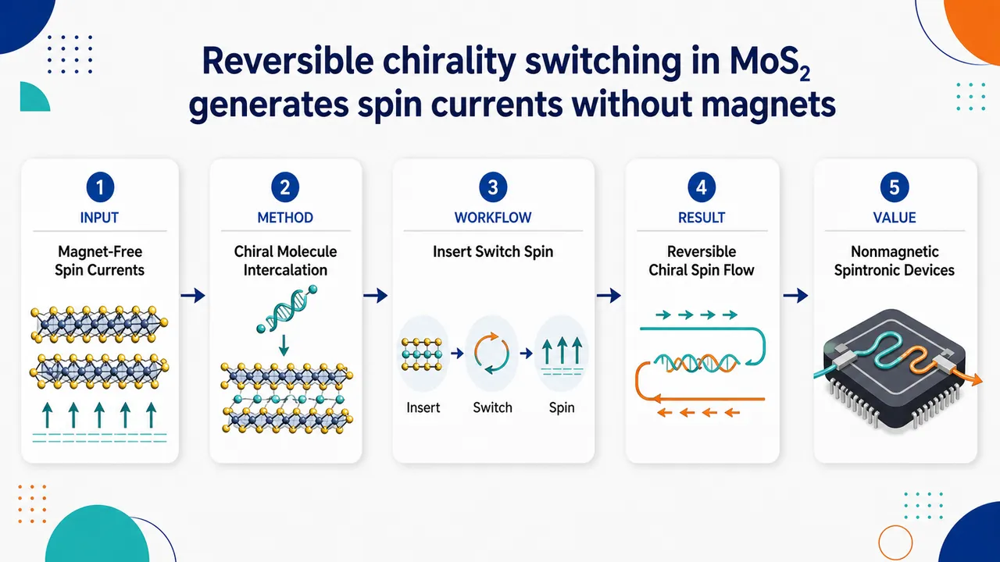
研究问题如何在不使用磁体、磁场或铁磁电极的条件下，让层状半导体 MoS₂ 产生可调控的自旋流；核心挑战是把“手性”从静态材料属性变成可开关、可逆控制的自旋电子学旋钮。创新方法将小手性分子像“可插拔楔子”一样插入 MoS₂ 层间，使原本层状晶体获得特定手性；再通过移除分子让手性状态反向或恢复，从而实现化学驱动的可逆手性开关，并利用手性诱导自旋选择效应在无磁条件下生成自旋流。工作流程输入为层状 MoS₂ 与小手性分子；手性分子进入 MoS₂ 层间并重排层间环境，形成具有可识别左右手性的半导体结构；随后通过分子移除或重新插入切换手性状态；在电荷输运过程中，手性 MoS₂ 对不同自旋电子产生选择性传输，最终输出无磁体驱动的半导体自旋流。关键结果实验证明 MoS₂ 的手性可以通过小手性分子的插入与移除实现动态、可逆切换；这种可切换手性能够在没有外加磁体的情况下产生自旋流，说明非磁性层状半导体也可借助手性结构实现自旋选择与自旋流生成。应用价值为低功耗、无磁体、自旋电子器件提供新的材料设计路线：用可逆化学插层替代传统磁性部件来控制自旋流，可用于可重构自旋开关、手性传感、自旋逻辑器件以及二维半导体自旋电子平台。核心概览
该论文报道通过小手性分子在 MoS₂ 层间的可逆插入/移除，实现手性动态切换，并在无磁体条件下产生半导体自旋流，属自旋电子学/手性材料方向。
方法要点
- 利用小手性分子插入 MoS₂ 层间，以调控材料手性。
- 通过移除这些分子实现手性的可逆切换。
- 在不使用磁体的条件下，利用手性切换诱导或调控自旋流。
- 研究对象是层状半导体 MoS₂，具体样品制备、表征手段和测试条件摘要未详述。
关键结果
- MoS₂ 的手性可通过小手性分子的插入/移除实现动态、可逆切换。
- 该手性切换可在无磁体条件下产生半导体自旋流。
- 结果表明手性调控可能成为非磁性自旋流生成的一种途径。
- 自旋流强度、开关速度、循环稳定性等具体性能指标摘要未详述。
创新性判断
- 可能的新颖点在于：将“小手性分子层间插入/移除”作为可逆调控 MoS₂ 手性的手段，并将其与无磁自旋流产生联系起来。
- 相比依赖铁磁体、磁场或固定手性结构的自旋电子学方案，该工作可能提供了一种动态、可逆、化学可控的手性自旋流生成机制。
- 但摘要信息极少，无法判断其相对既有 MoS₂ 手性调控、手性诱导自旋选择效应或无磁自旋流研究的具体突破幅度；创新性强弱需结合全文实验数据与对照体系确认。
-
16
📊 含图深析
💡 亮点：V[TCNE]x 被用于定量表征有机磁体自旋热输运。
📖 展开分析 + 配图
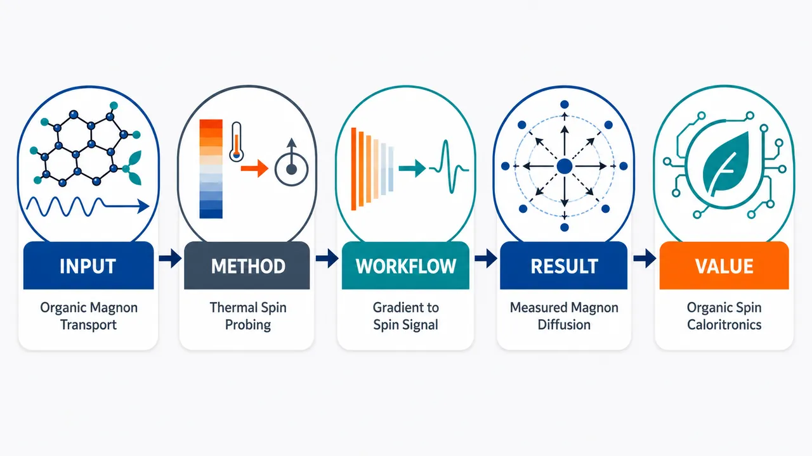
研究问题有机磁体 V[TCNE]ₓ（x≈2）能否像传统无机磁体一样承载可传播的磁振子自旋信息，并在垂直温度梯度下产生可测的纵向自旋塞贝克自旋流。创新方法将“磁振子扩散长度测量”和“纵向自旋塞贝克效应测量”引入 V[TCNE]ₓ 有机磁体体系，用温度梯度驱动自旋流、用扩散尺度刻画磁振子传播，把有机磁体纳入自旋热输运材料图谱。工作流程制备 V[TCNE]ₓ 有机磁性薄膜/器件 → 施加垂直温度梯度 → 激发磁振子自旋流 → 测量纵向自旋塞贝克信号 → 提取磁振子扩散长度 → 评估有机磁体中的自旋热输运能力。关键结果论文确认在 V[TCNE]ₓ（x≈2）中测得磁振子扩散长度，并观测到纵向自旋塞贝克效应，说明该有机磁体能够支持磁振子介导的自旋信息传播和热驱动自旋流产生。应用价值为有机自旋热电子学提供实验基础，拓展自旋热输运材料从传统无机磁体到低密度、化学可调的有机磁体，有望用于柔性、轻量化、可设计的热-自旋能量转换器件。核心概览
该论文研究有机磁体 V[TCNE]ₓ（x≈2）中的磁振子扩散长度与纵向自旋塞贝克效应，属于自旋热输运/自旋热电子学方向。
方法要点
- 以有机磁体 V[TCNE]ₓ（x≈2）为研究对象，关注其磁振子相关自旋输运性质。
- 测量磁振子扩散长度，用于表征磁振子自旋信息在材料中的传播尺度。
- 测量纵向自旋塞贝克效应，用于评估温度梯度驱动的自旋流产生能力。
- 具体样品制备、器件结构、测量几何、数据拟合方法等摘要未详述。
关键结果
- 摘要明确指出论文测量了 V[TCNE]ₓ（x≈2）的磁振子扩散长度。
- 摘要明确指出论文测量了该材料中的纵向自旋塞贝克效应。
- 研究将可用于自旋热过程研究的磁性材料范围扩展到有机磁体 V[TCNE]ₓ。
- 具体数值、温度依赖、与无机磁体的定量比较等摘要未详述。
创新性判断
- 可能的新颖点在于将磁振子扩散长度和纵向自旋塞贝克效应研究拓展到 V[TCNE]ₓ 这类有机磁体，而非传统无机磁绝缘体或铁磁材料。
- 若此前相关自旋热输运研究主要集中在无机磁体中，则该工作可能为有机磁体参与自旋热电子学提供了实验依据；但摘要未说明是否首次报道，因此不能确定其首创性。
- 该研究的潜在意义在于丰富自旋热过程可选材料体系，尤其是引入低密度、化学可调的有机磁性材料；但具体材料优势摘要未详述。
-
17
📊 含图深析
💡 亮点：综述铁电可调介电响应机制与应用。
📖 展开分析 + 配图
研究问题铁电材料的介电常数如何在外加电场等外场作用下发生可逆调控，并如何将这种“可调介电响应”转化为可调电容、微波调谐器件等实际功能器件性能。创新方法以综述方式把“外场—极化/畴结构变化—介电响应调谐—器件功能”串联成一条材料到器件的逻辑链，突出铁电可调介电材料在微波与可调电容应用中的机制关联，而非只罗列材料性能。工作流程从铁电材料体系出发，施加外部调控场，引发极化状态、畴结构或介电响应机制变化；随后分析介电常数可调性与损耗等性能表现，最后映射到可调电容、微波器件及相关功能器件应用场景。关键结果论文归纳了铁电可调介电材料的主要响应机制，梳理了其在可调电容和微波相关器件中的应用路径，并强调外场调控机制与器件性能之间的连接；摘要未显示新的实验数据、定量性能提升或明确设计准则。应用价值为开发电压可控、频率可调、小型化的电容和微波功能器件提供材料机制参考，可服务于可重构射频前端、调谐滤波器、移相器和智能电子系统中的介电调控设计。核心概览
这是一篇关于铁电可调介电材料的综述，聚焦外场调控介电响应机制及其在可调电容、微波器件等方向的应用。
方法要点
- 论文类型为综述，摘要未显示新的实验或理论模型。
- 主要讨论铁电材料在外加场作用下介电响应可调的物理机制。
- 覆盖材料层面与器件应用层面的关联分析。
- 应用范围包括可调电容、微波器件及相关功能材料方向。
- 具体材料体系、外场类型、表征方法和性能指标摘要未详述。
关键结果
- 论文总结了铁电可调介电材料的响应机制。
- 论文梳理了其在可调电容和微波相关器件中的应用。
- 摘要表明该综述试图连接“外场调控机制”与“器件应用”。
- 是否提出新的分类框架、性能趋势或设计准则，摘要未详述。
创新性判断
- 可能的新颖点在于将铁电可调介电材料的外场响应机制与具体器件应用进行综合梳理，而非仅讨论材料性能；但摘要信息有限，无法确认其系统性和独特程度。
- 相比一般铁电材料综述，该文可能更强调“可调介电响应”及其在微波、可调电容等功能器件中的应用导向；这一判断基于摘要表述，仍具有不确定性。
- 是否包含新的机理解释、应用路线图或材料设计原则，摘要未详述，不能断定其原创贡献。
-
18
📊 含图深析
💡 亮点：TRIDENT 解耦混合动作、安全约束与物理动力学。
📖 展开分析 + 配图
研究问题网络化CPS中的多智能体同时面对“离散模式+连续参数”的混合动作、训练过程中每一步都不能违规的硬安全约束、以及由通信/能耗/运动学等物理规律支配的动力学；三者不是独立难点，而会形成 F1→F2→F3→F1 的偏差闭环：离散梯度偏差破坏安全更新，安全 critic 误差污染物理价值估计，错误物理 reward shaping 又压平离散模式学习，导致拼接式安全MARL训练不稳、违规线性累积。创新方法TRIDENT 的 Aha 点是用“三叉戟式”联合设计逐项切断偏差泄漏：Stgc 在两个 Gumbel-Softmax 温度上做 Richardson–Romberg 梯度校正，把离散动作梯度偏差从 O(τ) 降到 O(τ²)；Lcpo 用 Lyapunov 收缩约束、顺序 trust-region 更新和 recovery step 保证每次迭代向安全集移动；Pirc 将价值函数分解为冻结物理先验 Qₚₕys 与可学习残差 Qᵣₑₛ，而不是把物理知识加进 reward，从而保留 Bellman 固定点并降低 critic 方差。工作流程输入多智能体局部观测、全局状态、安全阈值和物理公式先验；每个 agent 的结构化混合 actor 先选择离散物理模式，再生成该模式对应的连续控制参数；训练时用双温度 Stgc 计算低偏差离散梯度，执行联合动作并收集 reward/cost；Pirc 用 frozen physics prior + residual MLP 更新奖励 critic，同时更新 Lyapunov cost critics；随后按 agent 顺序求解带 KL trust region 的 Lyapunov 约束优化，若线性可行域为空则执行 recovery 梯度步；最终输出满足训练期安全约束的去中心化混合动作策略。关键结果理论上达到 constrained Nash equilibrium 的 Õ(1/√K) 收敛率，并把累计约束违规控制在 O(√K)，避免朴素拼接方法的 Θ(K) 线性违规累积。UAV-MEC 实验中，TRIDENT 的 total violation 为 1.4，显著低于 MADDPG 的 31.0、MACPO 的 5.9、MADAC 的 6.3；reward 为 −4.68±0.27，优于列出基线。消融显示移除 Lyapunov 后违规升至 8.3，移除 Pirc 后收敛降至 0.62×，使用 additive physics shaping 后 reward 和 safety 同时变差。扩展到 32 架 UAV 时，违规增长约为 N¹.05，接近线性。应用价值该研究为无人机边缘计算、自动交叉口、机器人仓储、车队协同等真实CPS提供一种可证明更安全的训练框架：系统可以在训练阶段就减少电量耗尽、碰撞、覆盖丢失、任务中断等物理风险，同时利用已知物理模型降低样本浪费，并在多智能体规模扩大时保持较稳定的安全与性能表现。第一部分：核心概览 (Overview)
Trident 针对网络化 CPS 中混合动作、训练期硬安全与物理动力学先验三者相互干扰的问题，提出“三向耦合”形式化解释，并以 Stgc + Lcpo + Pirc 三模块协同消除偏差泄漏。其核心地位在于：从“拼接式安全 MARL”推进到“联合设计式可证明安全混合动作 MARL”，同时给出 (tildeO(1/sqrt K)) 收敛、(O(sqrt K)) 累计违规界与多场景实证优势。
---
第二部分：结构化快速回顾
《TRIDENT: Breaking the Hybrid-Safety-Physics Coupling for Provably Safe Multi-Agent Reinforcement Learning》（None，）
背景
网络化 cyber-physical systems 同时要求处理离散—连续混合动作、训练期间硬安全约束、物理规律支配的动力学。UAV-MEC、自动交叉口、机器人仓储、车队协同等场景中，训练阶段的违规动作会造成不可逆物理后果。
方法
Trident 由三个协同模块构成：
- Structured Hybrid Actor / Stgc：用 Richardson–Romberg 校正将 Gumbel-Softmax 梯度偏差从 (O(τ)) 降至 (O(τ²⁾)。
- Lcpo：用 Lyapunov 约束与 sequential trust-region update 保证每次迭代的可行性。
- Pirc：用 frozen physics prior + learned residual critic 分解价值函数，避免 reward shaping 改变 Bellman 固定点。
结果
理论上达到 (tildeO(1/sqrt K)) 的 constrained Nash equilibrium 收敛率，以及 (O(sqrt K)) 累计约束违规界。UAV-MEC 中，Trident 的 total violation 为 1.4，低于 MADDPG 的 31.0、MACPO 的 5.9；reward 为 −4.68 ± .27，优于所有列出基线。
讨论
核心洞见不是单个模块改进，而是发现 F1→F2→F3→F1 的偏差闭环：混合动作估计偏差破坏安全更新，安全 critic 误差传导到物理建模，错误 reward shaping 又破坏离散模式学习。
局限
P 值、置信区间、真实硬件部署结果未报告；理论依赖 bounded reward/cost、Lipschitz policies、bounded advantage variance、Slater feasibility 等标准假设；物理 prior 需要领域知识，跨领域迁移成本未被系统量化。
结论
Trident 将 hybrid-action MARL、safe MARL、physics-informed RL 三条路线统一到一个共同可证明框架中，在理论上打破线性累计违规，在实验上同时提升 reward、安全性与扩展性。
---
第三部分：逐章节冷凝解析 (Section-by-Section Condensing)
Abstract
Hybrid-safety-physics triad defines the target problem
核心问题是网络化 CPS 中三类困难同时出现：hybrid discrete–continuous actions、hard training-time safety constraints、physics-governed dynamics。摘要直接界定场景为：*"Safe coordination in networked cyber-physical systems forces learning algorithms to simultaneously handle hybrid discrete–continuous actions, hard training-time safety constraints, and physics-governed dynamics."* 这意味着算法不能只优化最终性能，还必须在训练期间避免真实物理违规。
Three-way coupling is the central theoretical diagnosis
关键理论贡献是证明三类困难不是独立模块可拼接解决，而是形成有向偏差环。摘要称：*"these three features form a directed cycle of biases that defeats any naive composition of off-the-shelf modules"*，并将其形式化为 three-way coupling lemma。这个设定把问题从“缺少好模块”转化为“模块间误差互相放大”。
Trident uses three co-designed components
Trident 的三个组件分别对应三类泄漏：Richardson–Romberg gradient correction、Lyapunov-constrained sequential trust-region update、physics-informed residual critic。摘要给出精确表述：*"a Richardson–Romberg gradient correction reducing Gumbel-Softmax bias from (O(τ)) to (O(τ²)), a Lyapunov-constrained sequential trust-region update enforcing per-iterate feasibility, and a physics-informed residual critic that decomposes value rather than reward."*
Theoretical guarantees combine convergence and cumulative safety
理论结果包含 constrained Nash equilibrium 收敛与累计违规控制：*"We prove an (tildeO(1/sqrtK)) convergence rate to a constrained Nash equilibrium and an (O(sqrtK)) cumulative-violation bound."* 其中累计违规界比仅在收敛时满足约束更强，因为 CPS 训练期间也必须安全。
Empirical gains are large across three domains
实验覆盖 multi-UAV mobile-edge computing、autonomous intersection management、hybrid SMAC variant。摘要报告：*"Trident cuts training-time violations by 95.5% over MADDPG and 76.3% over MACPO, while improving reward by 13.5% over the strongest unconstrained baseline."* 这表明 reward 与 safety 未呈传统 trade-off，而是同时改善。
---
1 Introduction
UAV-MEC motivates irreversible training-time risk
引言用灾区 UAV-MEC 说明 CPS 中训练期安全的现实性：每架 UAV 在几十毫秒内同时选择服务器链路、卸载比例与轨迹，并满足电量、覆盖、间距限制。原文描述为：*"Within tens of milliseconds, each UAV must select which of several heterogeneous backbone servers will relay a rescue worker’s video stream ... decide how much of the upcoming computation to offload ... and update its trajectory while keeping battery, coverage, and inter-UAV separation strictly within hardware limits."* 训练期错误会带来实体损害：*"every unsafe action committed during training has physical, irreversible consequences—a depleted battery, a mid-air near-miss, a dropped emergency video stream."*
Three structural features appear jointly rather than separately
CPS 安全协同的三个特征被编号为 F1/F2/F3，且“成组出现”。原文强调：*"three structural features appear together, never in isolation."*
- F1 hybrid action structure：动作 (a=(a^d,a^c))，离散部分是模式，连续部分是执行参数。
- F2 hard, training-time safety：安全阈值不仅收敛时满足，而且每个可执行迭代都要满足。
- F3 physics-governed dynamics：transition 和 reward 的大块结构由 Shannon capacity、Friis path loss、Newton equations 等封闭形式控制。
Hybrid action cannot be solved by naive discretization or relaxation
离散化连续动作会损失精度，放松离散动作会产生物理上不可能的插值。原文：*"discretizing (a^c) destroys resolution while relaxing (a^d) produces infeasible interpolations between physically incompatible modes."* 这解释了为什么 mixed discrete-continuous control 不是普通连续控制或普通离散控制的简单扩展。
Hard safety demands per-iterate feasibility
安全约束必须在训练全过程中满足：*"cost thresholds must be respected not only at convergence but at every iterate the policy is allowed to execute on hardware."* 这直接排除了只依赖 asymptotic feasibility 的 Lagrangian 方法，因为中间策略可能已经造成真实违规。
Physics priors reduce sample waste but can corrupt policy learning if inserted incorrectly
物理规律已知时，从数据中重新学习会浪费样本：*"substantial portions of the transition kernel and reward follow closed-form physics—Shannon capacity, Friis path loss, Newton’s equations—and rediscovering them from scratch wastes orders of magnitude of samples."* 但如果把物理信息作为 reward shaping 加进去，会改变 soft-Bellman fixed point，破坏离散分支结构。
Naive module composition is empirically unstable and theoretically circular
简单做法是把 hybrid-action MARL、MACPO 安全层、physics-shaped reward 拼接。结果被概括为：*"We tried exactly this composition; the result is unstable, often worse than each component in isolation."* 根因是三类误差形成闭环，而不是独立噪声。
F1→F2 leak comes from Gumbel-Softmax gradient bias
标准 Gumbel-Softmax 有 (O(τ)) 梯度偏差，进入 Lagrangian 或 trust-region safety update 后会让 multiplier 震荡。原文：*"Standard Gumbel-Softmax estimators carry an (O(τ)) gradient bias ... substituted into a Lagrangian or trust-region safety update, this bias produces a multiplier that oscillates instead of decreasing the Lyapunov function."*
F2→F3 leak comes from safety critic underestimating rare branches
physics-agnostic safety critic 在离散分支上具有多峰 cost-value，少见分支的可行性 margin 容易低估。原文：*"without physics priors it underestimates feasibility margins on rarely visited branches, inducing recovery to over-correct on the wrong branch."*
F3→F1 leak comes from additive reward shaping flattening modes
把 physics 折叠进单个 scalar reward-shaping term 会破坏离散分支学习：*"the standard remedy of folding physics into a single scalar reward-shaping term shifts the soft-Bellman fixed point and destroys the per-branch structure the discrete sub-policy is meant to exploit."* 结果是 discrete head 学到退化的 single-mode behavior。
Trident reframes the object of study
目标不是“给 MARL 加安全”或“给 safe RL 加物理”，而是 constrained hybrid-action policy with physics-shaped gradients and Lyapunov-shaped updates。原文：*"the right level of abstraction is neither 'add safety to MARL' nor 'add physics to safe RL', but a joint object."*
Four contributions are explicitly enumerated
贡献包括：
- coupling lemma：*"formalizes why hybrid actions, hard safety, and physics priors cannot be composed naively"*。
- Trident framework：*"co-designs hybrid-action, safety, and physics modules"*。
- joint guarantees：(tildeO(1/sqrt K))、(O(sqrt K))、physics-driven sample complexity reduction。
- empirical results：*"95.5% fewer violations than MADDPG, 76.3% fewer than MACPO, 13.5% higher reward, scaling to 32 agents."*
---
2 Related Work
Hybrid-action MARL lacks safety and convergence guarantees
已有 hybrid-action MARL 包括 Deep MAPQN、MAHHQN、parameterized-action factorization。局限是没有收敛率和安全保证：*"None provides convergence rates or safety guarantees, and all rely on standard Gumbel-Softmax estimators ... whose (O(τ)) gradient bias is precisely the source of the F1→F2 leakage."* 因此 Trident 的 Stgc 针对的是该路线的核心估计偏差。
Safe MARL usually guarantees asymptotic or restricted safety
MACPO、MAPPO-Lagrangian、MADAC、shielding methods 分别有不同限制。MAPPO-Lagrangian 被指出：*"only guarantees feasibility at convergence"*；MADAC 则：*"inherits the unbiased-gradient assumption that F1 violates"*；shielding methods：*"guarantee learning-time safety only with hand-designed shields and cannot accommodate hybrid actions."* 这些比较凸显训练期硬安全与混合动作的同时处理缺口。
Lyapunov safe RL is close but not multi-agent hybrid
Chow et al. 与 Huh and Yang 的 Lyapunov 路线被视为最接近的安全机制，但局限为：*"restricted to single-agent, continuous-action problems and assumes an unbiased policy gradient."* Trident 将 Lyapunov 机制扩展到 multi-agent、hybrid-action，并用 Stgc 弱化 unbiased-gradient 假设破裂的问题。
Physics-informed RL often uses residual or reward shaping but misses constrained MARL coupling
Residual policy learning 与 physics-informed MBRL 已利用模型先验，但 reward-shaping 变体存在 F3→F1 泄漏。原文：*"Their reward-shaping variants, however, suffer the F3→F1 leakage we identify, since additive shaping shifts the soft-Bellman fixed point."* Trident 的差别是把 physics prior 放进 centralized critic value decomposition，而不是直接改 reward。
Variance reduction in constrained MARL is newly quantified
Pirc 的理论价值在于对 constrained-MARL 下 residual critic 的方差压缩进行量化：*"We adapt residual ideas to a centralized multi-agent critic and quantify, for the first time, the resulting variance reduction in a constrained-MARL setting."*
---
3 Preliminaries
CPS coordination is formalized as C-MAMDP
系统被建模为 Constrained Multi-Agent MDP：
[
M=(N,S,Aᵢᵢ,P,r,cₖ,dₖₖ₌₁K,γ)
]
原文定义包含 (N) agents、global state (S)、hybrid per-agent action space、transition kernel、shared reward、bounded costs 与 discount factor：*"We model CPS coordination as a Constrained Multi-Agent MDP (C-MAMDP)..."*
Each agent has hybrid action space
每个 agent 的动作空间为：
[
Aᵢ₌Aᵢ^d× Aᵢ^c
]
其中 (Aᵢ^d=1,łdots,Mᵢ)，(Aᵢ^csubseteq Rpᵢ)。原文：*"hybrid per-agent action space (Aᵢ=Aᵢd×Aᵢc)"*。这对应离散 mode 与连续 execution parameter。
Training uses CTDE
采用 centralized-training, decentralized-execution (CTDE)：训练时 critic 可访问 full state，部署时 actor 只依赖 local observations。原文：*"centralized critics access the full state in training while actors rely solely on local observations at deployment."*
Objective is constrained Nash equilibrium
目标是 constrained Nash equilibrium：最大化 expected value，同时满足所有 cost-value 阈值：
[
maxbₘπEₛ_₀ₛᵢₘₕ̊ₒVbmπ(s₀₎
quad
s.t.quad
Eₛ_₀Vc_ₖbmπ(s₀₎łe dₖ
]
均衡解释为：*"a joint policy from which no agent can unilaterally improve its constrained return."*
Hybrid policy uses conditional factorization
policy 被分解为：
[
πᵢ₍ₐᵢ|oᵢ₎₌πᵢ^d(aᵢ^d|oᵢ₎πᵢ^c(aᵢ^c|oᵢ,aᵢ^d)
]
关键是 conditional 而非 independent product。原文解释：*"This conditional—rather than joint or product—factorization is essential because the continuous parameters change meaning across discrete modes."* 例子是同一个 “power” scalar 在不同通信链路上具有不同物理单位或含义，不能共享一个 continuous head。
---
4 The Three-Way Coupling Challenge
The coupling challenge is a directed bias cycle
三类特征通过 actor、safety critic、reward critic 闭合成有向环。原文：*"features (F1)–(F3) induce a directed cycle of bias that closes through the actor, the safety critic, and the reward critic of any naive composition."* Figure 1 中红色波浪箭头代表 naive composition 的 bias-leakage cycle，绿色虚线代表 Trident 的修正机制。
Lemma 1 quantifies per-iteration violation increment
Lemma 1 给出 baseline 的每轮 constraint violation 增量上界：
[
Δₖ^tłe
ηₛβGS|nablaₐ Ac_ₖ|ᵢₙfty
+
ηₛϵ_Q L_π
+
Cfₗₐₜ|Qₚₕyₛ-Q^*|ᵢₙfty
]
对应三项泄漏。原文：*"For a baseline using a Gumbel-Softmax estimator with bias (βGS), a Lagrangian or trust-region safety step of magnitude (ηₛ), and a critic with MSE (ϵ_Q), the per-iteration constraint-violation increment satisfies..."*
F1→F2 leak is controlled by discrete-gradient bias
第一项 (ηₛβGS|nablaₐ Ac_ₖ|ᵢₙfty) 表示 Gumbel-Softmax 偏差进入 safety update。变量定义为：*"Let (βGS:=|E[hat g^d]-g^d|) be the discrete-branch gradient bias."*
F2→F3 leak depends on critic MSE and policy Lipschitzness
第二项 (ηₛϵ_Q L_π) 表示 safety critic 误差通过 policy sensitivity 影响物理价值估计；其中 (L_π) 是 policy Lipschitz constant。原文：*"where (L_π) is the policy Lipschitz constant."*
F3→F1 leak captures entropy flattening from misspecified shaping
第三项 (Cfₗₐₜ|Qₚₕyₛ-Q^*|ᵢₙfty) 表示错误 physics shaping 让离散 mode 被压平。原文：*"where ... (Cfₗₐₜ) measures the entropy-flattening of misspecified shaping."*
Naive combinations lead to linear cumulative violation
drop-in 组合下，ST estimator 有 (Θ(1)) 偏差，floored GS 有 (Θ(τₘᵢₙ))，无物理先验 critic MSE 为 (Θ(1))，additive shaping 的 (Cfₗₐₜ) 不可控。原文：*"each summand of (1) is bounded away from zero and cumulative violation grows as (Θ(K))."*
Cycle breaking requires three non-interchangeable interventions
Lemma 1 推导出三个设计原则：
- Principle 1：(βGS=o(τ))，Stgc 达到 (O(τ²⁾)。
- Principle 2：per-iterate feasibility，Lyapunov trust region + recovery。
- Principle 3：multiplicative physics prior，(Q_φ=Qₚₕyₛ+Qφres)，且 (Qₚₕyₛ) frozen。
原文强调：*"closing the cycle requires three co-designed—not interchangeable—interventions, one per term."*
---
5 Trident: A Co-Designed Framework with Joint Guarantees
Trident implements the three design principles as three modules
Trident 包含 Sha、Pirc、Lcpo，分别对应 hybrid actor、physics residual critic、Lyapunov-constrained optimization。原文：*"We instantiate these principles into Trident ... comprising three co-designed modules: a Structured Hybrid Actor (Sha), a Physics-Informed Residual Critic (Pirc), and Lyapunov cost critics (Lcpo)."*
Each module cancels one bias leak from Lemma 1
架构不是简单叠加，而是逐项消去 Lemma 1 的泄漏。原文：*"Each module explicitly cancels one bias leak from Lemma 1."* 这也是 Trident 与 hybrid MARL + MACPO + physics shaping 拼接方案的根本差别。
---
5.1 Structured Hybrid Actor
Actor emits mode-specific hybrid actions
每个 agent 的动作 ((aᵢ^d,aᵢ^c)) 分两阶段生成：离散部分选择物理模式，连续部分参数化该模式。原文：*"The actor must emit, for each agent, a hybrid action ((aᵢ^d,aᵢ^c)) whose discrete part selects a physically meaningful mode and whose continuous part parameterizes it."*
Discrete branch uses Gumbel-Softmax with straight-through execution
离散 logits 为：(ellᵢ₌fθ_ᵢ^d(oᵢ₎ᵢₙRMᵢ)，通过 Gumbel-Softmax：
[
hat aᵢ^d(τ)=øperatornamesoftmax((ellᵢ₊g)/τ),quad gⱼsim Gumbel(0,1)
]
执行时用 argmax，梯度走 soft surrogate。原文：*"with the standard straight-through trick replacing the soft sample by its argmax at execution while routing gradients through the soft surrogate."*
Continuous branch is conditioned on the discrete sample
连续网络输出 Gaussian：
[
(μᵢ,σᵢ₎₌gθ_ᵢ^c(oᵢ,hat aᵢ^d),quad
aᵢ^csim N(μᵢ,øperatornamediag(σᵢ²⁾⁾
]
随后 tanh-squash 并进行 log-prob correction。原文：*"followed by a tanh-squash with the standard log-prob correction to respect the per-mode box constraint."*
Plain GS and ST produce unsafe bias regimes
plain GS 有 (O(τ)) bias，但低温导致 (O(1/τ²⁾) variance；ST 则保持 (O(1)) bias。原文：*"Plain Gumbel-Softmax carries an (O(τ)) bias that vanishes only at the price of gradient variance (O(1/τ²⁾); the Straight-Through (ST) estimator trades this for an (O(1)) bias that persists under annealing."*
Stgc uses Richardson–Romberg cancellation
Stgc 在两个温度 (τ) 与 (τ₀>τ) 上计算 Jacobian 并线性组合：
[
nablaθ^dhat aSₜgc^d
=
(1+łambda_τ)nablaθ^dhat a^d(τ)
-łambda_τnablaθ^dhat a^d(τ₀₎,
quad
łambda_τ=fracττ₀₋τ
]
原文：*"we evaluate the Gumbel-Softmax Jacobian at two temperatures, the current (τ) and a fixed reference (τ₀>τ), and linearly combine them so that the leading (O(τ)) term cancels."*
Bias reduces from first order to second order
通过展开 (J(τ)=J₀₊τ J₁₊τ²J₂₊O(τ³⁾)，Eq. (2) 消去 (τ J₁)。原文：*"equation (2) exactly cancels the (τ J₁) term while leaving an (O(τ²⁾) residual."*
Overhead is measured as approximately 18%
Stgc 代价是一个额外 forward pass。原文报告：*"The cost is a single additional forward pass at the fixed reference (τ₀), which adds about 18% wall-clock overhead in our profiling."*
Theorem 2 formalizes the bias bound
在 (|ell|ᵢₙftyłe ellₘₐₓ)、(τin(0,τ₀/2)) 下：
[
łeft|
E[nablaθ^dhat aSₜgc^d]
-nablaθ^dE[a^d]
i̊ght|
łe Cτ²/τ₀
]
原文对比：*"plain GS attains (O(τ)) and ST attains (O(1))."*
Annealing makes cumulative F1→F2 leakage constant
使用 (τ(t)=τ₀β^t) 时，(sumₜ τ(t)²⁼O(1))，所以 F1→F2 泄漏只贡献常数级累计违规。原文：*"the F1→F2 leak contributes only a constant to the cumulative violation, instead of the (Θ(K)) contribution of plain GS."*
---
5.2 Lyapunov-Constrained Sequential Policy Optimization
Safety mechanism must enforce per-iterate feasibility
Lcpo 的出发点是 Lagrangian multiplier 在收敛前会震荡，导致训练中执行 unsafe action。原文：*"Lagrangian methods ... fail this requirement: their multipliers oscillate while approaching feasibility, and during the oscillation the policy can—and routinely does—execute unsafe actions on the environment."*
Lyapunov constraint converts feasibility into one-step contraction
为每个约束维护：
[
Lₖ₍ₛ₎₌Vc_ₖbmπ(s)+ξₖ,quad ξₖge 0
]
并要求：
[
E[Lₖ₍ₛ')]-Lₖ₍ₛ₎łe -αₖ₍Lₖ₍ₛ₎₋dₖ₎
]
其中 (αₖᵢₙ₍₀,1))。原文：*"We therefore replace the Lagrangian with a Lyapunov constraint, which converts the asymptotic feasibility condition into a one-step contraction toward the safe set."*
Lyapunov contraction has clear feasible/infeasible interpretation
当 (Lₖ>dₖ) 时，右侧严格为负，迫使 cost-value 下降；当状态可行时，约束退化为 non-expansion。原文：*"whenever the current state is infeasible ... forces the new policy to drive the cost-value down by at least an (αₖ) fraction of the current excess; whenever the state is feasible, the constraint reduces to a non-expansion condition."*
Agents are updated sequentially to control non-stationarity
每次迭代按 (i=1,łdots,N) 顺序更新。每个 agent 在前序 agents 已更新、后续 agents 仍旧策略的条件下解 trust-region constrained problem。原文：*"At iteration (t) the agents are updated in a fixed order (i=1,łdots,N); each agent solves a per-agent constrained trust-region problem given the previous agents’ updated policies and the remaining agents’ old policies."*
Trust region controls linearization error
约束优化问题 Eq. (4) 中包含平均 KL trust region：
[
bar DKL(bmπθ_ᵢ|bmπᵢ^t)łe δTR
]
其中 (δTR=tildeO(1/sqrt K))。原文：*"The first inequality is the linearization of (3); the trust region (δTR=tildeO(1/sqrt K)) ensures the linearization remains valid."*
Sequential update avoids simultaneous multi-agent blow-up
simultaneous update 会因每个 agent 的变化破坏其他 agent 的梯度假设而不稳定。原文：*"Sequential—rather than simultaneous—updates avoid the well-known non-stationarity blow-up of joint multi-agent gradient ascent."*
Recovery step handles empty linearized feasible sets
当 Eq. (4) 的线性化约束集为空时，MACPO 返回上一迭代；Trident 则做恢复梯度步：
[
θᵢt⁺¹
=
θᵢ^t
-
ηᵣₑc
sumₖ:Vc_ₖbmπ^t>dₖ
nablaθ_ᵢVc_ₖbmπθ_ᵢ(s₀₎
big|θ_ᵢ₌θ_ᵢ^ₜ
]
原文：*"We instead apply a recovery gradient step that explicitly moves toward the feasible region."*
Recovery only targets violated constraints
恢复项只对当前 violated constraints 求和，因此不会扰动未违规方向。原文：*"The summation is restricted to currently violated constraints, so feasible directions are not perturbed."*
Lcpo cancels the (ηₛ)-dependent leakage term
结合 Lyapunov contraction、trust region 与 recovery，第二项泄漏得到控制。原文：*"Together, (3)–(5) cancel the (ηₛ)-dependent second summand of (1)."* 其中 (ηₛ₌O(δTR)=tildeO(1/sqrt K))，critic error 从 Pirc 获得 (ϵ_Q=O(1/sqrt n))。
---
5.3 Physics-Informed Residual Critic
Physics enters as frozen value decomposition rather than reward shaping
Pirc 的核心是把 physics prior 作为 (Q) 的 frozen component，而不是加到 reward。原文：*"Principle 3 dictates that physics priors enter the critic multiplicatively—as a frozen component of (Q)—rather than additively in the reward."*
Additive shaping changes the Bellman fixed point
reward shaping (r→ r+ømega Qₚₕyₛ) 会移动 soft-Bellman fixed point 并 bias optimal policy。原文：*"an additive shaping (r→ r+ømega Qₚₕyₛ) shifts the soft-Bellman fixed point and therefore biases the optimal policy itself."*
Residual critic preserves policy target while reducing learning burden
critic 分解为：
[
Q_φ(s,bm a)=Qₚₕyₛ(s,bm a)+Q_φᵣₑₛ(s,bm a)
]
其中 (Qₚₕyₛ) closed-form 且 frozen，residual MLP 学未知部分。原文：*"decomposing the critic, in contrast, preserves the optimal policy and only changes the function class that needs to be learned."*
UAV-MEC physics prior uses Shannon capacity and energy terms
UAV-MEC 中 closed-form physics 包含 3GPP air-to-ground channel 下的通信容量、传输延迟与能耗：
[
Cᵢⱼ=Błog₂₍₁₊PᵢG(dᵢⱼ,hᵢ₎/σ²⁾
]
[
Tᵢⱼtx=Dⱼαᵢⱼ/Cᵢⱼ
]
[
Eᵢ₌PfₗyTᵢfly+PcₘₚTᵢcmp+PₜₓsumⱼTᵢⱼtx
]
原文：*"In UAV-MEC it captures the Shannon-capacity transmission delay and kinematic energy of the standard 3GPP air-to-ground channel."*
Physics prior is set to negative weighted latency and energy
[
Qₚₕyₛ=-(ømega₁Tₜₒₜₐₗ+ømega₂Eₜₒₜₐₗ)
]
原文：*"we set (Qₚₕyₛ=-(ømega₁Tₜₒₜₐₗ+ømega₂Eₜₒₜₐₗ)), which captures the dominant linear effects analytically."*
Residual MLP learns non-analytic corrections
(Q_φᵣₑₛ) 是四层 MLP，用于学习 interference、queueing dynamics、partial observability 等未被物理公式捕获的因素。原文：*"The residual (Q_φᵣₑₛ) is a four-layer MLP that learns only the corrections—interference, queueing dynamics, partial observability—that physics does not capture."*
TD loss is applied to the sum of frozen prior and residual
critic loss：
[
Lcᵣᵢₜ(φᵣₑₛ)
=
Eₘₐₜₕcₐₗ B[(Qₚₕyₛ+Q_φᵣₑₛ-y)²]
]
target：
[
y=r+γ(Qₚₕyₛ(s',bm a')+Qbₐᵣφᵣₑₛ(s',bm a'))
]
原文：*"the critic is trained with the standard one-step TD loss applied to the sum."*
Frozen physics prior reduces sample complexity via explained variance
因为 (Qₚₕyₛ) 不训练，样本只需覆盖 residual variance。原文：*"Because (Qₚₕyₛ) is frozen, only the residual variance is paid for in samples, and the sample complexity contracts proportionally to the explained variance of the physics term."*
---
5.4 Algorithm and Joint Theoretical Guarantees
Algorithm 1 integrates Stgc, Pirc, and Lcpo in one loop
每次训练迭代包括：计算双温度 Jacobian、采样混合动作、执行 joint action、更新 residual critic 与 cost critics、按 agent 顺序做 constrained trust-region 或 recovery、退火温度。原文：*"Algorithm 1 composes the three modules into a single training loop."*
Cycle-breaking follows from substituting module-level bounds into Lemma 1
将 Theorem 2 的 (βGS=O(τ²⁾)、Lcpo 的 trust-region bound、Pirc 的 variance contraction 代入 coupling bound。原文：*"converts the three previously additive leaks into a single jointly controlled error—the cycle-breaking promised in §4."*
Regularity assumptions are standard but nontrivial
理论依赖 Assumption 4，包括 bounded reward and cost、Lipschitz policies、bounded advantage variance、Slater feasibility。原文：*"Under standard regularity ... bounded reward and cost, Lipschitz policies, bounded advantage variance, Slater feasibility."* 这些条件限制了理论保证适用范围。
Theorem 3 gives constrained-Nash convergence
平均 suboptimality 满足：
[
frac1Ksumₜ₌₁^K
[Vbmπ^*(s₀₎₋Vbmπ^t(s₀₎]
=
tildeO
łeft(
fracNσ_Asqrt K
+
fracN²(1-γ)³sqrt K
i̊ght)
]
原文称该速率：*"matches the standard (tildeO(1/sqrt K)) of sample-efficient policy optimisation despite the strictly harder constrained, multi-agent, hybrid-action regime."*
Theorem 3 gives cumulative violation bound
对每个 constraint (k)：
[
sumₜ₌₁^K
max(0,Vc_ₖbmπ^t(s₀₎₋dₖ₎
=
O
łeft(
frac1αₖ
sqrtfrac K1-γ
i̊ght)
]
原文强调：*"The violation bound is cumulative rather than asymptotic, so safety improves throughout training rather than only at convergence."*
Sequential updates introduce (N²) telescoping artifact
Theorem 3 中 (N²) 项来自 sequential update 的 telescoping error。原文：*"the (N²) telescoping artefact of sequential updates ... is empirically dominated by the leading (Nσ_A/sqrt K) term up to the largest (N=32) we test."*
---
6 Experiments
Experiments cover three F1–F3 benchmark families
实验环境包括：
- Multi-UAV MEC：hybrid offloading，3GPP TR 38.901 channel。
- Autonomous Intersection Management (AIM)：hybrid lane/speed control，collision constraints。
- Hybrid-action SMAC variant：discrete target + continuous offset。
原文：*"We evaluate Trident on three benchmarks exhibiting the (F1)–(F3) features."*
Baselines include safe, hybrid, and unconstrained MARL methods
比较对象包括 MADDPG、MATD3、FACMAC、MAPPO、HAPPO、MAPPO-Lagrangian、MACPO、MADAC、Shielded RL。原文：*"We compare against a comprehensive set of state-of-the-art safe and hybrid MARL baselines."* 无法原生处理 hybrid actions 的 baseline 用 discretized 或 continuous-relaxed 变体。
UAV-MEC main table uses 10 seeds and 20K episodes
Table 1 明确：*"mean ± std, 10 seeds, 20K episodes."* 指标包括 reward、execution time、energy、throughput、energy violation percentage、coverage violation percentage、total violation。
Trident dominates reward and safety simultaneously on UAV-MEC
Table 1 中 Trident：reward −4.68 ± .27，exec 4.31 ± .22 s，energy 55.8 ± 2.8 J，throughput 28.2 ± 1.1，E.V. 0.8%，C.V. 0.6%，Total V. 1.4。对比：
- MADDPG total violation 31.0，reward −5.41 ± .38。
- MACPO total violation 5.9，reward −5.61 ± .39。
- MADAC total violation 6.3，reward −5.46 ± .40。
原文总结：*"Trident attains state-of-the-art on every reward and safety metric simultaneously."*
Safe baselines trade reward for safety, Trident avoids this trade-off
MAPPO-Lag、MACPO、MADAC 违规较低但 reward 较差；unconstrained baselines reward 较好但违规高。原文：*"previous methods cannot occupy [this regime], since classical baselines trade safety for reward while existing safe baselines do the reverse."*
Ablations identify each principle’s necessity
Table 2 移除单个模块：
- Full Trident：R −4.68，T.V. 1.4，Conv. 1.00×。
- w/o Stgc：R −4.95，T.V. 2.1，Conv. 0.82×。
- w/o Lyap.：R −4.74，T.V. 8.3，Conv. 0.91×。
- w/o Recovery：R −4.79，T.V. 3.9，Conv. 0.93×。
- w/o Pirc：R −5.12，T.V. 1.8，Conv. 0.62×。
- w/o Trust region：R −5.04，T.V. 7.5，Conv. 0.74×。
- w/o Hybrid actions：R −5.38，T.V. 2.4，Conv. 0.78×。
- w/o Sequential update：R −4.81，T.V. 3.7，Conv. 0.88×。
- Additive phys.：R −5.03，T.V. 2.6，Conv. 0.71×。
原文：*"Each row removes one component; the rightmost column maps it to a design principle."*
Removing physics hurts convergence most
w/o Pirc 的 convergence 只有 0.62×，是 Table 2 中最低之一。原文：*"Removing the physics critic ... slows convergence most, confirming the variance-contraction prediction of Theorem 5."*
Replacing Lyapunov with Lagrangian inflates violations
w/o Lyap. 的 total violation 从 1.4 增至 8.3。原文：*"replacing Lyapunov with a vanilla Lagrangian ... inflates violations several-fold."*
Additive physics shaping validates the F3→F1 leak
Additive phys. 相比 residual：reward 从 −4.68 降至 −5.03，T.V. 从 1.4 升至 2.6，Conv. 从 1.00× 降至 0.71×。原文：*"The most diagnostic row is the last: replacing residual with additive-physics shaping degrades both reward and safety."*
Scalability is tested up to 32 UAVs
Table 3 扫描 (Nin4,8,16,32)，5 seeds。原文：*"Table 3 sweeps (Nin4,8,16,32)."* Trident 的违规增长拟合为 (N¹.⁰⁵)：*"its violations grow as (N¹.⁰⁵) (least-squares fit), close to the linear lower bound."*
Classical CTDE methods degrade super-linearly with agent count
Table 3 中可见 MADDPG total violations 从 31、74、186 到 453；FACMAC 从 25、52、118 到 272；MACPO 从 5.9、11.4、24.7 到 58.3。原文解释：*"classical CTDE methods degrade super-linearly precisely where safety matters most."*
Wall-clock scaling benefits from physics variance contraction
尽管 Pirc 增加物理计算，N=32 时单迭代 wall-clock 仍低于 MACPO。原文：*"Wall-clock per iteration also remains below MACPO at (N=32), since the variance contraction induced by the physics term outweighs its marginal per-step cost."*
Statistical reporting lacks P values
实验报告 mean ± std、seeds、episodes，但未给出 P 值或显著性检验。可确认的统计细节是 Table 1 的 10 seeds, 20K episodes 与 Table 3 的 5 seeds；不存在可引用的显著性水平。
---
第四部分：深度理解与语言支持 (Understanding & Nuance)
1. 术语解析
Hybrid discrete–continuous actions
指动作同时包含离散模式与连续参数，例如“选择哪个服务器”是 discrete action，“卸载比例”是 continuous action。微妙点在于 continuous parameter 的语义依赖 discrete mode；同一个数值在不同 mode 下可能代表不同物理量，因此不能简单共享连续动作头。
Training-time safety / per-iterate feasibility
不是“最终训练好以后安全”，而是训练过程每一步执行到真实系统上也必须安全。与 convergence-time feasibility 相比，它要求更强；Lagrangian 方法即使最终满足约束，中间 multiplier 震荡也可能导致硬件违规。
Bias leakage
不是普通估计误差，而是一个模块的偏差进入另一个模块的保证条件，使后者理论前提失效。例如 Gumbel-Softmax 的离散梯度偏差会进入 safety update，使 Lyapunov 或 trust-region 的下降条件不再成立。
Soft-Bellman fixed point
entropy-regularized RL 中 Bellman operator 的不动点。reward shaping 如果不是 potential-based 或结构正确，会改变这个固定点，从而改变最优 policy。这里的关键不是“加入物理知识是否有益”，而是“加入位置是否会改变优化目标”。
Residual critic
价值函数不是从零学习，而是写成 (Qₚₕyₛ+Qᵣₑₛ)。physics term 解释可解析部分，residual term 学习物理公式漏掉的随机、交互、队列、观测不完全等效应。微妙点是 residual 加在 value 上，不是加在 reward 上。
---
2. 疑难查证
为什么 (O(τ)) 的 Gumbel-Softmax 偏差会破坏安全？
安全更新通常依赖 cost advantage 的梯度方向。如果离散分支梯度有系统性偏差，更新就可能朝着“看起来降低 cost、实际增加 cost”的方向移动。对普通 reward optimization，这可能只是收敛慢；对 hard safety，它会直接变成 constraint violation。Lemma 1 的第一项 (ηₛβGS|nablaₐ Ac_ₖ|ᵢₙfty) 正是这个效应：步长越大、偏差越大、cost advantage 对动作越敏感，违规增量越大。
为什么 reward shaping 会让离散策略退化成 single-mode behavior？
离散 head 的任务是区分不同物理模式：服务器 1、服务器 2、车道 A、车道 B 等。如果把 physics score 直接加到 reward，它会在所有分支上施加一个全局标量偏好，改变 entropy-regularized Bellman operator 的固定点。某些模式会因为 shaping 项被系统性抬高或压低，导致离散分支概率被 flatten 或 collapsed，最终只选择一个安全但低效、或高 reward 但不稳定的模式。Pirc 通过冻结 (Qₚₕyₛ) 并只学习 residual，避免改变 reward 本身。
为什么 sequential update 比 simultaneous update 更适合 multi-agent safety？
同时更新时，每个 agent 的 policy 改变都会改变其他 agent 所面对的 transition distribution 和 advantage estimate；安全约束线性化基于旧 joint policy，所有人一起移动会使线性化误差叠加甚至爆炸。Sequential update 每次只让一个 agent 在“前面已更新、后面未更新”的条件下优化，可以把误差写成 telescoping sum，因此理论上可控，代价是出现 (N²) 项。
为什么 residual physics critic 能降低样本复杂度？
如果真实 (Q^*) 中大部分方差由已知物理项解释，那么神经网络只需要学习剩余误差 (Q^*-Qₚₕyₛ)。学习目标的方差更低，TD target 更稳定，critic MSE 更快下降。对应到 Lemma 1，(ϵ_Q) 变小，安全更新中由 critic error 引起的违规项也随之减小。
---
第五部分：创新评估与关联 (Synthesis & Novelty)
1. 创新性判断
从模块拼接转向耦合定理驱动的联合设计
近 2–5 年相关工作多分别处理 hybrid actions、safe MARL、physics-informed RL。Trident 的新颖点是指出三者不能独立叠加，并给出 Lemma 1 将泄漏项写成可分析的三项：F1→F2、F2→F3、F3→F1。这个理论诊断决定架构，而不是事后解释架构。
离散梯度校正直接服务于安全保证
已有 Gumbel-Softmax 改进通常关注低偏差或可微采样本身；Trident 把 (O(τ)→O(τ²⁾) 的 Richardson–Romberg 校正嵌入 safe MARL 证明链条中，使离散动作估计偏差不再线性累积为训练期违规。这比单纯提高 hybrid-action MARL 性能更具安全理论意义。
Lyapunov safety 被扩展到 multi-agent hybrid setting
Lyapunov safe RL 过去多集中在 single-agent continuous-control。Trident 将 Lyapunov contraction、sequential trust region、recovery step 组合，用于 multi-agent hybrid policy，并给出 (O(sqrt K)) cumulative violation bound，解决了只在 convergence 满足约束的问题。
Physics prior 的插入位置具有明确理论差异
过去 physics-informed RL 常用 reward shaping 或 model-based prior。Trident 明确指出 additive physics shaping 会改变 soft-Bellman fixed point，并改用 frozen value decomposition。这个创新点解决了“物理知识有用但可能污染最优策略”的张力。
同时获得 reward、安全、扩展性优势
实验上，Trident 在 UAV-MEC 中 total violation 1.4，远低于 MADDPG 31.0 与 MACPO 5.9；reward −4.68 ± .27 也优于安全基线与无约束基线。扩展到 32 agents 时违规增长约 (N¹.⁰⁵)，显示联合设计没有因多 agent 扩展而失效。
前人未解决的问题
过去方法通常只能满足其中两项：
- hybrid MARL 能处理混合动作，但无训练期安全保证；
- safe MARL 有约束机制，但依赖 unbiased gradient 或只保证收敛安全；
- physics-informed RL 能提效，但 reward shaping 可能改变策略结构。
Trident 首次把三项同时纳入统一理论：混合动作估计偏差、安全更新、物理先验不再互相破坏。
-
19
📊 含图深析
💡 亮点：用仿真深度学习从微结构反演材料参数。
📖 展开分析 + 配图
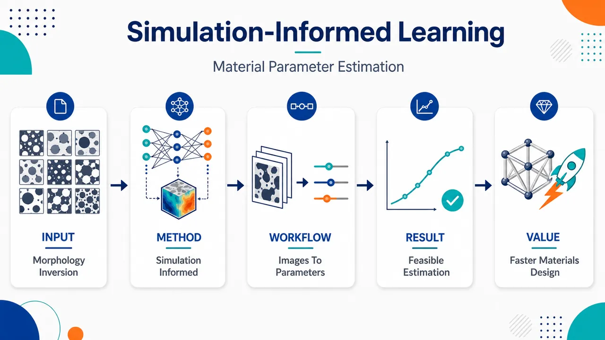
研究问题如何仅凭显微图像中的微结构形貌，反推出难以直接观测或标定的材料参数；核心是解决“形貌 → 参数”的材料反问题，而不是传统的“参数 → 形貌/性能”正向预测。创新方法将计算模拟生成的微结构—参数样本作为训练信号，引入“simulation-informed”深度学习框架，让模型从大量模拟形貌中学习隐藏参数指纹；Aha 点是用虚拟模拟数据替代大量昂贵实验标注，训练神经网络完成材料参数反演。工作流程输入为模拟或观测得到的微结构形貌图像；通过计算模拟建立不同材料参数对应的形貌样本库；用这些带参数标签的形貌数据训练深度学习模型；模型学习形貌纹理、相分布、空间模式与材料参数之间的映射；最终输入未知微结构形貌，输出估计的材料参数。关键结果研究表明，基于模拟数据训练的深度学习模型可用于从微结构形貌估计材料参数，证明了模拟辅助学习在材料反问题中的可行性；具体预测精度、对比基线、适用材料体系和泛化表现未在给定内容中详述。应用价值可减少材料参数测量对大量实验和人工拟合的依赖，为材料设计、微结构表征、形貌—性能关系建模和快速参数校准提供自动化工具；适合用于从显微图像快速推断材料内部机制或制造条件。核心概览
该论文属于计算材料科学与深度学习交叉方向，利用模拟数据训练模型，从微结构形貌反推出材料参数，服务形貌—性能反问题。
方法要点
- 采用“simulation-informed”思路，即用计算模拟生成或提供训练数据。
- 使用深度学习模型学习微结构形貌与材料参数之间的映射关系。
- 研究目标是从微结构形貌估计材料参数，属于材料参数反演/反问题建模。
- 具体网络结构、输入形貌表征方式、模拟模型与训练流程摘要未详述。
关键结果
- 摘要明确表明：该工作可利用模拟数据训练深度学习模型，用于从微结构形貌估计材料参数。
- 该方法面向形貌—性能关系中的反问题，即由观测到的微结构形貌推断潜在材料参数。
- 具体预测精度、对比基线、适用材料体系和泛化能力摘要未详述。
创新性判断
- 可能的新颖点在于将模拟数据与深度学习结合，用于材料参数反演，而不是仅做正向性能预测。
- 相比传统参数拟合或纯数据驱动方法，其潜在优势可能是减少对实验标注数据的依赖，并利用物理模拟约束学习过程；但摘要未详述具体实现。
- 创新性强弱难以仅凭摘要判断，因为未给出模型架构、模拟策略、验证体系或与已有方法的比较。
-
20
📊 含图深析
💡 亮点：深度学习分离径向速度中的行星弱信号。
📖 展开分析 + 配图
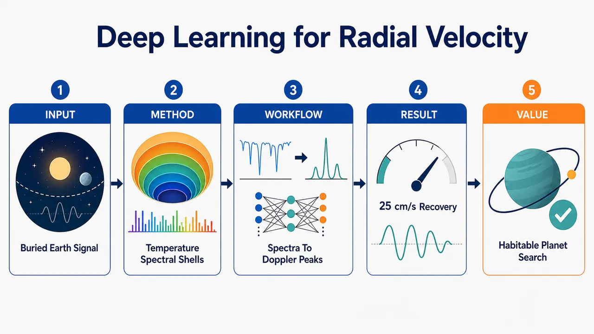
研究问题如何在真实 HARPS-N 太阳光谱中，从被恒星活动、仪器残差和大气污染淹没的径向速度数据里，恢复地球质量行星诱导的极微弱 Doppler shift；目标信号约 0.1 m/s，而太阳活动造成的长期 RV 起伏可达 2.95 m/s，传统 CCF/RV 方法难以把“行星整体谱线平移”与“恒星活动导致的谱线形变”分开。创新方法提出“物理动机光谱壳 + 深度学习”的框架：将近 30 万维高分辨率光谱压缩为 9×9 光谱壳，并用线形成温度替代单纯归一化通量，把每个谱线像素映射到光球形成深度；CNN 双输出同时预测 CCF-derived RV 和行星注入 Doppler shift。Aha 点是：行星信号像所有谱线共同平移，而恒星活动随谱线形成温度/光球深度变化，温度壳让网络更容易区分二者。工作流程输入 2036 个 2015–2024 年 HARPS-N 太阳日合并光谱；经 YARARA 处理并重新注入恒星活动信号，保留真实观测时间戳；向真实光谱注入 Keplerian 行星 Doppler shift；用主光谱梯度构造通量壳或线形成温度壳，并按速度梯度与噪声生成权重图，得到 9×9 加权特征图；输入轻量 1D-CNN，训练双目标输出 RV_CCF 与 DSᵢₙⱼ；用 hold-out 和 5-fold cross-validation 生成未见光谱预测序列；最后通过周期图检验预测 Doppler shift 中是否出现注入行星周期峰，并用 Monte Carlo dropout 给出不确定性。关键结果在 5-fold cross-validation 下，最佳模型可可靠恢复半振幅 ≥25 cm/s、周期 10–550 days 的行星信号；成功恢复的信号均在预测 Doppler-shift 周期图中表现为最显著峰。温度壳表示相较通量壳在未见数据泛化和预测不确定性上持续更优，说明线形成温度提供了区分恒星活动与行星 Doppler shift 的有效物理信息。应用价值为真实径向速度光谱中探测地球质量、长周期、低振幅系外行星提供可行路径，尤其面向类太阳恒星宜居带行星搜索；方法把高维光谱压缩为可解释、轻量、物理约束的输入，降低神经网络复杂度和过拟合风险，并通过不确定性量化提升检测可信度；发布 doppleriann Python 包，便于后续 RV 数据分析、模型复现和扩展到其他恒星。第一部分：核心概览 (Overview)
该研究面向地球质量系外行星的径向速度探测，提出将物理动机的光谱壳表示与深度学习结合，直接从真实 HARPS-N 太阳光谱中建模行星诱导的Doppler shift。核心贡献在于：以线形成温度替代单纯归一化通量构造低维光谱表示，并用 CNN、遗传算法超参数优化和 Monte Carlo dropout 提升泛化与不确定性量化能力。其定位是从“模拟数据上有效的深度学习”推进到“真实光谱、未见样本、低振幅长周期信号恢复”的方法学探索。
---
第二部分：结构化快速回顾
《Modeling Doppler Shifts in Radial-Velocity Data with Deep Learning toward Earth-mass Exoplanet Detection》（None，）
背景
地球质量行星在类太阳恒星宜居带内产生的径向速度信号约为 0.1 m/s，远低于太阳活动导致的长期 RV 起伏；HARPS-N 太阳 RV 10 年标准差达到 2.95 m/s。恒星振荡、米粒组织、磁活动等噪声源使传统 RV 方法难以分离行星信号。
方法
使用 2036 个 HARPS-N 太阳日合并高分辨率光谱，构造 9 × 9 光谱壳输入 CNN。光谱壳基于两类物理表示：归一化通量-速度梯度与线形成温度-速度梯度。向真实光谱注入 Keplerian 行星信号，训练网络同时预测 CCF-derived RV 与注入的 Doppler shift。采用 hold-out 与 5-fold cross-validation，用 NSGA-II/Optuna 搜索超参数，并用 Monte Carlo dropout 量化预测不确定性。
结果
交叉验证策略下，最佳模型能可靠恢复半振幅 ≥25 cm/s、周期 10–550 days 的行星信号；成功恢复的信号均对应 Doppler-shift 预测周期图中的最显著峰。温度壳表示在预测不确定性和未见数据泛化上持续优于通量壳表示。
讨论
线形成温度表示更贴近恒星活动的物理成因，因为活动信号随光球层深度或形成温度变化。低维光谱壳降低神经网络复杂度，同时保留对谱线形状变化、Doppler shift 与活动扰动的敏感性。
局限
训练和主要验证基于太阳 HARPS-N 数据；其他恒星需要可用的形成温度映射或专门光谱合成。注入信号采用基于主光谱梯度的线性近似，固定主光谱不能完全显式建模恒星活动引发的时变谱形变化。注入参数选择部分依赖 trial and error。
结论
物理约束光谱表示、轻量 CNN、严格未见数据评估、不确定性量化和增强训练结合后，为真实 RV 光谱中探测地球质量行星提供了可行路径；附带发布 doppleriann Python 包实现相关框架。
---
第三部分：逐章节冷凝解析 (Section-by-Section Condensing)
Abstract
- Scientific problem: stellar activity dominates Earth-mass Doppler signals
地球质量行星诱导的 Doppler shift 极小，主要障碍不是单纯仪器精度，而是恒星活动引入的 RV 污染。摘要直接界定问题：*"Detecting the tiny Doppler shifts induced by Earth-mass planets in stellar radial-velocity measurements remains extremely challenging due to stellar activity."* 这一问题对应宜居带类太阳恒星中约 0.1 m/s 量级的目标信号，而真实太阳 RV 起伏可达数 m/s 量级。
- Generalization to real unseen spectra as the central methodological target
研究目标不是只在模拟数据上获得低误差，而是使深度学习模型能推广到真实、未见光谱。目标表述为：*"develop a deep-learning framework that generalizes to real, unseen spectra and improves the detectability of Earth-mass planets in radial-velocity data."* 关键创新点落在 generalizes to real, unseen spectra，回应过去许多深度学习 RV 方法在模拟或特定恒星上有效但跨分布可靠性不足的问题。
- Physics-motivated spectral representations define the input space
模型输入不是完整光谱或传统 CCF，而是基于通量、线形成温度及其速度梯度的光谱壳。方法概括为：*"using physics-motivated spectral representations based on flux and line-formation temperature, together with their velocity gradients."* 这将高维光谱压缩到可训练的低维结构，同时保留 Doppler shift 与谱线形状变化信息。
- Two evaluation regimes test different kinds of robustness
使用 hold-out testing 和 cross-validation 两种策略。摘要说明：*"hold-out testing, which provides a direct assessment of generalization to unseen spectra, and cross-validation, which evaluates performance across multiple folds of the dataset."* 前者检验固定未见样本泛化，后者通过多折拼接利用全部 2036 个样本形成完整时间序列。
- Optimization and uncertainty quantification strengthen statistical rigor
模型通过遗传算法超参数优化和 Monte Carlo dropout 提升稳健性。摘要写明：*"Model robustness is enhanced through genetic-algorithm-based hyperparameter optimization, and predictive uncertainty is quantified using Monte Carlo dropout."* 这使方法不只是点预测，还包含对模型不确定性的量化。
- Recovery threshold reaches 25 cm/s over 10–550 days under CV
最佳网络在 CV 策略下可恢复半振幅 ≥25 cm/s、周期 10–550 days 的行星信号：*"reliably retrieves, under the CV strategy, the amplitudes, phases, and orbital periods of planetary signals with amplitudes greater than or equal to 25 cm/s and periods between 10 and 550 days."* 这超出许多短周期注入测试，接近宜居带相关长周期问题。
- Recovered planets appear as dominant periodogram peaks
所有成功恢复案例中，行星信号对应预测 Doppler shift 周期图的最高显著峰：*"in all cases tested here, the successfully recovered signals correspond to the most significant peaks in the periodograms of the Doppler-shift predictions."* 这意味着恢复不是仅在拟合参数层面成立，而是在盲式周期搜索中具备可识别性。
- Temperature shells outperform flux shells
温度壳表示持续优于通量壳表示，尤其在不确定性和泛化方面：*"Temperature-based spectral-shell representations consistently outperform flux-based shells, particularly in terms of predictive uncertainty and generalization to unseen data."* 这支持“恒星活动随光球深度变化”的物理先验。
- Software release supports reproducibility
研究附带发布 doppleriann 包：*"we release doppleriann, a Python package implementing the proposed spectral representations and deep-learning framework for Doppler-shift modeling."* 该工具实现光谱表示与 Doppler-shift 深度学习框架，有助于复现与扩展。
---
1 Introduction
- Radial velocity remains a foundational exoplanet-detection method
Doppler spectroscopy / radial velocity method 是系外行星发现的核心技术之一，在 1995 年发现首颗绕类太阳恒星运行的行星 51 Pegasi b 中起关键作用。原文给出历史定位：*"It was crucial in the discovery of the first exoplanet orbiting a solar-type star in 1995, the 51 Pegasi b hot-Jupiter"*，并指出该方法至今已发现 over 1000 exoplanets：*"to date, has identified over 1000 exoplanets."*
- Earth analog detection requires approximately 0.1 m/s precision
行星 RV 信号与行星质量成正比、与周期立方根成反比，因此地球质量、类太阳恒星宜居带、几百天周期构成极端弱信号情形。关键数量级为：*"detecting Earth-mass planets orbiting solar-type stars in their habitable zone (HZ), at orbital periods of a few hundred days, is extremely challenging, as it requires radial-velocity measurements with a precision of ∼ 0.1 m/s."*
- Stellar variability creates multiple astrophysical noise channels
恒星变异性包括三类主要物理机制：pressure waves / oscillations、granulation、magnetic activity。原文列举：*"Stellar variability arises from different physical processes, including the propagation of pressure waves within the stellar photosphere, manifested as stellar oscillations"*；又包括 *"convection-driven variations in surface brightness associated with granulation"*；以及 *"the emergence and evolution of surface magnetic fields responsible for magnetic activity."*
- Instrumental precision alone is insufficient
即使高分辨率光谱仪 ESPRESSO 已具备世界领先性能，地球质量宜居带行星仍难以可靠探测：*"Even with the precision achieved by state-of-the-art high-resolution spectrographs such as ESPRESSO, detecting Earth-mass planets in the HZ of solar-type stars remains beyond reach."* 因此限制因素转向数据建模。
- Independent-noise assumptions underestimate practical difficulty
理论上，若噪声独立，几百次观测足以探测地球质量行星：*"if measurement noise were independent, a few hundred observations would suffice to detect an Earth-mass planet."* 实际上恒星变异性主导信号：*"In practice, however, stellar variability dominates the signal."* 太阳 HARPS-N 观测给出强证据：*"solar radial velocity measurements obtained with HARPS-N exhibit a standard deviation of 2.95 m/s over 10 years."*
- Data analysis is likely the primary bottleneck
引言明确把瓶颈从硬件灵敏度转向分析方法：*"Consequently, data analysis, rather than instrumental sensitivity, is likely the primary limiting factor."* 这为机器学习和物理约束建模提供直接动机。
- Existing mitigation methods include PCA, Gaussian processes, and line-by-line RV
传统与统计方法包括 Principal Component Analysis、Gaussian processes、line-by-line RV analysis。目标是分离行星信号与恒星变异：*"all aimed at disentangling planetary signals from the effects of stellar variability."* 这些方法构成深度学习方案的对照背景。
- Machine learning and neural networks have shown strong but uneven progress
近年来 ANNs / DL / CNNs / autoencoders 被用于 RV 数据。神经网络优势来自非线性表达能力：*"owing to their ability to model complex nonlinear relationships."* 既有例子包括 de Beurs et al. 2022 的太阳 CCF CNN、Perger et al. 2023 的模拟数据 CNN、Nieto & Díaz 2023 的二分类 RV 时间序列、Liang et al. 2023 与 Kjærsgaard et al. 2023 的 autoencoder 方法。
- Recent real-data CNNs reach 20–50 cm/s but have constraints
Zhao et al. 2024 在真实太阳数据中达到 20 cm/s，在 Alpha Centauri B 和 Tau Ceti 中达到 50 cm/s：*"detecting signals at the 20 cm/s level in solar data and at 50 cm/s in observations from Alpha Centauri B and Tau Ceti."* Colwell et al. 2024 也报告 20 cm/s 信号检测，但局限于 50 days 周期以内且计算代价高：*"limited to periods of 50 days and requires computationally intensive models with significant prediction offsets."*
- Core gap: trained models rarely demonstrate cross-distribution reliability
许多模型需为每颗恒星或模拟集重新训练，跨目标、跨观测条件、跨谱段表现未被严格验证。问题表述为：*"most rely on neural-network models that must be retrained for each star or simulation, leaving their behavior largely untested across different data distributions, such as new stellar targets, varying observing conditions, or unseen spectral regions."*
- Transferability and interpretability are explicit design goals
真实 RV 光谱在波长覆盖、噪声性质、恒星活动水平上不同，因此需要更可迁移、更可解释的框架。原文动机为：*"These considerations motivate the development of more transferable and interpretable machine-learning frameworks that operate directly on real stellar spectra and maintain robust performance on genuinely unseen data."*
- Direct Doppler-shift prediction targets information missing from classical CCF indicators
方法与 Colwell et al. 2024 类似，直接预测行星诱导的 Doppler shift，而非只依赖传统 CCF 活动指标。原文强调：*"our method directly predicts the Doppler shift (DS) induced by planetary signals, thereby extracting information that is not directly accessible from classical CCF-based activity indicators."*
- Broader period range and lightweight architecture distinguish the framework
相比 Colwell et al. 2024 的 ≤50 days，该框架扩展至 up to 550 days，并通过物理光谱壳实现轻量网络：*"extends the analysis to a broader range of orbital periods (up to 550 days), while employing physically motivated spectral representations that enable lightweight neural-network architectures."*
- Temperature representation is grounded in activity physics
线形成温度优于通量的动机来自恒星活动信号对形成温度的依赖，尤其与活动区对对流运动的抑制有关。引言写明：*"stellar activity signals depend on the formation temperature of spectral lines, mainly due to the suppression of convective motions in active regions."*
---
2 Spectral-Shell Representations
- Spectral shells replace raw spectra and CCFs as neural-network inputs
输入选择为 spectral shells，而非完整恒星光谱或 CCF。原文直接说明：*"we use spectral shells as input to our deep-learning framework, rather than stellar spectra or CCF-based representations."* 光谱壳由 Cretignier et al. 2022 引入，是高分辨率光谱的低维投影：*"a reduced-dimensionality projection of high-resolution spectra designed to preserve sensitivity to Doppler shifts and stellar activity effects."*
- Dimensionality reduction improves neural-network training
光谱壳维度远低于原始光谱。给定原始每个光谱有 293,401 flux measurements，而壳表示最终为 9 × 9 网格，训练难度大幅降低。原文概括：*"They have a lower dimensionality than stellar spectra, significantly improving neural-network training."*
- Spectral shells probe stellar variability better than CCFs
CCF 也低维，但光谱壳对恒星变异更敏感：*"Unlike CCFs, which are also low-dimensionality, they have been shown to better probe stellar variability signals."* 关键在于保留局部谱线形状变化，而 CCF 是大规模谱线平均压缩。
- Flux shells are defined in normalized flux and flux-gradient space
基础壳表示把光谱压缩到二维网格，坐标为归一化通量与通量梯度：*"compresses the spectral data into a two-dimensional grid defined by normalized flux as a function of the flux gradient."* 梯度来自所有光谱平均得到的高信噪比 master spectrum：*"derived from a high signal-to-noise master spectrum constructed as the average of all available stellar spectra."*
- Cells record mean flux variations relative to the master spectrum
壳网格中每个 bin 记录相对主光谱的平均通量变化：*"Within each bin, the mean flux variation relative to the master spectrum is recorded."* 这使表示对谱线形状变化敏感，同时缓解高频噪声：*"retains localized spectral variations with respect to the master spectrum that are sensitive to line shape variation, while mitigating high-frequency noise."*
- Velocity gradients correct chromatic dispersion effects
使用对速度的通量梯度优于对波长的梯度，因为速度空间可让不同波长谱线在壳表示中对齐。原文指出：*"adopting the gradient of flux with respect to velocity is more appropriate and enables improved modeling of stellar variability."* 理由是：*"spectral lines from different wavelengths overlap in the spectral-shell representation when expressed in velocity space, thereby correcting for dispersion."*
- Temperature shells extend flux shells with photospheric-depth information
方法把归一化通量替换为形成温度，以编码光球深度。动机为：*"stellar variability depends on formation height in the stellar photosphere (or, equivalently, on formation temperature)."* 每个采样光谱点关联平均形成温度 T₁/₂。
- T₁/₂ has a precise radiative-transfer definition
T₁/₂ 被定义为累计通量贡献函数达到最大值 50% 时的光球温度。原文定义：*"defined as the photospheric temperature at which the cumulative flux contribution function reaches 50% of its maximum."* 该定义把谱线信息映射到光球深度，增强对活动诱导线型变化的刻画。
- Temperature refinement improves sensitivity to activity-induced line-profile changes
形成温度壳被设计用来更好探测活动导致的谱线轮廓变化。原文总结：*"This temperature-dependent refinement enhances the capability of the shell representation to probe activity-induced line profile variations."*
---
2.1 Flux-Based Shell Representation
- Linear Doppler approximation connects flux change and wavelength shift
对小速度位移 ΔV，同一波长网格上的通量变化可由主光谱梯度线性近似。公式为：
*"F(λᵢ) − F₀(λᵢ) = ΔFᵢ = ∂F₀(λᵢ)/∂λᵢ · Δλᵢ = ∂F₀(λᵢ)/∂λᵢ · ΔVᵢ/c λᵢ"*。
这基于 Bouchy et al. 2001，是注入 Doppler shift 的数学基础。
- Pixel-level velocity shift is inferred from flux residual and gradient
由线性关系可得每个像素的速度位移：
*"ΔVᵢ = c/λᵢ · ΔFᵢ · (∂F₀(λᵢ)/∂λᵢ)⁻¹."*
该公式说明，陡峭谱线处同样通量变化对应更小速度不确定性，梯度越大信息量越高。
- Velocity-space derivative removes chromatic dispersion terms
为消除色散导致的波长依赖，壳表示使用速度导数：
*"To eliminate chromatic effects from dispersion, the shell representation is constructed using the flux derivative with respect to velocity rather than wavelength."*
对应公式为：*"ΔVᵢ = ΔFᵢ · (∂F₀(vᵢ)/∂vᵢ)⁻¹."*
- Flux shell cells are defined by master flux and velocity gradient
每个壳由二元组 (F₀, dF₀/dv) 定义：*"each shell is defined as the set of tuples (F₀, dF₀/dv), and bins are formed in this space."* 这意味着像素按其物理局部谱线属性归类，而非按波长顺序排列。
- Information weights favor high-gradient low-noise pixels
速度 bin 权重定义为：
*"Wᵥ,ᵢ = [∂F₀(vᵢ)/∂vᵢ · 1/σFᵢ]²"*。
其中 σFᵢ 为观测通量噪声，给定为 *"√(F(vᵢ)+σ²det,i)"*。因此高梯度、低噪声像素被赋予更高权重。
- Cell weights aggregate pixel-level velocity information
壳网格每个 cell 的总权重为：*"Wᵥ,cell = ∑ᵢ∈cell Wᵥ,ᵢ."* 之后通过壳与权重图逐元素相乘构造 masked shell：*"obtained by the element-wise product between the original spectral shell and the associated weight map."*
- Weighting stabilizes representations and training
权重设计减少低信息或高噪声区域影响。原文明确效果：*"this weighting leads to more stable representations and neural-network training by reducing the contribution of low-information or noisy regions."*
---
2.2 Temperature-Based Shell Representation
- Temperature shells encode photospheric-depth dependence of stellar activity
温度壳的目标是捕获恒星活动随光球深度变化的事实：*"To account for the fact that stellar activity has a photospheric depth dependence, we extended the shell framework using a formation temperature-binned approach."* 每个像素都被赋予平均形成温度 T₁/₂。
- Temperature-space velocity change is an analog, not a physical temperature flow
温度空间定义等效速度变化：
*"ΔV_T = ΔT/g_T, with g_T = ∂T/∂v."*
g_T 是沿 Doppler 速度网格计算的温度谱数值斜率。关键限定为：*"it should not be interpreted as a physical temperature gradient."* 它只是通量-温度映射后温度值随速度坐标变化的数值导数。
- Temperature uncertainty is propagated from photon noise
σT 不是直接观测量，而是由通量噪声传播得到：*"σT is not a directly observed quantity; it is derived by propagating the photon noise in flux, σFᵢ, through the flux-to-temperature mapping."* 公式为：*"σT = fF→T(σFᵢ)."*
- Temperature-shell weighting mirrors flux-shell information weighting
温度壳权重为：
*"Wᵥ,ᵢ(T) = [g_T / fF→T(σFᵢ)]²"*，
cell 总权重为：*"Wᵥ,cell(T) = ∑ᵢ∈cell Wᵥ,ᵢ(T)."* 权重高低由温度-速度斜率和传播噪声共同决定。
- The representation preserves sensitivity to activity at different depths
温度壳最终目的为保留不同光球深度上活动位移信息：*"This formulation enables the shell representation to retain sensitivity to stellar activity shifts at different photospheric depths, as traced by spectral line formation temperatures."*
---
3 Data Processing
- Dataset contains 2036 daily binned HARPS-N solar spectra over ten years
数据为 2015–2024 年 HARPS-N 太阳观测，包含 2036 个日合并高分辨率光谱：*"a 10-year dataset of HARPS-N solar observations acquired between 2015 and 2024, comprising 2036 daily binned high-resolution spectra."*
- Each spectrum has 293,401 flux points across 3900–6900 Å
单个光谱维度极高：*"Each spectrum consists of 293,401 flux measurements spanning the wavelength range from 3900 to 6900 Å."* 这解释了为何必须做低维压缩。
- YARARA preprocessing removes major nonplanetary systematics
原始光谱经 YARARA pipeline 处理，用于修正仪器系统误差、telluric absorption 和恒星活动：*"corrects for instrumental systematics, telluric absorption, and stellar activity."* 这些修正用于缓解与行星 Doppler shift 无关的系统结构：*"mitigate systematic features unrelated to planetary Doppler shifts."*
- Activity correction is re-injected to preserve stellar signals
为训练模型在恒星信号存在时探测小质量行星，YARARA 活动修正被重新注入，形成 YVA dataset：*"the YARARA activity correction was re-injected into the spectra we analyzed, forming the so-called 'YVA' dataset."* 目的为：*"detect small-mass planetary signals in the presence of stellar signals."*
- Synthetic Keplerian signals augment the training data while retaining real timestamps
保留原始观测时间戳，向光谱注入合成 Keplerian 行星信号：*"Keeping the same timestamps of the original spectra, we inject synthetic Keplerian planetary signals into them to augment the training dataset and introduce controlled DS."*
- Planet injection uses Bouchy et al. linear flux-gradient formalism
注入方法基于通量差除以局部梯度获得波长差，再转速度：*"the wavelength difference at each point is, to first order, equal to the flux difference divided by the local gradient."* 随后 *"modified the flux of each spectrum at each wavelength bin according to the velocity of the injected planetary signal."*
- Initial simulated signals cover 0.1–5 m/s and 10–100 days
数据处理阶段描述的模拟信号为 DS 0.1–5 m/s，周期 10–100 days 均匀分布，并有随机相位：*"The simulated signals have DS ranging from 0.1 to 5 m/s, uniformly distributed orbital periods between 10 and 100 days, and random phases."*
- CCF-derived RV uses ESPRESSO G2 weighted line mask
对每个修改后光谱，使用 ESPRESSO G2 weighted line mask 计算 CCF 并得到总观测 RV：*"we compute the CCF using the ESPRESSO G2 weighted line mask to derive the total observed RV."* 该 RV 包含恒星、注入行星、残余仪器和 telluric 系统误差：*"includes both the stellar and the injected planetary components, in addition to residual instrumental and telluric systematics not fully corrected for by YARARA."*
- Formation temperatures are assigned using ARVE precomputed solar values
归一化通量随后转换为形成温度。使用 Al Moulla et al. 2022 的太阳形成温度，可从 ARVE code 提取：*"we use the precomputed solar formation temperatures presented in that work, which can be extracted from the ARVE code."*
- Temperature mapping avoids full spectral synthesis
温度先关联主光谱，再传播到每次观测的同一波长网格，使时间序列每个像素获得一致温度值。优势为：*"This approach avoids full spectral synthesis, remaining computationally efficient while preserving consistency with the solar photospheric structure."*
- Other stars require limited precomputed grids or dedicated synthesis
对非太阳恒星，ARVE 仅有有限光谱型预计算信息；否则需专门光谱合成：*"For stellar sources other than the Sun, the ARVE code can be used to extract precomputed information for a limited set of spectral types; otherwise, equivalent formation temperatures would need to be derived from dedicated spectral synthesis."*
- Only clean, modelable spectral lines are used
光谱壳仅使用可由光谱合成良好建模、且不含 tellurics 或探测器系统误差污染的谱线：*"only using spectral lines that can be properly model by spectral synthesis and that are therefore void of systematics induced by tellurics or detector systematics."*
- Shell resolution is 10 points per axis yielding 9 × 9 bins
通量壳与温度壳的壳空间均以每轴 10 points 离散，得到 9 × 9 bin 网格：*"we discretize the shell space at a resolution of ten points per axis, yielding a 9 × 9 grid of bins."*
- Two supervised datasets are produced
最终形成两类数据集：通量壳和温度壳，每个都配有 CCF-derived RV 与注入 DS：*"two different datasets: one comprising flux-based shells and another built from temperature-based shells, each paired with its corresponding CCF-derived RV and injected DS for supervised learning."*
- Master-spectrum gradient injection avoids interpolation systematics
注入 Doppler shifts 使用主光谱梯度而非解析模型。解析模型需改变每个光谱 bin 波长并增加温度谱与壳构造复杂度。重采样到共同网格会引入插值系统误差：*"this would add some unwanted systematics for each spectrum due to interpolation."* 因此采用 Bouchy 线性近似，使系统误差主要来自高 S/N 主光谱梯度：*"only the systematics involved in the computation of the master spectrum gradient contaminated the data."*
- Fixed master spectrum is an approximation
固定主光谱没有显式纳入恒星活动导致的时变谱形变化：*"The use of a fixed master spectrum remains an approximation, since stellar activity induces time-dependent spectral variations that are not explicitly incorporated into the shell construction."* 但所有精密 RV 方法本质上都依赖相对模板：*"all precise RV extraction methods are inherently based on relative measurements."*
---
4 Deep-Learning Framework
- CNNs receive 9 × 9 physics-informed shell inputs
监督式 CNN 输入为基于通量或温度的 9 × 9 壳表示：*"receive as input a physics-informed shell representation, based on flux or temperature, with dimensions of 9 × 9."*
- Dual-output design predicts both CCF RV and injected Doppler shift
网络有两个输出：total RV estimated from the CCF 与人工注入 DS：*"predict two outputs: the total RV estimated from the CCF, and the DS manually injected into the spectrum."* 双输出使网络同时学习传统 RV 信息与 CCF 无法直接给出的行星 DS。
- RV output enables comparison with classical CCF extraction
采用 RV 输出是为了引入可由 CCF 独立计算的量：*"include the RV as a quantity that can be independently computed from the spectra using the CCF, enabling a direct comparison between traditional and neural-network predictions."*
- DS output targets the latent planetary signal
DS 输出提供注入行星信号的监督目标：*"the DS output provides access to the injected planetary signal, which is not directly available from the CCF."* 这使网络被训练为从光谱壳中分离出行星 Doppler 分量。
- Table notation formalizes data splits and injection grids
全部光谱壳集合为 𝒮 = 2036；hold-out 测试集为 𝒱；开发集为 𝒟 = 𝒮 ∖ 𝒱；训练集约 90%，内部验证集约 10%。训练注入网格 𝒥ₜᵣₐᵢₙ 包含半振幅 0.1, 0.2, 0.3, 0.5, 1, 2, 5 m/s 和周期 20, 40, 60, 80, 100 days。全评估网格 𝒥ₐₗₗ 包含半振幅 0.1–0.45 m/s, step 0.05，周期 10–100 days step 10 与 150–550 days step 50。
---
4.1 Training Data
- KITCAT mask reduces the spectral domain to 31,066 clean wavelength samples
在 2036 HARPS-N 太阳光谱中，仅使用 Al Moulla et al. 2022 的 KITCAT line mask 选择波段，得到 31,066 wavelength samples：*"yielding a total of 31,066 wavelength samples."* 这些区域被选择是因为观测太阳光谱与 pySME 光谱建模一致：*"the observed solar spectra agree well with spectral modeling."*
- Clean spectral regions are essential for temperature information
精确温度信息依赖光谱合成，因此所选谱线必须可良好建模。原文说明：*"which is required to derive precise temperature information."* 同时减少 tellurics 和仪器污染：*"not significantly contaminated by tellurics and other instrumental systematics."*
- Hold-out testing uses 400 completely unseen spectra
HO 策略随机选择 400 个光谱作为固定测试集 𝒱，训练中完全不可见：*"We randomly select 400 spectra as a fixed test set 𝒱, ensuring that these samples are completely unseen during training."* 剩余 1636 个光谱构成训练集：*"The remaining 1636 spectra form the training set 𝒯."*
- Hold-out model evaluates many injections without retraining
对每个 j ∈ 𝒥ₐₗₗ，在固定测试集上加入对应行星信号形成 𝒱ⱼ，训练好的单一模型 M 直接预测：*"The trained model M is applied to each injected test set 𝒱ⱼ (without retraining)."* 这种设计保证训练与评估严格分离，同时探索大参数空间：*"ensures strict separation between training and evaluation data while enabling an extensive exploration of the injection parameter space."*
- Cross-validation rotates unseen evaluation subsets across folds
CV 将 𝒮 分为 N_folds 个互补子集，每折一个 𝒱ₖ 作未见评估，其余为开发集 𝒟ₖ：*"one subset 𝒱ₖ is used as an unseen evaluation set, while the remaining data define a development set 𝒟ₖ."* 每折训练独立模型 Mₖ。
- Synthetic injections are applied only to training data in CV
CV 中来自 𝒥ₐₗₗ 的合成行星信号只注入训练数据：*"Synthetic planetary signals drawn from the full injection grid 𝒥ₐₗₗ are injected into the training data only."* 模型随后应用到对应未见子集，不重训：*"applied to the corresponding unseen subset 𝒱ₖ, without retraining."*
- CV reconstructs a full 2036-sample unseen-prediction time series
所有折完成后，将互不重叠评估子集的预测拼接成完整时间序列：*"predictions from the disjoint evaluation subsets are concatenated to reconstruct a time series spanning the full dataset."* 每个光谱恰好作为未见数据一次：*"each spectrum is treated as unseen data exactly once."*
- Main CV uses five folds with approximately 400 spectra per fold
主分析采用 N_folds = 5，每折评估集约 400 个光谱，与 HO 测试集规模可比：*"we adopt N_folds = 5, yielding evaluation subsets of approximately 400 spectra per fold, comparable in size to the hold-out test set."* 附录还给出 N_folds = 10 结果。
- One model per fold evaluates multiple planet configurations
与 Zhao et al. 2024 的重要差异在于，CV 中每折只需一个训练模型即可评估多个注入行星配置：*"our cross-validation approach requires only one trained model per fold to evaluate multiple injected planetary configurations."*
- Weighted shell inputs form 9 × 9 feature maps
CNN 输入为壳与对应权重矩阵逐元素相乘得到的 9 × 9 feature map：*"The CNN input consists of the shell (flux or temperature) multiplied element-wise by its corresponding weight matrix, forming a 9 × 9 feature map."*
- Augmented sample count reaches approximately 57,200 per hold-out or one 5-fold CV scenario
对所有增强光谱执行该流程，在 HO 或 5-fold CV 单折、约 400 测试样本场景中，示例规模约 57,200 elements：*"for example, ≈ 57,200 elements in a hold-out test scenario, or a single fold of a 5-fold CV approach."*
- Targets are CCF RV and true injected DS
两个监督目标为 CCF-derived RV 与真实注入 DS：*"The two target outputs are the CCF-derived RV and the true DS induced by the injected planetary signal."* 注入 DS 的瞬时绝对值在 0 到注入半振幅之间变化：*"varies in absolute magnitude between 0 and the injected RV semi-amplitude."*
- Temporal information is excluded during training and reintroduced only at testing
虽然注入 Keplerian 信号使用原始时间戳，但训练时不保留时间顺序：*"temporal information is not preserved during training."* 壳样本随机选择：*"The spectral shells are randomly selected."* 时间只在测试时重新关联，用周期图检验信号恢复：*"Time information is only reintroduced during testing ... analyzed via periodograms."*
- Injection amplitudes and periods were empirically chosen to balance subtle and strong patterns
注入半振幅与周期通过 trial and error 选择：*"chosen by trial and error, based on how well the neural network performed during training."* 小 DS 如 0.1 m/s 和中等 DS 1–5 m/s 的混合有助于学习弱与强模式：*"using a mix of small DS values (like 0.1 m/s) and moderate ones (1 - 5 m/s) helped the model learn to recognize both subtle and stronger patterns."*
- Very large or only very small injections degrade learning
很大 DS 如 20 m/s or more 会使模型偏向大信号：*"Adding very large DS values (like 20 m/s or more) caused the model to focus too much on those signals."* 只用 0.1 and 0.2 m/s 又缺乏模式多样性：*"using only very small DS values (0.1 and 0.2 m/s) does not give the model enough variety to learn general patterns."*
- Period choices ensure sampled orbital phases across the ten-year baseline
周期选择保证完整数据跨度内采样多个相位，并至少有一个清晰 RV 峰：*"we selected them such that several phases of the injected signal are sampled within the full timespan of our dataset, ensuring the presence of at least one clear peak in the RV signal."*
---
4.2 Neural-network design
- Separate flux and temperature models share architecture but not optimized hyperparameters
构建两个独立网络：通量壳模型与温度壳模型。两者整体架构相同，但超参数独立优化：*"Both models share the same general architecture, and their hyperparameters were optimized independently of each other."* 实现使用 TensorFlow：*"All models are implemented using the TensorFlow library."*
- Monte Carlo dropout provides uncertainty and robustness
使用 MC-DO 进行预测不确定性估计与鲁棒性提升：*"To estimate predictive uncertainty and improve model robustness, we apply the Monte Carlo dropout (MC-DO) technique."* 推理时保持 dropout 启用，多次前向传播后取均值：*"performing multiple forward passes with dropout enabled, and then taking the mean prediction."*
- MC dropout acts as a Bayesian-like uncertainty estimator
MC-DO 被视为类贝叶斯不确定性估计：*"provide a Bayesian-like estimate of uncertainty."* 在小型天体物理数据集中也被用于提升回归性能：*"successfully used in other small astrophysical datasets for improving regression performance."*
- Architecture begins with two 1D convolutional layers
每个网络以两个 1D convolutional layers 开始：*"Each neural network begins with two 1D convolutional layers."* 尽管输入是二维 9 × 9，但它不是图像像素特征，而是物理含义明确的连续数值。
- 1D convolutions are preferred over 2D convolutions for structured shell data
壳表示中的相关性主要沿速度梯度轴：*"showing correlations primarily along the velocity-gradient axis."* 因此 1D 卷积比 2D 卷积更稳定高效：*"1D convolutions offer a more stable and efficient representation than 2D convolutions."*
- Row-wise 1D convolution preserves physical interpretation
沿行应用 1D 卷积可以捕捉梯度 bin 的局部变化，同时保持每行作为恒定归一化通量或温度切片的含义：*"capture local variations across gradient bins while preserving the interpretation of each row as a slice of constant normalized flux or temperature."*
- 1D design reduces parameters and overfitting risk
该配置减少可训练参数并缓解过拟合：*"reduces the number of trainable parameters and mitigates overfitting without loss of relevant information."* 原因是邻近梯度值仍因通量或温度随速度的平滑变化而相关。
- Optuna with NSGA-II explores hyperparameter space
使用 Optuna 和 Nondominated Sorting Genetic Algorithm II (NSGA-II) 搜索超参数并最小化训练损失：*"we used the Optuna library to employ the Nondominated Sorting Genetic Algorithm II (NSGA-II) for exploring the hyperparameter space and minimizing the training loss."*
- Genetic algorithm choice is justified by multi-objective optimization and convergence properties
NSGA-II 适合多目标优化：*"well-suited for exploring multi-objective optimization problems."* 带精英机制的遗传算法被指出能收敛到最佳解：*"genetic algorithms with elitism, such as NSGA-II, are guaranteed to converge toward the best solution."*
- Searched hyperparameters include batch size, learning rate, convolutional settings, and dense depth
搜索目标包括 batch size、learning rate、convolutional layer configuration、dense layer depth：*"targeted key elements of the architecture: batch size, learning rate, convolutional layer configuration, and dense layer depth."*
- Training uses 1000 epochs with early stopping patience 40
最大训练轮数固定为 1000，并根据验证损失设置 patience = 40 的 early stopping：*"fixed the number of training epochs at 1000 and employed early stopping with a patience of 40 epochs based on validation loss."*
- Learning rate search spans 10⁻⁴ to 10⁻² logarithmically
学习率按对数采样，范围 10⁻⁴–10⁻²：*"Learning rates were sampled logarithmically in the range 10−4 to 10−2."*
- Dropout and activation are fixed at 0.2 and SELU
dropout 固定为 0.2，激活函数为 SELU：*"Dropout was fixed at 0.2, and the SELU activation function was used throughout for its stable behavior during training."* SELU 公式为：*"SELU(x)=λx if x>0; α(eˣ−1) if x≤0"*。
- Adam optimizer and joint MSE loss train the dual-output model
所有模型使用 Adam optimizer 和 MSE loss：*"All models were trained using the Adam optimizer and the mean squared error (MSE) loss function."* 损失同时惩罚 RV 与 DS：
*"MSE = 1/N ∑ᵢ [(RV_CCF,i − RVₚᵣₑd,i)² + (DSᵢₙⱼ,i − DSₚᵣₑd,i)²]."*
- Hyperparameter optimization evaluates tens to hundreds of candidate models
优化过程评估大量候选模型：*"of order tens to hundreds of configurations when accounting for the combinations in Table 2 and the learning-rate sampling."* 最佳配置基于验证性能选择：*"The best configurations were selected based on validation performance using this loss function."*
- Selected models are supported by residual and uncertainty analyses
模型鲁棒性由附录中的不确定性与残差分析支持：*"show no evidence of overfitting or unstable behavior."* 这对小样本高维光谱学习尤其关键。
- Best flux and temperature configurations share a 512-unit dense layer
截至可见文本，通量模型和温度模型的最佳配置都包含一个 512 units 的单 dense layer：*"For both the flux and temperature-based models, the best-performing configurations shared a single dense layer with 512 units."*
---
第四部分：深度理解与语言支持 (Understanding & Nuance)
1. Doppler shift (DS)
Doppler shift 在这里不是泛指观测 RV，而是指合成注入的、由行星 Keplerian 运动诱导的速度位移目标。微妙之处在于，RV_CCF 是从 CCF 得到的总径向速度，包含恒星活动、行星、仪器与 telluric 残差；DSᵢₙⱼ / DSₚᵣₑd 则是监督学习中希望恢复的行星分量。
关键区别：
- RV：观测总量，混合信号。
- DS：行星诱导分量，训练标签中已知，真实观测中不可直接获得。
这也是双输出网络的意义：一个输出对齐传统 RV，另一个输出学习从谱形中分离行星信号。
2. Spectral-shell representation
光谱壳表示不是普通图像，也不是简单降采样光谱。它把每个光谱像素按其在主光谱中的通量值和速度梯度归入二维 bin，记录相对主光谱的变化。其核心思想是：具有相似线型位置和梯度性质的像素，即使位于不同波长，也可在速度梯度空间中聚合。
微妙差别：
- CCF 是把许多谱线平均成一条相关函数，压缩强但损失局部谱线差异。
- 光谱壳压缩后仍保留“哪些类型谱线区域发生了怎样变化”的信息。
- 温度壳进一步把“线形成在哪个光球深度”纳入表示。
3. Line-formation temperature / T₁/₂
线形成温度不是恒星表面某个直接观测温度，也不是单个谱线的黑体温度。它来自辐射转移模型，对每个波长点估计该光谱信号主要来自光球中哪个温度层。T₁/₂ 表示累计通量贡献函数达到最大值 50% 时的光球温度。
学术微妙性：
- 它是光谱形成深度的 proxy。
- 恒星活动如磁场抑制对流，在不同光球高度影响不同，因此温度维度有助于区分活动与行星整体 Doppler shift。
- 行星 Doppler shift 对所有谱线近似表现为共同速度位移；活动扰动则依赖谱线形成深度和线型。
4. Generalization to unseen spectra
这里的 unseen spectra 不只是“测试集没见过”。在 RV 深度学习语境下，它强调模型不能仅记住某些光谱样本、某些注入模式或某些时间点，而必须对真实观测中的未见谱形变化仍能恢复 DS。
HO 策略用固定 400 个未见光谱检验外推；CV 策略让全部 2036 个光谱各自作为未见样本一次，随后拼接形成完整时间序列做 periodogram。
微妙之处：CV 并非传统随机交叉验证的平均分数，而是为了生成“每个时间点都由未见模型预测”的完整 DS 时间序列。
5. Monte Carlo dropout
Monte Carlo dropout 是在推理阶段仍启用 dropout，多次前向传播产生一组预测分布，再计算均值和散布。它不是完整贝叶斯神经网络，但可作为近似贝叶斯不确定性估计。
在小样本天体物理任务中，这尤其重要，因为单次神经网络预测可能过度自信；MC-DO 可提示哪些预测受模型随机性影响更大。
---
疑难查证：为什么温度壳可能优于通量壳？
行星诱导的 Doppler shift 对整个恒星光谱近似是统一速度平移：所有谱线都朝同一方向移动。恒星活动却不是简单平移。磁活动区会抑制局部对流蓝移，黑子和光斑改变局部亮度权重，谱线轮廓会随形成高度、线深、温度敏感性而不同程度变形。
通量壳按 F₀ 与 dF₀/dv 分类，能捕捉线深和梯度信息；温度壳按 T 与 dT/dv 分类，则额外引入“该光谱信息来自光球哪一层”的物理维度。如果活动噪声在不同光球深度表现不同，温度壳就能让网络更容易识别“这是活动导致的深度相关扰动”，从而把它与“所有谱线共同平移”的行星 DS 区分开。
简化比喻：
- 行星信号像把整张乐谱整体升高一个音。
- 恒星活动像某些乐器在特定音区走调。
- 通量壳知道哪些音强、哪些变化快。
- 温度壳还知道这些音来自哪个“乐器层”，因此更容易识别走调来源。
---
第五部分：创新评估与关联 (Synthesis & Novelty)
创新性判断
- 从模拟有效转向真实光谱泛化
过去 2–5 年大量 RV 深度学习工作在模拟数据、单恒星数据或特定训练-测试设定中表现突出，但训练模型跨数据分布的可靠性不足。该研究把目标明确设为 real, unseen spectra 上的泛化，并通过 HO 与 CV 两套严格未见样本机制检验，而不是只报告训练集相近分布的回归误差。
- 用线形成温度构造深度学习输入是关键物理创新
相比仅使用 CCF、原始光谱、通量壳或普通谱线指标，该方法把 line-formation temperature 引入光谱壳，使输入空间显式编码恒星活动的光球深度依赖。这解决了一个前人未充分处理的问题：恒星活动不是波长无关或谱线无关的噪声，而是与谱线形成高度、温度、局部对流抑制相关。
- 直接预测 Doppler shift，而非只预测 RV 或活动指标
网络监督目标包含注入的 DS，使模型学习“行星分量”本身。传统 CCF RV 是混合量，活动指标只间接追踪噪声；直接 DS 建模更贴近最终科学目标：在恒星活动背景下恢复低振幅 Keplerian 信号。
- 周期范围扩展到 550 days，更接近宜居带问题
近年部分 CNN 真实太阳光谱研究已达到 20 cm/s 量级，但常局限于短周期，例如 ≤50 days。该研究评估周期扩展到 10–550 days，使方法更接近类太阳恒星宜居带地球质量行星探测的长周期挑战。
- 轻量化物理压缩替代计算密集 ensemble
光谱壳把 293,401 个通量点压缩为 9 × 9 特征图，并通过物理权重保留高信息区域。相较大规模 CNN ensemble，这种表示使架构更轻、更可解释，并降低过拟合风险。
- CV 设计兼顾未见样本与完整时间序列周期图检测
常规交叉验证只用于评估平均误差；这里的 CV 还服务于天体物理检测：每个光谱作为未见样本预测一次，拼接为完整 2036 点时间序列，再用 periodogram 判断注入周期是否成为最显著峰。这把机器学习评估与实际 RV 行星搜索流程连接起来。
- 不确定性量化与遗传算法优化提升方法可信度
使用 NSGA-II 做超参数优化，使用 Monte Carlo dropout 估计预测不确定性，避免仅依赖单次网络训练和点估计。对于小振幅行星信号，预测不确定性与残差稳定性和点预测精度同等重要。
- 仍未完全解决跨恒星迁移问题
尽管方法强调泛化到未见太阳光谱，但真正跨恒星类型、不同仪器、不同活动水平的迁移仍需要进一步验证。温度壳对其他恒星依赖 ARVE 预计算网格或专门光谱合成，说明该创新具备物理可扩展性，但实际推广成本仍存在。
-
21
💡 亮点：Weyl 等离激元携带由 Cw 决定的拓扑涡量。
- 22
- 23
- 24
- 25
-
26
💡 亮点：PINN 与 DeepONet 被对比用于动态滑移 Couette 流。
-
27
💡 亮点：量子弹性网络被用于石墨烯力学性质建模。
- 28
-
29
💡 亮点：2H-NbSeS 的超导数据支持多带图像。
-
30
💡 亮点：transmon 阵列可模拟量子孤子行走。
-
31
💡 亮点：磁性异质结的太赫兹发射由超快自旋流优化。
- 32
- 33
- 34
-
35
💡 亮点：窄颈几何会改变分数量子霍尔腔充电能。
-
36
💡 亮点：给出 CISS 效应的非线性自旋输运理论框架。
-
37
💡 亮点：用广义对称性刻画 s 波超导体的全局拓扑结构。
-
38
💡 亮点：排斥统计可使量子热机超越费米子 Whitney 功率界。
- 39
-
40
💡 亮点：耗散量子 Rabi 模型出现非高斯相变和级联失稳。
-
41
💡 亮点：等距结构使二维张量网络态采样更可计算。
- 42
-
43
💡 亮点：样条局域性支撑 KAN 的亚微秒片上在线学习。
-
44
💡 亮点：光子测量成为物理约束方程学习的可训练模块。
-
45
💡 亮点：Sm3+ 掺杂系统调节 SrFe12O19 的磁性与介电响应。
- 46
- 47
-
48
💡 亮点：斯格明子分辨不变量细化手征拓扑超导分类。
-
49
💡 亮点：三方法重建 J1-J2 三角反铁磁场致相图。
- 50
- 51
-
52
💡 亮点：RoboCup 二维足球被封装为多智能体强化学习基准。
- 53
-
54
💡 亮点：40 年观测数据可直接训练端到端中期天气预报模型。
-
55
💡 亮点：GrapNet 把神经网络操作提升为可编辑图程序。
- 56
-
57
💡 亮点：中心角对称性统一驱动二维细胞网络内外顶点弛豫。
-
58
💡 亮点：RankGraph-2 协同设计十亿节点推荐图的构建、学习与服务。
-
59
💡 亮点：各向异性图扩散被用于提升学习式 TSP 求解。
- 60